-
Verify Prompted Count functionality.
3:12:15 PM / 02:57:19:659 Fail
Verify Prompted Count functionality.
01.05.2024 3:12:15 PM 01.05.2024 6:09:35 PM 02:57:19:659 · #test-id=1@store_walk @regression @111Newprompted_countPassTO CHANGE THE DEVICE TIMINGS AS REQUIREDPassTO CHANGE THE DEVICE TIMINGS AS REQUIREDGiven I send the time "06" and mins "01" and meridiem "am" and current date in listThen I Change timeThen I Change datePassTO CHANGE THE DEVICE TIMINGS AS REQUIREDGiven I send the time "09" and mins "16" and meridiem "am" and current date in listThen I Change timePassTO CHANGE THE DEVICE TIMINGS AS REQUIREDGiven I send the time "09" and mins "46" and meridiem "am" and current date in listThen I Change timePassTO CHANGE THE DEVICE TIMINGS AS REQUIREDGiven I send the time "06" and mins "01" and meridiem "am" and current date in listThen I Change timePassTO CHANGE THE DEVICE TIMINGS AS REQUIREDGiven I send the time "09" and mins "48" and meridiem "am" and current date in listThen I Change timePassTO CHANGE THE DEVICE TIMINGS AS REQUIREDGiven I send the time "07" and mins "48" and meridiem "am" and current date in listThen I Change timeFailSC_01 To verify available Departments and all locations with default statusFailSC_01 To verify available Departments and all locations with default statusWhen I enter Username and Password for SMA Collegue userAnd I click on login button for SMAThen I click on 'stockMngmtText' on page 'HomePagePO_New'Then I click on "Prompted Counts" optionThen I verify "Ambient & Frozen" with "Default" statusThen I click on "Ambient & Frozen" optionAnd I verify option "Fixture" with "0" statuscom.morrisons.common.action.Hook.afterScenario(io.cucumber.java.Scenario)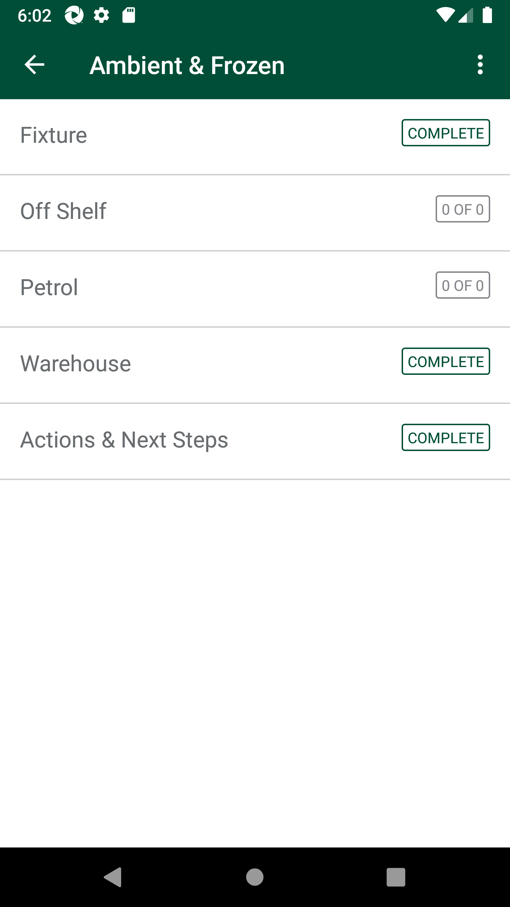
And I verify option "Off Shelf" with "0" statusStep skippedAnd I verify option "Petrol" with "0" statusStep skippedAnd I verify option "Warehouse" with "0" statusStep skippedAnd I verify option "Actions & Next Steps" with "Default" statusStep skippedFailSC_01 To verify available Departments and all locations with default statusWhen I enter Username and Password for SMA Collegue userAnd I click on login button for SMAThen I click on 'stockMngmtText' on page 'HomePagePO_New'Then I click on "Prompted Counts" optionThen I verify "Fresh" with "Default" statusThen I click on "Fresh" optionAnd I verify option "Fixture" with "0" statuscom.morrisons.common.action.Hook.afterScenario(io.cucumber.java.Scenario)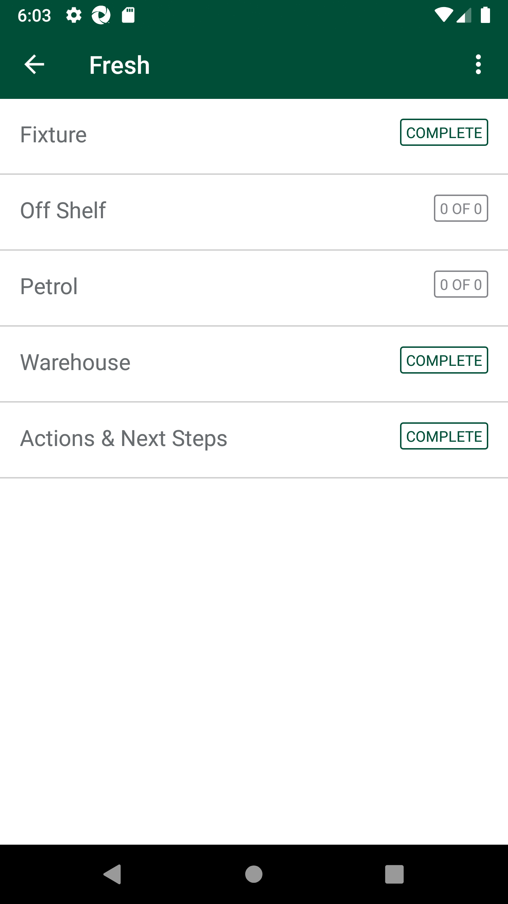
And I verify option "Off Shelf" with "0" statusStep skippedAnd I verify option "Petrol" with "0" statusStep skippedAnd I verify option "Warehouse" with "0" statusStep skippedAnd I verify option "Actions & Next Steps" with "Default" statusStep skippedFailSC_01 To verify available Departments and all locations with default statusWhen I enter Username and Password for SMA Collegue userAnd I click on login button for SMAThen I click on 'stockMngmtText' on page 'HomePagePO_New'Then I click on "Prompted Counts" optionThen I verify "Market Street" with "Default" statusThen I click on "Market Street" optionAnd I verify option "Fixture" with "0" statuscom.morrisons.common.action.Hook.afterScenario(io.cucumber.java.Scenario)And I verify option "Off Shelf" with "0" statusStep skippedAnd I verify option "Petrol" with "0" statusStep skippedAnd I verify option "Warehouse" with "0" statusStep skippedAnd I verify option "Actions & Next Steps" with "Default" statusStep skippedFailSC_01 To verify available Departments and all locations with default statusWhen I enter Username and Password for SMA Collegue userAnd I click on login button for SMAThen I click on 'stockMngmtText' on page 'HomePagePO_New'Then I click on "Prompted Counts" optionThen I verify "Services" with "Default" statusThen I click on "Services" optionAnd I verify option "Fixture" with "0" statuscom.morrisons.common.action.Hook.afterScenario(io.cucumber.java.Scenario)And I verify option "Off Shelf" with "0" statusStep skippedAnd I verify option "Petrol" with "0" statusStep skippedAnd I verify option "Warehouse" with "0" statusStep skippedAnd I verify option "Actions & Next Steps" with "Default" statusStep skippedFailSC_02 To verify one prompt item and 'location not completed' message, for OffShelf location with 'CONTINUE TO FIXTURE' button navigation.FailSC_02 To verify one prompt item and 'location not completed' message, for OffShelf location with 'CONTINUE TO FIXTURE' button navigation.When I enter Username and Password for SMA Collegue userAnd I click on login button for SMAThen I click on 'stockMngmtText' on page 'HomePagePO_New'Then I click on "Prompted Counts" optionThen I click on "Ambient & Frozen" optionThen I click on "Off Shelf" optionAnd I Verify Prompt "Fixture location has not been completed." is displayed at "Off Shelf"com.morrisons.common.action.Hook.afterScenario(io.cucumber.java.Scenario)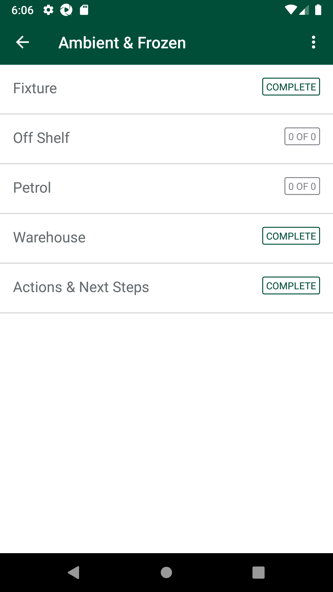
And I view and click on Button "CONTINUE TO FIXTURE"Step skippedAnd I Verify prompted item navigated to "Fixture"Step skippedThen I verify one prompted item is displayedStep skippedFailSC_02 To verify one prompt item and 'location not completed' message, for OffShelf location with 'CONTINUE TO FIXTURE' button navigation.When I enter Username and Password for SMA Collegue userAnd I click on login button for SMAThen I click on 'stockMngmtText' on page 'HomePagePO_New'Then I click on "Prompted Counts" optionThen I click on "Fresh" optionThen I click on "Off Shelf" optionAnd I Verify Prompt "Fixture location has not been completed." is displayed at "Off Shelf"com.morrisons.common.action.Hook.afterScenario(io.cucumber.java.Scenario)And I view and click on Button "CONTINUE TO FIXTURE"Step skippedAnd I Verify prompted item navigated to "Fixture"Step skippedThen I verify one prompted item is displayedStep skippedFailSC_02 To verify one prompt item and 'location not completed' message, for OffShelf location with 'CONTINUE TO FIXTURE' button navigation.When I enter Username and Password for SMA Collegue userAnd I click on login button for SMAThen I click on 'stockMngmtText' on page 'HomePagePO_New'Then I click on "Prompted Counts" optionThen I click on "Market Street" optionThen I click on "Off Shelf" optionAnd I Verify Prompt "Fixture location has not been completed." is displayed at "Off Shelf"com.morrisons.common.action.Hook.afterScenario(io.cucumber.java.Scenario)And I view and click on Button "CONTINUE TO FIXTURE"Step skippedAnd I Verify prompted item navigated to "Fixture"Step skippedThen I verify one prompted item is displayedStep skippedFailSC_02 To verify one prompt item and 'location not completed' message, for OffShelf location with 'CONTINUE TO FIXTURE' button navigation.When I enter Username and Password for SMA Collegue userAnd I click on login button for SMAThen I click on 'stockMngmtText' on page 'HomePagePO_New'Then I click on "Prompted Counts" optionThen I click on "Services" optionThen I click on "Off Shelf" optionAnd I Verify Prompt "Fixture location has not been completed." is displayed at "Off Shelf"com.morrisons.common.action.Hook.afterScenario(io.cucumber.java.Scenario)And I view and click on Button "CONTINUE TO FIXTURE"Step skippedAnd I Verify prompted item navigated to "Fixture"Step skippedThen I verify one prompted item is displayedStep skippedFailSC_03 To verify 'location not completed' message with 'CONTINUE TO FIXTURE' button navigation for Petrol locationFailSC_03 To verify 'location not completed' message with 'CONTINUE TO FIXTURE' button navigation for Petrol locationWhen I enter Username and Password for SMA Collegue userAnd I click on login button for SMAThen I click on 'stockMngmtText' on page 'HomePagePO_New'Then I click on "Prompted Counts" optionThen I click on "Ambient & Frozen" optionThen I click on "Petrol" optionAnd I Verify Prompt "Fixture and Off Shelf locations have not been completed." is displayed at "Petrol"com.morrisons.common.action.Hook.afterScenario(io.cucumber.java.Scenario)And I view and click on Button "CONTINUE TO FIXTURE"Step skippedAnd I Verify prompted item navigated to "Fixture"Step skippedFailSC_03 To verify 'location not completed' message with 'CONTINUE TO FIXTURE' button navigation for Petrol locationWhen I enter Username and Password for SMA Collegue userAnd I click on login button for SMAThen I click on 'stockMngmtText' on page 'HomePagePO_New'Then I click on "Prompted Counts" optionThen I click on "Fresh" optionThen I click on "Petrol" optionAnd I Verify Prompt "Fixture and Off Shelf locations have not been completed." is displayed at "Petrol"com.morrisons.common.action.Hook.afterScenario(io.cucumber.java.Scenario)And I view and click on Button "CONTINUE TO FIXTURE"Step skippedAnd I Verify prompted item navigated to "Fixture"Step skippedFailSC_03 To verify 'location not completed' message with 'CONTINUE TO FIXTURE' button navigation for Petrol locationWhen I enter Username and Password for SMA Collegue userAnd I click on login button for SMAThen I click on 'stockMngmtText' on page 'HomePagePO_New'Then I click on "Prompted Counts" optionThen I click on "Market Street" optionThen I click on "Petrol" optionAnd I Verify Prompt "Fixture and Off Shelf locations have not been completed." is displayed at "Petrol"com.morrisons.common.action.Hook.afterScenario(io.cucumber.java.Scenario)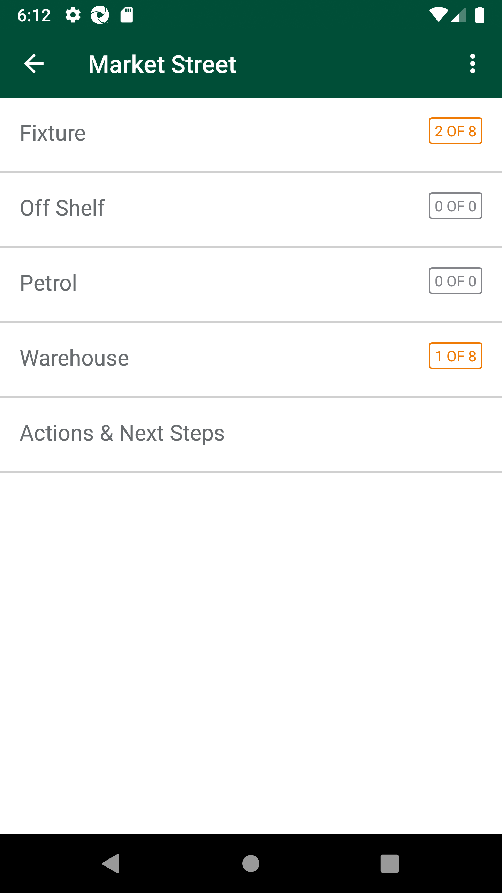
And I view and click on Button "CONTINUE TO FIXTURE"Step skippedAnd I Verify prompted item navigated to "Fixture"Step skippedFailSC_03 To verify 'location not completed' message with 'CONTINUE TO FIXTURE' button navigation for Petrol locationWhen I enter Username and Password for SMA Collegue userAnd I click on login button for SMAThen I click on 'stockMngmtText' on page 'HomePagePO_New'Then I click on "Prompted Counts" optionThen I click on "Services" optionThen I click on "Petrol" optionAnd I Verify Prompt "Fixture and Off Shelf locations have not been completed." is displayed at "Petrol"com.morrisons.common.action.Hook.afterScenario(io.cucumber.java.Scenario)And I view and click on Button "CONTINUE TO FIXTURE"Step skippedAnd I Verify prompted item navigated to "Fixture"Step skippedFailSC_04 To Verify 'location not completed' message with 'CONTINUE TO FIXTURE' button navigation for Warehouse locationFailSC_04 To Verify 'location not completed' message with 'CONTINUE TO FIXTURE' button navigation for Warehouse locationWhen I enter Username and Password for SMA Collegue userAnd I click on login button for SMAThen I click on 'stockMngmtText' on page 'HomePagePO_New'Then I click on "Prompted Counts" optionThen I click on "Ambient & Frozen" optionThen I click on "Warehouse" optionAnd I Verify Prompt "Fixture location has not been completed." is displayed at "Warehouse"com.morrisons.common.action.Hook.afterScenario(io.cucumber.java.Scenario)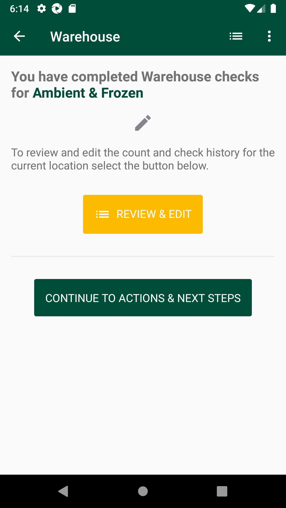
And I view and click on Button "CONTINUE TO FIXTURE"Step skippedAnd I Verify prompted item navigated to "Fixture"Step skippedFailSC_04 To Verify 'location not completed' message with 'CONTINUE TO FIXTURE' button navigation for Warehouse locationWhen I enter Username and Password for SMA Collegue userAnd I click on login button for SMAThen I click on 'stockMngmtText' on page 'HomePagePO_New'Then I click on "Prompted Counts" optionThen I click on "Fresh" optionThen I click on "Warehouse" optionAnd I Verify Prompt "Fixture location has not been completed." is displayed at "Warehouse"com.morrisons.common.action.Hook.afterScenario(io.cucumber.java.Scenario)And I view and click on Button "CONTINUE TO FIXTURE"Step skippedAnd I Verify prompted item navigated to "Fixture"Step skippedFailSC_04 To Verify 'location not completed' message with 'CONTINUE TO FIXTURE' button navigation for Warehouse locationWhen I enter Username and Password for SMA Collegue userAnd I click on login button for SMAThen I click on 'stockMngmtText' on page 'HomePagePO_New'Then I click on "Prompted Counts" optionThen I click on "Market Street" optionThen I click on "Warehouse" optionAnd I Verify Prompt "Fixture and Off Shelf locations have not been completed." is displayed at "Warehouse"com.morrisons.common.action.Hook.afterScenario(io.cucumber.java.Scenario)And I view and click on Button "CONTINUE TO FIXTURE"Step skippedAnd I Verify prompted item navigated to "Fixture"Step skippedFailSC_04 To Verify 'location not completed' message with 'CONTINUE TO FIXTURE' button navigation for Warehouse locationWhen I enter Username and Password for SMA Collegue userAnd I click on login button for SMAThen I click on 'stockMngmtText' on page 'HomePagePO_New'Then I click on "Prompted Counts" optionThen I click on "Services" optionThen I click on "Warehouse" optionAnd I Verify Prompt "Fixture and Off Shelf locations have not been completed." is displayed at "Warehouse"com.morrisons.common.action.Hook.afterScenario(io.cucumber.java.Scenario)And I view and click on Button "CONTINUE TO FIXTURE"Step skippedAnd I Verify prompted item navigated to "Fixture"Step skippedFailSC_05 To verify history screen with 'No Item Available' msg for, Fixture, Offshelf, Petrol and Warehouse for all deparments.FailSC_05 To verify history screen with 'No Item Available' msg for, Fixture, Offshelf, Petrol and Warehouse for all deparments.When I enter Username and Password for SMA Collegue userAnd I click on login button for SMAThen I click on 'stockMngmtText' on page 'HomePagePO_New'Then I click on "Prompted Counts" optionThen I click on "Ambient & Frozen" optionThen I click on "Fixture" optionThen I click on icon "Show List"com.morrisons.common.action.Hook.afterScenario(io.cucumber.java.Scenario) And I see "Fixture History"Step skippedThen I Verify Prompt "No Items Available" is displayed at "Fixture"Step skippedFailSC_05 To verify history screen with 'No Item Available' msg for, Fixture, Offshelf, Petrol and Warehouse for all deparments.When I enter Username and Password for SMA Collegue userAnd I click on login button for SMAThen I click on 'stockMngmtText' on page 'HomePagePO_New'Then I click on "Prompted Counts" optionThen I click on "Ambient & Frozen" optionThen I click on "Off Shelf" optionThen I click on icon "Show List"com.morrisons.common.action.Hook.afterScenario(io.cucumber.java.Scenario)And I see "Off Shelf History"Step skippedThen I Verify Prompt "No Items Available" is displayed at "Off Shelf"Step skippedFailSC_05 To verify history screen with 'No Item Available' msg for, Fixture, Offshelf, Petrol and Warehouse for all deparments.When I enter Username and Password for SMA Collegue userAnd I click on login button for SMAThen I click on 'stockMngmtText' on page 'HomePagePO_New'Then I click on "Prompted Counts" optionThen I click on "Ambient & Frozen" optionThen I click on "Petrol" optionThen I click on icon "Show List"com.morrisons.common.action.Hook.afterScenario(io.cucumber.java.Scenario)And I see "Petrol History"Step skippedThen I Verify Prompt "No Items Available" is displayed at "Petrol"Step skippedFailSC_05 To verify history screen with 'No Item Available' msg for, Fixture, Offshelf, Petrol and Warehouse for all deparments.When I enter Username and Password for SMA Collegue userAnd I click on login button for SMAThen I click on 'stockMngmtText' on page 'HomePagePO_New'Then I click on "Prompted Counts" optionThen I click on "Ambient & Frozen" optionThen I click on "Warehouse" optionThen I click on icon "Show List"com.morrisons.common.action.Hook.afterScenario(io.cucumber.java.Scenario)And I see "Warehouse History"Step skippedThen I Verify Prompt "No Items Available" is displayed at "Warehouse"Step skippedFailSC_05 To verify history screen with 'No Item Available' msg for, Fixture, Offshelf, Petrol and Warehouse for all deparments.When I enter Username and Password for SMA Collegue userAnd I click on login button for SMAThen I click on 'stockMngmtText' on page 'HomePagePO_New'Then I click on "Prompted Counts" optionThen I click on "Fresh" optionThen I click on "Fixture" optionThen I click on icon "Show List"com.morrisons.common.action.Hook.afterScenario(io.cucumber.java.Scenario)And I see "Fixture History"Step skippedThen I Verify Prompt "No Items Available" is displayed at "Fixture"Step skippedFailSC_05 To verify history screen with 'No Item Available' msg for, Fixture, Offshelf, Petrol and Warehouse for all deparments.When I enter Username and Password for SMA Collegue userAnd I click on login button for SMAThen I click on 'stockMngmtText' on page 'HomePagePO_New'Then I click on "Prompted Counts" optionThen I click on "Fresh" optionThen I click on "Off Shelf" optionThen I click on icon "Show List"com.morrisons.common.action.Hook.afterScenario(io.cucumber.java.Scenario)And I see "Off Shelf History"Step skippedThen I Verify Prompt "No Items Available" is displayed at "Off Shelf"Step skippedFailSC_05 To verify history screen with 'No Item Available' msg for, Fixture, Offshelf, Petrol and Warehouse for all deparments.When I enter Username and Password for SMA Collegue userAnd I click on login button for SMAThen I click on 'stockMngmtText' on page 'HomePagePO_New'Then I click on "Prompted Counts" optionThen I click on "Fresh" optionThen I click on "Petrol" optionThen I click on icon "Show List"com.morrisons.common.action.Hook.afterScenario(io.cucumber.java.Scenario)And I see "Petrol History"Step skippedThen I Verify Prompt "No Items Available" is displayed at "Petrol"Step skippedFailSC_05 To verify history screen with 'No Item Available' msg for, Fixture, Offshelf, Petrol and Warehouse for all deparments.When I enter Username and Password for SMA Collegue userAnd I click on login button for SMAThen I click on 'stockMngmtText' on page 'HomePagePO_New'Then I click on "Prompted Counts" optionThen I click on "Fresh" optionThen I click on "Warehouse" optionThen I click on icon "Show List"com.morrisons.common.action.Hook.afterScenario(io.cucumber.java.Scenario)
And I see "Fixture History"Step skippedThen I Verify Prompt "No Items Available" is displayed at "Fixture"Step skippedFailSC_05 To verify history screen with 'No Item Available' msg for, Fixture, Offshelf, Petrol and Warehouse for all deparments.When I enter Username and Password for SMA Collegue userAnd I click on login button for SMAThen I click on 'stockMngmtText' on page 'HomePagePO_New'Then I click on "Prompted Counts" optionThen I click on "Ambient & Frozen" optionThen I click on "Off Shelf" optionThen I click on icon "Show List"com.morrisons.common.action.Hook.afterScenario(io.cucumber.java.Scenario)And I see "Off Shelf History"Step skippedThen I Verify Prompt "No Items Available" is displayed at "Off Shelf"Step skippedFailSC_05 To verify history screen with 'No Item Available' msg for, Fixture, Offshelf, Petrol and Warehouse for all deparments.When I enter Username and Password for SMA Collegue userAnd I click on login button for SMAThen I click on 'stockMngmtText' on page 'HomePagePO_New'Then I click on "Prompted Counts" optionThen I click on "Ambient & Frozen" optionThen I click on "Petrol" optionThen I click on icon "Show List"com.morrisons.common.action.Hook.afterScenario(io.cucumber.java.Scenario)And I see "Petrol History"Step skippedThen I Verify Prompt "No Items Available" is displayed at "Petrol"Step skippedFailSC_05 To verify history screen with 'No Item Available' msg for, Fixture, Offshelf, Petrol and Warehouse for all deparments.When I enter Username and Password for SMA Collegue userAnd I click on login button for SMAThen I click on 'stockMngmtText' on page 'HomePagePO_New'Then I click on "Prompted Counts" optionThen I click on "Ambient & Frozen" optionThen I click on "Warehouse" optionThen I click on icon "Show List"com.morrisons.common.action.Hook.afterScenario(io.cucumber.java.Scenario)And I see "Warehouse History"Step skippedThen I Verify Prompt "No Items Available" is displayed at "Warehouse"Step skippedFailSC_05 To verify history screen with 'No Item Available' msg for, Fixture, Offshelf, Petrol and Warehouse for all deparments.When I enter Username and Password for SMA Collegue userAnd I click on login button for SMAThen I click on 'stockMngmtText' on page 'HomePagePO_New'Then I click on "Prompted Counts" optionThen I click on "Fresh" optionThen I click on "Fixture" optionThen I click on icon "Show List"com.morrisons.common.action.Hook.afterScenario(io.cucumber.java.Scenario)And I see "Fixture History"Step skippedThen I Verify Prompt "No Items Available" is displayed at "Fixture"Step skippedFailSC_05 To verify history screen with 'No Item Available' msg for, Fixture, Offshelf, Petrol and Warehouse for all deparments.When I enter Username and Password for SMA Collegue userAnd I click on login button for SMAThen I click on 'stockMngmtText' on page 'HomePagePO_New'Then I click on "Prompted Counts" optionThen I click on "Fresh" optionThen I click on "Off Shelf" optionThen I click on icon "Show List"com.morrisons.common.action.Hook.afterScenario(io.cucumber.java.Scenario)And I see "Off Shelf History"Step skippedThen I Verify Prompt "No Items Available" is displayed at "Off Shelf"Step skippedFailSC_05 To verify history screen with 'No Item Available' msg for, Fixture, Offshelf, Petrol and Warehouse for all deparments.When I enter Username and Password for SMA Collegue userAnd I click on login button for SMAThen I click on 'stockMngmtText' on page 'HomePagePO_New'Then I click on "Prompted Counts" optionThen I click on "Fresh" optionThen I click on "Petrol" optionThen I click on icon "Show List"com.morrisons.common.action.Hook.afterScenario(io.cucumber.java.Scenario)And I see "Petrol History"Step skippedThen I Verify Prompt "No Items Available" is displayed at "Petrol"Step skippedFailSC_05 To verify history screen with 'No Item Available' msg for, Fixture, Offshelf, Petrol and Warehouse for all deparments.When I enter Username and Password for SMA Collegue userAnd I click on login button for SMAThen I click on 'stockMngmtText' on page 'HomePagePO_New'Then I click on "Prompted Counts" optionThen I click on "Fresh" optionThen I click on "Warehouse" optionThen I click on icon "Show List"com.morrisons.common.action.Hook.afterScenario(io.cucumber.java.Scenario)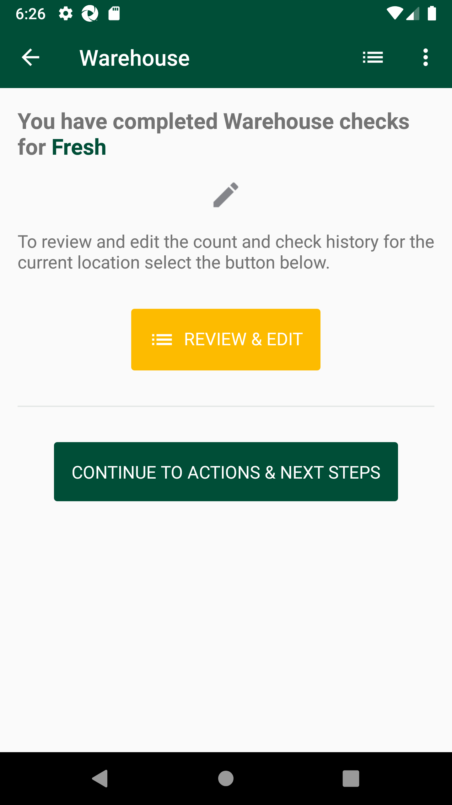
And I see "Warehouse History"Step skippedThen I Verify Prompt "No Items Available" is displayed at "Warehouse"Step skippedFailSC_05 To verify history screen with 'No Item Available' msg for, Fixture, Offshelf, Petrol and Warehouse for all deparments.When I enter Username and Password for SMA Collegue userAnd I click on login button for SMAThen I click on 'stockMngmtText' on page 'HomePagePO_New'Then I click on "Prompted Counts" optionThen I click on "Market Street" optionThen I click on "Fixture" optionThen I click on icon "Show List"com.morrisons.common.action.Hook.afterScenario(io.cucumber.java.Scenario)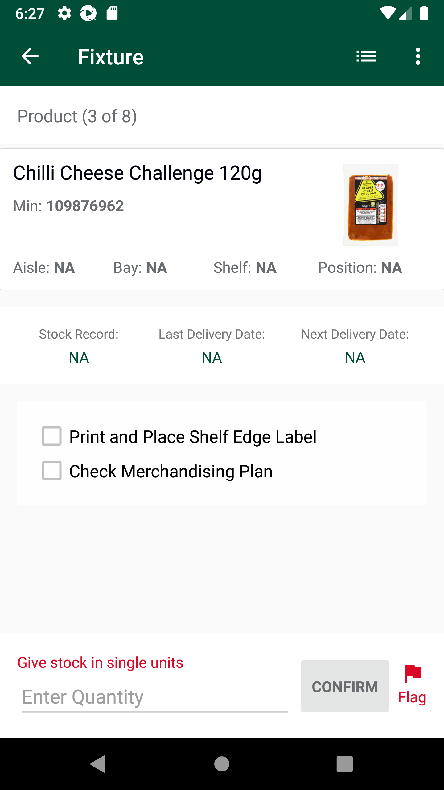
And I see "Fixture History"Step skippedThen I Verify Prompt "No Items Available" is displayed at "Fixture"Step skippedFailSC_05 To verify history screen with 'No Item Available' msg for, Fixture, Offshelf, Petrol and Warehouse for all deparments.When I enter Username and Password for SMA Collegue userAnd I click on login button for SMAThen I click on 'stockMngmtText' on page 'HomePagePO_New'Then I click on "Prompted Counts" optionThen I click on "Market Street" optionThen I click on "Off Shelf" optionThen I click on icon "Show List"com.morrisons.common.action.Hook.afterScenario(io.cucumber.java.Scenario)And I see "Off Shelf History"Step skippedThen I Verify Prompt "No Items Available" is displayed at "Off Shelf"Step skippedFailSC_05 To verify history screen with 'No Item Available' msg for, Fixture, Offshelf, Petrol and Warehouse for all deparments.When I enter Username and Password for SMA Collegue userAnd I click on login button for SMAThen I click on 'stockMngmtText' on page 'HomePagePO_New'Then I click on "Prompted Counts" optionThen I click on "Market Street" optionThen I click on "Petrol" optionThen I click on icon "Show List"com.morrisons.common.action.Hook.afterScenario(io.cucumber.java.Scenario)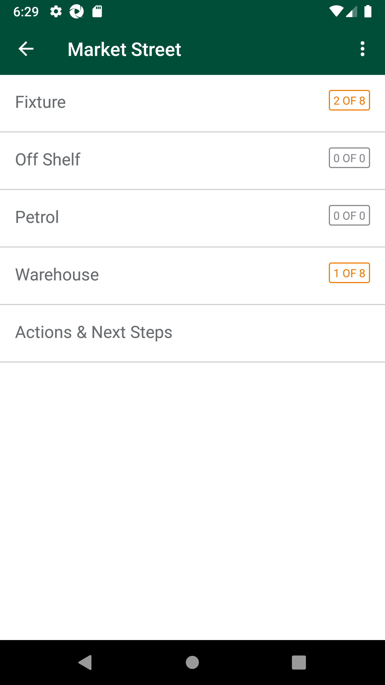
And I see "Petrol History"Step skippedThen I Verify Prompt "No Items Available" is displayed at "Petrol"Step skippedFailSC_05 To verify history screen with 'No Item Available' msg for, Fixture, Offshelf, Petrol and Warehouse for all deparments.When I enter Username and Password for SMA Collegue userAnd I click on login button for SMAThen I click on 'stockMngmtText' on page 'HomePagePO_New'Then I click on "Prompted Counts" optionThen I click on "Market Street" optionThen I click on "Warehouse" optionThen I click on icon "Show List"com.morrisons.common.action.Hook.afterScenario(io.cucumber.java.Scenario)And I see "Warehouse History"Step skippedThen I Verify Prompt "No Items Available" is displayed at "Warehouse"Step skippedFailSC_05 To verify history screen with 'No Item Available' msg for, Fixture, Offshelf, Petrol and Warehouse for all deparments.When I enter Username and Password for SMA Collegue userAnd I click on login button for SMAThen I click on 'stockMngmtText' on page 'HomePagePO_New'Then I click on "Prompted Counts" optionThen I click on "Services" optionThen I click on "Fixture" optionThen I click on icon "Show List"com.morrisons.common.action.Hook.afterScenario(io.cucumber.java.Scenario)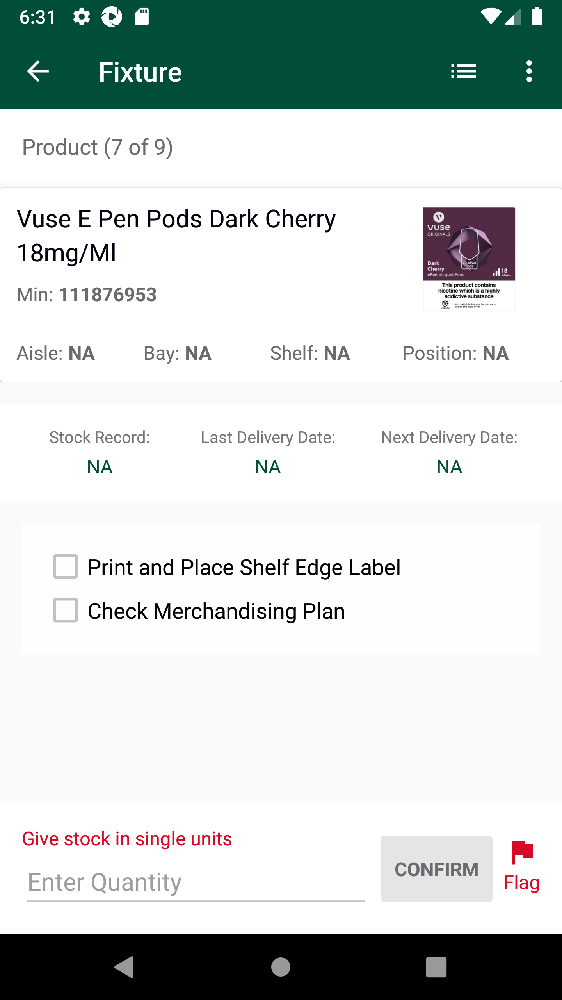
And I see "Fixture History"Step skippedThen I Verify Prompt "No Items Available" is displayed at "Fixture"Step skippedFailSC_05 To verify history screen with 'No Item Available' msg for, Fixture, Offshelf, Petrol and Warehouse for all deparments.When I enter Username and Password for SMA Collegue userAnd I click on login button for SMAThen I click on 'stockMngmtText' on page 'HomePagePO_New'Then I click on "Prompted Counts" optionThen I click on "Services" optionThen I click on "Off Shelf" optionThen I click on icon "Show List"com.morrisons.common.action.Hook.afterScenario(io.cucumber.java.Scenario)And I see "Off Shelf History"Step skippedThen I Verify Prompt "No Items Available" is displayed at "Off Shelf"Step skippedFailSC_05 To verify history screen with 'No Item Available' msg for, Fixture, Offshelf, Petrol and Warehouse for all deparments.When I enter Username and Password for SMA Collegue userAnd I click on login button for SMAThen I click on 'stockMngmtText' on page 'HomePagePO_New'Then I click on "Prompted Counts" optionThen I click on "Services" optionThen I click on "Petrol" optionThen I click on icon "Show List"com.morrisons.common.action.Hook.afterScenario(io.cucumber.java.Scenario)And I see "Petrol History"Step skippedThen I Verify Prompt "No Items Available" is displayed at "Petrol"Step skippedFailSC_05 To verify history screen with 'No Item Available' msg for, Fixture, Offshelf, Petrol and Warehouse for all deparments.When I enter Username and Password for SMA Collegue userAnd I click on login button for SMAThen I click on 'stockMngmtText' on page 'HomePagePO_New'Then I click on "Prompted Counts" optionThen I click on "Services" optionThen I click on "Warehouse" optionThen I click on icon "Show List"com.morrisons.common.action.Hook.afterScenario(io.cucumber.java.Scenario)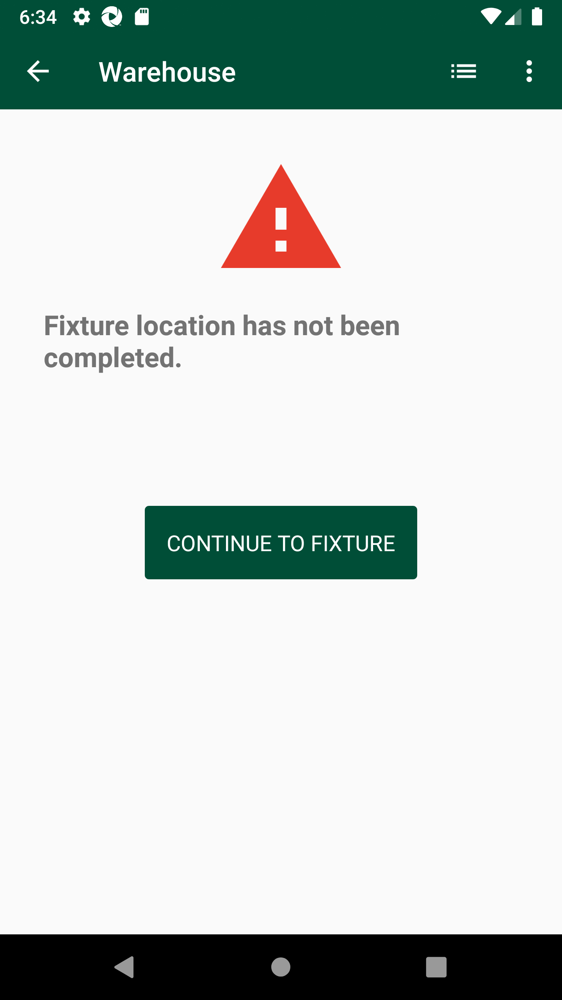
And I see "Warehouse History"Step skippedThen I Verify Prompt "No Items Available" is displayed at "Warehouse"Step skippedPassSC_06 To verify Action & Next Steps screen for all departments with its default statusPassSC_06 To verify Action & Next Steps screen for all departments with its default statusWhen I enter Username and Password for SMA Collegue userAnd I click on login button for SMAThen I click on 'stockMngmtText' on page 'HomePagePO_New'Then I click on "Prompted Counts" optionThen I click on "Ambient & Frozen" optionThen I click on "Actions & Next Steps" optionAnd I verify "Merchandising" action status with "0" on Action & Next StepsAnd I verify "Print & Place Labels" action status with "0" on Action & Next StepsThen I verify Action & Next steps screen is displayedAnd I verify Merchandising action tile is displayed on Action & Next steps pageAnd I verify Print & Place Labels action tile is displayed on Action & Next steps pageAnd I verify Print and Place Labels with count Zero when no action is capturedPassSC_06 To verify Action & Next Steps screen for all departments with its default statusWhen I enter Username and Password for SMA Collegue userAnd I click on login button for SMAThen I click on 'stockMngmtText' on page 'HomePagePO_New'Then I click on "Prompted Counts" optionThen I click on "Fresh" optionThen I click on "Actions & Next Steps" optionAnd I verify "Merchandising" action status with "0" on Action & Next StepsAnd I verify "Print & Place Labels" action status with "0" on Action & Next StepsThen I verify Action & Next steps screen is displayedAnd I verify Merchandising action tile is displayed on Action & Next steps pageAnd I verify Print & Place Labels action tile is displayed on Action & Next steps pageAnd I verify Print and Place Labels with count Zero when no action is capturedPassSC_06 To verify Action & Next Steps screen for all departments with its default statusWhen I enter Username and Password for SMA Collegue userAnd I click on login button for SMAThen I click on 'stockMngmtText' on page 'HomePagePO_New'Then I click on "Prompted Counts" optionThen I click on "Market Street" optionThen I click on "Actions & Next Steps" optionAnd I verify "Merchandising" action status with "0" on Action & Next StepsAnd I verify "Print & Place Labels" action status with "0" on Action & Next StepsThen I verify Action & Next steps screen is displayedAnd I verify Merchandising action tile is displayed on Action & Next steps pageAnd I verify Print & Place Labels action tile is displayed on Action & Next steps pageAnd I verify Print and Place Labels with count Zero when no action is capturedPassSC_06 To verify Action & Next Steps screen for all departments with its default statusWhen I enter Username and Password for SMA Collegue userAnd I click on login button for SMAThen I click on 'stockMngmtText' on page 'HomePagePO_New'Then I click on "Prompted Counts" optionThen I click on "Services" optionThen I click on "Actions & Next Steps" optionAnd I verify "Merchandising" action status with "0" on Action & Next StepsAnd I verify "Print & Place Labels" action status with "0" on Action & Next StepsThen I verify Action & Next steps screen is displayedAnd I verify Merchandising action tile is displayed on Action & Next steps pageAnd I verify Print & Place Labels action tile is displayed on Action & Next steps pageAnd I verify Print and Place Labels with count Zero when no action is capturedFailSC_07 To Verify Deadline Reminder prompt before half an hour at 09:16 AM for all Departments and their location.PassSC_07 To Verify Deadline Reminder prompt before half an hour at 09:16 AM for all Departments and their location.When I enter Username and Password for SMA Collegue userAnd I click on login button for SMAThen I click on 'stockMngmtText' on page 'HomePagePO_New'Then I click on "Prompted Counts" optionThen I click on "Ambient & Frozen" optionThen I click on "Fixture" optionAnd I verify "Deadline Reminder" alert title is displayedAnd I verify "Submissions must be completed prior to the 09:45 AM daily cutoff." alert message is displayedFailSC_07 To Verify Deadline Reminder prompt before half an hour at 09:16 AM for all Departments and their location.When I enter Username and Password for SMA Collegue userAnd I click on login button for SMAThen I click on 'stockMngmtText' on page 'HomePagePO_New'Then I click on "Prompted Counts" optionThen I click on "Ambient & Frozen" optionThen I click on "Off Shelf" optionAnd I verify "Deadline Reminder" alert title is displayedcom.morrisons.common.action.Hook.afterScenario(io.cucumber.java.Scenario)And I verify "Submissions must be completed prior to the 09:45 AM daily cutoff." alert message is displayedStep skippedFailSC_07 To Verify Deadline Reminder prompt before half an hour at 09:16 AM for all Departments and their location.When I enter Username and Password for SMA Collegue userAnd I click on login button for SMAThen I click on 'stockMngmtText' on page 'HomePagePO_New'Then I click on "Prompted Counts" optionThen I click on "Ambient & Frozen" optionThen I click on "Petrol" optionAnd I verify "Deadline Reminder" alert title is displayedcom.morrisons.common.action.Hook.afterScenario(io.cucumber.java.Scenario)And I verify "Submissions must be completed prior to the 09:45 AM daily cutoff." alert message is displayedStep skippedPassSC_07 To Verify Deadline Reminder prompt before half an hour at 09:16 AM for all Departments and their location.When I enter Username and Password for SMA Collegue userAnd I click on login button for SMAThen I click on 'stockMngmtText' on page 'HomePagePO_New'Then I click on "Prompted Counts" optionThen I click on "Ambient & Frozen" optionThen I click on "Warehouse" optionAnd I verify "Deadline Reminder" alert title is displayedAnd I verify "Submissions must be completed prior to the 09:45 AM daily cutoff." alert message is displayedPassSC_07 To Verify Deadline Reminder prompt before half an hour at 09:16 AM for all Departments and their location.When I enter Username and Password for SMA Collegue userAnd I click on login button for SMAThen I click on 'stockMngmtText' on page 'HomePagePO_New'Then I click on "Prompted Counts" optionThen I click on "Ambient & Frozen" optionThen I click on "Actions & Next Steps" optionAnd I verify "Deadline Reminder" alert title is displayedAnd I verify "Submissions must be completed prior to the 09:45 AM daily cutoff." alert message is displayedPassSC_07 To Verify Deadline Reminder prompt before half an hour at 09:16 AM for all Departments and their location.When I enter Username and Password for SMA Collegue userAnd I click on login button for SMAThen I click on 'stockMngmtText' on page 'HomePagePO_New'Then I click on "Prompted Counts" optionThen I click on "Fresh" optionThen I click on "Fixture" optionAnd I verify "Deadline Reminder" alert title is displayedAnd I verify "Submissions must be completed prior to the 09:45 AM daily cutoff." alert message is displayedFailSC_07 To Verify Deadline Reminder prompt before half an hour at 09:16 AM for all Departments and their location.When I enter Username and Password for SMA Collegue userAnd I click on login button for SMAThen I click on 'stockMngmtText' on page 'HomePagePO_New'Then I click on "Prompted Counts" optionThen I click on "Fresh" optionThen I click on "Off Shelf" optionAnd I verify "Deadline Reminder" alert title is displayedcom.morrisons.common.action.Hook.afterScenario(io.cucumber.java.Scenario)And I verify "Submissions must be completed prior to the 09:45 AM daily cutoff." alert message is displayedStep skippedFailSC_07 To Verify Deadline Reminder prompt before half an hour at 09:16 AM for all Departments and their location.When I enter Username and Password for SMA Collegue userAnd I click on login button for SMAThen I click on 'stockMngmtText' on page 'HomePagePO_New'Then I click on "Prompted Counts" optionThen I click on "Fresh" optionThen I click on "Petrol" optionAnd I verify "Deadline Reminder" alert title is displayedcom.morrisons.common.action.Hook.afterScenario(io.cucumber.java.Scenario)And I verify "Submissions must be completed prior to the 09:45 AM daily cutoff." alert message is displayedStep skippedPassSC_07 To Verify Deadline Reminder prompt before half an hour at 09:16 AM for all Departments and their location.When I enter Username and Password for SMA Collegue userAnd I click on login button for SMAThen I click on 'stockMngmtText' on page 'HomePagePO_New'Then I click on "Prompted Counts" optionThen I click on "Fresh" optionThen I click on "Warehouse" optionAnd I verify "Deadline Reminder" alert title is displayedAnd I verify "Submissions must be completed prior to the 09:45 AM daily cutoff." alert message is displayedPassSC_07 To Verify Deadline Reminder prompt before half an hour at 09:16 AM for all Departments and their location.When I enter Username and Password for SMA Collegue userAnd I click on login button for SMAThen I click on 'stockMngmtText' on page 'HomePagePO_New'Then I click on "Prompted Counts" optionThen I click on "Fresh" optionThen I click on "Actions & Next Steps" optionAnd I verify "Deadline Reminder" alert title is displayedAnd I verify "Submissions must be completed prior to the 09:45 AM daily cutoff." alert message is displayedPassSC_07 To Verify Deadline Reminder prompt before half an hour at 09:16 AM for all Departments and their location.When I enter Username and Password for SMA Collegue userAnd I click on login button for SMAThen I click on 'stockMngmtText' on page 'HomePagePO_New'Then I click on "Prompted Counts" optionThen I click on "Market Street" optionThen I click on "Fixture" optionAnd I verify "Deadline Reminder" alert title is displayedAnd I verify "Submissions must be completed prior to the 09:45 AM daily cutoff." alert message is displayedFailSC_07 To Verify Deadline Reminder prompt before half an hour at 09:16 AM for all Departments and their location.When I enter Username and Password for SMA Collegue userAnd I click on login button for SMAThen I click on 'stockMngmtText' on page 'HomePagePO_New'Then I click on "Prompted Counts" optionThen I click on "Market Street" optionThen I click on "Off Shelf" optionAnd I verify "Deadline Reminder" alert title is displayedcom.morrisons.common.action.Hook.afterScenario(io.cucumber.java.Scenario)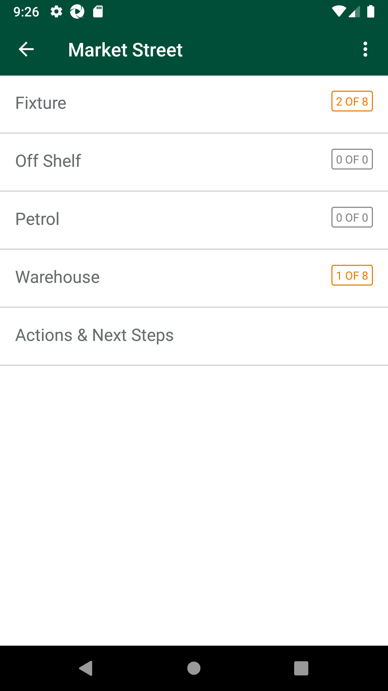
And I verify "Submissions must be completed prior to the 09:45 AM daily cutoff." alert message is displayedStep skippedFailSC_07 To Verify Deadline Reminder prompt before half an hour at 09:16 AM for all Departments and their location.When I enter Username and Password for SMA Collegue userAnd I click on login button for SMAThen I click on 'stockMngmtText' on page 'HomePagePO_New'Then I click on "Prompted Counts" optionThen I click on "Market Street" optionThen I click on "Petrol" optionAnd I verify "Deadline Reminder" alert title is displayedcom.morrisons.common.action.Hook.afterScenario(io.cucumber.java.Scenario)And I verify "Submissions must be completed prior to the 09:45 AM daily cutoff." alert message is displayedStep skippedPassSC_07 To Verify Deadline Reminder prompt before half an hour at 09:16 AM for all Departments and their location.When I enter Username and Password for SMA Collegue userAnd I click on login button for SMAThen I click on 'stockMngmtText' on page 'HomePagePO_New'Then I click on "Prompted Counts" optionThen I click on "Market Street" optionThen I click on "Warehouse" optionAnd I verify "Deadline Reminder" alert title is displayedAnd I verify "Submissions must be completed prior to the 09:45 AM daily cutoff." alert message is displayedPassSC_07 To Verify Deadline Reminder prompt before half an hour at 09:16 AM for all Departments and their location.When I enter Username and Password for SMA Collegue userAnd I click on login button for SMAThen I click on 'stockMngmtText' on page 'HomePagePO_New'Then I click on "Prompted Counts" optionThen I click on "Market Street" optionThen I click on "Actions & Next Steps" optionAnd I verify "Deadline Reminder" alert title is displayedAnd I verify "Submissions must be completed prior to the 09:45 AM daily cutoff." alert message is displayedPassSC_07 To Verify Deadline Reminder prompt before half an hour at 09:16 AM for all Departments and their location.When I enter Username and Password for SMA Collegue userAnd I click on login button for SMAThen I click on 'stockMngmtText' on page 'HomePagePO_New'Then I click on "Prompted Counts" optionThen I click on "Services" optionThen I click on "Fixture" optionAnd I verify "Deadline Reminder" alert title is displayedAnd I verify "Submissions must be completed prior to the 09:45 AM daily cutoff." alert message is displayedFailSC_07 To Verify Deadline Reminder prompt before half an hour at 09:16 AM for all Departments and their location.When I enter Username and Password for SMA Collegue userAnd I click on login button for SMAThen I click on 'stockMngmtText' on page 'HomePagePO_New'Then I click on "Prompted Counts" optionThen I click on "Services" optionThen I click on "Off Shelf" optionAnd I verify "Deadline Reminder" alert title is displayedcom.morrisons.common.action.Hook.afterScenario(io.cucumber.java.Scenario)And I verify "Submissions must be completed prior to the 09:45 AM daily cutoff." alert message is displayedStep skippedFailSC_07 To Verify Deadline Reminder prompt before half an hour at 09:16 AM for all Departments and their location.When I enter Username and Password for SMA Collegue userAnd I click on login button for SMAThen I click on 'stockMngmtText' on page 'HomePagePO_New'Then I click on "Prompted Counts" optionThen I click on "Services" optionThen I click on "Petrol" optionAnd I verify "Deadline Reminder" alert title is displayedcom.morrisons.common.action.Hook.afterScenario(io.cucumber.java.Scenario)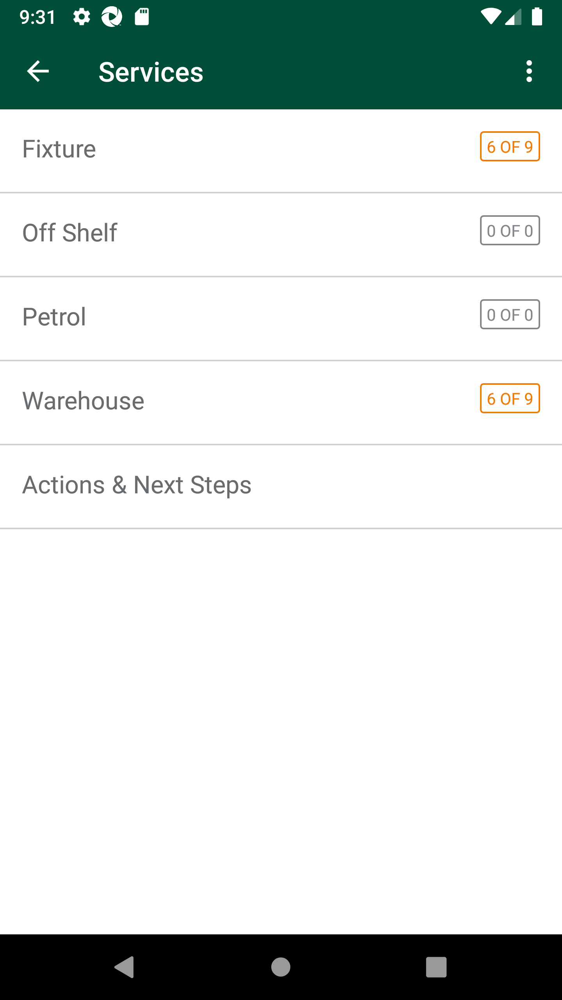
And I verify "Submissions must be completed prior to the 09:45 AM daily cutoff." alert message is displayedStep skippedPassSC_07 To Verify Deadline Reminder prompt before half an hour at 09:16 AM for all Departments and their location.When I enter Username and Password for SMA Collegue userAnd I click on login button for SMAThen I click on 'stockMngmtText' on page 'HomePagePO_New'Then I click on "Prompted Counts" optionThen I click on "Services" optionThen I click on "Warehouse" optionAnd I verify "Deadline Reminder" alert title is displayedAnd I verify "Submissions must be completed prior to the 09:45 AM daily cutoff." alert message is displayedPassSC_07 To Verify Deadline Reminder prompt before half an hour at 09:16 AM for all Departments and their location.When I enter Username and Password for SMA Collegue userAnd I click on login button for SMAThen I click on 'stockMngmtText' on page 'HomePagePO_New'Then I click on "Prompted Counts" optionThen I click on "Services" optionThen I click on "Actions & Next Steps" optionAnd I verify "Deadline Reminder" alert title is displayedAnd I verify "Submissions must be completed prior to the 09:45 AM daily cutoff." alert message is displayedFailSC_08 to verify deadline timer prompt message 'Prompted counts submissions closed' for all Departments and their location after 9:45 AMPassSC_08 to verify deadline timer prompt message 'Prompted counts submissions closed' for all Departments and their location after 9:45 AMWhen I enter Username and Password for SMA Collegue userAnd I click on login button for SMAThen I click on 'stockMngmtText' on page 'HomePagePO_New'Then I click on "Prompted Counts" optionThen I click on "Ambient & Frozen" optionThen I click on "Fixture" optionAnd I verify "Prompted counts submissions closed" message title is displayedAnd I verify "You are unable to complete prompted counts submissions for the remainder of the day. Submissions must be completed prior to the 09:45 am daily cut off." message text is displayedFailSC_08 to verify deadline timer prompt message 'Prompted counts submissions closed' for all Departments and their location after 9:45 AMWhen I enter Username and Password for SMA Collegue userAnd I click on login button for SMAThen I click on 'stockMngmtText' on page 'HomePagePO_New'Then I click on "Prompted Counts" optionThen I click on "Ambient & Frozen" optionThen I click on "Off Shelf" optionAnd I verify "Prompted counts submissions closed" message title is displayedcom.morrisons.common.action.Hook.afterScenario(io.cucumber.java.Scenario)And I verify "You are unable to complete prompted counts submissions for the remainder of the day. Submissions must be completed prior to the 09:45 am daily cut off." message text is displayedStep skippedFailSC_08 to verify deadline timer prompt message 'Prompted counts submissions closed' for all Departments and their location after 9:45 AMWhen I enter Username and Password for SMA Collegue userAnd I click on login button for SMAThen I click on 'stockMngmtText' on page 'HomePagePO_New'Then I click on "Prompted Counts" optionThen I click on "Ambient & Frozen" optionThen I click on "Petrol" optionAnd I verify "Prompted counts submissions closed" message title is displayedcom.morrisons.common.action.Hook.afterScenario(io.cucumber.java.Scenario)And I verify "You are unable to complete prompted counts submissions for the remainder of the day. Submissions must be completed prior to the 09:45 am daily cut off." message text is displayedStep skippedPassSC_08 to verify deadline timer prompt message 'Prompted counts submissions closed' for all Departments and their location after 9:45 AMWhen I enter Username and Password for SMA Collegue userAnd I click on login button for SMAThen I click on 'stockMngmtText' on page 'HomePagePO_New'Then I click on "Prompted Counts" optionThen I click on "Ambient & Frozen" optionThen I click on "Warehouse" optionAnd I verify "Prompted counts submissions closed" message title is displayedAnd I verify "You are unable to complete prompted counts submissions for the remainder of the day. Submissions must be completed prior to the 09:45 am daily cut off." message text is displayedPassSC_08 to verify deadline timer prompt message 'Prompted counts submissions closed' for all Departments and their location after 9:45 AMWhen I enter Username and Password for SMA Collegue userAnd I click on login button for SMAThen I click on 'stockMngmtText' on page 'HomePagePO_New'Then I click on "Prompted Counts" optionThen I click on "Ambient & Frozen" optionThen I click on "Actions & Next Steps" optionAnd I verify "Prompted counts submissions closed" message title is displayedAnd I verify "You are unable to complete prompted counts submissions for the remainder of the day. Submissions must be completed prior to the 09:45 am daily cut off." message text is displayedPassSC_08 to verify deadline timer prompt message 'Prompted counts submissions closed' for all Departments and their location after 9:45 AMWhen I enter Username and Password for SMA Collegue userAnd I click on login button for SMAThen I click on 'stockMngmtText' on page 'HomePagePO_New'Then I click on "Prompted Counts" optionThen I click on "Fresh" optionThen I click on "Fixture" optionAnd I verify "Prompted counts submissions closed" message title is displayedAnd I verify "You are unable to complete prompted counts submissions for the remainder of the day. Submissions must be completed prior to the 09:45 am daily cut off." message text is displayedFailSC_08 to verify deadline timer prompt message 'Prompted counts submissions closed' for all Departments and their location after 9:45 AMWhen I enter Username and Password for SMA Collegue userAnd I click on login button for SMAThen I click on 'stockMngmtText' on page 'HomePagePO_New'Then I click on "Prompted Counts" optionThen I click on "Fresh" optionThen I click on "Off Shelf" optionAnd I verify "Prompted counts submissions closed" message title is displayedcom.morrisons.common.action.Hook.afterScenario(io.cucumber.java.Scenario)And I verify "You are unable to complete prompted counts submissions for the remainder of the day. Submissions must be completed prior to the 09:45 am daily cut off." message text is displayedStep skippedFailSC_08 to verify deadline timer prompt message 'Prompted counts submissions closed' for all Departments and their location after 9:45 AMWhen I enter Username and Password for SMA Collegue userAnd I click on login button for SMAThen I click on 'stockMngmtText' on page 'HomePagePO_New'Then I click on "Prompted Counts" optionThen I click on "Fresh" optionThen I click on "Petrol" optionAnd I verify "Prompted counts submissions closed" message title is displayedcom.morrisons.common.action.Hook.afterScenario(io.cucumber.java.Scenario)And I verify "You are unable to complete prompted counts submissions for the remainder of the day. Submissions must be completed prior to the 09:45 am daily cut off." message text is displayedStep skippedPassSC_08 to verify deadline timer prompt message 'Prompted counts submissions closed' for all Departments and their location after 9:45 AMWhen I enter Username and Password for SMA Collegue userAnd I click on login button for SMAThen I click on 'stockMngmtText' on page 'HomePagePO_New'Then I click on "Prompted Counts" optionThen I click on "Fresh" optionThen I click on "Warehouse" optionAnd I verify "Prompted counts submissions closed" message title is displayedAnd I verify "You are unable to complete prompted counts submissions for the remainder of the day. Submissions must be completed prior to the 09:45 am daily cut off." message text is displayedPassSC_08 to verify deadline timer prompt message 'Prompted counts submissions closed' for all Departments and their location after 9:45 AMWhen I enter Username and Password for SMA Collegue userAnd I click on login button for SMAThen I click on 'stockMngmtText' on page 'HomePagePO_New'Then I click on "Prompted Counts" optionThen I click on "Fresh" optionThen I click on "Actions & Next Steps" optionAnd I verify "Prompted counts submissions closed" message title is displayedAnd I verify "You are unable to complete prompted counts submissions for the remainder of the day. Submissions must be completed prior to the 09:45 am daily cut off." message text is displayedPassSC_08 to verify deadline timer prompt message 'Prompted counts submissions closed' for all Departments and their location after 9:45 AMWhen I enter Username and Password for SMA Collegue userAnd I click on login button for SMAThen I click on 'stockMngmtText' on page 'HomePagePO_New'Then I click on "Prompted Counts" optionThen I click on "Market Street" optionThen I click on "Fixture" optionAnd I verify "Prompted counts submissions closed" message title is displayedAnd I verify "You are unable to complete prompted counts submissions for the remainder of the day. Submissions must be completed prior to the 09:45 am daily cut off." message text is displayedFailSC_08 to verify deadline timer prompt message 'Prompted counts submissions closed' for all Departments and their location after 9:45 AMWhen I enter Username and Password for SMA Collegue userAnd I click on login button for SMAThen I click on 'stockMngmtText' on page 'HomePagePO_New'Then I click on "Prompted Counts" optionThen I click on "Market Street" optionThen I click on "Off Shelf" optionAnd I verify "Prompted counts submissions closed" message title is displayedcom.morrisons.common.action.Hook.afterScenario(io.cucumber.java.Scenario)And I verify "You are unable to complete prompted counts submissions for the remainder of the day. Submissions must be completed prior to the 09:45 am daily cut off." message text is displayedStep skippedFailSC_08 to verify deadline timer prompt message 'Prompted counts submissions closed' for all Departments and their location after 9:45 AMWhen I enter Username and Password for SMA Collegue userAnd I click on login button for SMAThen I click on 'stockMngmtText' on page 'HomePagePO_New'Then I click on "Prompted Counts" optionThen I click on "Market Street" optionThen I click on "Petrol" optionAnd I verify "Prompted counts submissions closed" message title is displayedcom.morrisons.common.action.Hook.afterScenario(io.cucumber.java.Scenario)And I verify "You are unable to complete prompted counts submissions for the remainder of the day. Submissions must be completed prior to the 09:45 am daily cut off." message text is displayedStep skippedPassSC_08 to verify deadline timer prompt message 'Prompted counts submissions closed' for all Departments and their location after 9:45 AMWhen I enter Username and Password for SMA Collegue userAnd I click on login button for SMAThen I click on 'stockMngmtText' on page 'HomePagePO_New'Then I click on "Prompted Counts" optionThen I click on "Market Street" optionThen I click on "Warehouse" optionAnd I verify "Prompted counts submissions closed" message title is displayedAnd I verify "You are unable to complete prompted counts submissions for the remainder of the day. Submissions must be completed prior to the 09:45 am daily cut off." message text is displayedPassSC_08 to verify deadline timer prompt message 'Prompted counts submissions closed' for all Departments and their location after 9:45 AMWhen I enter Username and Password for SMA Collegue userAnd I click on login button for SMAThen I click on 'stockMngmtText' on page 'HomePagePO_New'Then I click on "Prompted Counts" optionThen I click on "Market Street" optionThen I click on "Actions & Next Steps" optionAnd I verify "Prompted counts submissions closed" message title is displayedAnd I verify "You are unable to complete prompted counts submissions for the remainder of the day. Submissions must be completed prior to the 09:45 am daily cut off." message text is displayedPassSC_08 to verify deadline timer prompt message 'Prompted counts submissions closed' for all Departments and their location after 9:45 AMWhen I enter Username and Password for SMA Collegue userAnd I click on login button for SMAThen I click on 'stockMngmtText' on page 'HomePagePO_New'Then I click on "Prompted Counts" optionThen I click on "Services" optionThen I click on "Fixture" optionAnd I verify "Prompted counts submissions closed" message title is displayedAnd I verify "You are unable to complete prompted counts submissions for the remainder of the day. Submissions must be completed prior to the 09:45 am daily cut off." message text is displayedFailSC_08 to verify deadline timer prompt message 'Prompted counts submissions closed' for all Departments and their location after 9:45 AMWhen I enter Username and Password for SMA Collegue userAnd I click on login button for SMAThen I click on 'stockMngmtText' on page 'HomePagePO_New'Then I click on "Prompted Counts" optionThen I click on "Services" optionThen I click on "Off Shelf" optionAnd I verify "Prompted counts submissions closed" message title is displayedcom.morrisons.common.action.Hook.afterScenario(io.cucumber.java.Scenario)And I verify "You are unable to complete prompted counts submissions for the remainder of the day. Submissions must be completed prior to the 09:45 am daily cut off." message text is displayedStep skippedFailSC_08 to verify deadline timer prompt message 'Prompted counts submissions closed' for all Departments and their location after 9:45 AMWhen I enter Username and Password for SMA Collegue userAnd I click on login button for SMAThen I click on 'stockMngmtText' on page 'HomePagePO_New'Then I click on "Prompted Counts" optionThen I click on "Services" optionThen I click on "Petrol" optionAnd I verify "Prompted counts submissions closed" message title is displayedcom.morrisons.common.action.Hook.afterScenario(io.cucumber.java.Scenario)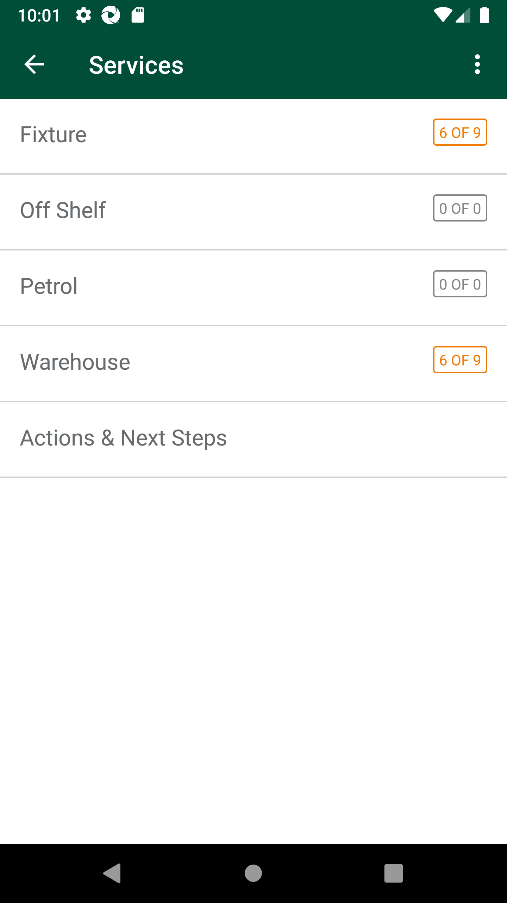
And I verify "You are unable to complete prompted counts submissions for the remainder of the day. Submissions must be completed prior to the 09:45 am daily cut off." message text is displayedStep skippedPassSC_08 to verify deadline timer prompt message 'Prompted counts submissions closed' for all Departments and their location after 9:45 AMWhen I enter Username and Password for SMA Collegue userAnd I click on login button for SMAThen I click on 'stockMngmtText' on page 'HomePagePO_New'Then I click on "Prompted Counts" optionThen I click on "Services" optionThen I click on "Warehouse" optionAnd I verify "Prompted counts submissions closed" message title is displayedAnd I verify "You are unable to complete prompted counts submissions for the remainder of the day. Submissions must be completed prior to the 09:45 am daily cut off." message text is displayedPassSC_08 to verify deadline timer prompt message 'Prompted counts submissions closed' for all Departments and their location after 9:45 AMWhen I enter Username and Password for SMA Collegue userAnd I click on login button for SMAThen I click on 'stockMngmtText' on page 'HomePagePO_New'Then I click on "Prompted Counts" optionThen I click on "Services" optionThen I click on "Actions & Next Steps" optionAnd I verify "Prompted counts submissions closed" message title is displayedAnd I verify "You are unable to complete prompted counts submissions for the remainder of the day. Submissions must be completed prior to the 09:45 am daily cut off." message text is displayedFailSC_09 To verify prompted count with single item without action, Department 'In Progress' status, location count update, Edit prompted count functionality, and history screen, for Fixture.FailSC_09 To verify prompted count with single item without action, Department 'In Progress' status, location count update, Edit prompted count functionality, and history screen, for Fixture.When I enter Username and Password for SMA Collegue userAnd I click on login button for SMAThen I click on 'stockMngmtText' on page 'HomePagePO_New'Then I click on "Prompted Counts" optionThen I click on "Ambient & Frozen" optionThen I click on "Fixture" optionThen I verify one prompted item is displayedcom.morrisons.common.action.Hook.afterScenario(io.cucumber.java.Scenario)And I enter qty "11" and click on Confirm buttonStep skippedAnd I click on Back Button in Prompted Counts screenStep skippedAnd I verify option "Fixture" with "1" statusStep skippedAnd I click on Back Button in Prompted Counts screenStep skippedThen I verify "Ambient & Frozen" with "IN PROGRESS" statusStep skippedThen I click on "Ambient & Frozen" optionStep skippedThen I click on "Fixture" optionStep skippedAnd I click on History iconStep skippedThen I verify History screen is displayed with list of completed products with total countStep skippedAnd I Select product on "11" History screenStep skippedThen I click on Edit buttonStep skippedAnd I edit stock count with "110"Step skippedThen I verify the edited quantity "110" on history screenStep skippedFailSC_09 To verify prompted count with single item without action, Department 'In Progress' status, location count update, Edit prompted count functionality, and history screen, for Fixture.When I enter Username and Password for SMA Collegue userAnd I click on login button for SMAThen I click on 'stockMngmtText' on page 'HomePagePO_New'Then I click on "Prompted Counts" optionThen I click on "Fresh" optionThen I click on "Fixture" optionThen I verify one prompted item is displayedcom.morrisons.common.action.Hook.afterScenario(io.cucumber.java.Scenario)And I enter qty "11" and click on Confirm buttonStep skippedAnd I click on Back Button in Prompted Counts screenStep skippedAnd I verify option "Fixture" with "1" statusStep skippedAnd I click on Back Button in Prompted Counts screenStep skippedThen I verify "Fresh" with "IN PROGRESS" statusStep skippedThen I click on "Fresh" optionStep skippedThen I click on "Fixture" optionStep skippedAnd I click on History iconStep skippedThen I verify History screen is displayed with list of completed products with total countStep skippedAnd I Select product on "11" History screenStep skippedThen I click on Edit buttonStep skippedAnd I edit stock count with "110"Step skippedThen I verify the edited quantity "110" on history screenStep skippedFailSC_09 To verify prompted count with single item without action, Department 'In Progress' status, location count update, Edit prompted count functionality, and history screen, for Fixture.When I enter Username and Password for SMA Collegue userAnd I click on login button for SMAThen I click on 'stockMngmtText' on page 'HomePagePO_New'Then I click on "Prompted Counts" optionThen I click on "Market Street" optionThen I click on "Fixture" optionThen I verify one prompted item is displayedcom.morrisons.common.action.Hook.afterScenario(io.cucumber.java.Scenario)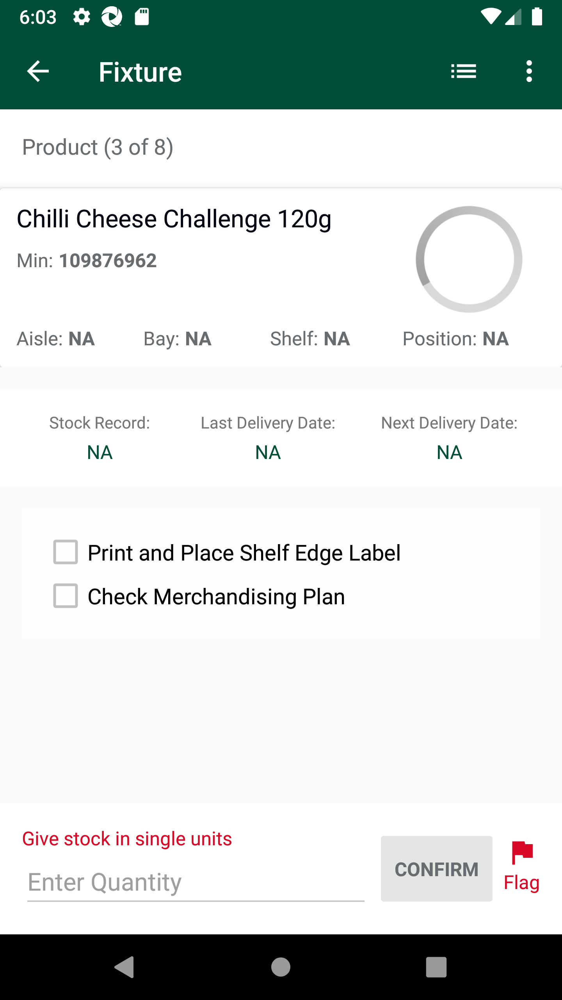
And I enter qty "11" and click on Confirm buttonStep skippedAnd I click on Back Button in Prompted Counts screenStep skippedAnd I verify option "Fixture" with "1" statusStep skippedAnd I click on Back Button in Prompted Counts screenStep skippedThen I verify "Market Street" with "IN PROGRESS" statusStep skippedThen I click on "Market Street" optionStep skippedThen I click on "Fixture" optionStep skippedAnd I click on History iconStep skippedThen I verify History screen is displayed with list of completed products with total countStep skippedAnd I Select product on "11" History screenStep skippedThen I click on Edit buttonStep skippedAnd I edit stock count with "110"Step skippedThen I verify the edited quantity "110" on history screenStep skippedFailSC_09 To verify prompted count with single item without action, Department 'In Progress' status, location count update, Edit prompted count functionality, and history screen, for Fixture.When I enter Username and Password for SMA Collegue userAnd I click on login button for SMAThen I click on 'stockMngmtText' on page 'HomePagePO_New'Then I click on "Prompted Counts" optionThen I click on "Services" optionThen I click on "Fixture" optionThen I verify one prompted item is displayedcom.morrisons.common.action.Hook.afterScenario(io.cucumber.java.Scenario)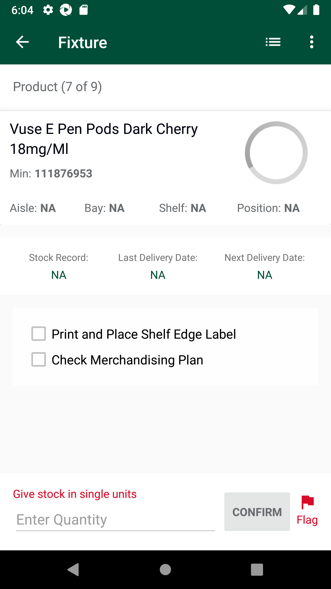
And I enter qty "11" and click on Confirm buttonStep skippedAnd I click on Back Button in Prompted Counts screenStep skippedAnd I verify option "Fixture" with "1" statusStep skippedAnd I click on Back Button in Prompted Counts screenStep skippedThen I verify "Services" with "IN PROGRESS" statusStep skippedThen I click on "Services" optionStep skippedThen I click on "Fixture" optionStep skippedAnd I click on History iconStep skippedThen I verify History screen is displayed with list of completed products with total countStep skippedAnd I Select product on "11" History screenStep skippedThen I click on Edit buttonStep skippedAnd I edit stock count with "110"Step skippedThen I verify the edited quantity "110" on history screenStep skippedFailSC_10 To verify prompted count with single item and one action, Edit count and action disable functionality on Edit screen, Merchandising status on Action & Next Steps and history screen verfication for Fixture.FailSC_10 To verify prompted count with single item and one action, Edit count and action disable functionality on Edit screen, Merchandising status on Action & Next Steps and history screen verfication for Fixture.When I enter Username and Password for SMA Collegue userAnd I click on login button for SMAThen I click on 'stockMngmtText' on page 'HomePagePO_New'Then I click on "Prompted Counts" optionThen I click on "Ambient & Frozen" optionThen I click on "Fixture" optionThen I click on "Check Merchandising Plan" Action labelcom.morrisons.common.action.Hook.afterScenario(io.cucumber.java.Scenario)And I enter qty "12" and click on Confirm buttonStep skippedThen I click on History iconStep skippedThen I verify History screen is displayed with list of completed products with total countStep skippedAnd I Select product on "12" History screenStep skippedThen I click on Edit buttonStep skippedAnd I verify the action "Check Merchandising Plan" status as "Disable" on edit screenStep skippedAnd I edit stock count with "120"Step skippedThen I verify the edited quantity "120" on history screenStep skippedAnd I click on Back Button in Prompted Counts screenStep skippedAnd I click on Back Button in Prompted Counts screenStep skippedThen I click on "Actions & Next Steps" optionStep skippedAnd I verify "Merchandising" action status with "1" on Action & Next StepsStep skippedFailSC_10 To verify prompted count with single item and one action, Edit count and action disable functionality on Edit screen, Merchandising status on Action & Next Steps and history screen verfication for Fixture.When I enter Username and Password for SMA Collegue userAnd I click on login button for SMAThen I click on 'stockMngmtText' on page 'HomePagePO_New'Then I click on "Prompted Counts" optionThen I click on "Fresh" optionThen I click on "Fixture" optionThen I click on "Check Merchandising Plan" Action labelcom.morrisons.common.action.Hook.afterScenario(io.cucumber.java.Scenario)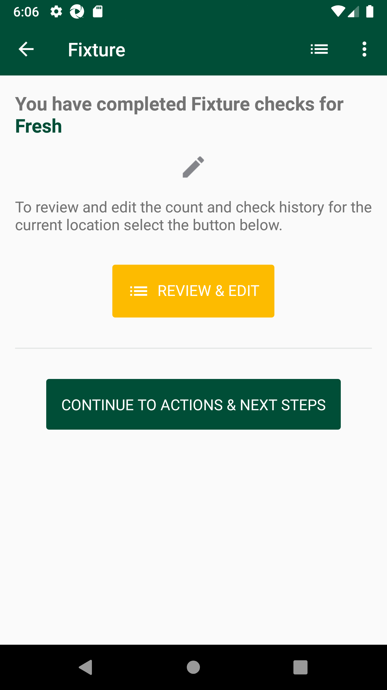
And I enter qty "12" and click on Confirm buttonStep skippedThen I click on History iconStep skippedThen I verify History screen is displayed with list of completed products with total countStep skippedAnd I Select product on "12" History screenStep skippedThen I click on Edit buttonStep skippedAnd I verify the action "Check Merchandising Plan" status as "Disable" on edit screenStep skippedAnd I edit stock count with "120"Step skippedThen I verify the edited quantity "120" on history screenStep skippedAnd I click on Back Button in Prompted Counts screenStep skippedAnd I click on Back Button in Prompted Counts screenStep skippedThen I click on "Actions & Next Steps" optionStep skippedAnd I verify "Merchandising" action status with "1" on Action & Next StepsStep skippedFailSC_10 To verify prompted count with single item and one action, Edit count and action disable functionality on Edit screen, Merchandising status on Action & Next Steps and history screen verfication for Fixture.When I enter Username and Password for SMA Collegue userAnd I click on login button for SMAThen I click on 'stockMngmtText' on page 'HomePagePO_New'Then I click on "Prompted Counts" optionThen I click on "Market Street" optionThen I click on "Fixture" optionThen I click on "Check Merchandising Plan" Action labelAnd I enter qty "12" and click on Confirm buttonThen I click on History iconcom.morrisons.common.action.Hook.afterScenario(io.cucumber.java.Scenario)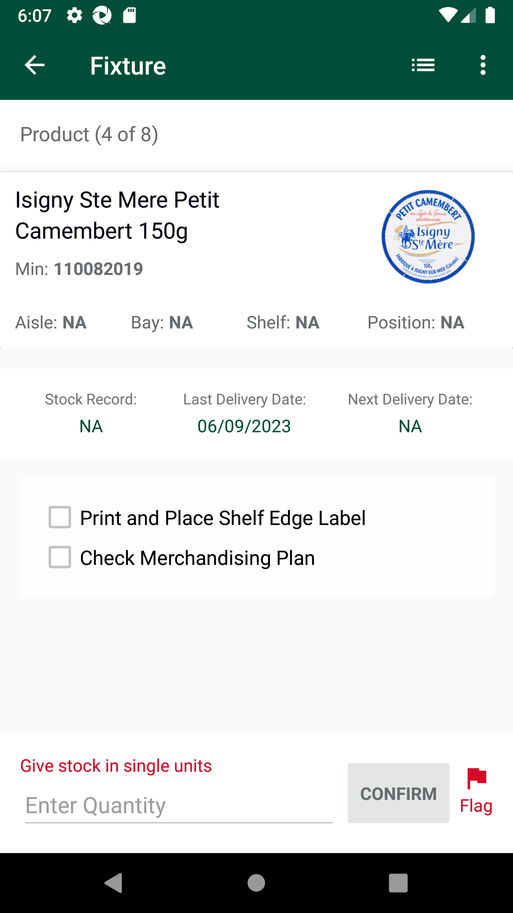
Then I verify History screen is displayed with list of completed products with total countStep skippedAnd I Select product on "12" History screenStep skippedThen I click on Edit buttonStep skippedAnd I verify the action "Check Merchandising Plan" status as "Disable" on edit screenStep skippedAnd I edit stock count with "120"Step skippedThen I verify the edited quantity "120" on history screenStep skippedAnd I click on Back Button in Prompted Counts screenStep skippedAnd I click on Back Button in Prompted Counts screenStep skippedThen I click on "Actions & Next Steps" optionStep skippedAnd I verify "Merchandising" action status with "1" on Action & Next StepsStep skippedFailSC_10 To verify prompted count with single item and one action, Edit count and action disable functionality on Edit screen, Merchandising status on Action & Next Steps and history screen verfication for Fixture.When I enter Username and Password for SMA Collegue userAnd I click on login button for SMAThen I click on 'stockMngmtText' on page 'HomePagePO_New'Then I click on "Prompted Counts" optionThen I click on "Services" optionThen I click on "Fixture" optionThen I click on "Check Merchandising Plan" Action labelAnd I enter qty "12" and click on Confirm buttonThen I click on History iconcom.morrisons.common.action.Hook.afterScenario(io.cucumber.java.Scenario)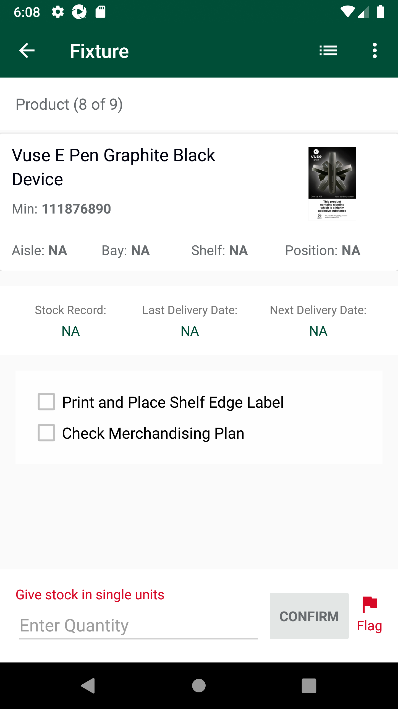
Then I verify History screen is displayed with list of completed products with total countStep skippedAnd I Select product on "12" History screenStep skippedThen I click on Edit buttonStep skippedAnd I verify the action "Check Merchandising Plan" status as "Disable" on edit screenStep skippedAnd I edit stock count with "120"Step skippedThen I verify the edited quantity "120" on history screenStep skippedAnd I click on Back Button in Prompted Counts screenStep skippedAnd I click on Back Button in Prompted Counts screenStep skippedThen I click on "Actions & Next Steps" optionStep skippedAnd I verify "Merchandising" action status with "1" on Action & Next StepsStep skippedFailSC_11 To verify prompted count with single item and 'Print and Place label' and 'Marchandising' actions, Print labels verification, Actions & Next step screen verification for Fixture.FailSC_11 To verify prompted count with single item and 'Print and Place label' and 'Marchandising' actions, Print labels verification, Actions & Next step screen verification for Fixture.When I enter Username and Password for SMA Collegue userAnd I click on login button for SMAThen I click on 'stockMngmtText' on page 'HomePagePO_New'Then I click on "Prompted Counts" optionThen I click on "Ambient & Frozen" optionThen I click on "Fixture" optionAnd I verify item details on the prompted screencom.morrisons.common.action.Hook.afterScenario(io.cucumber.java.Scenario)And I verify "Print and Place Shelf Edge Label" Action label is displayedStep skippedAnd I verify "Check Merchandising Plan" Action label is displayedStep skippedThen I click on "Print and Place Shelf Edge Label" Action labelStep skippedThen I click on "Check Merchandising Plan" Action labelStep skippedAnd I enter qty "13" and click on Confirm buttonStep skippedAnd I verify Request Label screen UIStep skippedAnd I verify "Default", "A4P White POS" and "Medium White POS" labels are displayedStep skippedThen I select Label sizeStep skippedAnd I click on Continue Button on Request label pageStep skippedThen I click on History iconStep skippedAnd I Select product on "13" History screenStep skippedThen I click on Edit buttonStep skippedAnd I verify the action "Print and Place Shelf Edge Label" status as "Disable" on edit screenStep skippedAnd I verify the action "Check Merchandising Plan" status as "Disable" on edit screenStep skippedAnd I edit stock count with "130"Step skippedThen I verify the edited quantity "130" on history screenStep skippedAnd I click on Back Button in Prompted Counts screenStep skippedAnd I click on Back Button in Prompted Counts screenStep skippedThen I click on "Actions & Next Steps" optionStep skippedAnd I verify "Merchandising" action status with "2" on Action & Next StepsStep skippedAnd I verify "Print & Place Labels" action status with "1" on Action & Next StepsStep skippedAnd I click on Merchandising on Action & Next steps pageStep skippedThen I verify details on Merchandising screenStep skippedAnd I click on Back Button in Prompted Counts screenStep skippedThen I click on Print & Place Labels on Action & Next steps pageStep skippedAnd I verify Print & Place Labels screen is displayedStep skippedThen I verify details on Print & Place Labels screenStep skippedThen I click on Place labels buttonStep skippedThen I verify Place labels screen with Product details are displayedStep skippedFailSC_11 To verify prompted count with single item and 'Print and Place label' and 'Marchandising' actions, Print labels verification, Actions & Next step screen verification for Fixture.When I enter Username and Password for SMA Collegue userAnd I click on login button for SMAThen I click on 'stockMngmtText' on page 'HomePagePO_New'Then I click on "Prompted Counts" optionThen I click on "Fresh" optionThen I click on "Fixture" optionAnd I verify item details on the prompted screencom.morrisons.common.action.Hook.afterScenario(io.cucumber.java.Scenario)And I verify "Print and Place Shelf Edge Label" Action label is displayedStep skippedAnd I verify "Check Merchandising Plan" Action label is displayedStep skippedThen I click on "Print and Place Shelf Edge Label" Action labelStep skippedThen I click on "Check Merchandising Plan" Action labelStep skippedAnd I enter qty "13" and click on Confirm buttonStep skippedAnd I verify Request Label screen UIStep skippedAnd I verify "Medium White Label Bakery", "Medium White No Price Label" and "A4P Bakery POS" labels are displayedStep skippedThen I select Label sizeStep skippedAnd I click on Continue Button on Request label pageStep skippedThen I click on History iconStep skippedAnd I Select product on "13" History screenStep skippedThen I click on Edit buttonStep skippedAnd I verify the action "Print and Place Shelf Edge Label" status as "Disable" on edit screenStep skippedAnd I verify the action "Check Merchandising Plan" status as "Disable" on edit screenStep skippedAnd I edit stock count with "130"Step skippedThen I verify the edited quantity "130" on history screenStep skippedAnd I click on Back Button in Prompted Counts screenStep skippedAnd I click on Back Button in Prompted Counts screenStep skippedThen I click on "Actions & Next Steps" optionStep skippedAnd I verify "Merchandising" action status with "2" on Action & Next StepsStep skippedAnd I verify "Print & Place Labels" action status with "1" on Action & Next StepsStep skippedAnd I click on Merchandising on Action & Next steps pageStep skippedThen I verify details on Merchandising screenStep skippedAnd I click on Back Button in Prompted Counts screenStep skippedThen I click on Print & Place Labels on Action & Next steps pageStep skippedAnd I verify Print & Place Labels screen is displayedStep skippedThen I verify details on Print & Place Labels screenStep skippedThen I click on Place labels buttonStep skippedThen I verify Place labels screen with Product details are displayedStep skippedFailSC_11 To verify prompted count with single item and 'Print and Place label' and 'Marchandising' actions, Print labels verification, Actions & Next step screen verification for Fixture.When I enter Username and Password for SMA Collegue usercom.morrisons.common.action.Hook.afterScenario(io.cucumber.java.Scenario)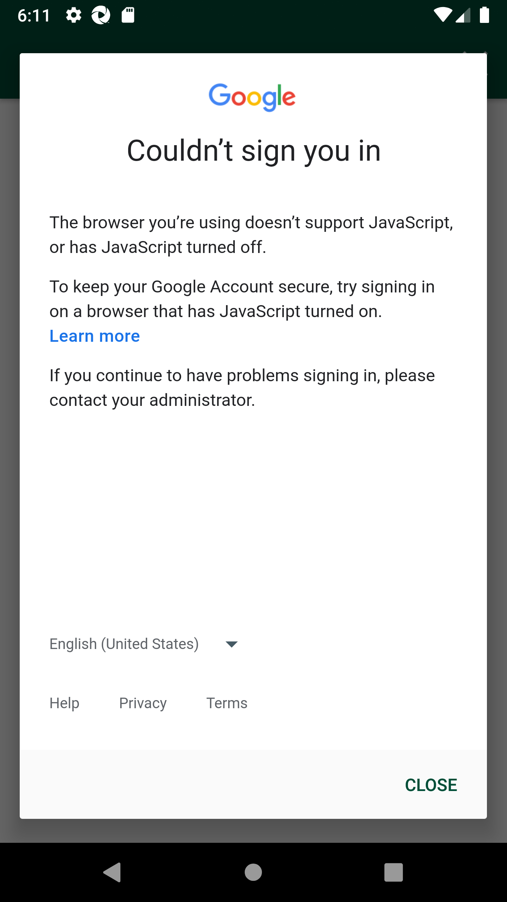
And I click on login button for SMAStep skippedThen I click on 'stockMngmtText' on page 'HomePagePO_New'Step skippedThen I click on "Prompted Counts" optionStep skippedThen I click on "Market Street" optionStep skippedThen I click on "Fixture" optionStep skippedAnd I verify item details on the prompted screenStep skippedAnd I verify "Print and Place Shelf Edge Label" Action label is displayedStep skippedAnd I verify "Check Merchandising Plan" Action label is displayedStep skippedThen I click on "Print and Place Shelf Edge Label" Action labelStep skippedThen I click on "Check Merchandising Plan" Action labelStep skippedAnd I enter qty "13" and click on Confirm buttonStep skippedAnd I verify Request Label screen UIStep skippedAnd I verify "Medium Counter Deli Cheese POS", "Medium White No Price Label" and "A4P Counter POS" labels are displayedStep skippedThen I select Label sizeStep skippedAnd I click on Continue Button on Request label pageStep skippedThen I click on History iconStep skippedAnd I Select product on "13" History screenStep skippedThen I click on Edit buttonStep skippedAnd I verify the action "Print and Place Shelf Edge Label" status as "Disable" on edit screenStep skippedAnd I verify the action "Check Merchandising Plan" status as "Disable" on edit screenStep skippedAnd I edit stock count with "130"Step skippedThen I verify the edited quantity "130" on history screenStep skippedAnd I click on Back Button in Prompted Counts screenStep skippedAnd I click on Back Button in Prompted Counts screenStep skippedThen I click on "Actions & Next Steps" optionStep skippedAnd I verify "Merchandising" action status with "2" on Action & Next StepsStep skippedAnd I verify "Print & Place Labels" action status with "1" on Action & Next StepsStep skippedAnd I click on Merchandising on Action & Next steps pageStep skippedThen I verify details on Merchandising screenStep skippedAnd I click on Back Button in Prompted Counts screenStep skippedThen I click on Print & Place Labels on Action & Next steps pageStep skippedAnd I verify Print & Place Labels screen is displayedStep skippedThen I verify details on Print & Place Labels screenStep skippedThen I click on Place labels buttonStep skippedThen I verify Place labels screen with Product details are displayedStep skippedFailSC_11 To verify prompted count with single item and 'Print and Place label' and 'Marchandising' actions, Print labels verification, Actions & Next step screen verification for Fixture.When I enter Username and Password for SMA Collegue userAnd I click on login button for SMAThen I click on 'stockMngmtText' on page 'HomePagePO_New'Then I click on "Prompted Counts" optionThen I click on "Services" optionThen I click on "Fixture" optionAnd I verify item details on the prompted screenAnd I verify "Print and Place Shelf Edge Label" Action label is displayedAnd I verify "Check Merchandising Plan" Action label is displayedThen I click on "Print and Place Shelf Edge Label" Action labelThen I click on "Check Merchandising Plan" Action labelAnd I enter qty "13" and click on Confirm buttonAnd I verify Request Label screen UIAnd I verify "Small Cigarettes Label", "Medium White No Price Label" and "Medium White Label" labels are displayedThen I select Label sizeAnd I click on Continue Button on Request label pageThen I click on History iconcom.morrisons.common.action.Hook.afterScenario(io.cucumber.java.Scenario)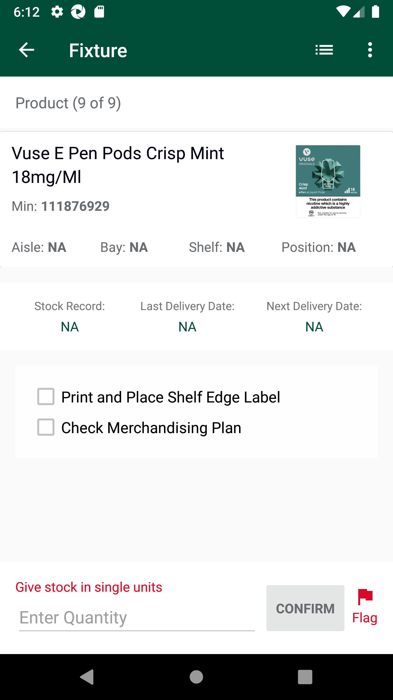
And I Select product on "13" History screenStep skippedThen I click on Edit buttonStep skippedAnd I verify the action "Print and Place Shelf Edge Label" status as "Disable" on edit screenStep skippedAnd I verify the action "Check Merchandising Plan" status as "Disable" on edit screenStep skippedAnd I edit stock count with "130"Step skippedThen I verify the edited quantity "130" on history screenStep skippedAnd I click on Back Button in Prompted Counts screenStep skippedAnd I click on Back Button in Prompted Counts screenStep skippedThen I click on "Actions & Next Steps" optionStep skippedAnd I verify "Merchandising" action status with "2" on Action & Next StepsStep skippedAnd I verify "Print & Place Labels" action status with "1" on Action & Next StepsStep skippedAnd I click on Merchandising on Action & Next steps pageStep skippedThen I verify details on Merchandising screenStep skippedAnd I click on Back Button in Prompted Counts screenStep skippedThen I click on Print & Place Labels on Action & Next steps pageStep skippedAnd I verify Print & Place Labels screen is displayedStep skippedThen I verify details on Print & Place Labels screenStep skippedThen I click on Place labels buttonStep skippedThen I verify Place labels screen with Product details are displayedStep skippedFailSC_12 To verify flag with single item without action, Re-flag, Un-flag functionality, flagged item verification on other locations, edit flagged items in other location for FixtureFailSC_12 To verify flag with single item without action, Re-flag, Un-flag functionality, flagged item verification on other locations, edit flagged items in other location for FixtureWhen I enter Username and Password for SMA Collegue userAnd I click on login button for SMAThen I click on 'stockMngmtText' on page 'HomePagePO_New'Then I click on "Prompted Counts" optionThen I click on "Ambient & Frozen" optionThen I click on "Fixture" optionAnd I mark single product as flagAnd I verify flagged item from "Fixture" to "Off Shelf" locationcom.morrisons.common.action.Hook.afterScenario(io.cucumber.java.Scenario)And I verify flagged item from "Fixture" to "Petrol" locationStep skippedAnd I verify flagged item from "Fixture" to "Warehouse" locationStep skippedThen I click on Back Button in Prompted Counts screenStep skippedThen I click on "Fixture" optionStep skippedThen I click on History iconStep skippedAnd I re-flag the item with one actionStep skippedAnd I verify the added "One" aciton on history screen while flagStep skippedThen I click on Back Button in Prompted Counts screenStep skippedThen I unflag the item with qty "200" without any actionStep skippedAnd I verify the edited quantity "200" on history screenStep skippedAnd I click on Back Button in Prompted Counts screenStep skippedAnd I verify un-flagged item status with count in "Off Shelf" locationStep skippedAnd I verify un-flagged item status with count in "Petrol" locationStep skippedAnd I verify un-flagged item status with count in "Warehouse" locationStep skippedFailSC_12 To verify flag with single item without action, Re-flag, Un-flag functionality, flagged item verification on other locations, edit flagged items in other location for FixtureWhen I enter Username and Password for SMA Collegue userAnd I click on login button for SMAThen I click on 'stockMngmtText' on page 'HomePagePO_New'Then I click on "Prompted Counts" optionThen I click on "Fresh" optionThen I click on "Fixture" optionAnd I mark single product as flagAnd I verify flagged item from "Fixture" to "Off Shelf" locationcom.morrisons.common.action.Hook.afterScenario(io.cucumber.java.Scenario)And I verify flagged item from "Fixture" to "Petrol" locationStep skippedAnd I verify flagged item from "Fixture" to "Warehouse" locationStep skippedThen I click on Back Button in Prompted Counts screenStep skippedThen I click on "Fixture" optionStep skippedThen I click on History iconStep skippedAnd I re-flag the item with one actionStep skippedAnd I verify the added "One" aciton on history screen while flagStep skippedThen I click on Back Button in Prompted Counts screenStep skippedThen I unflag the item with qty "200" without any actionStep skippedAnd I verify the edited quantity "200" on history screenStep skippedAnd I click on Back Button in Prompted Counts screenStep skippedAnd I verify un-flagged item status with count in "Off Shelf" locationStep skippedAnd I verify un-flagged item status with count in "Petrol" locationStep skippedAnd I verify un-flagged item status with count in "Warehouse" locationStep skippedFailSC_12 To verify flag with single item without action, Re-flag, Un-flag functionality, flagged item verification on other locations, edit flagged items in other location for FixtureWhen I enter Username and Password for SMA Collegue userAnd I click on login button for SMAThen I click on 'stockMngmtText' on page 'HomePagePO_New'Then I click on "Prompted Counts" optionThen I click on "Market Street" optionThen I click on "Fixture" optionAnd I mark single product as flagAnd I verify flagged item from "Fixture" to "Off Shelf" locationcom.morrisons.common.action.Hook.afterScenario(io.cucumber.java.Scenario)And I verify flagged item from "Fixture" to "Petrol" locationStep skippedAnd I verify flagged item from "Fixture" to "Warehouse" locationStep skippedThen I click on Back Button in Prompted Counts screenStep skippedThen I click on "Fixture" optionStep skippedThen I click on History iconStep skippedAnd I re-flag the item with one actionStep skippedAnd I verify the added "One" aciton on history screen while flagStep skippedThen I click on Back Button in Prompted Counts screenStep skippedThen I unflag the item with qty "200" without any actionStep skippedAnd I verify the edited quantity "200" on history screenStep skippedAnd I click on Back Button in Prompted Counts screenStep skippedAnd I verify un-flagged item status with count in "Off Shelf" locationStep skippedAnd I verify un-flagged item status with count in "Petrol" locationStep skippedAnd I verify un-flagged item status with count in "Warehouse" locationStep skippedFailSC_12 To verify flag with single item without action, Re-flag, Un-flag functionality, flagged item verification on other locations, edit flagged items in other location for FixtureWhen I enter Username and Password for SMA Collegue userAnd I click on login button for SMAThen I click on 'stockMngmtText' on page 'HomePagePO_New'Then I click on "Prompted Counts" optionThen I click on "Services" optionThen I click on "Fixture" optionAnd I mark single product as flagAnd I verify flagged item from "Fixture" to "Off Shelf" locationcom.morrisons.common.action.Hook.afterScenario(io.cucumber.java.Scenario)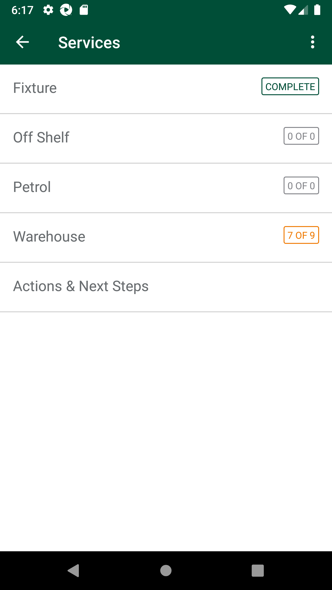
And I verify flagged item from "Fixture" to "Petrol" locationStep skippedAnd I verify flagged item from "Fixture" to "Warehouse" locationStep skippedThen I click on Back Button in Prompted Counts screenStep skippedThen I click on "Fixture" optionStep skippedThen I click on History iconStep skippedAnd I re-flag the item with one actionStep skippedAnd I verify the added "One" aciton on history screen while flagStep skippedThen I click on Back Button in Prompted Counts screenStep skippedThen I unflag the item with qty "200" without any actionStep skippedAnd I verify the edited quantity "200" on history screenStep skippedAnd I click on Back Button in Prompted Counts screenStep skippedAnd I verify un-flagged item status with count in "Off Shelf" locationStep skippedAnd I verify un-flagged item status with count in "Petrol" locationStep skippedAnd I verify un-flagged item status with count in "Warehouse" locationStep skippedFailSC_13 To verify flag with single item and one action, Un-flag functionality, flagged item verification on other locations, edit flagged items in other location for FixtureFailSC_13 To verify flag with single item and one action, Un-flag functionality, flagged item verification on other locations, edit flagged items in other location for FixtureWhen I enter Username and Password for SMA Collegue userAnd I click on login button for SMAThen I click on 'stockMngmtText' on page 'HomePagePO_New'Then I click on "Prompted Counts" optionThen I click on "Ambient & Frozen" optionThen I click on "Fixture" optionAnd I enter "14"com.morrisons.common.action.Hook.afterScenario(io.cucumber.java.Scenario)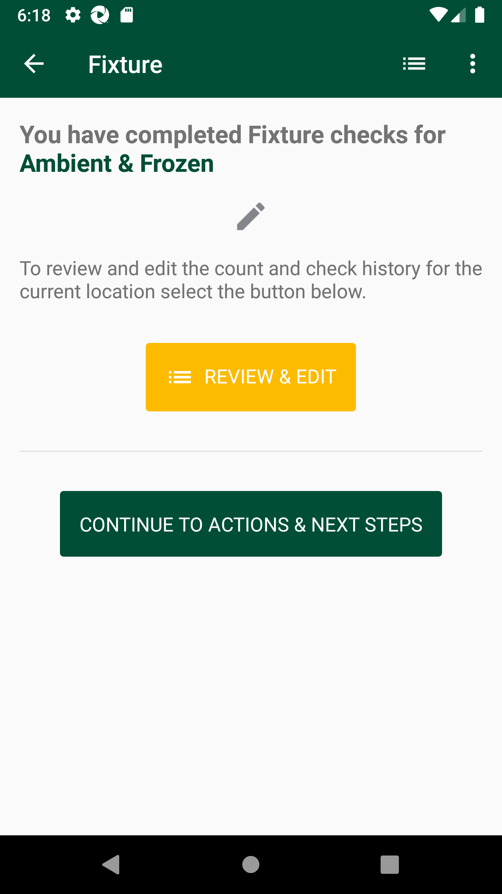
And I mark single product as flag with one actionStep skippedThen I click on History iconStep skippedAnd I select flag item from historyStep skippedThen I click on Edit buttonStep skippedAnd I verify the action "Check Merchandising Plan" status as "Disable" on edit screenStep skippedAnd I click on Back Button in Prompted Counts screenStep skippedAnd I click on Back Button in Prompted Counts screenStep skippedAnd I verify flagged item from "Fixture" to "Off Shelf" locationStep skippedAnd I verify flagged item from "Fixture" to "Petrol" locationStep skippedAnd I verify flagged item from "Fixture" to "Warehouse" locationStep skippedThen I click on Back Button in Prompted Counts screenStep skippedThen I click on "Fixture" optionStep skippedThen I click on History iconStep skippedThen I unflag the item with qty "140" without any actionStep skippedAnd I verify the edited quantity "140" on history screenStep skippedAnd I click on Back Button in Prompted Counts screenStep skippedAnd I verify un-flagged item status with count in "Off Shelf" locationStep skippedAnd I verify un-flagged item status with count in "Petrol" locationStep skippedAnd I verify un-flagged item status with count in "Warehouse" locationStep skippedFailSC_13 To verify flag with single item and one action, Un-flag functionality, flagged item verification on other locations, edit flagged items in other location for FixtureWhen I enter Username and Password for SMA Collegue userAnd I click on login button for SMAThen I click on 'stockMngmtText' on page 'HomePagePO_New'Then I click on "Prompted Counts" optionThen I click on "Fresh" optionThen I click on "Fixture" optionAnd I enter "14"com.morrisons.common.action.Hook.afterScenario(io.cucumber.java.Scenario)And I mark single product as flag with one actionStep skippedThen I click on History iconStep skippedAnd I select flag item from historyStep skippedThen I click on Edit buttonStep skippedAnd I verify the action "Check Merchandising Plan" status as "Disable" on edit screenStep skippedAnd I click on Back Button in Prompted Counts screenStep skippedAnd I click on Back Button in Prompted Counts screenStep skippedAnd I verify flagged item from "Fixture" to "Off Shelf" locationStep skippedAnd I verify flagged item from "Fixture" to "Petrol" locationStep skippedAnd I verify flagged item from "Fixture" to "Warehouse" locationStep skippedThen I click on Back Button in Prompted Counts screenStep skippedThen I click on "Fixture" optionStep skippedThen I click on History iconStep skippedThen I unflag the item with qty "140" without any actionStep skippedAnd I verify the edited quantity "140" on history screenStep skippedAnd I click on Back Button in Prompted Counts screenStep skippedAnd I verify un-flagged item status with count in "Off Shelf" locationStep skippedAnd I verify un-flagged item status with count in "Petrol" locationStep skippedAnd I verify un-flagged item status with count in "Warehouse" locationStep skippedFailSC_13 To verify flag with single item and one action, Un-flag functionality, flagged item verification on other locations, edit flagged items in other location for FixtureWhen I enter Username and Password for SMA Collegue userAnd I click on login button for SMAThen I click on 'stockMngmtText' on page 'HomePagePO_New'Then I click on "Prompted Counts" optionThen I click on "Market Street" optionThen I click on "Fixture" optionAnd I enter "14"And I mark single product as flag with one actionThen I click on History iconcom.morrisons.common.action.Hook.afterScenario(io.cucumber.java.Scenario)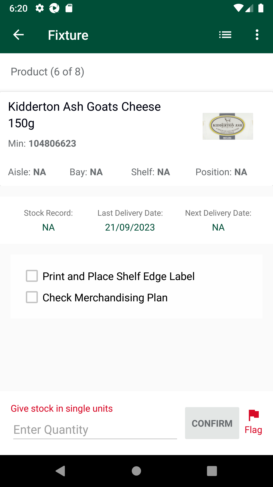
And I select flag item from historyStep skippedThen I click on Edit buttonStep skippedAnd I verify the action "Check Merchandising Plan" status as "Disable" on edit screenStep skippedAnd I click on Back Button in Prompted Counts screenStep skippedAnd I click on Back Button in Prompted Counts screenStep skippedAnd I verify flagged item from "Fixture" to "Off Shelf" locationStep skippedAnd I verify flagged item from "Fixture" to "Petrol" locationStep skippedAnd I verify flagged item from "Fixture" to "Warehouse" locationStep skippedThen I click on Back Button in Prompted Counts screenStep skippedThen I click on "Fixture" optionStep skippedThen I click on History iconStep skippedThen I unflag the item with qty "140" without any actionStep skippedAnd I verify the edited quantity "140" on history screenStep skippedAnd I click on Back Button in Prompted Counts screenStep skippedAnd I verify un-flagged item status with count in "Off Shelf" locationStep skippedAnd I verify un-flagged item status with count in "Petrol" locationStep skippedAnd I verify un-flagged item status with count in "Warehouse" locationStep skippedFailSC_13 To verify flag with single item and one action, Un-flag functionality, flagged item verification on other locations, edit flagged items in other location for FixtureWhen I enter Username and Password for SMA Collegue userAnd I click on login button for SMAThen I click on 'stockMngmtText' on page 'HomePagePO_New'Then I click on "Prompted Counts" optionThen I click on "Services" optionThen I click on "Fixture" optionAnd I enter "14"com.morrisons.common.action.Hook.afterScenario(io.cucumber.java.Scenario)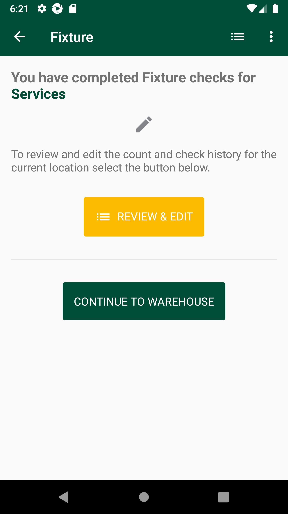
And I mark single product as flag with one actionStep skippedThen I click on History iconStep skippedAnd I select flag item from historyStep skippedThen I click on Edit buttonStep skippedAnd I verify the action "Check Merchandising Plan" status as "Disable" on edit screenStep skippedAnd I click on Back Button in Prompted Counts screenStep skippedAnd I click on Back Button in Prompted Counts screenStep skippedAnd I verify flagged item from "Fixture" to "Off Shelf" locationStep skippedAnd I verify flagged item from "Fixture" to "Petrol" locationStep skippedAnd I verify flagged item from "Fixture" to "Warehouse" locationStep skippedThen I click on Back Button in Prompted Counts screenStep skippedThen I click on "Fixture" optionStep skippedThen I click on History iconStep skippedThen I unflag the item with qty "140" without any actionStep skippedAnd I verify the edited quantity "140" on history screenStep skippedAnd I click on Back Button in Prompted Counts screenStep skippedAnd I verify un-flagged item status with count in "Off Shelf" locationStep skippedAnd I verify un-flagged item status with count in "Petrol" locationStep skippedAnd I verify un-flagged item status with count in "Warehouse" locationStep skippedFailSC_14 To verify flag with single item and all action, Un-flag functionality, flagged item verification on other locations, edit flagged items in other location for FixtureFailSC_14 To verify flag with single item and all action, Un-flag functionality, flagged item verification on other locations, edit flagged items in other location for FixtureWhen I enter Username and Password for SMA Collegue userAnd I click on login button for SMAThen I click on 'stockMngmtText' on page 'HomePagePO_New'Then I click on "Prompted Counts" optionThen I click on "Ambient & Frozen" optionThen I click on "Fixture" optionAnd I enter "15"com.morrisons.common.action.Hook.afterScenario(io.cucumber.java.Scenario)And I mark product as flag with all actionsStep skippedThen I click on History iconStep skippedAnd I verify the added "All" aciton on history screen while flagStep skippedThen I click on Edit buttonStep skippedAnd I verify the action "Check Merchandising Plan" status as "Disable" on edit screenStep skippedAnd I verify the action "Print and Place Shelf Edge Label" status as "Disable" on edit screenStep skippedAnd I click on Back Button in Prompted Counts screenStep skippedAnd I click on Back Button in Prompted Counts screenStep skippedAnd I verify flagged item from "Fixture" to "Off Shelf" locationStep skippedAnd I verify flagged item from "Fixture" to "Petrol" locationStep skippedAnd I verify flagged item from "Fixture" to "Warehouse" locationStep skippedAnd I click on Back Button in Prompted Counts screenStep skippedThen I click on "Fixture" optionStep skippedThen I click on History iconStep skippedThen I unflag the item with qty "150" without any actionStep skippedAnd I verify the edited quantity "150" on history screenStep skippedAnd I click on Back Button in Prompted Counts screenStep skippedAnd I verify un-flagged item status with count in "Off Shelf" locationStep skippedAnd I verify un-flagged item status with count in "Petrol" locationStep skippedAnd I verify un-flagged item status with count in "Warehouse" locationStep skippedFailSC_14 To verify flag with single item and all action, Un-flag functionality, flagged item verification on other locations, edit flagged items in other location for FixtureWhen I enter Username and Password for SMA Collegue userAnd I click on login button for SMAThen I click on 'stockMngmtText' on page 'HomePagePO_New'Then I click on "Prompted Counts" optionThen I click on "Fresh" optionThen I click on "Fixture" optionAnd I enter "15"com.morrisons.common.action.Hook.afterScenario(io.cucumber.java.Scenario)And I mark product as flag with all actionsStep skippedThen I click on History iconStep skippedAnd I verify the added "All" aciton on history screen while flagStep skippedThen I click on Edit buttonStep skippedAnd I verify the action "Check Merchandising Plan" status as "Disable" on edit screenStep skippedAnd I verify the action "Print and Place Shelf Edge Label" status as "Disable" on edit screenStep skippedAnd I click on Back Button in Prompted Counts screenStep skippedAnd I click on Back Button in Prompted Counts screenStep skippedAnd I verify flagged item from "Fixture" to "Off Shelf" locationStep skippedAnd I verify flagged item from "Fixture" to "Petrol" locationStep skippedAnd I verify flagged item from "Fixture" to "Warehouse" locationStep skippedAnd I click on Back Button in Prompted Counts screenStep skippedThen I click on "Fixture" optionStep skippedThen I click on History iconStep skippedThen I unflag the item with qty "150" without any actionStep skippedAnd I verify the edited quantity "150" on history screenStep skippedAnd I click on Back Button in Prompted Counts screenStep skippedAnd I verify un-flagged item status with count in "Off Shelf" locationStep skippedAnd I verify un-flagged item status with count in "Petrol" locationStep skippedAnd I verify un-flagged item status with count in "Warehouse" locationStep skippedFailSC_14 To verify flag with single item and all action, Un-flag functionality, flagged item verification on other locations, edit flagged items in other location for FixtureWhen I enter Username and Password for SMA Collegue userAnd I click on login button for SMAThen I click on 'stockMngmtText' on page 'HomePagePO_New'Then I click on "Prompted Counts" optionThen I click on "Market Street" optionThen I click on "Fixture" optionAnd I enter "15"And I mark product as flag with all actionsThen I click on History iconcom.morrisons.common.action.Hook.afterScenario(io.cucumber.java.Scenario)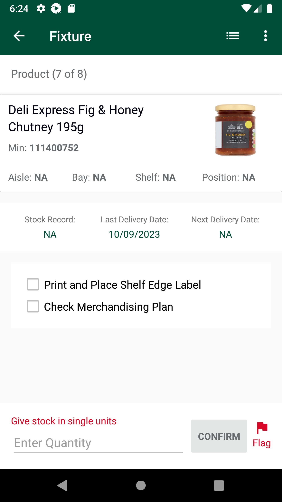
And I verify the added "All" aciton on history screen while flagStep skippedThen I click on Edit buttonStep skippedAnd I verify the action "Check Merchandising Plan" status as "Disable" on edit screenStep skippedAnd I verify the action "Print and Place Shelf Edge Label" status as "Disable" on edit screenStep skippedAnd I click on Back Button in Prompted Counts screenStep skippedAnd I click on Back Button in Prompted Counts screenStep skippedAnd I verify flagged item from "Fixture" to "Off Shelf" locationStep skippedAnd I verify flagged item from "Fixture" to "Petrol" locationStep skippedAnd I verify flagged item from "Fixture" to "Warehouse" locationStep skippedAnd I click on Back Button in Prompted Counts screenStep skippedThen I click on "Fixture" optionStep skippedThen I click on History iconStep skippedThen I unflag the item with qty "150" without any actionStep skippedAnd I verify the edited quantity "150" on history screenStep skippedAnd I click on Back Button in Prompted Counts screenStep skippedAnd I verify un-flagged item status with count in "Off Shelf" locationStep skippedAnd I verify un-flagged item status with count in "Petrol" locationStep skippedAnd I verify un-flagged item status with count in "Warehouse" locationStep skippedFailSC_14 To verify flag with single item and all action, Un-flag functionality, flagged item verification on other locations, edit flagged items in other location for FixtureWhen I enter Username and Password for SMA Collegue userAnd I click on login button for SMAThen I click on 'stockMngmtText' on page 'HomePagePO_New'Then I click on "Prompted Counts" optionThen I click on "Services" optionThen I click on "Fixture" optionAnd I enter "15"com.morrisons.common.action.Hook.afterScenario(io.cucumber.java.Scenario)And I mark product as flag with all actionsStep skippedThen I click on History iconStep skippedAnd I verify the added "All" aciton on history screen while flagStep skippedThen I click on Edit buttonStep skippedAnd I verify the action "Check Merchandising Plan" status as "Disable" on edit screenStep skippedAnd I verify the action "Print and Place Shelf Edge Label" status as "Disable" on edit screenStep skippedAnd I click on Back Button in Prompted Counts screenStep skippedAnd I click on Back Button in Prompted Counts screenStep skippedAnd I verify flagged item from "Fixture" to "Off Shelf" locationStep skippedAnd I verify flagged item from "Fixture" to "Petrol" locationStep skippedAnd I verify flagged item from "Fixture" to "Warehouse" locationStep skippedAnd I click on Back Button in Prompted Counts screenStep skippedThen I click on "Fixture" optionStep skippedThen I click on History iconStep skippedThen I unflag the item with qty "150" without any actionStep skippedAnd I verify the edited quantity "150" on history screenStep skippedAnd I click on Back Button in Prompted Counts screenStep skippedAnd I verify un-flagged item status with count in "Off Shelf" locationStep skippedAnd I verify un-flagged item status with count in "Petrol" locationStep skippedAnd I verify un-flagged item status with count in "Warehouse" locationStep skippedFailSC_15 To verify complete all pending prompted items functionality, completion message verification, Review & Edit screen verification for Fixture location.FailSC_15 To verify complete all pending prompted items functionality, completion message verification, Review & Edit screen verification for Fixture location.When I enter Username and Password for SMA Collegue userAnd I click on login button for SMAThen I click on 'stockMngmtText' on page 'HomePagePO_New'Then I click on "Prompted Counts" optionThen I click on "Ambient & Frozen" optionThen I click on "Fixture" optionAnd I verify Item list count is displayedcom.morrisons.common.action.Hook.afterScenario(io.cucumber.java.Scenario)Then I enter qty "16" and click on Confirm button for all the productsStep skippedAnd I verify "You have completed Fixture checks for Ambient & Frozen" message is displayedStep skippedAnd I verify REVIEW & EDIT button is displayedStep skippedThen I click on REVIEW & EDIT buttonStep skippedAnd I verify History screen is displayed with list of completed products with total countStep skippedAnd I click on Back Button in Prompted Counts screenStep skippedAnd I click on Back Button in Prompted Counts screenStep skippedAnd I verify option "Fixture" with "COMPLETE" statusStep skippedAnd I click on Back Button in Prompted Counts screenStep skippedThen I verify "Ambient & Frozen" with "IN PROGRESS" statusStep skippedPassSC_15 To verify complete all pending prompted items functionality, completion message verification, Review & Edit screen verification for Fixture location.When I enter Username and Password for SMA Collegue userAnd I click on login button for SMAThen I click on 'stockMngmtText' on page 'HomePagePO_New'Then I click on "Prompted Counts" optionThen I click on "Market Street" optionThen I click on "Fixture" optionAnd I verify Item list count is displayedThen I enter qty "16" and click on Confirm button for all the productsAnd I verify "You have completed Fixture checks for Market Street" message is displayedAnd I verify REVIEW & EDIT button is displayedThen I click on REVIEW & EDIT buttonAnd I verify History screen is displayed with list of completed products with total countAnd I click on Back Button in Prompted Counts screenAnd I click on Back Button in Prompted Counts screenAnd I verify option "Fixture" with "COMPLETE" statusAnd I click on Back Button in Prompted Counts screenThen I verify "Market Street" with "IN PROGRESS" statusFailSC_15 To verify complete all pending prompted items functionality, completion message verification, Review & Edit screen verification for Fixture location.When I enter Username and Password for SMA Collegue userAnd I click on login button for SMAThen I click on 'stockMngmtText' on page 'HomePagePO_New'Then I click on "Prompted Counts" optionThen I click on "Fresh" optionThen I click on "Fixture" optionAnd I verify Item list count is displayedcom.morrisons.common.action.Hook.afterScenario(io.cucumber.java.Scenario) Then I enter qty "16" and click on Confirm button for all the productsStep skippedAnd I verify "You have completed Fixture checks for Fresh" message is displayedStep skippedAnd I verify REVIEW & EDIT button is displayedStep skippedThen I click on REVIEW & EDIT buttonStep skippedAnd I verify History screen is displayed with list of completed products with total countStep skippedAnd I click on Back Button in Prompted Counts screenStep skippedAnd I click on Back Button in Prompted Counts screenStep skippedAnd I verify option "Fixture" with "COMPLETE" statusStep skippedAnd I click on Back Button in Prompted Counts screenStep skippedThen I verify "Fresh" with "IN PROGRESS" statusStep skippedFailSC_15 To verify complete all pending prompted items functionality, completion message verification, Review & Edit screen verification for Fixture location.When I enter Username and Password for SMA Collegue userAnd I click on login button for SMAThen I click on 'stockMngmtText' on page 'HomePagePO_New'Then I click on "Prompted Counts" optionThen I click on "Services" optionThen I click on "Fixture" optionAnd I verify Item list count is displayedcom.morrisons.common.action.Hook.afterScenario(io.cucumber.java.Scenario)Then I enter qty "16" and click on Confirm button for all the productsStep skippedAnd I verify "You have completed Fixture checks for Services" message is displayedStep skippedAnd I verify REVIEW & EDIT button is displayedStep skippedThen I click on REVIEW & EDIT buttonStep skippedAnd I verify History screen is displayed with list of completed products with total countStep skippedAnd I click on Back Button in Prompted Counts screenStep skippedAnd I click on Back Button in Prompted Counts screenStep skippedAnd I verify option "Fixture" with "COMPLETE" statusStep skippedAnd I click on Back Button in Prompted Counts screenStep skippedThen I verify "Services" with "IN PROGRESS" statusStep skippedFailSC_16 To verify promoted item edit functionality after complete Fixture location.FailSC_16 To verify promoted item edit functionality after complete Fixture location.When I enter Username and Password for SMA Collegue userAnd I click on login button for SMAThen I click on 'stockMngmtText' on page 'HomePagePO_New'Then I click on "Prompted Counts" optionThen I click on "Ambient & Frozen" optionThen I click on "Fixture" optionAnd I verify History icon is displayedcom.morrisons.common.action.Hook.afterScenario(io.cucumber.java.Scenario)Then I click on History iconStep skippedThen I Select product on "16" History screenStep skippedThen I click on Edit buttonStep skippedAnd I add action and edit stock count as "230"Step skippedFailSC_16 To verify promoted item edit functionality after complete Fixture location.When I enter Username and Password for SMA Collegue userAnd I click on login button for SMAThen I click on 'stockMngmtText' on page 'HomePagePO_New'Then I click on "Prompted Counts" optionThen I click on "Fresh" optionThen I click on "Fixture" optionAnd I verify History icon is displayedcom.morrisons.common.action.Hook.afterScenario(io.cucumber.java.Scenario)Then I click on History iconStep skippedThen I Select product on "16" History screenStep skippedThen I click on Edit buttonStep skippedAnd I add action and edit stock count as "230"Step skippedFailSC_16 To verify promoted item edit functionality after complete Fixture location.When I enter Username and Password for SMA Collegue userAnd I click on login button for SMAThen I click on 'stockMngmtText' on page 'HomePagePO_New'Then I click on "Prompted Counts" optionThen I click on "Market Street" optionThen I click on "Fixture" optionAnd I verify History icon is displayedcom.morrisons.common.action.Hook.afterScenario(io.cucumber.java.Scenario)
Then I enter qty "16" and click on Confirm button for all the productsStep skippedAnd I verify "You have completed Fixture checks for Fresh" message is displayedStep skippedAnd I verify REVIEW & EDIT button is displayedStep skippedThen I click on REVIEW & EDIT buttonStep skippedAnd I verify History screen is displayed with list of completed products with total countStep skippedAnd I click on Back Button in Prompted Counts screenStep skippedAnd I click on Back Button in Prompted Counts screenStep skippedAnd I verify option "Fixture" with "COMPLETE" statusStep skippedAnd I click on Back Button in Prompted Counts screenStep skippedThen I verify "Fresh" with "IN PROGRESS" statusStep skippedFailSC_15 To verify complete all pending prompted items functionality, completion message verification, Review & Edit screen verification for Fixture location.When I enter Username and Password for SMA Collegue userAnd I click on login button for SMAThen I click on 'stockMngmtText' on page 'HomePagePO_New'Then I click on "Prompted Counts" optionThen I click on "Services" optionThen I click on "Fixture" optionAnd I verify Item list count is displayedcom.morrisons.common.action.Hook.afterScenario(io.cucumber.java.Scenario)Then I enter qty "16" and click on Confirm button for all the productsStep skippedAnd I verify "You have completed Fixture checks for Services" message is displayedStep skippedAnd I verify REVIEW & EDIT button is displayedStep skippedThen I click on REVIEW & EDIT buttonStep skippedAnd I verify History screen is displayed with list of completed products with total countStep skippedAnd I click on Back Button in Prompted Counts screenStep skippedAnd I click on Back Button in Prompted Counts screenStep skippedAnd I verify option "Fixture" with "COMPLETE" statusStep skippedAnd I click on Back Button in Prompted Counts screenStep skippedThen I verify "Services" with "IN PROGRESS" statusStep skippedFailSC_16 To verify promoted item edit functionality after complete Fixture location.FailSC_16 To verify promoted item edit functionality after complete Fixture location.When I enter Username and Password for SMA Collegue userAnd I click on login button for SMAThen I click on 'stockMngmtText' on page 'HomePagePO_New'Then I click on "Prompted Counts" optionThen I click on "Ambient & Frozen" optionThen I click on "Fixture" optionAnd I verify History icon is displayedcom.morrisons.common.action.Hook.afterScenario(io.cucumber.java.Scenario)Then I click on History iconStep skippedThen I Select product on "16" History screenStep skippedThen I click on Edit buttonStep skippedAnd I add action and edit stock count as "230"Step skippedFailSC_16 To verify promoted item edit functionality after complete Fixture location.When I enter Username and Password for SMA Collegue userAnd I click on login button for SMAThen I click on 'stockMngmtText' on page 'HomePagePO_New'Then I click on "Prompted Counts" optionThen I click on "Fresh" optionThen I click on "Fixture" optionAnd I verify History icon is displayedcom.morrisons.common.action.Hook.afterScenario(io.cucumber.java.Scenario)Then I click on History iconStep skippedThen I Select product on "16" History screenStep skippedThen I click on Edit buttonStep skippedAnd I add action and edit stock count as "230"Step skippedFailSC_16 To verify promoted item edit functionality after complete Fixture location.When I enter Username and Password for SMA Collegue userAnd I click on login button for SMAThen I click on 'stockMngmtText' on page 'HomePagePO_New'Then I click on "Prompted Counts" optionThen I click on "Market Street" optionThen I click on "Fixture" optionAnd I verify History icon is displayedcom.morrisons.common.action.Hook.afterScenario(io.cucumber.java.Scenario)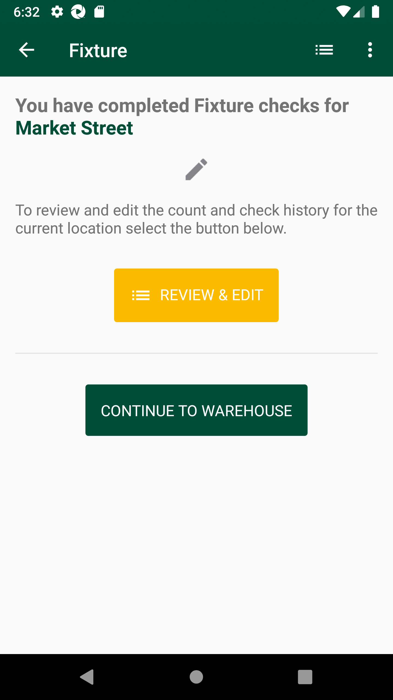
Then I click on History iconStep skippedThen I Select product on "16" History screenStep skippedThen I click on Edit buttonStep skippedAnd I add action and edit stock count as "230"Step skippedFailSC_16 To verify promoted item edit functionality after complete Fixture location.When I enter Username and Password for SMA Collegue userAnd I click on login button for SMAThen I click on 'stockMngmtText' on page 'HomePagePO_New'Then I click on "Prompted Counts" optionThen I click on "Services" optionThen I click on "Fixture" optionAnd I verify History icon is displayedcom.morrisons.common.action.Hook.afterScenario(io.cucumber.java.Scenario)Then I click on History iconStep skippedThen I Select product on "16" History screenStep skippedThen I click on Edit buttonStep skippedAnd I add action and edit stock count as "230"Step skippedFailSC_17 To verify prompted count with single item without action, Edit prompted count and history screen verification for OffShelfFailSC_17 To verify prompted count with single item without action, Edit prompted count and history screen verification for OffShelfWhen I enter Username and Password for SMA Collegue userAnd I click on login button for SMAThen I click on 'stockMngmtText' on page 'HomePagePO_New'Then I click on "Prompted Counts" optionThen I click on "Ambient & Frozen" optionThen I click on "Off Shelf" optionAnd I enter qty "17" and click on Confirm buttoncom.morrisons.common.action.Hook.afterScenario(io.cucumber.java.Scenario)And I click on History iconStep skippedThen I verify History screen is displayed with list of completed products with total countStep skippedAnd I Select product on "17" History screenStep skippedThen I click on Edit buttonStep skippedAnd I edit stock count with "170"Step skippedThen I verify the edited quantity "170" on history screenStep skippedFailSC_17 To verify prompted count with single item without action, Edit prompted count and history screen verification for OffShelfWhen I enter Username and Password for SMA Collegue userAnd I click on login button for SMAThen I click on 'stockMngmtText' on page 'HomePagePO_New'Then I click on "Prompted Counts" optionThen I click on "Fresh" optionThen I click on "Off Shelf" optionAnd I enter qty "17" and click on Confirm buttoncom.morrisons.common.action.Hook.afterScenario(io.cucumber.java.Scenario)And I click on History iconStep skippedThen I verify History screen is displayed with list of completed products with total countStep skippedAnd I Select product on "17" History screenStep skippedThen I click on Edit buttonStep skippedAnd I edit stock count with "170"Step skippedThen I verify the edited quantity "170" on history screenStep skippedFailSC_17 To verify prompted count with single item without action, Edit prompted count and history screen verification for OffShelfWhen I enter Username and Password for SMA Collegue userAnd I click on login button for SMAThen I click on 'stockMngmtText' on page 'HomePagePO_New'Then I click on "Prompted Counts" optionThen I click on "Market Street" optionThen I click on "Off Shelf" optionAnd I enter qty "17" and click on Confirm buttoncom.morrisons.common.action.Hook.afterScenario(io.cucumber.java.Scenario)And I click on History iconStep skippedThen I verify History screen is displayed with list of completed products with total countStep skippedAnd I Select product on "17" History screenStep skippedThen I click on Edit buttonStep skippedAnd I edit stock count with "170"Step skippedThen I verify the edited quantity "170" on history screenStep skippedFailSC_17 To verify prompted count with single item without action, Edit prompted count and history screen verification for OffShelfWhen I enter Username and Password for SMA Collegue userAnd I click on login button for SMAThen I click on 'stockMngmtText' on page 'HomePagePO_New'Then I click on "Prompted Counts" optionThen I click on "Services" optionThen I click on "Off Shelf" optionAnd I enter qty "17" and click on Confirm buttoncom.morrisons.common.action.Hook.afterScenario(io.cucumber.java.Scenario)And I click on History iconStep skippedThen I verify History screen is displayed with list of completed products with total countStep skippedAnd I Select product on "17" History screenStep skippedThen I click on Edit buttonStep skippedAnd I edit stock count with "170"Step skippedThen I verify the edited quantity "170" on history screenStep skippedFailSC_18 To verify prompted count with single item and 'Print and Place label' and 'Merchandising' actions, Print labels verification, Actions & Next step screen verification for OffShelf.FailSC_18 To verify prompted count with single item and 'Print and Place label' and 'Merchandising' actions, Print labels verification, Actions & Next step screen verification for OffShelf.When I enter Username and Password for SMA Collegue userAnd I click on login button for SMAThen I click on 'stockMngmtText' on page 'HomePagePO_New'Then I click on "Prompted Counts" optionThen I click on "Ambient & Frozen" optionThen I click on "Off Shelf" optionAnd I verify "Print and Place Shelf Edge Label" Action label is displayedcom.morrisons.common.action.Hook.afterScenario(io.cucumber.java.Scenario)And I verify "Check Merchandising Plan" Action label is displayedStep skippedThen I click on "Print and Place Shelf Edge Label" Action labelStep skippedThen I click on "Check Merchandising Plan" Action labelStep skippedAnd I enter qty "23" and click on Confirm buttonStep skippedAnd I verify Request Label screen UIStep skippedAnd I verify "Default", "A4P White POS" and "Medium White POS" labels are displayedStep skippedThen I select Label sizeStep skippedAnd I click on Continue Button on Request label pageStep skippedAnd I click on Back Button in Prompted Counts screenStep skippedThen I click on "Actions & Next Steps"Step skippedAnd I click on Merchandising on Action & Next steps pageStep skippedThen I verify details on Merchandising screenStep skippedAnd I click on Back Button in Prompted Counts screenStep skippedThen I click on Print & Place Labels on Action & Next steps pageStep skippedAnd I verify Print & Place Labels screen is displayedStep skippedThen I verify details on Print & Place Labels screenStep skippedThen I click on Place labels buttonStep skippedThen I verify Place labels screen with Product details are displayedStep skippedFailSC_18 To verify prompted count with single item and 'Print and Place label' and 'Merchandising' actions, Print labels verification, Actions & Next step screen verification for OffShelf.When I enter Username and Password for SMA Collegue userAnd I click on login button for SMAThen I click on 'stockMngmtText' on page 'HomePagePO_New'Then I click on "Prompted Counts" optionThen I click on "Fresh" optionThen I click on "Off Shelf" optionAnd I verify "Print and Place Shelf Edge Label" Action label is displayedcom.morrisons.common.action.Hook.afterScenario(io.cucumber.java.Scenario)And I verify "Check Merchandising Plan" Action label is displayedStep skippedThen I click on "Print and Place Shelf Edge Label" Action labelStep skippedThen I click on "Check Merchandising Plan" Action labelStep skippedAnd I enter qty "23" and click on Confirm buttonStep skippedAnd I verify Request Label screen UIStep skippedAnd I verify "Medium White Label Bakery", "Medium White No Price Label" and "A4P Bakery POS" labels are displayedStep skippedThen I select Label sizeStep skippedAnd I click on Continue Button on Request label pageStep skippedAnd I click on Back Button in Prompted Counts screenStep skippedThen I click on "Actions & Next Steps"Step skippedAnd I click on Merchandising on Action & Next steps pageStep skippedThen I verify details on Merchandising screenStep skippedAnd I click on Back Button in Prompted Counts screenStep skippedThen I click on Print & Place Labels on Action & Next steps pageStep skippedAnd I verify Print & Place Labels screen is displayedStep skippedThen I verify details on Print & Place Labels screenStep skippedThen I click on Place labels buttonStep skippedThen I verify Place labels screen with Product details are displayedStep skippedFailSC_18 To verify prompted count with single item and 'Print and Place label' and 'Merchandising' actions, Print labels verification, Actions & Next step screen verification for OffShelf.When I enter Username and Password for SMA Collegue userAnd I click on login button for SMAThen I click on 'stockMngmtText' on page 'HomePagePO_New'Then I click on "Prompted Counts" optionThen I click on "Market Street" optionThen I click on "Off Shelf" optionAnd I verify "Print and Place Shelf Edge Label" Action label is displayedcom.morrisons.common.action.Hook.afterScenario(io.cucumber.java.Scenario)And I verify "Check Merchandising Plan" Action label is displayedStep skippedThen I click on "Print and Place Shelf Edge Label" Action labelStep skippedThen I click on "Check Merchandising Plan" Action labelStep skippedAnd I enter qty "23" and click on Confirm buttonStep skippedAnd I verify Request Label screen UIStep skippedAnd I verify "Medium Counter Deli Cheese POS", "Medium White No Price Label" and "A4P Counter POS" labels are displayedStep skippedThen I select Label sizeStep skippedAnd I click on Continue Button on Request label pageStep skippedAnd I click on Back Button in Prompted Counts screenStep skippedThen I click on "Actions & Next Steps"Step skippedAnd I click on Merchandising on Action & Next steps pageStep skippedThen I verify details on Merchandising screenStep skippedAnd I click on Back Button in Prompted Counts screenStep skippedThen I click on Print & Place Labels on Action & Next steps pageStep skippedAnd I verify Print & Place Labels screen is displayedStep skippedThen I verify details on Print & Place Labels screenStep skippedThen I click on Place labels buttonStep skippedThen I verify Place labels screen with Product details are displayedStep skippedFailSC_19 To verify flag with single item without action and qty, Re-flag, Un-flag functionality, flagged item verification on other locations, edit flagged items in other location for OffShelf.FailSC_19 To verify flag with single item without action and qty, Re-flag, Un-flag functionality, flagged item verification on other locations, edit flagged items in other location for OffShelf.When I enter Username and Password for SMA Collegue userAnd I click on login button for SMAThen I click on 'stockMngmtText' on page 'HomePagePO_New'Then I click on "Prompted Counts" optionThen I click on "Ambient & Frozen" optionThen I click on "Off Shelf" optionAnd I mark single product as flagAnd I verify flagged item from "Off Shelf" to "Petrol" locationcom.morrisons.common.action.Hook.afterScenario(io.cucumber.java.Scenario)And I verify flagged item from "Off Shelf" to "Warehouse" locationStep skippedThen I click on Back Button in Prompted Counts screenStep skippedThen I click on "Off Shelf" optionStep skippedThen I click on History iconStep skippedAnd I re-flag the item with one actionStep skippedAnd I verify the added "One" aciton on history screen while flagStep skippedThen I click on Back Button in Prompted Counts screenStep skippedThen I unflag the item with qty "200" without any actionStep skippedAnd I verify the edited quantity "200" on history screenStep skippedAnd I click on Back Button in Prompted Counts screenStep skippedAnd I verify un-flagged item status with count in "Petrol" locationStep skippedAnd I verify un-flagged item status with count in "Warehouse" locationStep skippedFailSC_19 To verify flag with single item without action and qty, Re-flag, Un-flag functionality, flagged item verification on other locations, edit flagged items in other location for OffShelf.When I enter Username and Password for SMA Collegue userAnd I click on login button for SMAThen I click on 'stockMngmtText' on page 'HomePagePO_New'Then I click on "Prompted Counts" optionThen I click on "Fresh" optionThen I click on "Off Shelf" optionAnd I mark single product as flagAnd I verify flagged item from "Off Shelf" to "Petrol" locationcom.morrisons.common.action.Hook.afterScenario(io.cucumber.java.Scenario)And I verify flagged item from "Off Shelf" to "Warehouse" locationStep skippedThen I click on Back Button in Prompted Counts screenStep skippedThen I click on "Off Shelf" optionStep skippedThen I click on History iconStep skippedAnd I re-flag the item with one actionStep skippedAnd I verify the added "One" aciton on history screen while flagStep skippedThen I click on Back Button in Prompted Counts screenStep skippedThen I unflag the item with qty "200" without any actionStep skippedAnd I verify the edited quantity "200" on history screenStep skippedAnd I click on Back Button in Prompted Counts screenStep skippedAnd I verify un-flagged item status with count in "Petrol" locationStep skippedAnd I verify un-flagged item status with count in "Warehouse" locationStep skippedFailSC_19 To verify flag with single item without action and qty, Re-flag, Un-flag functionality, flagged item verification on other locations, edit flagged items in other location for OffShelf.When I enter Username and Password for SMA Collegue userAnd I click on login button for SMAThen I click on 'stockMngmtText' on page 'HomePagePO_New'Then I click on "Prompted Counts" optionThen I click on "Market Street" optionThen I click on "Off Shelf" optionAnd I mark single product as flagAnd I verify flagged item from "Off Shelf" to "Petrol" locationcom.morrisons.common.action.Hook.afterScenario(io.cucumber.java.Scenario)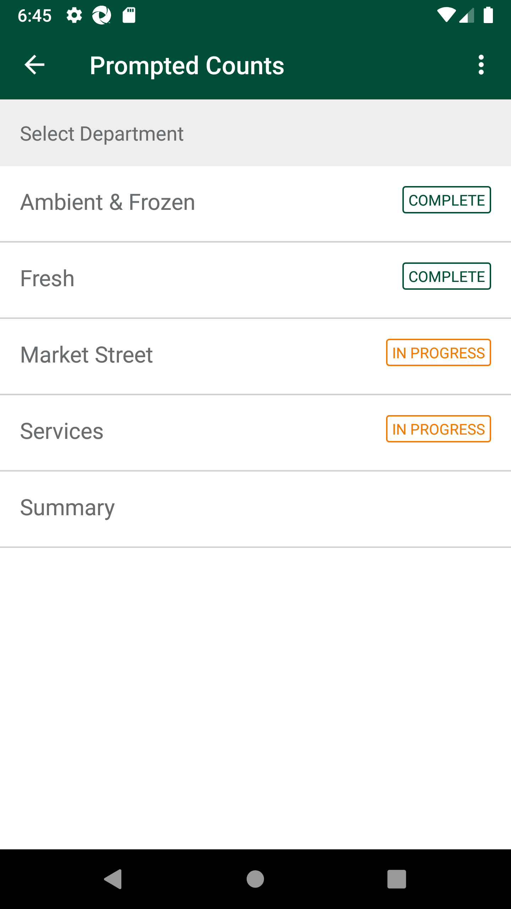
And I verify flagged item from "Off Shelf" to "Warehouse" locationStep skippedThen I click on Back Button in Prompted Counts screenStep skippedThen I click on "Off Shelf" optionStep skippedThen I click on History iconStep skippedAnd I re-flag the item with one actionStep skippedAnd I verify the added "One" aciton on history screen while flagStep skippedThen I click on Back Button in Prompted Counts screenStep skippedThen I unflag the item with qty "200" without any actionStep skippedAnd I verify the edited quantity "200" on history screenStep skippedAnd I click on Back Button in Prompted Counts screenStep skippedAnd I verify un-flagged item status with count in "Petrol" locationStep skippedAnd I verify un-flagged item status with count in "Warehouse" locationStep skippedFailSC_19 To verify flag with single item without action and qty, Re-flag, Un-flag functionality, flagged item verification on other locations, edit flagged items in other location for OffShelf.When I enter Username and Password for SMA Collegue userAnd I click on login button for SMAThen I click on 'stockMngmtText' on page 'HomePagePO_New'Then I click on "Prompted Counts" optionThen I click on "Services" optionThen I click on "Off Shelf" optionAnd I mark single product as flagAnd I verify flagged item from "Off Shelf" to "Petrol" locationcom.morrisons.common.action.Hook.afterScenario(io.cucumber.java.Scenario)And I verify flagged item from "Off Shelf" to "Warehouse" locationStep skippedThen I click on Back Button in Prompted Counts screenStep skippedThen I click on "Off Shelf" optionStep skippedThen I click on History iconStep skippedAnd I re-flag the item with one actionStep skippedAnd I verify the added "One" aciton on history screen while flagStep skippedThen I click on Back Button in Prompted Counts screenStep skippedThen I unflag the item with qty "200" without any actionStep skippedAnd I verify the edited quantity "200" on history screenStep skippedAnd I click on Back Button in Prompted Counts screenStep skippedAnd I verify un-flagged item status with count in "Petrol" locationStep skippedAnd I verify un-flagged item status with count in "Warehouse" locationStep skippedFailSC_20 To verify flag with single item and one action, Un-flag functionality, flagged item verification on other locations, edit flagged items in other location for OffShelfFailSC_20 To verify flag with single item and one action, Un-flag functionality, flagged item verification on other locations, edit flagged items in other location for OffShelfWhen I enter Username and Password for SMA Collegue userAnd I click on login button for SMAThen I click on 'stockMngmtText' on page 'HomePagePO_New'Then I click on "Prompted Counts" optionThen I click on "Ambient & Frozen" optionThen I click on "Off Shelf" optionAnd I enter "24"com.morrisons.common.action.Hook.afterScenario(io.cucumber.java.Scenario)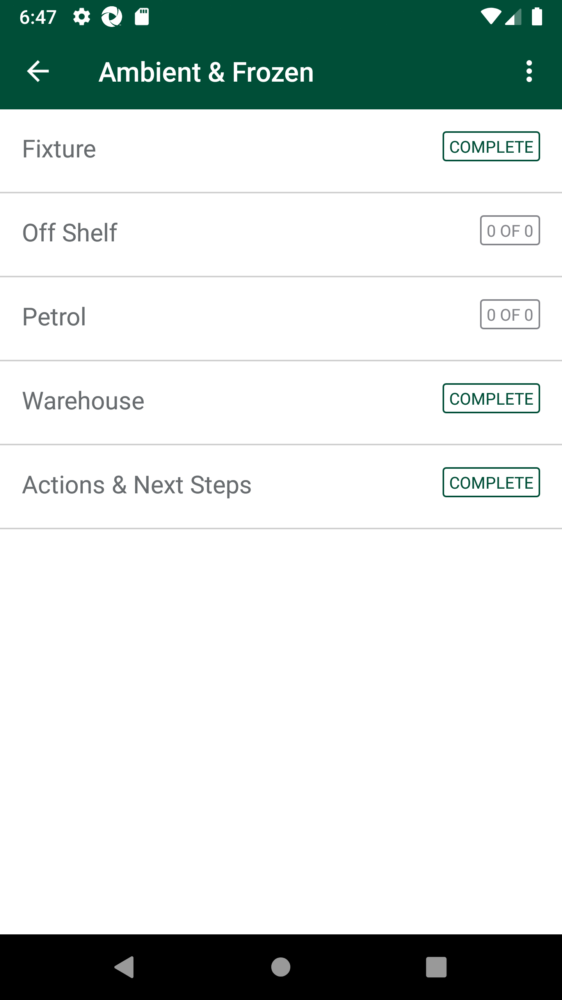
And I mark single product as flag with one actionStep skippedAnd I verify flagged item from "Off Shelf" to "Petrol" locationStep skippedAnd I verify flagged item from "Off Shelf" to "Warehouse" locationStep skippedThen I click on Back Button in Prompted Counts screenStep skippedThen I click on "Off Shelf" optionStep skippedThen I click on History iconStep skippedThen I unflag the item with qty "240" without any actionStep skippedAnd I verify the edited quantity "240" on history screenStep skippedAnd I click on Back Button in Prompted Counts screenStep skippedAnd I verify un-flagged item status with count in "Petrol" locationStep skippedAnd I verify un-flagged item status with count in "Warehouse" locationStep skippedFailSC_20 To verify flag with single item and one action, Un-flag functionality, flagged item verification on other locations, edit flagged items in other location for OffShelfWhen I enter Username and Password for SMA Collegue userAnd I click on login button for SMAThen I click on 'stockMngmtText' on page 'HomePagePO_New'Then I click on "Prompted Counts" optionThen I click on "Fresh" optionThen I click on "Off Shelf" optionAnd I enter "24"com.morrisons.common.action.Hook.afterScenario(io.cucumber.java.Scenario) And I mark single product as flag with one actionStep skippedAnd I verify flagged item from "Off Shelf" to "Petrol" locationStep skippedAnd I verify flagged item from "Off Shelf" to "Warehouse" locationStep skippedThen I click on Back Button in Prompted Counts screenStep skippedThen I click on "Off Shelf" optionStep skippedThen I click on History iconStep skippedThen I unflag the item with qty "240" without any actionStep skippedAnd I verify the edited quantity "240" on history screenStep skippedAnd I click on Back Button in Prompted Counts screenStep skippedAnd I verify un-flagged item status with count in "Petrol" locationStep skippedAnd I verify un-flagged item status with count in "Warehouse" locationStep skippedFailSC_20 To verify flag with single item and one action, Un-flag functionality, flagged item verification on other locations, edit flagged items in other location for OffShelfWhen I enter Username and Password for SMA Collegue userAnd I click on login button for SMAThen I click on 'stockMngmtText' on page 'HomePagePO_New'Then I click on "Prompted Counts" optionThen I click on "Services" optionThen I click on "Off Shelf" optionAnd I enter "24"com.morrisons.common.action.Hook.afterScenario(io.cucumber.java.Scenario)And I mark single product as flag with one actionStep skippedAnd I verify flagged item from "Off Shelf" to "Petrol" locationStep skippedAnd I verify flagged item from "Off Shelf" to "Warehouse" locationStep skippedThen I click on Back Button in Prompted Counts screenStep skippedThen I click on "Off Shelf" optionStep skippedThen I click on History iconStep skippedThen I unflag the item with qty "240" without any actionStep skippedAnd I verify the edited quantity "240" on history screenStep skippedAnd I click on Back Button in Prompted Counts screenStep skippedAnd I verify un-flagged item status with count in "Petrol" locationStep skippedAnd I verify un-flagged item status with count in "Warehouse" locationStep skippedFailSC_21 To verify complete all pending prompted items functionality, completion message verification, Review & Edit screen verification for OffShelf.FailSC_21 To verify complete all pending prompted items functionality, completion message verification, Review & Edit screen verification for OffShelf.When I enter Username and Password for SMA Collegue userAnd I click on login button for SMAThen I click on 'stockMngmtText' on page 'HomePagePO_New'Then I click on "Prompted Counts" optionThen I click on "Ambient & Frozen" optionThen I click on "Off Shelf" optionAnd I verify Item list count is displayedcom.morrisons.common.action.Hook.afterScenario(io.cucumber.java.Scenario)Then I enter qty "25" and click on Confirm button for all the productsStep skippedAnd I verify "You have completed Off Shelf checks for Ambient & Frozen" message is displayedStep skippedAnd I click on Back Button in Prompted Counts screenStep skippedAnd I verify option "Off Shelf" with "COMPLETE" statusStep skippedAnd I click on Back Button in Prompted Counts screenStep skippedThen I verify "Ambient & Frozen" with "IN PROGRESS" statusStep skippedThen I click on "Ambient & Frozen" optionStep skippedThen I click on "Off Shelf" optionStep skippedAnd I verify REVIEW & EDIT button is displayedStep skippedThen I click on REVIEW & EDIT buttonStep skippedAnd I verify History screen is displayed with list of completed products with total countStep skippedFailSC_21 To verify complete all pending prompted items functionality, completion message verification, Review & Edit screen verification for OffShelf.When I enter Username and Password for SMA Collegue userAnd I click on login button for SMAThen I click on 'stockMngmtText' on page 'HomePagePO_New'Then I click on "Prompted Counts" optionThen I click on "Fresh" optionThen I click on "Off Shelf" optionAnd I verify Item list count is displayedcom.morrisons.common.action.Hook.afterScenario(io.cucumber.java.Scenario)Then I enter qty "25" and click on Confirm button for all the productsStep skippedAnd I verify "You have completed Off Shelf checks for Fresh" message is displayedStep skippedAnd I click on Back Button in Prompted Counts screenStep skippedAnd I verify option "Off Shelf" with "COMPLETE" statusStep skippedAnd I click on Back Button in Prompted Counts screenStep skippedThen I verify "Fresh" with "IN PROGRESS" statusStep skippedThen I click on "Fresh" optionStep skippedThen I click on "Off Shelf" optionStep skippedAnd I verify REVIEW & EDIT button is displayedStep skippedThen I click on REVIEW & EDIT buttonStep skippedAnd I verify History screen is displayed with list of completed products with total countStep skippedFailSC_21 To verify complete all pending prompted items functionality, completion message verification, Review & Edit screen verification for OffShelf.When I enter Username and Password for SMA Collegue usercom.morrisons.common.action.Hook.afterScenario(io.cucumber.java.Scenario)
And I mark single product as flag with one actionStep skippedAnd I verify flagged item from "Off Shelf" to "Petrol" locationStep skippedAnd I verify flagged item from "Off Shelf" to "Warehouse" locationStep skippedThen I click on Back Button in Prompted Counts screenStep skippedThen I click on "Off Shelf" optionStep skippedThen I click on History iconStep skippedThen I unflag the item with qty "240" without any actionStep skippedAnd I verify the edited quantity "240" on history screenStep skippedAnd I click on Back Button in Prompted Counts screenStep skippedAnd I verify un-flagged item status with count in "Petrol" locationStep skippedAnd I verify un-flagged item status with count in "Warehouse" locationStep skippedFailSC_20 To verify flag with single item and one action, Un-flag functionality, flagged item verification on other locations, edit flagged items in other location for OffShelfWhen I enter Username and Password for SMA Collegue userAnd I click on login button for SMAThen I click on 'stockMngmtText' on page 'HomePagePO_New'Then I click on "Prompted Counts" optionThen I click on "Services" optionThen I click on "Off Shelf" optionAnd I enter "24"com.morrisons.common.action.Hook.afterScenario(io.cucumber.java.Scenario)And I mark single product as flag with one actionStep skippedAnd I verify flagged item from "Off Shelf" to "Petrol" locationStep skippedAnd I verify flagged item from "Off Shelf" to "Warehouse" locationStep skippedThen I click on Back Button in Prompted Counts screenStep skippedThen I click on "Off Shelf" optionStep skippedThen I click on History iconStep skippedThen I unflag the item with qty "240" without any actionStep skippedAnd I verify the edited quantity "240" on history screenStep skippedAnd I click on Back Button in Prompted Counts screenStep skippedAnd I verify un-flagged item status with count in "Petrol" locationStep skippedAnd I verify un-flagged item status with count in "Warehouse" locationStep skippedFailSC_21 To verify complete all pending prompted items functionality, completion message verification, Review & Edit screen verification for OffShelf.FailSC_21 To verify complete all pending prompted items functionality, completion message verification, Review & Edit screen verification for OffShelf.When I enter Username and Password for SMA Collegue userAnd I click on login button for SMAThen I click on 'stockMngmtText' on page 'HomePagePO_New'Then I click on "Prompted Counts" optionThen I click on "Ambient & Frozen" optionThen I click on "Off Shelf" optionAnd I verify Item list count is displayedcom.morrisons.common.action.Hook.afterScenario(io.cucumber.java.Scenario)Then I enter qty "25" and click on Confirm button for all the productsStep skippedAnd I verify "You have completed Off Shelf checks for Ambient & Frozen" message is displayedStep skippedAnd I click on Back Button in Prompted Counts screenStep skippedAnd I verify option "Off Shelf" with "COMPLETE" statusStep skippedAnd I click on Back Button in Prompted Counts screenStep skippedThen I verify "Ambient & Frozen" with "IN PROGRESS" statusStep skippedThen I click on "Ambient & Frozen" optionStep skippedThen I click on "Off Shelf" optionStep skippedAnd I verify REVIEW & EDIT button is displayedStep skippedThen I click on REVIEW & EDIT buttonStep skippedAnd I verify History screen is displayed with list of completed products with total countStep skippedFailSC_21 To verify complete all pending prompted items functionality, completion message verification, Review & Edit screen verification for OffShelf.When I enter Username and Password for SMA Collegue userAnd I click on login button for SMAThen I click on 'stockMngmtText' on page 'HomePagePO_New'Then I click on "Prompted Counts" optionThen I click on "Fresh" optionThen I click on "Off Shelf" optionAnd I verify Item list count is displayedcom.morrisons.common.action.Hook.afterScenario(io.cucumber.java.Scenario)Then I enter qty "25" and click on Confirm button for all the productsStep skippedAnd I verify "You have completed Off Shelf checks for Fresh" message is displayedStep skippedAnd I click on Back Button in Prompted Counts screenStep skippedAnd I verify option "Off Shelf" with "COMPLETE" statusStep skippedAnd I click on Back Button in Prompted Counts screenStep skippedThen I verify "Fresh" with "IN PROGRESS" statusStep skippedThen I click on "Fresh" optionStep skippedThen I click on "Off Shelf" optionStep skippedAnd I verify REVIEW & EDIT button is displayedStep skippedThen I click on REVIEW & EDIT buttonStep skippedAnd I verify History screen is displayed with list of completed products with total countStep skippedFailSC_21 To verify complete all pending prompted items functionality, completion message verification, Review & Edit screen verification for OffShelf.When I enter Username and Password for SMA Collegue usercom.morrisons.common.action.Hook.afterScenario(io.cucumber.java.Scenario)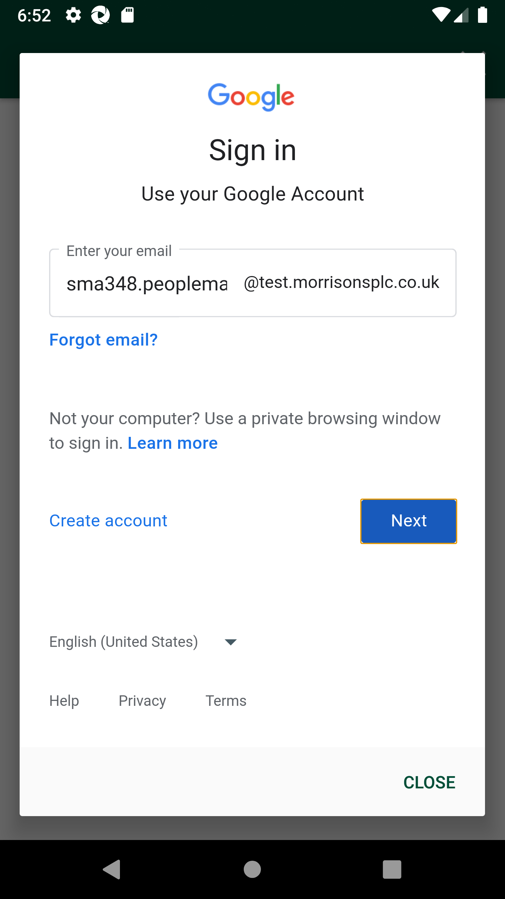
And I click on login button for SMAStep skippedThen I click on 'stockMngmtText' on page 'HomePagePO_New'Step skippedThen I click on "Prompted Counts" optionStep skippedThen I click on "Market Street" optionStep skippedThen I click on "Off Shelf" optionStep skippedAnd I verify Item list count is displayedStep skippedThen I enter qty "25" and click on Confirm button for all the productsStep skippedAnd I verify "You have completed Off Shelf checks for Market Street" message is displayedStep skippedAnd I click on Back Button in Prompted Counts screenStep skippedAnd I verify option "Off Shelf" with "COMPLETE" statusStep skippedAnd I click on Back Button in Prompted Counts screenStep skippedThen I verify "Market Street" with "IN PROGRESS" statusStep skippedThen I click on "Market Street" optionStep skippedThen I click on "Off Shelf" optionStep skippedAnd I verify REVIEW & EDIT button is displayedStep skippedThen I click on REVIEW & EDIT buttonStep skippedAnd I verify History screen is displayed with list of completed products with total countStep skippedFailSC_21 To verify complete all pending prompted items functionality, completion message verification, Review & Edit screen verification for OffShelf.When I enter Username and Password for SMA Collegue userAnd I click on login button for SMAThen I click on 'stockMngmtText' on page 'HomePagePO_New'Then I click on "Prompted Counts" optionThen I click on "Services" optionThen I click on "Off Shelf" optionAnd I verify Item list count is displayedcom.morrisons.common.action.Hook.afterScenario(io.cucumber.java.Scenario)Then I enter qty "25" and click on Confirm button for all the productsStep skippedAnd I verify "You have completed Off Shelf checks for Services" message is displayedStep skippedAnd I click on Back Button in Prompted Counts screenStep skippedAnd I verify option "Off Shelf" with "COMPLETE" statusStep skippedAnd I click on Back Button in Prompted Counts screenStep skippedThen I verify "Services" with "IN PROGRESS" statusStep skippedThen I click on "Services" optionStep skippedThen I click on "Off Shelf" optionStep skippedAnd I verify REVIEW & EDIT button is displayedStep skippedThen I click on REVIEW & EDIT buttonStep skippedAnd I verify History screen is displayed with list of completed products with total countStep skippedFailSC_22 To verify promoted item edit functionality after complete OffShelf location.FailSC_22 To verify promoted item edit functionality after complete OffShelf location.When I enter Username and Password for SMA Collegue userAnd I click on login button for SMAThen I click on 'stockMngmtText' on page 'HomePagePO_New'Then I click on "Prompted Counts" optionThen I click on "Ambient & Frozen" optionThen I click on "Off Shelf" optionAnd I verify History icon is displayedcom.morrisons.common.action.Hook.afterScenario(io.cucumber.java.Scenario)Then I click on History iconStep skippedThen I Select product on "200" History screenStep skippedThen I click on Edit buttonStep skippedAnd I add action and edit stock count as "26"Step skippedFailSC_22 To verify promoted item edit functionality after complete OffShelf location.When I enter Username and Password for SMA Collegue userAnd I click on login button for SMAThen I click on 'stockMngmtText' on page 'HomePagePO_New'Then I click on "Prompted Counts" optionThen I click on "Fresh" optionThen I click on "Off Shelf" optionAnd I verify History icon is displayedcom.morrisons.common.action.Hook.afterScenario(io.cucumber.java.Scenario)Then I click on History iconStep skippedThen I Select product on "200" History screenStep skippedThen I click on Edit buttonStep skippedAnd I add action and edit stock count as "26"Step skippedFailSC_22 To verify promoted item edit functionality after complete OffShelf location.When I enter Username and Password for SMA Collegue userAnd I click on login button for SMAThen I click on 'stockMngmtText' on page 'HomePagePO_New'Then I click on "Prompted Counts" optionThen I click on "Market Street" optionThen I click on "Off Shelf" optionAnd I verify History icon is displayedcom.morrisons.common.action.Hook.afterScenario(io.cucumber.java.Scenario)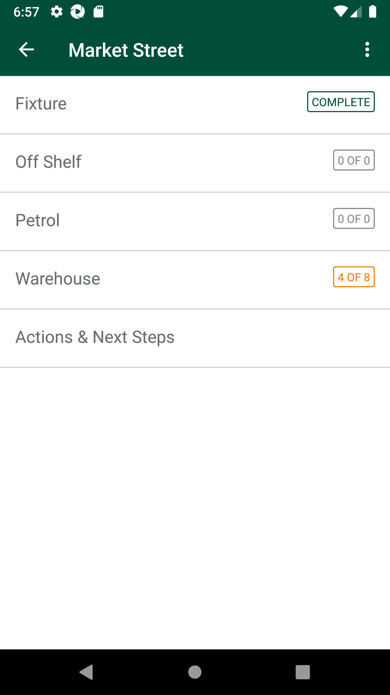
Then I click on History iconStep skippedThen I Select product on "200" History screenStep skippedThen I click on Edit buttonStep skippedAnd I add action and edit stock count as "26"Step skippedFailSC_22 To verify promoted item edit functionality after complete OffShelf location.When I enter Username and Password for SMA Collegue usercom.morrisons.common.action.Hook.afterScenario(io.cucumber.java.Scenario)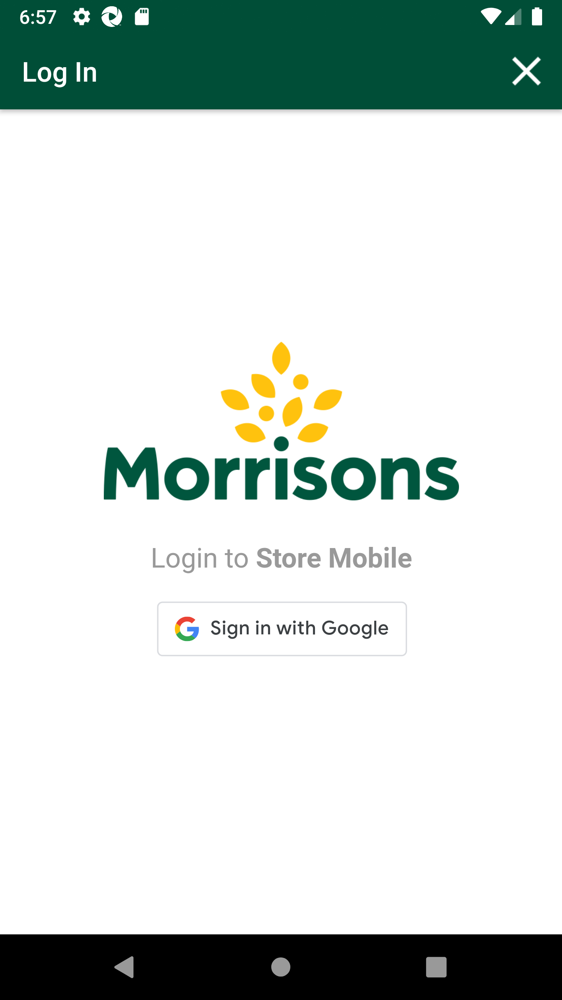
And I click on login button for SMAStep skippedThen I click on 'stockMngmtText' on page 'HomePagePO_New'Step skippedThen I click on "Prompted Counts" optionStep skippedThen I click on "Services" optionStep skippedThen I click on "Off Shelf" optionStep skippedAnd I verify History icon is displayedStep skippedThen I click on History iconStep skippedThen I Select product on "200" History screenStep skippedThen I click on Edit buttonStep skippedAnd I add action and edit stock count as "26"Step skippedFailSC_23 To verify prompted count with single item and 'Print and Place label' and 'Marchandising' actions, Print labels verification, Actions & Next step screen verification for Petrol.FailSC_23 To verify prompted count with single item and 'Print and Place label' and 'Marchandising' actions, Print labels verification, Actions & Next step screen verification for Petrol.When I enter Username and Password for SMA Collegue usercom.morrisons.common.action.Hook.afterScenario(io.cucumber.java.Scenario)And I click on login button for SMAStep skippedThen I click on 'stockMngmtText' on page 'HomePagePO_New'Step skippedThen I click on "Prompted Counts" optionStep skippedThen I click on "Fresh" optionStep skippedThen I click on "Petrol" optionStep skippedAnd I verify "Print and Place Shelf Edge Label" Action label is displayedStep skippedAnd I verify "Check Merchandising Plan" Action label is displayedStep skippedThen I click on "Print and Place Shelf Edge Label" Action labelStep skippedThen I click on "Check Merchandising Plan" Action labelStep skippedAnd I enter qty "31" and click on Confirm buttonStep skippedAnd I verify Request Label screen UIStep skippedAnd I verify "Medium White Label Bakery", "Medium White No Price Label" and "A4P Bakery POS" labels are displayedStep skippedThen I select Label sizeStep skippedAnd I click on Continue Button on Request label pageStep skippedAnd I click on Back Button in Prompted Counts screenStep skippedThen I click on "Actions & Next Steps" optionStep skippedAnd I click on Merchandising on Action & Next steps pageStep skippedThen I verify details on Merchandising screenStep skippedAnd I click on Back Button in Prompted Counts screenStep skippedThen I click on Print & Place Labels on Action & Next steps pageStep skippedAnd I verify Print & Place Labels screen is displayedStep skippedThen I verify details on Print & Place Labels screenStep skippedThen I click on Place labels buttonStep skippedThen I verify Place labels screen with Product details are displayedStep skippedFailSC_24 To verify prompted count with single item without action, Edit prompted count and history for Petrol.FailSC_24 To verify prompted count with single item without action, Edit prompted count and history for Petrol.When I enter Username and Password for SMA Collegue userAnd I click on login button for SMAThen I click on 'stockMngmtText' on page 'HomePagePO_New'Then I click on "Prompted Counts" optionThen I click on "Ambient & Frozen" optionThen I click on "Petrol" optionAnd I enter qty "30" and click on Confirm buttoncom.morrisons.common.action.Hook.afterScenario(io.cucumber.java.Scenario)And I click on History iconStep skippedThen I verify History screen is displayed with list of completed products with total countStep skippedAnd I Select product on "30" History screenStep skippedThen I click on Edit buttonStep skippedAnd I edit stock count with "320"Step skippedThen I verify the edited quantity "320" on history screenStep skippedFailSC_24 To verify prompted count with single item without action, Edit prompted count and history for Petrol.When I enter Username and Password for SMA Collegue userAnd I click on login button for SMAThen I click on 'stockMngmtText' on page 'HomePagePO_New'Then I click on "Prompted Counts" optionThen I click on "Fresh" optionThen I click on "Petrol" optionAnd I enter qty "30" and click on Confirm buttoncom.morrisons.common.action.Hook.afterScenario(io.cucumber.java.Scenario)And I click on History iconStep skippedThen I verify History screen is displayed with list of completed products with total countStep skippedAnd I Select product on "30" History screenStep skippedThen I click on Edit buttonStep skippedAnd I edit stock count with "320"Step skippedThen I verify the edited quantity "320" on history screenStep skippedFailSC_24 To verify prompted count with single item without action, Edit prompted count and history for Petrol.When I enter Username and Password for SMA Collegue usercom.morrisons.common.action.Hook.afterScenario(io.cucumber.java.Scenario)And I click on login button for SMAStep skippedThen I click on 'stockMngmtText' on page 'HomePagePO_New'Step skippedThen I click on "Prompted Counts" optionStep skippedThen I click on "Market Street" optionStep skippedThen I click on "Petrol" optionStep skippedAnd I enter qty "30" and click on Confirm buttonStep skippedAnd I click on History iconStep skippedThen I verify History screen is displayed with list of completed products with total countStep skippedAnd I Select product on "30" History screenStep skippedThen I click on Edit buttonStep skippedAnd I edit stock count with "320"Step skippedThen I verify the edited quantity "320" on history screenStep skippedFailSC_25 To verify flag with single item without action, Re-flag, Un-flag functionality, flagged item verification on other locations, edit flagged items in other location for Petrol.FailSC_25 To verify flag with single item without action, Re-flag, Un-flag functionality, flagged item verification on other locations, edit flagged items in other location for Petrol.When I enter Username and Password for SMA Collegue userAnd I click on login button for SMAThen I click on 'stockMngmtText' on page 'HomePagePO_New'Then I click on "Prompted Counts" optionThen I click on "Ambient & Frozen" optionThen I click on "Petrol" optionAnd I mark single product as flagAnd I verify flagged item from "Petrol" to "Warehouse" locationcom.morrisons.common.action.Hook.afterScenario(io.cucumber.java.Scenario)Then I click on Back Button in Prompted Counts screenStep skippedThen I click on "Petrol" optionStep skippedThen I click on History iconStep skippedAnd I re-flag the item with one actionStep skippedAnd I verify the added "One" aciton on history screen while flagStep skippedThen I click on Back Button in Prompted Counts screenStep skippedThen I unflag the item with qty "160" without any actionStep skippedAnd I verify the edited quantity "160" on history screenStep skippedAnd I click on Back Button in Prompted Counts screenStep skippedAnd I verify un-flagged item status with count in "Warehouse" locationStep skippedFailSC_25 To verify flag with single item without action, Re-flag, Un-flag functionality, flagged item verification on other locations, edit flagged items in other location for Petrol.When I enter Username and Password for SMA Collegue userAnd I click on login button for SMAThen I click on 'stockMngmtText' on page 'HomePagePO_New'Then I click on "Prompted Counts" optionThen I click on "Fresh" optionThen I click on "Petrol" optionAnd I mark single product as flagAnd I verify flagged item from "Petrol" to "Warehouse" locationcom.morrisons.common.action.Hook.afterScenario(io.cucumber.java.Scenario)Then I click on Back Button in Prompted Counts screenStep skippedThen I click on "Petrol" optionStep skippedThen I click on History iconStep skippedAnd I re-flag the item with one actionStep skippedAnd I verify the added "One" aciton on history screen while flagStep skippedThen I click on Back Button in Prompted Counts screenStep skippedThen I unflag the item with qty "160" without any actionStep skippedAnd I verify the edited quantity "160" on history screenStep skippedAnd I click on Back Button in Prompted Counts screenStep skippedAnd I verify un-flagged item status with count in "Warehouse" locationStep skippedFailSC_25 To verify flag with single item without action, Re-flag, Un-flag functionality, flagged item verification on other locations, edit flagged items in other location for Petrol.com.morrisons.common.action.Hook.smaBefore()When I enter Username and Password for SMA Collegue userStep skippedAnd I click on login button for SMAStep skippedThen I click on 'stockMngmtText' on page 'HomePagePO_New'Step skippedThen I click on "Prompted Counts" optionStep skippedThen I click on "Market Street" optionStep skippedThen I click on "Petrol" optionStep skippedAnd I mark single product as flagStep skippedAnd I verify flagged item from "Petrol" to "Warehouse" locationStep skippedThen I click on Back Button in Prompted Counts screenStep skippedThen I click on "Petrol" optionStep skippedThen I click on History iconStep skippedAnd I re-flag the item with one actionStep skippedAnd I verify the added "One" aciton on history screen while flagStep skippedThen I click on Back Button in Prompted Counts screenStep skippedThen I unflag the item with qty "160" without any actionStep skippedAnd I verify the edited quantity "160" on history screenStep skippedAnd I click on Back Button in Prompted Counts screenStep skippedAnd I verify un-flagged item status with count in "Warehouse" locationStep skippedFailSC_25 To verify flag with single item without action, Re-flag, Un-flag functionality, flagged item verification on other locations, edit flagged items in other location for Petrol.com.morrisons.common.action.Hook.smaBefore()When I enter Username and Password for SMA Collegue userStep skippedAnd I click on login button for SMAStep skippedThen I click on 'stockMngmtText' on page 'HomePagePO_New'Step skippedThen I click on "Prompted Counts" optionStep skippedThen I click on "Services" optionStep skippedThen I click on "Petrol" optionStep skippedAnd I mark single product as flagStep skippedAnd I verify flagged item from "Petrol" to "Warehouse" locationStep skippedThen I click on Back Button in Prompted Counts screenStep skippedThen I click on "Petrol" optionStep skippedThen I click on History iconStep skippedAnd I re-flag the item with one actionStep skippedAnd I verify the added "One" aciton on history screen while flagStep skippedThen I click on Back Button in Prompted Counts screenStep skippedThen I unflag the item with qty "160" without any actionStep skippedAnd I verify the edited quantity "160" on history screenStep skippedAnd I click on Back Button in Prompted Counts screenStep skippedAnd I verify un-flagged item status with count in "Warehouse" locationStep skippedFailSC_26 To verify complete all pending prompted items functionality, completion message verification, Review & Edit screen verification for Petrol location.FailSC_26 To verify complete all pending prompted items functionality, completion message verification, Review & Edit screen verification for Petrol location.com.morrisons.common.action.Hook.smaBefore()When I enter Username and Password for SMA Collegue userStep skippedAnd I click on login button for SMAStep skippedThen I click on 'stockMngmtText' on page 'HomePagePO_New'Step skippedThen I click on "Prompted Counts" optionStep skippedThen I click on "Ambient & Frozen" optionStep skippedThen I click on "Petrol" optionStep skippedAnd I verify Item list count is displayedStep skippedThen I enter qty "6" and click on Confirm button for all the productsStep skippedAnd I verify "You have completed Petrol checks for Ambient & Frozen" message is displayedStep skippedAnd I verify REVIEW & EDIT button is displayedStep skippedThen I click on REVIEW & EDIT buttonStep skippedAnd I verify History screen is displayed with list of completed products with total countStep skippedFailSC_26 To verify complete all pending prompted items functionality, completion message verification, Review & Edit screen verification for Petrol location.When I enter Username and Password for SMA Collegue userAnd I click on login button for SMAThen I click on 'stockMngmtText' on page 'HomePagePO_New'Then I click on "Prompted Counts" optionThen I click on "Fresh" optionThen I click on "Petrol" optionAnd I verify Item list count is displayedcom.morrisons.common.action.Hook.afterScenario(io.cucumber.java.Scenario)Then I enter qty "6" and click on Confirm button for all the productsStep skippedAnd I verify "You have completed Petrol checks for Fresh" message is displayedStep skippedAnd I verify REVIEW & EDIT button is displayedStep skippedThen I click on REVIEW & EDIT buttonStep skippedAnd I verify History screen is displayed with list of completed products with total countStep skippedFailSC_26 To verify complete all pending prompted items functionality, completion message verification, Review & Edit screen verification for Petrol location.When I enter Username and Password for SMA Collegue userAnd I click on login button for SMAThen I click on 'stockMngmtText' on page 'HomePagePO_New'Then I click on "Prompted Counts" optionThen I click on "Market Street" optionThen I click on "Petrol" optionAnd I verify Item list count is displayedcom.morrisons.common.action.Hook.afterScenario(io.cucumber.java.Scenario)Then I enter qty "6" and click on Confirm button for all the productsStep skippedAnd I verify "You have completed Petrol checks for Market Street" message is displayedStep skippedAnd I verify REVIEW & EDIT button is displayedStep skippedThen I click on REVIEW & EDIT buttonStep skippedAnd I verify History screen is displayed with list of completed products with total countStep skippedFailSC_26 To verify complete all pending prompted items functionality, completion message verification, Review & Edit screen verification for Petrol location.When I enter Username and Password for SMA Collegue userAnd I click on login button for SMAThen I click on 'stockMngmtText' on page 'HomePagePO_New'Then I click on "Prompted Counts" optionThen I click on "Services" optionThen I click on "Petrol" optionAnd I verify Item list count is displayedcom.morrisons.common.action.Hook.afterScenario(io.cucumber.java.Scenario)Then I enter qty "6" and click on Confirm button for all the productsStep skippedAnd I verify "You have completed Petrol checks for Services" message is displayedStep skippedAnd I verify REVIEW & EDIT button is displayedStep skippedThen I click on REVIEW & EDIT buttonStep skippedAnd I verify History screen is displayed with list of completed products with total countStep skippedFailSC_27 To verify promoted item edit functionality after complete Petrol location.FailSC_27 To verify promoted item edit functionality after complete Petrol location.When I enter Username and Password for SMA Collegue userAnd I click on login button for SMAThen I click on 'stockMngmtText' on page 'HomePagePO_New'Then I click on "Prompted Counts" optionThen I click on "Ambient & Frozen" optionThen I click on "Petrol" optionAnd I verify History icon is displayedcom.morrisons.common.action.Hook.afterScenario(io.cucumber.java.Scenario)Then I click on History iconStep skippedThen I Select product on "6" History screenStep skippedThen I click on Edit buttonStep skippedAnd I add action and edit stock count as "60"Step skippedFailSC_27 To verify promoted item edit functionality after complete Petrol location.When I enter Username and Password for SMA Collegue userAnd I click on login button for SMAThen I click on 'stockMngmtText' on page 'HomePagePO_New'Then I click on "Prompted Counts" optionThen I click on "Fresh" optionThen I click on "Petrol" optionAnd I verify History icon is displayedcom.morrisons.common.action.Hook.afterScenario(io.cucumber.java.Scenario)Then I click on History iconStep skippedThen I Select product on "6" History screenStep skippedThen I click on Edit buttonStep skippedAnd I add action and edit stock count as "60"Step skippedFailSC_27 To verify promoted item edit functionality after complete Petrol location.When I enter Username and Password for SMA Collegue userAnd I click on login button for SMAThen I click on 'stockMngmtText' on page 'HomePagePO_New'Then I click on "Prompted Counts" optionThen I click on "Market Street" optionThen I click on "Petrol" optionAnd I verify History icon is displayedcom.morrisons.common.action.Hook.afterScenario(io.cucumber.java.Scenario)Then I click on History iconStep skippedThen I Select product on "6" History screenStep skippedThen I click on Edit buttonStep skippedAnd I add action and edit stock count as "60"Step skippedFailSC_27 To verify promoted item edit functionality after complete Petrol location.When I enter Username and Password for SMA Collegue userAnd I click on login button for SMAThen I click on 'stockMngmtText' on page 'HomePagePO_New'Then I click on "Prompted Counts" optionThen I click on "Services" optionThen I click on "Petrol" optionAnd I verify History icon is displayedcom.morrisons.common.action.Hook.afterScenario(io.cucumber.java.Scenario)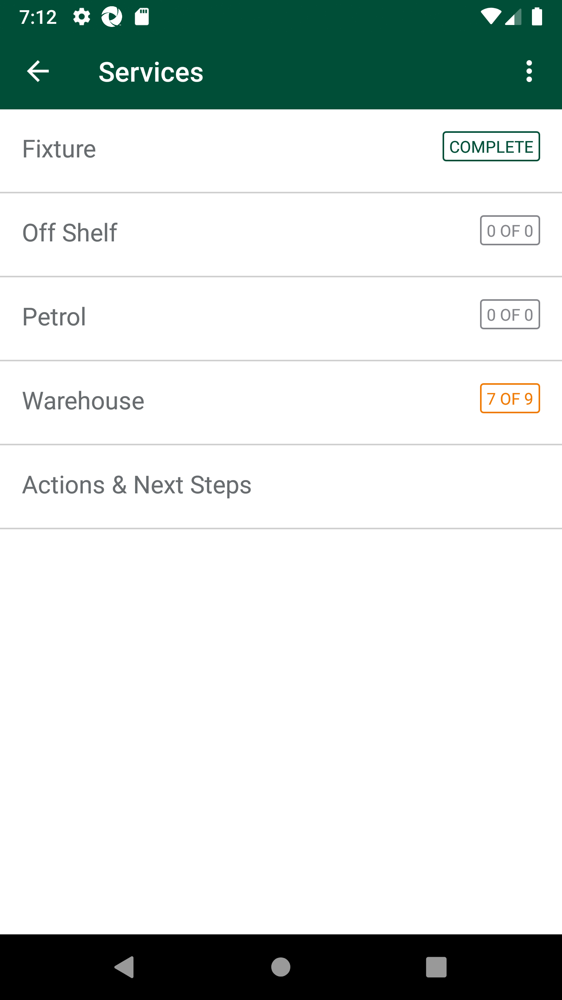
Then I click on History iconStep skippedThen I Select product on "6" History screenStep skippedThen I click on Edit buttonStep skippedAnd I add action and edit stock count as "60"Step skippedFailSC_28 To verify prompted count with single item, Edit prompted count and history screen verification for Warehouse.FailSC_28 To verify prompted count with single item, Edit prompted count and history screen verification for Warehouse.When I enter Username and Password for SMA Collegue userAnd I click on login button for SMAThen I click on 'stockMngmtText' on page 'HomePagePO_New'Then I click on "Prompted Counts" optionThen I click on "Ambient & Frozen" optionThen I click on "Warehouse" optionAnd I enter qty "40" and click on Confirm buttoncom.morrisons.common.action.Hook.afterScenario(io.cucumber.java.Scenario)And I click on History iconStep skippedThen I verify History screen is displayed with list of completed products with total countStep skippedAnd I Select product on "40" History screenStep skippedThen I click on Edit buttonStep skippedAnd I edit stock count with "80"Step skippedThen I verify the edited quantity "80" on history screenStep skippedFailSC_28 To verify prompted count with single item, Edit prompted count and history screen verification for Warehouse.When I enter Username and Password for SMA Collegue userAnd I click on login button for SMAThen I click on 'stockMngmtText' on page 'HomePagePO_New'Then I click on "Prompted Counts" optionThen I click on "Fresh" optionThen I click on "Warehouse" optionAnd I enter qty "40" and click on Confirm buttoncom.morrisons.common.action.Hook.afterScenario(io.cucumber.java.Scenario)And I click on History iconStep skippedThen I verify History screen is displayed with list of completed products with total countStep skippedAnd I Select product on "40" History screenStep skippedThen I click on Edit buttonStep skippedAnd I edit stock count with "80"Step skippedThen I verify the edited quantity "80" on history screenStep skippedFailSC_28 To verify prompted count with single item, Edit prompted count and history screen verification for Warehouse.When I enter Username and Password for SMA Collegue userAnd I click on login button for SMAThen I click on 'stockMngmtText' on page 'HomePagePO_New'Then I click on "Prompted Counts" optionThen I click on "Market Street" optionThen I click on "Warehouse" optionAnd I enter qty "40" and click on Confirm buttonAnd I click on History iconcom.morrisons.common.action.Hook.afterScenario(io.cucumber.java.Scenario)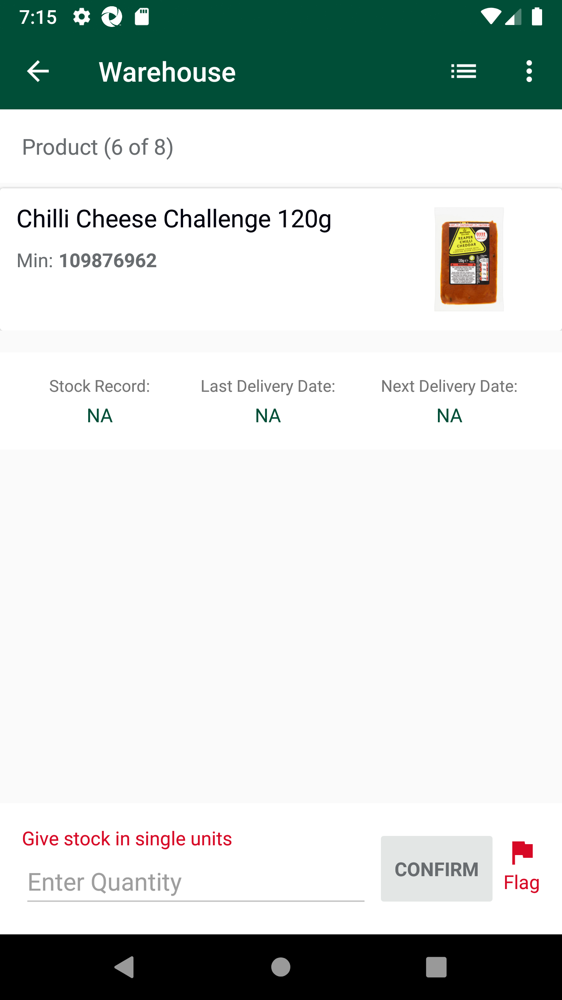
Then I verify History screen is displayed with list of completed products with total countStep skippedAnd I Select product on "40" History screenStep skippedThen I click on Edit buttonStep skippedAnd I edit stock count with "80"Step skippedThen I verify the edited quantity "80" on history screenStep skippedFailSC_28 To verify prompted count with single item, Edit prompted count and history screen verification for Warehouse.When I enter Username and Password for SMA Collegue userAnd I click on login button for SMAThen I click on 'stockMngmtText' on page 'HomePagePO_New'Then I click on "Prompted Counts" optionThen I click on "Services" optionThen I click on "Warehouse" optionAnd I enter qty "40" and click on Confirm buttonAnd I click on History iconcom.morrisons.common.action.Hook.afterScenario(io.cucumber.java.Scenario)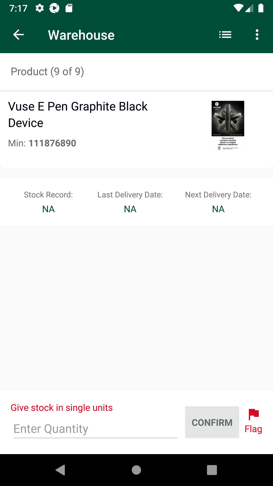
Then I verify History screen is displayed with list of completed products with total countStep skippedAnd I Select product on "40" History screenStep skippedThen I click on Edit buttonStep skippedAnd I edit stock count with "80"Step skippedThen I verify the edited quantity "80" on history screenStep skippedFailSC_29 To verify complete all pending prompted items functionality, completion message verification, Review & Edit screen verification for Warehouse.FailSC_29 To verify complete all pending prompted items functionality, completion message verification, Review & Edit screen verification for Warehouse.When I enter Username and Password for SMA Collegue userAnd I click on login button for SMAThen I click on 'stockMngmtText' on page 'HomePagePO_New'Then I click on "Prompted Counts" optionThen I click on "Ambient & Frozen" optionThen I click on "Warehouse" optionAnd I verify Item list count is displayedcom.morrisons.common.action.Hook.afterScenario(io.cucumber.java.Scenario)Then I verify details on Warehouse screenStep skippedThen I enter qty "70" and click on Confirm button for all the productsStep skippedAnd I verify "You have completed Warehouse checks for Ambient & Frozen" message is displayedStep skippedAnd I verify REVIEW & EDIT button is displayedStep skippedThen I click on REVIEW & EDIT buttonStep skippedAnd I click on Back Button in Prompted Counts screenStep skippedAnd I click on Back Button in Prompted Counts screenStep skippedAnd I verify option "Warehouse" with "COMPLETE" statusStep skippedAnd I click on Back Button in Prompted Counts screenStep skippedThen I verify "Ambient & Frozen" with "ACTION" statusStep skippedFailSC_29 To verify complete all pending prompted items functionality, completion message verification, Review & Edit screen verification for Warehouse.When I enter Username and Password for SMA Collegue userAnd I click on login button for SMAThen I click on 'stockMngmtText' on page 'HomePagePO_New'Then I click on "Prompted Counts" optionThen I click on "Fresh" optionThen I click on "Warehouse" optionAnd I verify Item list count is displayedcom.morrisons.common.action.Hook.afterScenario(io.cucumber.java.Scenario)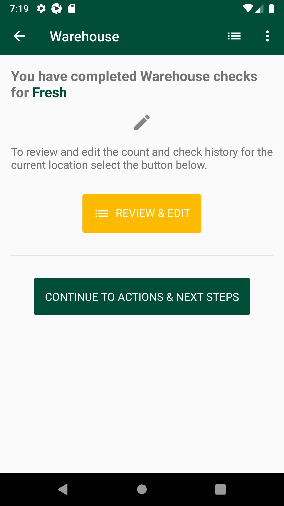
Then I verify details on Warehouse screenStep skippedThen I enter qty "70" and click on Confirm button for all the productsStep skippedAnd I verify "You have completed Warehouse checks for Fresh" message is displayedStep skippedAnd I verify REVIEW & EDIT button is displayedStep skippedThen I click on REVIEW & EDIT buttonStep skippedAnd I click on Back Button in Prompted Counts screenStep skippedAnd I click on Back Button in Prompted Counts screenStep skippedAnd I verify option "Warehouse" with "COMPLETE" statusStep skippedAnd I click on Back Button in Prompted Counts screenStep skippedThen I verify "Fresh" with "ACTION" statusStep skippedPassSC_29 To verify complete all pending prompted items functionality, completion message verification, Review & Edit screen verification for Warehouse.When I enter Username and Password for SMA Collegue userAnd I click on login button for SMAThen I click on 'stockMngmtText' on page 'HomePagePO_New'Then I click on "Prompted Counts" optionThen I click on "Market Street" optionThen I click on "Warehouse" optionAnd I verify Item list count is displayedThen I verify details on Warehouse screenThen I enter qty "70" and click on Confirm button for all the productsAnd I verify "You have completed Warehouse checks for Market Street" message is displayedAnd I verify REVIEW & EDIT button is displayedThen I click on REVIEW & EDIT buttonAnd I click on Back Button in Prompted Counts screenAnd I click on Back Button in Prompted Counts screenAnd I verify option "Warehouse" with "COMPLETE" statusAnd I click on Back Button in Prompted Counts screenThen I verify "Market Street" with "ACTION" statusPassSC_29 To verify complete all pending prompted items functionality, completion message verification, Review & Edit screen verification for Warehouse.When I enter Username and Password for SMA Collegue userAnd I click on login button for SMAThen I click on 'stockMngmtText' on page 'HomePagePO_New'Then I click on "Prompted Counts" optionThen I click on "Services" optionThen I click on "Warehouse" optionAnd I verify Item list count is displayedThen I verify details on Warehouse screenThen I enter qty "70" and click on Confirm button for all the productsAnd I verify "You have completed Warehouse checks for Services" message is displayedAnd I verify REVIEW & EDIT button is displayedThen I click on REVIEW & EDIT buttonAnd I click on Back Button in Prompted Counts screenAnd I click on Back Button in Prompted Counts screenAnd I verify option "Warehouse" with "COMPLETE" statusAnd I click on Back Button in Prompted Counts screenThen I verify "Services" with "ACTION" statusFailSC_30 To verify promoted item edit functionality after complete Warehouse location.FailSC_30 To verify promoted item edit functionality after complete Warehouse location.When I enter Username and Password for SMA Collegue userAnd I click on login button for SMAThen I click on 'stockMngmtText' on page 'HomePagePO_New'Then I click on "Prompted Counts" optionThen I click on "Ambient & Frozen" optionThen I click on "Warehouse" optionAnd I verify History icon is displayedcom.morrisons.common.action.Hook.afterScenario(io.cucumber.java.Scenario)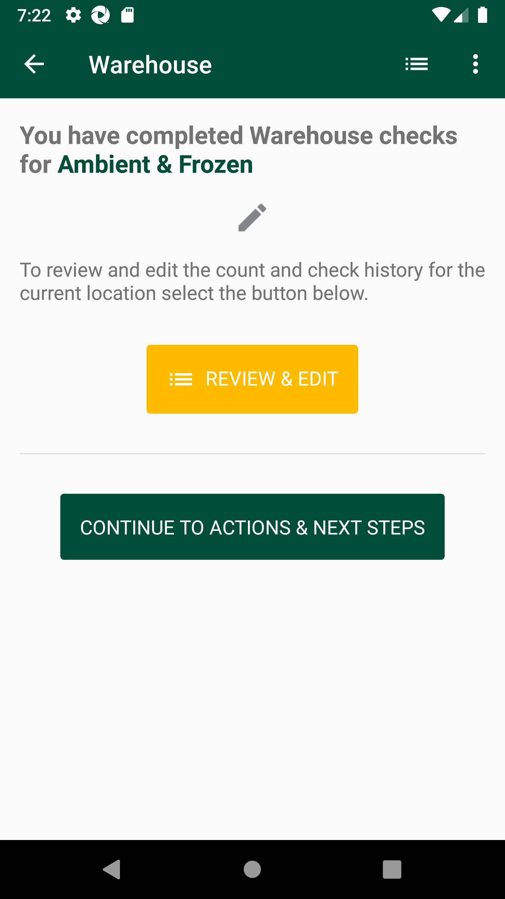
Then I click on History iconStep skippedThen I Select product on "70" History screenStep skippedThen I verify Edit button is displayedStep skippedThen I click on Edit buttonStep skippedAnd I add action and edit stock count as "7"Step skippedFailSC_30 To verify promoted item edit functionality after complete Warehouse location.When I enter Username and Password for SMA Collegue userAnd I click on login button for SMAThen I click on 'stockMngmtText' on page 'HomePagePO_New'Then I click on "Prompted Counts" optionThen I click on "Fresh" optionThen I click on "Warehouse" optionAnd I verify History icon is displayedcom.morrisons.common.action.Hook.afterScenario(io.cucumber.java.Scenario)Then I click on History iconStep skippedThen I Select product on "70" History screenStep skippedThen I verify Edit button is displayedStep skippedThen I click on Edit buttonStep skippedAnd I add action and edit stock count as "7"Step skippedFailSC_30 To verify promoted item edit functionality after complete Warehouse location.When I enter Username and Password for SMA Collegue userAnd I click on login button for SMAThen I click on 'stockMngmtText' on page 'HomePagePO_New'Then I click on "Prompted Counts" optionThen I click on "Market Street" optionThen I click on "Warehouse" optionAnd I verify History icon is displayedcom.morrisons.common.action.Hook.afterScenario(io.cucumber.java.Scenario)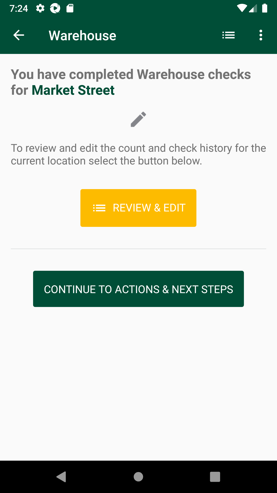
Then I click on History iconStep skippedThen I Select product on "70" History screenStep skippedThen I verify Edit button is displayedStep skippedThen I click on Edit buttonStep skippedAnd I add action and edit stock count as "7"Step skippedFailSC_30 To verify promoted item edit functionality after complete Warehouse location.When I enter Username and Password for SMA Collegue userAnd I click on login button for SMAThen I click on 'stockMngmtText' on page 'HomePagePO_New'Then I click on "Prompted Counts" optionThen I click on "Services" optionThen I click on "Warehouse" optionAnd I verify History icon is displayedcom.morrisons.common.action.Hook.afterScenario(io.cucumber.java.Scenario)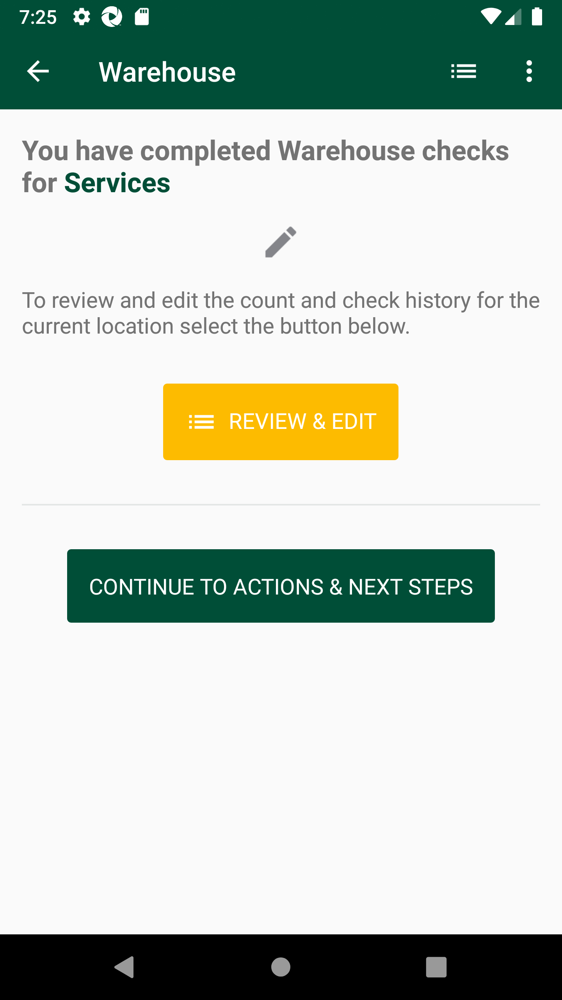
Then I click on History iconStep skippedThen I Select product on "70" History screenStep skippedThen I verify Edit button is displayedStep skippedThen I click on Edit buttonStep skippedAnd I add action and edit stock count as "7"Step skippedFailSC_31 To verify complete pending actions functionality on Action & Next Step for all departments.FailSC_31 To verify complete pending actions functionality on Action & Next Step for all departments.When I enter Username and Password for SMA Collegue userAnd I click on login button for SMAThen I click on 'stockMngmtText' on page 'HomePagePO_New'Then I click on "Prompted Counts" optionThen I click on "Ambient & Frozen" optionThen I click on "Actions & Next Steps" optionAnd I click on Merchandising on Action & Next steps pageThen I click on the Confirm Buttoncom.morrisons.common.action.Hook.afterScenario(io.cucumber.java.Scenario)Then I click on Print & Place Labels on Action & Next steps pageStep skippedAnd I verify Print & Place Labels screen is displayedStep skippedThen I click on Place labels buttonStep skippedThen I click on Confirm button for all productsStep skippedAnd I verify "Merchandising" action status with "Complete" on Action & Next StepsStep skippedAnd I verify "Print & Place Labels" action status with "Complete" on Action & Next StepsStep skippedFailSC_31 To verify complete pending actions functionality on Action & Next Step for all departments.When I enter Username and Password for SMA Collegue userAnd I click on login button for SMAThen I click on 'stockMngmtText' on page 'HomePagePO_New'Then I click on "Prompted Counts" optionThen I click on "Fresh" optionThen I click on "Actions & Next Steps" optionAnd I click on Merchandising on Action & Next steps pageThen I click on the Confirm Buttoncom.morrisons.common.action.Hook.afterScenario(io.cucumber.java.Scenario)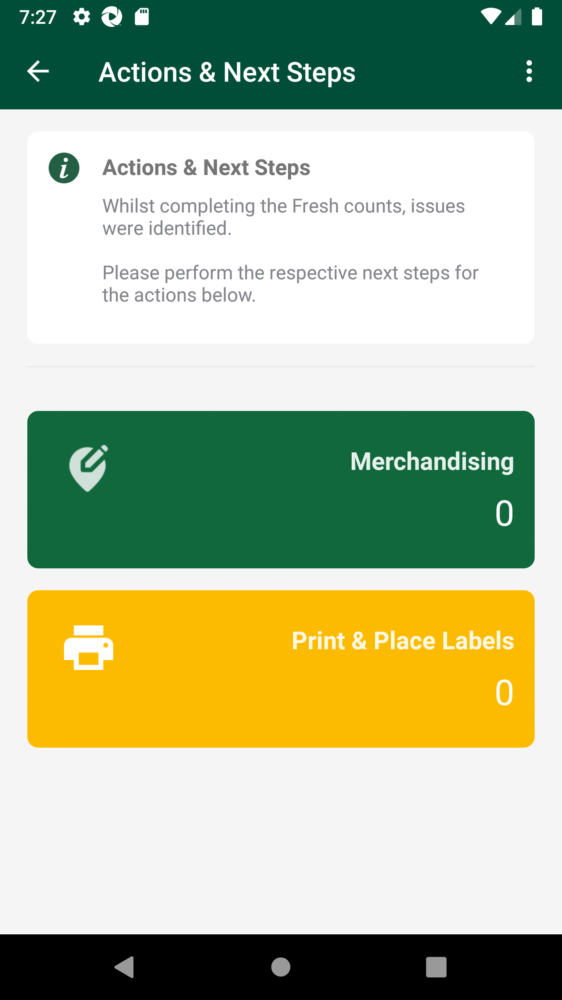
Then I click on Print & Place Labels on Action & Next steps pageStep skippedAnd I verify Print & Place Labels screen is displayedStep skippedThen I click on Place labels buttonStep skippedThen I click on Confirm button for all productsStep skippedAnd I verify "Merchandising" action status with "Complete" on Action & Next StepsStep skippedAnd I verify "Print & Place Labels" action status with "Complete" on Action & Next StepsStep skippedFailSC_31 To verify complete pending actions functionality on Action & Next Step for all departments.When I enter Username and Password for SMA Collegue userAnd I click on login button for SMAThen I click on 'stockMngmtText' on page 'HomePagePO_New'Then I click on "Prompted Counts" optionThen I click on "Market Street" optionThen I click on "Actions & Next Steps" optionAnd I click on Merchandising on Action & Next steps pageThen I click on the Confirm ButtonThen I click on Print & Place Labels on Action & Next steps pageAnd I verify Print & Place Labels screen is displayedThen I click on Place labels buttonThen I click on Confirm button for all productsAnd I verify "Merchandising" action status with "Complete" on Action & Next Stepscom.morrisons.common.action.Hook.afterScenario(io.cucumber.java.Scenario)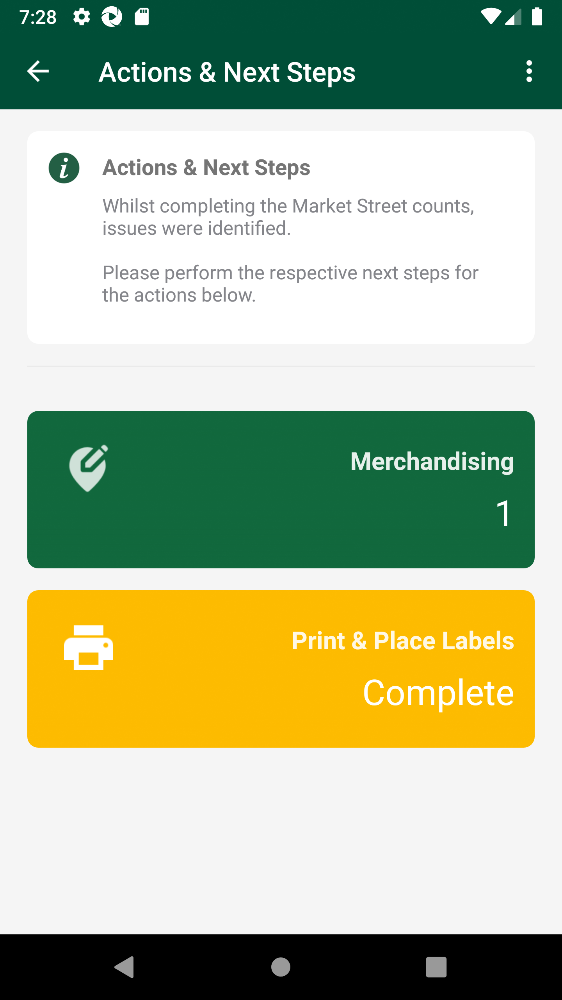
And I verify "Print & Place Labels" action status with "Complete" on Action & Next StepsStep skippedPassSC_31 To verify complete pending actions functionality on Action & Next Step for all departments.When I enter Username and Password for SMA Collegue userAnd I click on login button for SMAThen I click on 'stockMngmtText' on page 'HomePagePO_New'Then I click on "Prompted Counts" optionThen I click on "Services" optionThen I click on "Actions & Next Steps" optionAnd I click on Merchandising on Action & Next steps pageThen I click on the Confirm ButtonThen I click on Print & Place Labels on Action & Next steps pageAnd I verify Print & Place Labels screen is displayedThen I click on Place labels buttonThen I click on Confirm button for all productsAnd I verify "Merchandising" action status with "Complete" on Action & Next StepsAnd I verify "Print & Place Labels" action status with "Complete" on Action & Next StepsPassSC_32 To verify Summary screen, Total approval screen with pending items list for approvals for all departments.PassSC_32 To verify Summary screen, Total approval screen with pending items list for approvals for all departments.When I enter Username and Password for SMA Collegue userAnd I click on login button for SMAThen I click on 'stockMngmtText' on page 'HomePagePO_New'And I click on "Prompted Counts" optionAnd I click on "Summary" optionAnd I verify Summary screen UIFailSC_33 To verify Summary screen edit count functinality , Total approval screen with pending items list for approvals for all departments.FailSC_33 To verify Summary screen edit count functinality , Total approval screen with pending items list for approvals for all departments.When I enter Username and Password for SMA Collegue userAnd I click on login button for SMAThen I click on 'stockMngmtText' on page 'HomePagePO_New'Then I click on "Prompted Counts" optionThen I click on "Summary" optionAnd I click on "Ambient & Frozen" optionAnd I edit "5" to existing prompted itemcom.morrisons.common.action.Hook.afterScenario(io.cucumber.java.Scenario)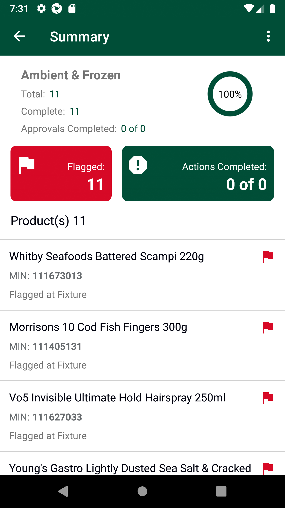
And I click on Back Button in Prompted Counts screenStep skippedAnd Verify the updated quantityStep skippedAnd I click on Back Button in Prompted Counts screenStep skippedPassSC_34 To verify Summary screen, Total approval screen with pending items list for approvals for all departments.PassSC_34 To verify Summary screen, Total approval screen with pending items list for approvals for all departments.When I enter Username and Password for SMA Collegue userAnd I click on login button for SMAThen I click on 'stockMngmtText' on page 'HomePagePO_New'Then I click on "Prompted Counts" optionThen I click on "Summary" optionAnd I verify Summary screen UIAnd I view and click on Button "Total Approvals"And I verify Department list of outstanding count is displayedFailSC_35 To verify edit count functionality before manager approval on Summary-Total approvals screen.FailSC_35 To verify edit count functionality before manager approval on Summary-Total approvals screen.When I enter Username and Password for SMA Manager userAnd I click on login button for SMAThen I click on 'stockMngmtText' on page 'HomePagePO_New'Then I click on "Prompted Counts" optionThen I click on "Summary" optionAnd I view and click on Button "Total Approvals"Then I click on "Ambient & Frozen"com.morrisons.common.action.Hook.afterScenario(io.cucumber.java.Scenario)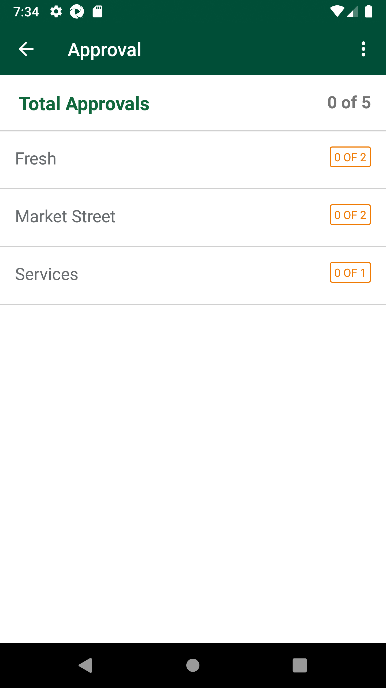
And I verify item which need manager approvalsStep skippedAnd I edit count of any "Ambient & Frozen" before approvalStep skippedFailSC_36 To verify Item Approve functionality for pending items on Summary-Total approvals screen.FailSC_36 To verify Item Approve functionality for pending items on Summary-Total approvals screen.When I enter Username and Password for SMA Manager userAnd I click on login button for SMAThen I click on 'stockMngmtText' on page 'HomePagePO_New'Then I click on "Prompted Counts" optionThen I click on "Summary" optionAnd I view and click on Button "Total Approvals"Then I click on "Fresh"And I verify item which need manager approvalsAnd I select and Approve prompted item from listcom.morrisons.common.action.Hook.afterScenario(io.cucumber.java.Scenario)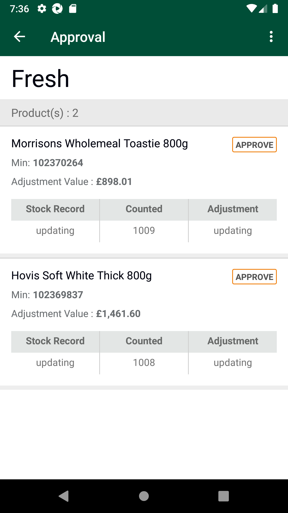
FailSC_37 To verify Approve items functionality Summary-Total approvals screen.FailSC_37 To verify Approve items functionality Summary-Total approvals screen.When I enter Username and Password for SMA Collegue userAnd I click on login button for SMAThen I click on 'stockMngmtText' on page 'HomePagePO_New'Then I click on "Prompted Counts" optionThen I click on "Summary" optionAnd I view and click on Button "Total Approvals"Then I click on "Fresh"And I verify approved items displayedcom.morrisons.common.action.Hook.afterScenario(io.cucumber.java.Scenario)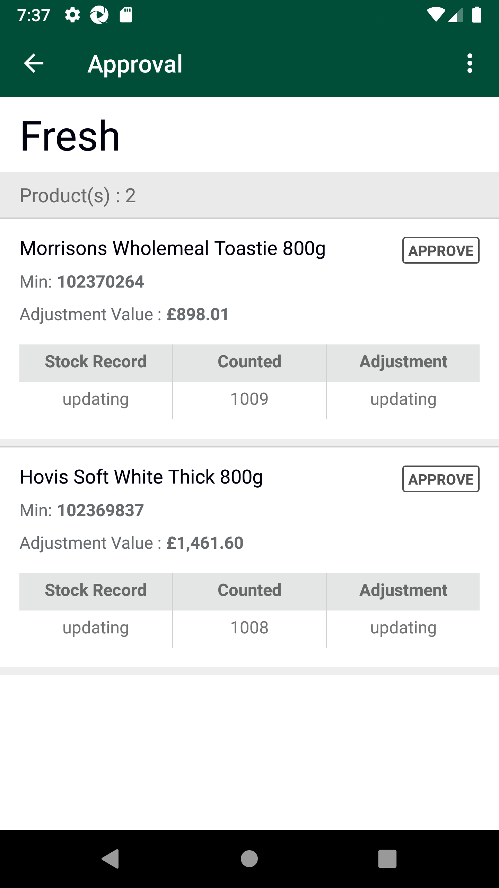
PassSC_38 To verify Summary-Total approvals screen after deadline time 09:45 AM.PassSC_38 To verify Summary-Total approvals screen after deadline time 09:45 AM.When I enter Username and Password for SMA Manager userAnd I click on login button for SMAThen I click on 'stockMngmtText' on page 'HomePagePO_New'Then I click on "Prompted Counts" optionThen I click on "Summary" optionAnd I view and click on Button "Total Approvals"Then I click on "Market Street"And I verify item details display in View ModePassSC_39 Verify Summary Card details for Department_Location department level reviewPassSC_39 Verify Summary Card details for Department_Location department level reviewWhen I enter Username and Password for SMA Collegue userAnd I click on login button for SMAThen I click on 'stockMngmtText' on page 'HomePagePO_New'Then I click on "Prompted Counts" optionThen I click on "Summary" optionThen I select Summary Card for "Fresh"And I verify all the list of products with Total count at the top of the screen
-
org.openqa.selenium.NoSuchElementException
121 tests
org.openqa.selenium.NoSuchElementException
121 failedStatus Timestamp TestName Fail 15:15:01 PM And I verify option "Fixture" with "0" status Verify Prompted Count functionality..SC_01 To verify available Departments and all locations with default status.And I verify option "Fixture" with "0" statusFail 15:16:02 PM And I verify option "Fixture" with "0" status Verify Prompted Count functionality..SC_01 To verify available Departments and all locations with default status.And I verify option "Fixture" with "0" statusFail 15:17:02 PM And I verify option "Fixture" with "0" status Verify Prompted Count functionality..SC_01 To verify available Departments and all locations with default status.And I verify option "Fixture" with "0" statusFail 15:18:04 PM And I verify option "Fixture" with "0" status Verify Prompted Count functionality..SC_01 To verify available Departments and all locations with default status.And I verify option "Fixture" with "0" statusFail 15:19:06 PM And I Verify Prompt "Fixture location has not been completed." is displayed at "Off Shelf" Verify Prompted Count functionality..SC_02 To verify one prompt item and 'location not completed' message, for OffShelf location with 'CONTINUE TO FIXTURE' button navigation..And I Verify Prompt "Fixture location has not been completed." is displayed at "Off Shelf"Fail 15:20:06 PM And I Verify Prompt "Fixture location has not been completed." is displayed at "Off Shelf" Verify Prompted Count functionality..SC_02 To verify one prompt item and 'location not completed' message, for OffShelf location with 'CONTINUE TO FIXTURE' button navigation..And I Verify Prompt "Fixture location has not been completed." is displayed at "Off Shelf"Fail 15:21:05 PM And I Verify Prompt "Fixture location has not been completed." is displayed at "Off Shelf" Verify Prompted Count functionality..SC_02 To verify one prompt item and 'location not completed' message, for OffShelf location with 'CONTINUE TO FIXTURE' button navigation..And I Verify Prompt "Fixture location has not been completed." is displayed at "Off Shelf"Fail 15:22:05 PM And I Verify Prompt "Fixture location has not been completed." is displayed at "Off Shelf" Verify Prompted Count functionality..SC_02 To verify one prompt item and 'location not completed' message, for OffShelf location with 'CONTINUE TO FIXTURE' button navigation..And I Verify Prompt "Fixture location has not been completed." is displayed at "Off Shelf"Fail 15:23:04 PM And I Verify Prompt "Fixture and Off Shelf locations have not been completed." is displayed at "Petrol" Verify Prompted Count functionality..SC_03 To verify 'location not completed' message with 'CONTINUE TO FIXTURE' button navigation for Petrol location.And I Verify Prompt "Fixture and Off Shelf locations have not been completed." is displayed at "Petrol"Fail 15:24:05 PM And I Verify Prompt "Fixture and Off Shelf locations have not been completed." is displayed at "Petrol" Verify Prompted Count functionality..SC_03 To verify 'location not completed' message with 'CONTINUE TO FIXTURE' button navigation for Petrol location.And I Verify Prompt "Fixture and Off Shelf locations have not been completed." is displayed at "Petrol"Fail 15:25:06 PM And I Verify Prompt "Fixture and Off Shelf locations have not been completed." is displayed at "Petrol" Verify Prompted Count functionality..SC_03 To verify 'location not completed' message with 'CONTINUE TO FIXTURE' button navigation for Petrol location.And I Verify Prompt "Fixture and Off Shelf locations have not been completed." is displayed at "Petrol"Fail 15:26:08 PM And I Verify Prompt "Fixture and Off Shelf locations have not been completed." is displayed at "Petrol" Verify Prompted Count functionality..SC_03 To verify 'location not completed' message with 'CONTINUE TO FIXTURE' button navigation for Petrol location.And I Verify Prompt "Fixture and Off Shelf locations have not been completed." is displayed at "Petrol"Fail 15:27:09 PM And I Verify Prompt "Fixture location has not been completed." is displayed at "Warehouse" Verify Prompted Count functionality..SC_04 To Verify 'location not completed' message with 'CONTINUE TO FIXTURE' button navigation for Warehouse location.And I Verify Prompt "Fixture location has not been completed." is displayed at "Warehouse"Fail 15:28:08 PM And I Verify Prompt "Fixture location has not been completed." is displayed at "Warehouse" Verify Prompted Count functionality..SC_04 To Verify 'location not completed' message with 'CONTINUE TO FIXTURE' button navigation for Warehouse location.And I Verify Prompt "Fixture location has not been completed." is displayed at "Warehouse"Fail 15:29:07 PM And I Verify Prompt "Fixture and Off Shelf locations have not been completed." is displayed at "Warehouse" Verify Prompted Count functionality..SC_04 To Verify 'location not completed' message with 'CONTINUE TO FIXTURE' button navigation for Warehouse location.And I Verify Prompt "Fixture and Off Shelf locations have not been completed." is displayed at "Warehouse"Fail 15:30:07 PM And I Verify Prompt "Fixture and Off Shelf locations have not been completed." is displayed at "Warehouse" Verify Prompted Count functionality..SC_04 To Verify 'location not completed' message with 'CONTINUE TO FIXTURE' button navigation for Warehouse location.And I Verify Prompt "Fixture and Off Shelf locations have not been completed." is displayed at "Warehouse"Fail 15:31:13 PM Then I click on icon "Show List" Verify Prompted Count functionality..SC_05 To verify history screen with 'No Item Available' msg for, Fixture, Offshelf, Petrol and Warehouse for all deparments..Then I click on icon "Show List"Fail 15:32:15 PM Then I click on icon "Show List" Verify Prompted Count functionality..SC_05 To verify history screen with 'No Item Available' msg for, Fixture, Offshelf, Petrol and Warehouse for all deparments..Then I click on icon "Show List"Fail 15:33:17 PM Then I click on icon "Show List" Verify Prompted Count functionality..SC_05 To verify history screen with 'No Item Available' msg for, Fixture, Offshelf, Petrol and Warehouse for all deparments..Then I click on icon "Show List"Fail 15:34:19 PM Then I click on icon "Show List" Verify Prompted Count functionality..SC_05 To verify history screen with 'No Item Available' msg for, Fixture, Offshelf, Petrol and Warehouse for all deparments..Then I click on icon "Show List"Fail 15:35:20 PM Then I click on icon "Show List" Verify Prompted Count functionality..SC_05 To verify history screen with 'No Item Available' msg for, Fixture, Offshelf, Petrol and Warehouse for all deparments..Then I click on icon "Show List"Fail 15:36:34 PM Then I click on icon "Show List" Verify Prompted Count functionality..SC_05 To verify history screen with 'No Item Available' msg for, Fixture, Offshelf, Petrol and Warehouse for all deparments..Then I click on icon "Show List"Fail 15:37:40 PM Then I click on icon "Show List" Verify Prompted Count functionality..SC_05 To verify history screen with 'No Item Available' msg for, Fixture, Offshelf, Petrol and Warehouse for all deparments..Then I click on icon "Show List"Fail 15:38:44 PM Then I click on icon "Show List" Verify Prompted Count functionality..SC_05 To verify history screen with 'No Item Available' msg for, Fixture, Offshelf, Petrol and Warehouse for all deparments..Then I click on icon "Show List"Fail 15:39:47 PM Then I click on icon "Show List" Verify Prompted Count functionality..SC_05 To verify history screen with 'No Item Available' msg for, Fixture, Offshelf, Petrol and Warehouse for all deparments..Then I click on icon "Show List"Fail 15:40:50 PM Then I click on icon "Show List" Verify Prompted Count functionality..SC_05 To verify history screen with 'No Item Available' msg for, Fixture, Offshelf, Petrol and Warehouse for all deparments..Then I click on icon "Show List"Fail 15:41:51 PM Then I click on icon "Show List" Verify Prompted Count functionality..SC_05 To verify history screen with 'No Item Available' msg for, Fixture, Offshelf, Petrol and Warehouse for all deparments..Then I click on icon "Show List"Fail 15:42:52 PM Then I click on icon "Show List" Verify Prompted Count functionality..SC_05 To verify history screen with 'No Item Available' msg for, Fixture, Offshelf, Petrol and Warehouse for all deparments..Then I click on icon "Show List"Fail 15:43:52 PM Then I click on icon "Show List" Verify Prompted Count functionality..SC_05 To verify history screen with 'No Item Available' msg for, Fixture, Offshelf, Petrol and Warehouse for all deparments..Then I click on icon "Show List"Fail 15:44:55 PM Then I click on icon "Show List" Verify Prompted Count functionality..SC_05 To verify history screen with 'No Item Available' msg for, Fixture, Offshelf, Petrol and Warehouse for all deparments..Then I click on icon "Show List"Fail 15:45:57 PM Then I click on icon "Show List" Verify Prompted Count functionality..SC_05 To verify history screen with 'No Item Available' msg for, Fixture, Offshelf, Petrol and Warehouse for all deparments..Then I click on icon "Show List"Fail 15:47:22 PM Then I click on icon "Show List" Verify Prompted Count functionality..SC_05 To verify history screen with 'No Item Available' msg for, Fixture, Offshelf, Petrol and Warehouse for all deparments..Then I click on icon "Show List"Fail 15:54:03 PM And I verify "Deadline Reminder" alert title is displayed Verify Prompted Count functionality..SC_07 To Verify Deadline Reminder prompt before half an hour at 09:16 AM for all Departments and their location..And I verify "Deadline Reminder" alert title is displayedFail 15:55:09 PM And I verify "Deadline Reminder" alert title is displayed Verify Prompted Count functionality..SC_07 To Verify Deadline Reminder prompt before half an hour at 09:16 AM for all Departments and their location..And I verify "Deadline Reminder" alert title is displayedFail 15:58:18 PM And I verify "Deadline Reminder" alert title is displayed Verify Prompted Count functionality..SC_07 To Verify Deadline Reminder prompt before half an hour at 09:16 AM for all Departments and their location..And I verify "Deadline Reminder" alert title is displayedFail 15:59:17 PM And I verify "Deadline Reminder" alert title is displayed Verify Prompted Count functionality..SC_07 To Verify Deadline Reminder prompt before half an hour at 09:16 AM for all Departments and their location..And I verify "Deadline Reminder" alert title is displayedFail 16:02:17 PM And I verify "Deadline Reminder" alert title is displayed Verify Prompted Count functionality..SC_07 To Verify Deadline Reminder prompt before half an hour at 09:16 AM for all Departments and their location..And I verify "Deadline Reminder" alert title is displayedFail 16:03:17 PM And I verify "Deadline Reminder" alert title is displayed Verify Prompted Count functionality..SC_07 To Verify Deadline Reminder prompt before half an hour at 09:16 AM for all Departments and their location..And I verify "Deadline Reminder" alert title is displayedFail 16:06:16 PM And I verify "Deadline Reminder" alert title is displayed Verify Prompted Count functionality..SC_07 To Verify Deadline Reminder prompt before half an hour at 09:16 AM for all Departments and their location..And I verify "Deadline Reminder" alert title is displayedFail 16:07:15 PM And I verify "Deadline Reminder" alert title is displayed Verify Prompted Count functionality..SC_07 To Verify Deadline Reminder prompt before half an hour at 09:16 AM for all Departments and their location..And I verify "Deadline Reminder" alert title is displayedFail 16:11:50 PM And I verify "Prompted counts submissions closed" message title is displayed Verify Prompted Count functionality..SC_08 to verify deadline timer prompt message 'Prompted counts submissions closed' for all Departments and their location after 9:45 AM.And I verify "Prompted counts submissions closed" message title is displayedFail 16:12:50 PM And I verify "Prompted counts submissions closed" message title is displayed Verify Prompted Count functionality..SC_08 to verify deadline timer prompt message 'Prompted counts submissions closed' for all Departments and their location after 9:45 AM.And I verify "Prompted counts submissions closed" message title is displayedFail 16:15:49 PM And I verify "Prompted counts submissions closed" message title is displayed Verify Prompted Count functionality..SC_08 to verify deadline timer prompt message 'Prompted counts submissions closed' for all Departments and their location after 9:45 AM.And I verify "Prompted counts submissions closed" message title is displayedFail 16:16:52 PM And I verify "Prompted counts submissions closed" message title is displayed Verify Prompted Count functionality..SC_08 to verify deadline timer prompt message 'Prompted counts submissions closed' for all Departments and their location after 9:45 AM.And I verify "Prompted counts submissions closed" message title is displayedFail 16:20:09 PM And I verify "Prompted counts submissions closed" message title is displayed Verify Prompted Count functionality..SC_08 to verify deadline timer prompt message 'Prompted counts submissions closed' for all Departments and their location after 9:45 AM.And I verify "Prompted counts submissions closed" message title is displayedFail 16:21:10 PM And I verify "Prompted counts submissions closed" message title is displayed Verify Prompted Count functionality..SC_08 to verify deadline timer prompt message 'Prompted counts submissions closed' for all Departments and their location after 9:45 AM.And I verify "Prompted counts submissions closed" message title is displayedFail 16:24:09 PM And I verify "Prompted counts submissions closed" message title is displayed Verify Prompted Count functionality..SC_08 to verify deadline timer prompt message 'Prompted counts submissions closed' for all Departments and their location after 9:45 AM.And I verify "Prompted counts submissions closed" message title is displayedFail 16:25:09 PM And I verify "Prompted counts submissions closed" message title is displayed Verify Prompted Count functionality..SC_08 to verify deadline timer prompt message 'Prompted counts submissions closed' for all Departments and their location after 9:45 AM.And I verify "Prompted counts submissions closed" message title is displayedFail 16:28:57 PM Then I verify one prompted item is displayed Verify Prompted Count functionality..SC_09 To verify prompted count with single item without action, Department 'In Progress' status, location count update, Edit prompted count functionality, and history screen, for Fixture..Then I verify one prompted item is displayedFail 16:29:56 PM Then I verify one prompted item is displayed Verify Prompted Count functionality..SC_09 To verify prompted count with single item without action, Department 'In Progress' status, location count update, Edit prompted count functionality, and history screen, for Fixture..Then I verify one prompted item is displayedFail 16:32:15 PM Then I click on "Check Merchandising Plan" Action label Verify Prompted Count functionality..SC_10 To verify prompted count with single item and one action, Edit count and action disable functionality on Edit screen, Merchandising status on Action & Next Steps and history screen verfication for Fixture..Then I click on "Check Merchandising Plan" Action labelFail 16:33:15 PM Then I click on "Check Merchandising Plan" Action label Verify Prompted Count functionality..SC_10 To verify prompted count with single item and one action, Edit count and action disable functionality on Edit screen, Merchandising status on Action & Next Steps and history screen verfication for Fixture..Then I click on "Check Merchandising Plan" Action labelFail 16:34:20 PM Then I click on History icon Verify Prompted Count functionality..SC_10 To verify prompted count with single item and one action, Edit count and action disable functionality on Edit screen, Merchandising status on Action & Next Steps and history screen verfication for Fixture..Then I click on History iconFail 16:35:25 PM Then I click on History icon Verify Prompted Count functionality..SC_10 To verify prompted count with single item and one action, Edit count and action disable functionality on Edit screen, Merchandising status on Action & Next Steps and history screen verfication for Fixture..Then I click on History iconFail 16:36:25 PM And I verify item details on the prompted screen Verify Prompted Count functionality..SC_11 To verify prompted count with single item and 'Print and Place label' and 'Marchandising' actions, Print labels verification, Actions & Next step screen verification for Fixture..And I verify item details on the prompted screenFail 16:37:26 PM And I verify item details on the prompted screen Verify Prompted Count functionality..SC_11 To verify prompted count with single item and 'Print and Place label' and 'Marchandising' actions, Print labels verification, Actions & Next step screen verification for Fixture..And I verify item details on the prompted screenFail 16:38:03 PM When I enter Username and Password for SMA Collegue user Verify Prompted Count functionality..SC_11 To verify prompted count with single item and 'Print and Place label' and 'Marchandising' actions, Print labels verification, Actions & Next step screen verification for Fixture..When I enter Username and Password for SMA Collegue userFail 16:39:31 PM Then I click on History icon Verify Prompted Count functionality..SC_11 To verify prompted count with single item and 'Print and Place label' and 'Marchandising' actions, Print labels verification, Actions & Next step screen verification for Fixture..Then I click on History iconFail 16:40:52 PM And I verify flagged item from "Fixture" to "Off Shelf" location Verify Prompted Count functionality..SC_12 To verify flag with single item without action, Re-flag, Un-flag functionality, flagged item verification on other locations, edit flagged items in other location for Fixture.And I verify flagged item from "Fixture" to "Off Shelf" locationFail 16:42:18 PM And I verify flagged item from "Fixture" to "Off Shelf" location Verify Prompted Count functionality..SC_12 To verify flag with single item without action, Re-flag, Un-flag functionality, flagged item verification on other locations, edit flagged items in other location for Fixture.And I verify flagged item from "Fixture" to "Off Shelf" locationFail 16:43:27 PM And I verify flagged item from "Fixture" to "Off Shelf" location Verify Prompted Count functionality..SC_12 To verify flag with single item without action, Re-flag, Un-flag functionality, flagged item verification on other locations, edit flagged items in other location for Fixture.And I verify flagged item from "Fixture" to "Off Shelf" locationFail 16:44:36 PM And I verify flagged item from "Fixture" to "Off Shelf" location Verify Prompted Count functionality..SC_12 To verify flag with single item without action, Re-flag, Un-flag functionality, flagged item verification on other locations, edit flagged items in other location for Fixture.And I verify flagged item from "Fixture" to "Off Shelf" locationFail 16:45:42 PM And I enter "14" Verify Prompted Count functionality..SC_13 To verify flag with single item and one action, Un-flag functionality, flagged item verification on other locations, edit flagged items in other location for Fixture.And I enter "14"Fail 16:46:44 PM And I enter "14" Verify Prompted Count functionality..SC_13 To verify flag with single item and one action, Un-flag functionality, flagged item verification on other locations, edit flagged items in other location for Fixture.And I enter "14"Fail 16:47:52 PM Then I click on History icon Verify Prompted Count functionality..SC_13 To verify flag with single item and one action, Un-flag functionality, flagged item verification on other locations, edit flagged items in other location for Fixture.Then I click on History iconFail 16:48:55 PM And I enter "14" Verify Prompted Count functionality..SC_13 To verify flag with single item and one action, Un-flag functionality, flagged item verification on other locations, edit flagged items in other location for Fixture.And I enter "14"Fail 16:49:45 PM And I enter "15" Verify Prompted Count functionality..SC_14 To verify flag with single item and all action, Un-flag functionality, flagged item verification on other locations, edit flagged items in other location for Fixture.And I enter "15"Fail 16:50:39 PM And I enter "15" Verify Prompted Count functionality..SC_14 To verify flag with single item and all action, Un-flag functionality, flagged item verification on other locations, edit flagged items in other location for Fixture.And I enter "15"Fail 16:51:43 PM Then I click on History icon Verify Prompted Count functionality..SC_14 To verify flag with single item and all action, Un-flag functionality, flagged item verification on other locations, edit flagged items in other location for Fixture.Then I click on History iconFail 16:52:36 PM And I enter "15" Verify Prompted Count functionality..SC_14 To verify flag with single item and all action, Un-flag functionality, flagged item verification on other locations, edit flagged items in other location for Fixture.And I enter "15"Fail 16:53:28 PM And I verify Item list count is displayed Verify Prompted Count functionality..SC_15 To verify complete all pending prompted items functionality, completion message verification, Review & Edit screen verification for Fixture location..And I verify Item list count is displayedFail 16:55:39 PM And I verify Item list count is displayed Verify Prompted Count functionality..SC_15 To verify complete all pending prompted items functionality, completion message verification, Review & Edit screen verification for Fixture location..And I verify Item list count is displayedFail 16:56:31 PM And I verify Item list count is displayed Verify Prompted Count functionality..SC_15 To verify complete all pending prompted items functionality, completion message verification, Review & Edit screen verification for Fixture location..And I verify Item list count is displayedFail 16:57:22 PM And I verify History icon is displayed Verify Prompted Count functionality..SC_16 To verify promoted item edit functionality after complete Fixture location..And I verify History icon is displayedFail 16:58:19 PM And I verify History icon is displayed Verify Prompted Count functionality..SC_16 To verify promoted item edit functionality after complete Fixture location..And I verify History icon is displayedFail 16:59:31 PM And I verify History icon is displayed Verify Prompted Count functionality..SC_16 To verify promoted item edit functionality after complete Fixture location..And I verify History icon is displayedFail 17:00:35 PM And I verify History icon is displayed Verify Prompted Count functionality..SC_16 To verify promoted item edit functionality after complete Fixture location..And I verify History icon is displayedFail 17:01:35 PM And I enter qty "17" and click on Confirm button Verify Prompted Count functionality..SC_17 To verify prompted count with single item without action, Edit prompted count and history screen verification for OffShelf.And I enter qty "17" and click on Confirm buttonFail 17:02:41 PM And I enter qty "17" and click on Confirm button Verify Prompted Count functionality..SC_17 To verify prompted count with single item without action, Edit prompted count and history screen verification for OffShelf.And I enter qty "17" and click on Confirm buttonFail 17:03:51 PM And I enter qty "17" and click on Confirm button Verify Prompted Count functionality..SC_17 To verify prompted count with single item without action, Edit prompted count and history screen verification for OffShelf.And I enter qty "17" and click on Confirm buttonFail 17:04:53 PM And I enter qty "17" and click on Confirm button Verify Prompted Count functionality..SC_17 To verify prompted count with single item without action, Edit prompted count and history screen verification for OffShelf.And I enter qty "17" and click on Confirm buttonFail 17:05:55 PM And I verify "Print and Place Shelf Edge Label" Action label is displayed Verify Prompted Count functionality..SC_18 To verify prompted count with single item and 'Print and Place label' and 'Merchandising' actions, Print labels verification, Actions & Next step screen verification for OffShelf..And I verify "Print and Place Shelf Edge Label" Action label is displayedFail 17:06:57 PM And I verify "Print and Place Shelf Edge Label" Action label is displayed Verify Prompted Count functionality..SC_18 To verify prompted count with single item and 'Print and Place label' and 'Merchandising' actions, Print labels verification, Actions & Next step screen verification for OffShelf..And I verify "Print and Place Shelf Edge Label" Action label is displayedFail 17:07:57 PM And I verify "Print and Place Shelf Edge Label" Action label is displayed Verify Prompted Count functionality..SC_18 To verify prompted count with single item and 'Print and Place label' and 'Merchandising' actions, Print labels verification, Actions & Next step screen verification for OffShelf..And I verify "Print and Place Shelf Edge Label" Action label is displayedFail 17:09:16 PM And I verify flagged item from "Off Shelf" to "Petrol" location Verify Prompted Count functionality..SC_19 To verify flag with single item without action and qty, Re-flag, Un-flag functionality, flagged item verification on other locations, edit flagged items in other location for OffShelf..And I verify flagged item from "Off Shelf" to "Petrol" locationFail 17:12:03 PM And I verify flagged item from "Off Shelf" to "Petrol" location Verify Prompted Count functionality..SC_19 To verify flag with single item without action and qty, Re-flag, Un-flag functionality, flagged item verification on other locations, edit flagged items in other location for OffShelf..And I verify flagged item from "Off Shelf" to "Petrol" locationFail 17:13:28 PM And I verify flagged item from "Off Shelf" to "Petrol" location Verify Prompted Count functionality..SC_19 To verify flag with single item without action and qty, Re-flag, Un-flag functionality, flagged item verification on other locations, edit flagged items in other location for OffShelf..And I verify flagged item from "Off Shelf" to "Petrol" locationFail 17:14:34 PM And I enter "24" Verify Prompted Count functionality..SC_20 To verify flag with single item and one action, Un-flag functionality, flagged item verification on other locations, edit flagged items in other location for OffShelf.And I enter "24"Fail 17:15:35 PM And I enter "24" Verify Prompted Count functionality..SC_20 To verify flag with single item and one action, Un-flag functionality, flagged item verification on other locations, edit flagged items in other location for OffShelf.And I enter "24"Fail 17:16:34 PM And I enter "24" Verify Prompted Count functionality..SC_20 To verify flag with single item and one action, Un-flag functionality, flagged item verification on other locations, edit flagged items in other location for OffShelf.And I enter "24"Fail 17:17:43 PM And I verify Item list count is displayed Verify Prompted Count functionality..SC_21 To verify complete all pending prompted items functionality, completion message verification, Review & Edit screen verification for OffShelf..And I verify Item list count is displayedFail 17:18:49 PM And I verify Item list count is displayed Verify Prompted Count functionality..SC_21 To verify complete all pending prompted items functionality, completion message verification, Review & Edit screen verification for OffShelf..And I verify Item list count is displayedFail 17:21:02 PM And I verify Item list count is displayed Verify Prompted Count functionality..SC_21 To verify complete all pending prompted items functionality, completion message verification, Review & Edit screen verification for OffShelf..And I verify Item list count is displayedFail 17:22:03 PM And I verify History icon is displayed Verify Prompted Count functionality..SC_22 To verify promoted item edit functionality after complete OffShelf location..And I verify History icon is displayedFail 17:23:03 PM And I verify History icon is displayed Verify Prompted Count functionality..SC_22 To verify promoted item edit functionality after complete OffShelf location..And I verify History icon is displayedFail 17:24:06 PM And I verify History icon is displayed Verify Prompted Count functionality..SC_22 To verify promoted item edit functionality after complete OffShelf location..And I verify History icon is displayedFail 17:26:54 PM And I enter qty "30" and click on Confirm button Verify Prompted Count functionality..SC_24 To verify prompted count with single item without action, Edit prompted count and history for Petrol..And I enter qty "30" and click on Confirm buttonFail 17:27:59 PM And I enter qty "30" and click on Confirm button Verify Prompted Count functionality..SC_24 To verify prompted count with single item without action, Edit prompted count and history for Petrol..And I enter qty "30" and click on Confirm buttonFail 17:33:09 PM And I verify Item list count is displayed Verify Prompted Count functionality..SC_26 To verify complete all pending prompted items functionality, completion message verification, Review & Edit screen verification for Petrol location..And I verify Item list count is displayedFail 17:34:23 PM And I verify Item list count is displayed Verify Prompted Count functionality..SC_26 To verify complete all pending prompted items functionality, completion message verification, Review & Edit screen verification for Petrol location..And I verify Item list count is displayedFail 17:35:28 PM And I verify Item list count is displayed Verify Prompted Count functionality..SC_26 To verify complete all pending prompted items functionality, completion message verification, Review & Edit screen verification for Petrol location..And I verify Item list count is displayedFail 17:36:31 PM And I verify History icon is displayed Verify Prompted Count functionality..SC_27 To verify promoted item edit functionality after complete Petrol location..And I verify History icon is displayedFail 17:37:31 PM And I verify History icon is displayed Verify Prompted Count functionality..SC_27 To verify promoted item edit functionality after complete Petrol location..And I verify History icon is displayedFail 17:38:36 PM And I verify History icon is displayed Verify Prompted Count functionality..SC_27 To verify promoted item edit functionality after complete Petrol location..And I verify History icon is displayedFail 17:39:41 PM And I verify History icon is displayed Verify Prompted Count functionality..SC_27 To verify promoted item edit functionality after complete Petrol location..And I verify History icon is displayedFail 17:40:45 PM And I enter qty "40" and click on Confirm button Verify Prompted Count functionality..SC_28 To verify prompted count with single item, Edit prompted count and history screen verification for Warehouse..And I enter qty "40" and click on Confirm buttonFail 17:41:50 PM And I enter qty "40" and click on Confirm button Verify Prompted Count functionality..SC_28 To verify prompted count with single item, Edit prompted count and history screen verification for Warehouse..And I enter qty "40" and click on Confirm buttonFail 17:42:57 PM And I click on History icon Verify Prompted Count functionality..SC_28 To verify prompted count with single item, Edit prompted count and history screen verification for Warehouse..And I click on History iconFail 17:44:06 PM And I click on History icon Verify Prompted Count functionality..SC_28 To verify prompted count with single item, Edit prompted count and history screen verification for Warehouse..And I click on History iconFail 17:45:09 PM And I verify Item list count is displayed Verify Prompted Count functionality..SC_29 To verify complete all pending prompted items functionality, completion message verification, Review & Edit screen verification for Warehouse..And I verify Item list count is displayedFail 17:46:11 PM And I verify Item list count is displayed Verify Prompted Count functionality..SC_29 To verify complete all pending prompted items functionality, completion message verification, Review & Edit screen verification for Warehouse..And I verify Item list count is displayedFail 17:49:28 PM And I verify History icon is displayed Verify Prompted Count functionality..SC_30 To verify promoted item edit functionality after complete Warehouse location..And I verify History icon is displayedFail 17:50:32 PM And I verify History icon is displayed Verify Prompted Count functionality..SC_30 To verify promoted item edit functionality after complete Warehouse location..And I verify History icon is displayedFail 17:51:34 PM And I verify History icon is displayed Verify Prompted Count functionality..SC_30 To verify promoted item edit functionality after complete Warehouse location..And I verify History icon is displayedFail 17:52:36 PM And I verify History icon is displayed Verify Prompted Count functionality..SC_30 To verify promoted item edit functionality after complete Warehouse location..And I verify History icon is displayedFail 17:53:37 PM Then I click on the Confirm Button Verify Prompted Count functionality..SC_31 To verify complete pending actions functionality on Action & Next Step for all departments..Then I click on the Confirm ButtonFail 17:54:42 PM Then I click on the Confirm Button Verify Prompted Count functionality..SC_31 To verify complete pending actions functionality on Action & Next Step for all departments..Then I click on the Confirm ButtonFail 17:58:47 PM And I edit "5" to existing prompted item Verify Prompted Count functionality..SC_33 To verify Summary screen edit count functinality , Total approval screen with pending items list for approvals for all departments..And I edit "5" to existing prompted itemFail 18:01:27 PM Then I click on "Ambient & Frozen" Verify Prompted Count functionality..SC_35 To verify edit count functionality before manager approval on Summary-Total approvals screen..Then I click on "Ambient & Frozen"Fail 18:03:14 PM And I select and Approve prompted item from list Verify Prompted Count functionality..SC_36 To verify Item Approve functionality for pending items on Summary-Total approvals screen..And I select and Approve prompted item from listFail 18:04:12 PM And I verify approved items displayed Verify Prompted Count functionality..SC_37 To verify Approve items functionality Summary-Total approvals screen..And I verify approved items displayed -
org.openqa.selenium.StaleElementReferenceException
1 tests
org.openqa.selenium.StaleElementReferenceException
1 failedStatus Timestamp TestName Fail 17:24:55 PM When I enter Username and Password for SMA Collegue user Verify Prompted Count functionality..SC_22 To verify promoted item edit functionality after complete OffShelf location..When I enter Username and Password for SMA Collegue user -
org.openqa.selenium.UnsupportedCommandException
3 tests
org.openqa.selenium.UnsupportedCommandException
3 failedStatus Timestamp TestName Fail 17:10:53 PM And I verify flagged item from "Off Shelf" to "Petrol" location Verify Prompted Count functionality..SC_19 To verify flag with single item without action and qty, Re-flag, Un-flag functionality, flagged item verification on other locations, edit flagged items in other location for OffShelf..And I verify flagged item from "Off Shelf" to "Petrol" locationFail 17:30:30 PM And I verify flagged item from "Petrol" to "Warehouse" location Verify Prompted Count functionality..SC_25 To verify flag with single item without action, Re-flag, Un-flag functionality, flagged item verification on other locations, edit flagged items in other location for Petrol..And I verify flagged item from "Petrol" to "Warehouse" locationFail 17:31:35 PM And I verify flagged item from "Petrol" to "Warehouse" location Verify Prompted Count functionality..SC_25 To verify flag with single item without action, Re-flag, Un-flag functionality, flagged item verification on other locations, edit flagged items in other location for Petrol..And I verify flagged item from "Petrol" to "Warehouse" location -
java.lang.AssertionError
3 tests
java.lang.AssertionError
3 failedStatus Timestamp TestName Fail 16:30:56 PM Then I verify one prompted item is displayed Verify Prompted Count functionality..SC_09 To verify prompted count with single item without action, Department 'In Progress' status, location count update, Edit prompted count functionality, and history screen, for Fixture..Then I verify one prompted item is displayedFail 16:31:35 PM Then I verify one prompted item is displayed Verify Prompted Count functionality..SC_09 To verify prompted count with single item without action, Department 'In Progress' status, location count update, Edit prompted count functionality, and history screen, for Fixture..Then I verify one prompted item is displayedFail 17:55:47 PM And I verify "Merchandising" action status with "Complete" on Action & Next Steps Verify Prompted Count functionality..SC_31 To verify complete pending actions functionality on Action & Next Step for all departments..And I verify "Merchandising" action status with "Complete" on Action & Next Steps -
org.openqa.selenium.WebDriverException
7 tests
org.openqa.selenium.WebDriverException
7 failedStatus Timestamp TestName Fail 17:19:28 PM When I enter Username and Password for SMA Collegue user Verify Prompted Count functionality..SC_21 To verify complete all pending prompted items functionality, completion message verification, Review & Edit screen verification for OffShelf..When I enter Username and Password for SMA Collegue userFail 17:25:18 PM When I enter Username and Password for SMA Collegue user Verify Prompted Count functionality..SC_23 To verify prompted count with single item and 'Print and Place label' and 'Marchandising' actions, Print labels verification, Actions & Next step screen verification for Petrol..When I enter Username and Password for SMA Collegue userFail 17:28:36 PM When I enter Username and Password for SMA Collegue user Verify Prompted Count functionality..SC_24 To verify prompted count with single item without action, Edit prompted count and history for Petrol..When I enter Username and Password for SMA Collegue userFail 17:31:41 PM com.morrisons.common.action.Hook.afterScenario(io.cucumber.java.Scenario) Verify Prompted Count functionality..SC_25 To verify flag with single item without action, Re-flag, Un-flag functionality, flagged item verification on other locations, edit flagged items in other location for Petrol..com.morrisons.common.action.Hook.afterScenario(io.cucumber.java.Scenario)Fail 17:31:43 PM com.morrisons.common.action.Hook.smaBefore() Verify Prompted Count functionality..SC_25 To verify flag with single item without action, Re-flag, Un-flag functionality, flagged item verification on other locations, edit flagged items in other location for Petrol..com.morrisons.common.action.Hook.smaBefore()Fail 17:31:45 PM com.morrisons.common.action.Hook.smaBefore() Verify Prompted Count functionality..SC_25 To verify flag with single item without action, Re-flag, Un-flag functionality, flagged item verification on other locations, edit flagged items in other location for Petrol..com.morrisons.common.action.Hook.smaBefore()Fail 17:31:47 PM com.morrisons.common.action.Hook.smaBefore() Verify Prompted Count functionality..SC_26 To verify complete all pending prompted items functionality, completion message verification, Review & Edit screen verification for Petrol location..com.morrisons.common.action.Hook.smaBefore()
-
@111Newprompted_count
177 tests
@111Newprompted_count
42 passed 135 failedStatus Timestamp TestName Fail 15:12:15 PM Verify Prompted Count functionality. Pass 15:12:15 PM TO CHANGE THE DEVICE TIMINGS AS REQUIRED Verify Prompted Count functionality..TO CHANGE THE DEVICE TIMINGS AS REQUIREDFail 15:14:24 PM SC_01 To verify available Departments and all locations with default status Verify Prompted Count functionality..SC_01 To verify available Departments and all locations with default statusFail 15:15:25 PM SC_01 To verify available Departments and all locations with default status Verify Prompted Count functionality..SC_01 To verify available Departments and all locations with default statusFail 15:16:26 PM SC_01 To verify available Departments and all locations with default status Verify Prompted Count functionality..SC_01 To verify available Departments and all locations with default statusFail 15:17:26 PM SC_01 To verify available Departments and all locations with default status Verify Prompted Count functionality..SC_01 To verify available Departments and all locations with default statusFail 15:18:28 PM SC_02 To verify one prompt item and 'location not completed' message, for OffShelf location with 'CONTINUE TO FIXTURE' button navigation. Verify Prompted Count functionality..SC_02 To verify one prompt item and 'location not completed' message, for OffShelf location with 'CONTINUE TO FIXTURE' button navigation.Fail 15:19:27 PM SC_02 To verify one prompt item and 'location not completed' message, for OffShelf location with 'CONTINUE TO FIXTURE' button navigation. Verify Prompted Count functionality..SC_02 To verify one prompt item and 'location not completed' message, for OffShelf location with 'CONTINUE TO FIXTURE' button navigation.Fail 15:20:28 PM SC_02 To verify one prompt item and 'location not completed' message, for OffShelf location with 'CONTINUE TO FIXTURE' button navigation. Verify Prompted Count functionality..SC_02 To verify one prompt item and 'location not completed' message, for OffShelf location with 'CONTINUE TO FIXTURE' button navigation.Fail 15:21:27 PM SC_02 To verify one prompt item and 'location not completed' message, for OffShelf location with 'CONTINUE TO FIXTURE' button navigation. Verify Prompted Count functionality..SC_02 To verify one prompt item and 'location not completed' message, for OffShelf location with 'CONTINUE TO FIXTURE' button navigation.Fail 15:22:27 PM SC_03 To verify 'location not completed' message with 'CONTINUE TO FIXTURE' button navigation for Petrol location Verify Prompted Count functionality..SC_03 To verify 'location not completed' message with 'CONTINUE TO FIXTURE' button navigation for Petrol locationFail 15:23:26 PM SC_03 To verify 'location not completed' message with 'CONTINUE TO FIXTURE' button navigation for Petrol location Verify Prompted Count functionality..SC_03 To verify 'location not completed' message with 'CONTINUE TO FIXTURE' button navigation for Petrol locationFail 15:24:27 PM SC_03 To verify 'location not completed' message with 'CONTINUE TO FIXTURE' button navigation for Petrol location Verify Prompted Count functionality..SC_03 To verify 'location not completed' message with 'CONTINUE TO FIXTURE' button navigation for Petrol locationFail 15:25:28 PM SC_03 To verify 'location not completed' message with 'CONTINUE TO FIXTURE' button navigation for Petrol location Verify Prompted Count functionality..SC_03 To verify 'location not completed' message with 'CONTINUE TO FIXTURE' button navigation for Petrol locationFail 15:26:30 PM SC_04 To Verify 'location not completed' message with 'CONTINUE TO FIXTURE' button navigation for Warehouse location Verify Prompted Count functionality..SC_04 To Verify 'location not completed' message with 'CONTINUE TO FIXTURE' button navigation for Warehouse locationFail 15:27:31 PM SC_04 To Verify 'location not completed' message with 'CONTINUE TO FIXTURE' button navigation for Warehouse location Verify Prompted Count functionality..SC_04 To Verify 'location not completed' message with 'CONTINUE TO FIXTURE' button navigation for Warehouse locationFail 15:28:30 PM SC_04 To Verify 'location not completed' message with 'CONTINUE TO FIXTURE' button navigation for Warehouse location Verify Prompted Count functionality..SC_04 To Verify 'location not completed' message with 'CONTINUE TO FIXTURE' button navigation for Warehouse locationFail 15:29:29 PM SC_04 To Verify 'location not completed' message with 'CONTINUE TO FIXTURE' button navigation for Warehouse location Verify Prompted Count functionality..SC_04 To Verify 'location not completed' message with 'CONTINUE TO FIXTURE' button navigation for Warehouse locationFail 15:30:30 PM SC_05 To verify history screen with 'No Item Available' msg for, Fixture, Offshelf, Petrol and Warehouse for all deparments. Verify Prompted Count functionality..SC_05 To verify history screen with 'No Item Available' msg for, Fixture, Offshelf, Petrol and Warehouse for all deparments.Fail 15:31:36 PM SC_05 To verify history screen with 'No Item Available' msg for, Fixture, Offshelf, Petrol and Warehouse for all deparments. Verify Prompted Count functionality..SC_05 To verify history screen with 'No Item Available' msg for, Fixture, Offshelf, Petrol and Warehouse for all deparments.Fail 15:32:39 PM SC_05 To verify history screen with 'No Item Available' msg for, Fixture, Offshelf, Petrol and Warehouse for all deparments. Verify Prompted Count functionality..SC_05 To verify history screen with 'No Item Available' msg for, Fixture, Offshelf, Petrol and Warehouse for all deparments.Fail 15:33:41 PM SC_05 To verify history screen with 'No Item Available' msg for, Fixture, Offshelf, Petrol and Warehouse for all deparments. Verify Prompted Count functionality..SC_05 To verify history screen with 'No Item Available' msg for, Fixture, Offshelf, Petrol and Warehouse for all deparments.Fail 15:34:42 PM SC_05 To verify history screen with 'No Item Available' msg for, Fixture, Offshelf, Petrol and Warehouse for all deparments. Verify Prompted Count functionality..SC_05 To verify history screen with 'No Item Available' msg for, Fixture, Offshelf, Petrol and Warehouse for all deparments.Fail 15:35:45 PM SC_05 To verify history screen with 'No Item Available' msg for, Fixture, Offshelf, Petrol and Warehouse for all deparments. Verify Prompted Count functionality..SC_05 To verify history screen with 'No Item Available' msg for, Fixture, Offshelf, Petrol and Warehouse for all deparments.Fail 15:36:58 PM SC_05 To verify history screen with 'No Item Available' msg for, Fixture, Offshelf, Petrol and Warehouse for all deparments. Verify Prompted Count functionality..SC_05 To verify history screen with 'No Item Available' msg for, Fixture, Offshelf, Petrol and Warehouse for all deparments.Fail 15:38:04 PM SC_05 To verify history screen with 'No Item Available' msg for, Fixture, Offshelf, Petrol and Warehouse for all deparments. Verify Prompted Count functionality..SC_05 To verify history screen with 'No Item Available' msg for, Fixture, Offshelf, Petrol and Warehouse for all deparments.Fail 15:39:08 PM SC_05 To verify history screen with 'No Item Available' msg for, Fixture, Offshelf, Petrol and Warehouse for all deparments. Verify Prompted Count functionality..SC_05 To verify history screen with 'No Item Available' msg for, Fixture, Offshelf, Petrol and Warehouse for all deparments.Fail 15:40:11 PM SC_05 To verify history screen with 'No Item Available' msg for, Fixture, Offshelf, Petrol and Warehouse for all deparments. Verify Prompted Count functionality..SC_05 To verify history screen with 'No Item Available' msg for, Fixture, Offshelf, Petrol and Warehouse for all deparments.Fail 15:41:13 PM SC_05 To verify history screen with 'No Item Available' msg for, Fixture, Offshelf, Petrol and Warehouse for all deparments. Verify Prompted Count functionality..SC_05 To verify history screen with 'No Item Available' msg for, Fixture, Offshelf, Petrol and Warehouse for all deparments.Fail 15:42:15 PM SC_05 To verify history screen with 'No Item Available' msg for, Fixture, Offshelf, Petrol and Warehouse for all deparments. Verify Prompted Count functionality..SC_05 To verify history screen with 'No Item Available' msg for, Fixture, Offshelf, Petrol and Warehouse for all deparments.Fail 15:43:16 PM SC_05 To verify history screen with 'No Item Available' msg for, Fixture, Offshelf, Petrol and Warehouse for all deparments. Verify Prompted Count functionality..SC_05 To verify history screen with 'No Item Available' msg for, Fixture, Offshelf, Petrol and Warehouse for all deparments.Fail 15:44:16 PM SC_05 To verify history screen with 'No Item Available' msg for, Fixture, Offshelf, Petrol and Warehouse for all deparments. Verify Prompted Count functionality..SC_05 To verify history screen with 'No Item Available' msg for, Fixture, Offshelf, Petrol and Warehouse for all deparments.Fail 15:45:18 PM SC_05 To verify history screen with 'No Item Available' msg for, Fixture, Offshelf, Petrol and Warehouse for all deparments. Verify Prompted Count functionality..SC_05 To verify history screen with 'No Item Available' msg for, Fixture, Offshelf, Petrol and Warehouse for all deparments.Fail 15:46:24 PM SC_05 To verify history screen with 'No Item Available' msg for, Fixture, Offshelf, Petrol and Warehouse for all deparments. Verify Prompted Count functionality..SC_05 To verify history screen with 'No Item Available' msg for, Fixture, Offshelf, Petrol and Warehouse for all deparments.Pass 15:47:47 PM SC_06 To verify Action & Next Steps screen for all departments with its default status Verify Prompted Count functionality..SC_06 To verify Action & Next Steps screen for all departments with its default statusPass 15:48:35 PM SC_06 To verify Action & Next Steps screen for all departments with its default status Verify Prompted Count functionality..SC_06 To verify Action & Next Steps screen for all departments with its default statusPass 15:49:22 PM SC_06 To verify Action & Next Steps screen for all departments with its default status Verify Prompted Count functionality..SC_06 To verify Action & Next Steps screen for all departments with its default statusPass 15:50:09 PM SC_06 To verify Action & Next Steps screen for all departments with its default status Verify Prompted Count functionality..SC_06 To verify Action & Next Steps screen for all departments with its default statusPass 15:50:56 PM TO CHANGE THE DEVICE TIMINGS AS REQUIRED Verify Prompted Count functionality..TO CHANGE THE DEVICE TIMINGS AS REQUIREDPass 15:52:31 PM SC_07 To Verify Deadline Reminder prompt before half an hour at 09:16 AM for all Departments and their location. Verify Prompted Count functionality..SC_07 To Verify Deadline Reminder prompt before half an hour at 09:16 AM for all Departments and their location.Fail 15:53:17 PM SC_07 To Verify Deadline Reminder prompt before half an hour at 09:16 AM for all Departments and their location. Verify Prompted Count functionality..SC_07 To Verify Deadline Reminder prompt before half an hour at 09:16 AM for all Departments and their location.Fail 15:54:26 PM SC_07 To Verify Deadline Reminder prompt before half an hour at 09:16 AM for all Departments and their location. Verify Prompted Count functionality..SC_07 To Verify Deadline Reminder prompt before half an hour at 09:16 AM for all Departments and their location.Pass 15:55:32 PM SC_07 To Verify Deadline Reminder prompt before half an hour at 09:16 AM for all Departments and their location. Verify Prompted Count functionality..SC_07 To Verify Deadline Reminder prompt before half an hour at 09:16 AM for all Departments and their location.Pass 15:56:17 PM SC_07 To Verify Deadline Reminder prompt before half an hour at 09:16 AM for all Departments and their location. Verify Prompted Count functionality..SC_07 To Verify Deadline Reminder prompt before half an hour at 09:16 AM for all Departments and their location.Pass 15:56:58 PM SC_07 To Verify Deadline Reminder prompt before half an hour at 09:16 AM for all Departments and their location. Verify Prompted Count functionality..SC_07 To Verify Deadline Reminder prompt before half an hour at 09:16 AM for all Departments and their location.Fail 15:57:38 PM SC_07 To Verify Deadline Reminder prompt before half an hour at 09:16 AM for all Departments and their location. Verify Prompted Count functionality..SC_07 To Verify Deadline Reminder prompt before half an hour at 09:16 AM for all Departments and their location.Fail 15:58:40 PM SC_07 To Verify Deadline Reminder prompt before half an hour at 09:16 AM for all Departments and their location. Verify Prompted Count functionality..SC_07 To Verify Deadline Reminder prompt before half an hour at 09:16 AM for all Departments and their location.Pass 15:59:39 PM SC_07 To Verify Deadline Reminder prompt before half an hour at 09:16 AM for all Departments and their location. Verify Prompted Count functionality..SC_07 To Verify Deadline Reminder prompt before half an hour at 09:16 AM for all Departments and their location.Pass 16:00:18 PM SC_07 To Verify Deadline Reminder prompt before half an hour at 09:16 AM for all Departments and their location. Verify Prompted Count functionality..SC_07 To Verify Deadline Reminder prompt before half an hour at 09:16 AM for all Departments and their location.Pass 16:00:59 PM SC_07 To Verify Deadline Reminder prompt before half an hour at 09:16 AM for all Departments and their location. Verify Prompted Count functionality..SC_07 To Verify Deadline Reminder prompt before half an hour at 09:16 AM for all Departments and their location.Fail 16:01:39 PM SC_07 To Verify Deadline Reminder prompt before half an hour at 09:16 AM for all Departments and their location. Verify Prompted Count functionality..SC_07 To Verify Deadline Reminder prompt before half an hour at 09:16 AM for all Departments and their location.Fail 16:02:39 PM SC_07 To Verify Deadline Reminder prompt before half an hour at 09:16 AM for all Departments and their location. Verify Prompted Count functionality..SC_07 To Verify Deadline Reminder prompt before half an hour at 09:16 AM for all Departments and their location.Pass 16:03:38 PM SC_07 To Verify Deadline Reminder prompt before half an hour at 09:16 AM for all Departments and their location. Verify Prompted Count functionality..SC_07 To Verify Deadline Reminder prompt before half an hour at 09:16 AM for all Departments and their location.Pass 16:04:17 PM SC_07 To Verify Deadline Reminder prompt before half an hour at 09:16 AM for all Departments and their location. Verify Prompted Count functionality..SC_07 To Verify Deadline Reminder prompt before half an hour at 09:16 AM for all Departments and their location.Pass 16:04:57 PM SC_07 To Verify Deadline Reminder prompt before half an hour at 09:16 AM for all Departments and their location. Verify Prompted Count functionality..SC_07 To Verify Deadline Reminder prompt before half an hour at 09:16 AM for all Departments and their location.Fail 16:05:39 PM SC_07 To Verify Deadline Reminder prompt before half an hour at 09:16 AM for all Departments and their location. Verify Prompted Count functionality..SC_07 To Verify Deadline Reminder prompt before half an hour at 09:16 AM for all Departments and their location.Fail 16:06:38 PM SC_07 To Verify Deadline Reminder prompt before half an hour at 09:16 AM for all Departments and their location. Verify Prompted Count functionality..SC_07 To Verify Deadline Reminder prompt before half an hour at 09:16 AM for all Departments and their location.Pass 16:07:36 PM SC_07 To Verify Deadline Reminder prompt before half an hour at 09:16 AM for all Departments and their location. Verify Prompted Count functionality..SC_07 To Verify Deadline Reminder prompt before half an hour at 09:16 AM for all Departments and their location.Pass 16:08:16 PM SC_07 To Verify Deadline Reminder prompt before half an hour at 09:16 AM for all Departments and their location. Verify Prompted Count functionality..SC_07 To Verify Deadline Reminder prompt before half an hour at 09:16 AM for all Departments and their location.Pass 16:08:55 PM TO CHANGE THE DEVICE TIMINGS AS REQUIRED Verify Prompted Count functionality..TO CHANGE THE DEVICE TIMINGS AS REQUIREDPass 16:10:30 PM SC_08 to verify deadline timer prompt message 'Prompted counts submissions closed' for all Departments and their location after 9:45 AM Verify Prompted Count functionality..SC_08 to verify deadline timer prompt message 'Prompted counts submissions closed' for all Departments and their location after 9:45 AMFail 16:11:12 PM SC_08 to verify deadline timer prompt message 'Prompted counts submissions closed' for all Departments and their location after 9:45 AM Verify Prompted Count functionality..SC_08 to verify deadline timer prompt message 'Prompted counts submissions closed' for all Departments and their location after 9:45 AMFail 16:12:12 PM SC_08 to verify deadline timer prompt message 'Prompted counts submissions closed' for all Departments and their location after 9:45 AM Verify Prompted Count functionality..SC_08 to verify deadline timer prompt message 'Prompted counts submissions closed' for all Departments and their location after 9:45 AMPass 16:13:12 PM SC_08 to verify deadline timer prompt message 'Prompted counts submissions closed' for all Departments and their location after 9:45 AM Verify Prompted Count functionality..SC_08 to verify deadline timer prompt message 'Prompted counts submissions closed' for all Departments and their location after 9:45 AMPass 16:13:52 PM SC_08 to verify deadline timer prompt message 'Prompted counts submissions closed' for all Departments and their location after 9:45 AM Verify Prompted Count functionality..SC_08 to verify deadline timer prompt message 'Prompted counts submissions closed' for all Departments and their location after 9:45 AMPass 16:14:32 PM SC_08 to verify deadline timer prompt message 'Prompted counts submissions closed' for all Departments and their location after 9:45 AM Verify Prompted Count functionality..SC_08 to verify deadline timer prompt message 'Prompted counts submissions closed' for all Departments and their location after 9:45 AMFail 16:15:12 PM SC_08 to verify deadline timer prompt message 'Prompted counts submissions closed' for all Departments and their location after 9:45 AM Verify Prompted Count functionality..SC_08 to verify deadline timer prompt message 'Prompted counts submissions closed' for all Departments and their location after 9:45 AMFail 16:16:11 PM SC_08 to verify deadline timer prompt message 'Prompted counts submissions closed' for all Departments and their location after 9:45 AM Verify Prompted Count functionality..SC_08 to verify deadline timer prompt message 'Prompted counts submissions closed' for all Departments and their location after 9:45 AMPass 16:17:14 PM SC_08 to verify deadline timer prompt message 'Prompted counts submissions closed' for all Departments and their location after 9:45 AM Verify Prompted Count functionality..SC_08 to verify deadline timer prompt message 'Prompted counts submissions closed' for all Departments and their location after 9:45 AMPass 16:18:00 PM SC_08 to verify deadline timer prompt message 'Prompted counts submissions closed' for all Departments and their location after 9:45 AM Verify Prompted Count functionality..SC_08 to verify deadline timer prompt message 'Prompted counts submissions closed' for all Departments and their location after 9:45 AMPass 16:18:42 PM SC_08 to verify deadline timer prompt message 'Prompted counts submissions closed' for all Departments and their location after 9:45 AM Verify Prompted Count functionality..SC_08 to verify deadline timer prompt message 'Prompted counts submissions closed' for all Departments and their location after 9:45 AMFail 16:19:26 PM SC_08 to verify deadline timer prompt message 'Prompted counts submissions closed' for all Departments and their location after 9:45 AM Verify Prompted Count functionality..SC_08 to verify deadline timer prompt message 'Prompted counts submissions closed' for all Departments and their location after 9:45 AMFail 16:20:31 PM SC_08 to verify deadline timer prompt message 'Prompted counts submissions closed' for all Departments and their location after 9:45 AM Verify Prompted Count functionality..SC_08 to verify deadline timer prompt message 'Prompted counts submissions closed' for all Departments and their location after 9:45 AMPass 16:21:33 PM SC_08 to verify deadline timer prompt message 'Prompted counts submissions closed' for all Departments and their location after 9:45 AM Verify Prompted Count functionality..SC_08 to verify deadline timer prompt message 'Prompted counts submissions closed' for all Departments and their location after 9:45 AMPass 16:22:13 PM SC_08 to verify deadline timer prompt message 'Prompted counts submissions closed' for all Departments and their location after 9:45 AM Verify Prompted Count functionality..SC_08 to verify deadline timer prompt message 'Prompted counts submissions closed' for all Departments and their location after 9:45 AMPass 16:22:53 PM SC_08 to verify deadline timer prompt message 'Prompted counts submissions closed' for all Departments and their location after 9:45 AM Verify Prompted Count functionality..SC_08 to verify deadline timer prompt message 'Prompted counts submissions closed' for all Departments and their location after 9:45 AMFail 16:23:33 PM SC_08 to verify deadline timer prompt message 'Prompted counts submissions closed' for all Departments and their location after 9:45 AM Verify Prompted Count functionality..SC_08 to verify deadline timer prompt message 'Prompted counts submissions closed' for all Departments and their location after 9:45 AMFail 16:24:31 PM SC_08 to verify deadline timer prompt message 'Prompted counts submissions closed' for all Departments and their location after 9:45 AM Verify Prompted Count functionality..SC_08 to verify deadline timer prompt message 'Prompted counts submissions closed' for all Departments and their location after 9:45 AMPass 16:25:31 PM SC_08 to verify deadline timer prompt message 'Prompted counts submissions closed' for all Departments and their location after 9:45 AM Verify Prompted Count functionality..SC_08 to verify deadline timer prompt message 'Prompted counts submissions closed' for all Departments and their location after 9:45 AMPass 16:26:10 PM SC_08 to verify deadline timer prompt message 'Prompted counts submissions closed' for all Departments and their location after 9:45 AM Verify Prompted Count functionality..SC_08 to verify deadline timer prompt message 'Prompted counts submissions closed' for all Departments and their location after 9:45 AMPass 16:26:48 PM TO CHANGE THE DEVICE TIMINGS AS REQUIRED Verify Prompted Count functionality..TO CHANGE THE DEVICE TIMINGS AS REQUIREDFail 16:28:22 PM SC_09 To verify prompted count with single item without action, Department 'In Progress' status, location count update, Edit prompted count functionality, and history screen, for Fixture. Verify Prompted Count functionality..SC_09 To verify prompted count with single item without action, Department 'In Progress' status, location count update, Edit prompted count functionality, and history screen, for Fixture.Fail 16:29:20 PM SC_09 To verify prompted count with single item without action, Department 'In Progress' status, location count update, Edit prompted count functionality, and history screen, for Fixture. Verify Prompted Count functionality..SC_09 To verify prompted count with single item without action, Department 'In Progress' status, location count update, Edit prompted count functionality, and history screen, for Fixture.Fail 16:30:18 PM SC_09 To verify prompted count with single item without action, Department 'In Progress' status, location count update, Edit prompted count functionality, and history screen, for Fixture. Verify Prompted Count functionality..SC_09 To verify prompted count with single item without action, Department 'In Progress' status, location count update, Edit prompted count functionality, and history screen, for Fixture.Fail 16:30:59 PM SC_09 To verify prompted count with single item without action, Department 'In Progress' status, location count update, Edit prompted count functionality, and history screen, for Fixture. Verify Prompted Count functionality..SC_09 To verify prompted count with single item without action, Department 'In Progress' status, location count update, Edit prompted count functionality, and history screen, for Fixture.Fail 16:31:39 PM SC_10 To verify prompted count with single item and one action, Edit count and action disable functionality on Edit screen, Merchandising status on Action & Next Steps and history screen verfication for Fixture. Verify Prompted Count functionality..SC_10 To verify prompted count with single item and one action, Edit count and action disable functionality on Edit screen, Merchandising status on Action & Next Steps and history screen verfication for Fixture.Fail 16:32:38 PM SC_10 To verify prompted count with single item and one action, Edit count and action disable functionality on Edit screen, Merchandising status on Action & Next Steps and history screen verfication for Fixture. Verify Prompted Count functionality..SC_10 To verify prompted count with single item and one action, Edit count and action disable functionality on Edit screen, Merchandising status on Action & Next Steps and history screen verfication for Fixture.Fail 16:33:38 PM SC_10 To verify prompted count with single item and one action, Edit count and action disable functionality on Edit screen, Merchandising status on Action & Next Steps and history screen verfication for Fixture. Verify Prompted Count functionality..SC_10 To verify prompted count with single item and one action, Edit count and action disable functionality on Edit screen, Merchandising status on Action & Next Steps and history screen verfication for Fixture.Fail 16:34:44 PM SC_10 To verify prompted count with single item and one action, Edit count and action disable functionality on Edit screen, Merchandising status on Action & Next Steps and history screen verfication for Fixture. Verify Prompted Count functionality..SC_10 To verify prompted count with single item and one action, Edit count and action disable functionality on Edit screen, Merchandising status on Action & Next Steps and history screen verfication for Fixture.Fail 16:35:49 PM SC_11 To verify prompted count with single item and 'Print and Place label' and 'Marchandising' actions, Print labels verification, Actions & Next step screen verification for Fixture. Verify Prompted Count functionality..SC_11 To verify prompted count with single item and 'Print and Place label' and 'Marchandising' actions, Print labels verification, Actions & Next step screen verification for Fixture.Fail 16:36:49 PM SC_11 To verify prompted count with single item and 'Print and Place label' and 'Marchandising' actions, Print labels verification, Actions & Next step screen verification for Fixture. Verify Prompted Count functionality..SC_11 To verify prompted count with single item and 'Print and Place label' and 'Marchandising' actions, Print labels verification, Actions & Next step screen verification for Fixture.Fail 16:37:49 PM SC_11 To verify prompted count with single item and 'Print and Place label' and 'Marchandising' actions, Print labels verification, Actions & Next step screen verification for Fixture. Verify Prompted Count functionality..SC_11 To verify prompted count with single item and 'Print and Place label' and 'Marchandising' actions, Print labels verification, Actions & Next step screen verification for Fixture.Fail 16:38:35 PM SC_11 To verify prompted count with single item and 'Print and Place label' and 'Marchandising' actions, Print labels verification, Actions & Next step screen verification for Fixture. Verify Prompted Count functionality..SC_11 To verify prompted count with single item and 'Print and Place label' and 'Marchandising' actions, Print labels verification, Actions & Next step screen verification for Fixture.Fail 16:39:54 PM SC_12 To verify flag with single item without action, Re-flag, Un-flag functionality, flagged item verification on other locations, edit flagged items in other location for Fixture Verify Prompted Count functionality..SC_12 To verify flag with single item without action, Re-flag, Un-flag functionality, flagged item verification on other locations, edit flagged items in other location for FixtureFail 16:41:21 PM SC_12 To verify flag with single item without action, Re-flag, Un-flag functionality, flagged item verification on other locations, edit flagged items in other location for Fixture Verify Prompted Count functionality..SC_12 To verify flag with single item without action, Re-flag, Un-flag functionality, flagged item verification on other locations, edit flagged items in other location for FixtureFail 16:42:47 PM SC_12 To verify flag with single item without action, Re-flag, Un-flag functionality, flagged item verification on other locations, edit flagged items in other location for Fixture Verify Prompted Count functionality..SC_12 To verify flag with single item without action, Re-flag, Un-flag functionality, flagged item verification on other locations, edit flagged items in other location for FixtureFail 16:43:56 PM SC_12 To verify flag with single item without action, Re-flag, Un-flag functionality, flagged item verification on other locations, edit flagged items in other location for Fixture Verify Prompted Count functionality..SC_12 To verify flag with single item without action, Re-flag, Un-flag functionality, flagged item verification on other locations, edit flagged items in other location for FixtureFail 16:45:05 PM SC_13 To verify flag with single item and one action, Un-flag functionality, flagged item verification on other locations, edit flagged items in other location for Fixture Verify Prompted Count functionality..SC_13 To verify flag with single item and one action, Un-flag functionality, flagged item verification on other locations, edit flagged items in other location for FixtureFail 16:46:05 PM SC_13 To verify flag with single item and one action, Un-flag functionality, flagged item verification on other locations, edit flagged items in other location for Fixture Verify Prompted Count functionality..SC_13 To verify flag with single item and one action, Un-flag functionality, flagged item verification on other locations, edit flagged items in other location for FixtureFail 16:47:05 PM SC_13 To verify flag with single item and one action, Un-flag functionality, flagged item verification on other locations, edit flagged items in other location for Fixture Verify Prompted Count functionality..SC_13 To verify flag with single item and one action, Un-flag functionality, flagged item verification on other locations, edit flagged items in other location for FixtureFail 16:48:16 PM SC_13 To verify flag with single item and one action, Un-flag functionality, flagged item verification on other locations, edit flagged items in other location for Fixture Verify Prompted Count functionality..SC_13 To verify flag with single item and one action, Un-flag functionality, flagged item verification on other locations, edit flagged items in other location for FixtureFail 16:49:16 PM SC_14 To verify flag with single item and all action, Un-flag functionality, flagged item verification on other locations, edit flagged items in other location for Fixture Verify Prompted Count functionality..SC_14 To verify flag with single item and all action, Un-flag functionality, flagged item verification on other locations, edit flagged items in other location for FixtureFail 16:50:07 PM SC_14 To verify flag with single item and all action, Un-flag functionality, flagged item verification on other locations, edit flagged items in other location for Fixture Verify Prompted Count functionality..SC_14 To verify flag with single item and all action, Un-flag functionality, flagged item verification on other locations, edit flagged items in other location for FixtureFail 16:51:01 PM SC_14 To verify flag with single item and all action, Un-flag functionality, flagged item verification on other locations, edit flagged items in other location for Fixture Verify Prompted Count functionality..SC_14 To verify flag with single item and all action, Un-flag functionality, flagged item verification on other locations, edit flagged items in other location for FixtureFail 16:52:06 PM SC_14 To verify flag with single item and all action, Un-flag functionality, flagged item verification on other locations, edit flagged items in other location for Fixture Verify Prompted Count functionality..SC_14 To verify flag with single item and all action, Un-flag functionality, flagged item verification on other locations, edit flagged items in other location for FixtureFail 16:52:58 PM SC_15 To verify complete all pending prompted items functionality, completion message verification, Review & Edit screen verification for Fixture location. Verify Prompted Count functionality..SC_15 To verify complete all pending prompted items functionality, completion message verification, Review & Edit screen verification for Fixture location.Pass 16:53:49 PM SC_15 To verify complete all pending prompted items functionality, completion message verification, Review & Edit screen verification for Fixture location. Verify Prompted Count functionality..SC_15 To verify complete all pending prompted items functionality, completion message verification, Review & Edit screen verification for Fixture location.Fail 16:55:09 PM SC_15 To verify complete all pending prompted items functionality, completion message verification, Review & Edit screen verification for Fixture location. Verify Prompted Count functionality..SC_15 To verify complete all pending prompted items functionality, completion message verification, Review & Edit screen verification for Fixture location.Fail 16:56:00 PM SC_15 To verify complete all pending prompted items functionality, completion message verification, Review & Edit screen verification for Fixture location. Verify Prompted Count functionality..SC_15 To verify complete all pending prompted items functionality, completion message verification, Review & Edit screen verification for Fixture location.Fail 16:56:52 PM SC_16 To verify promoted item edit functionality after complete Fixture location. Verify Prompted Count functionality..SC_16 To verify promoted item edit functionality after complete Fixture location.Fail 16:57:44 PM SC_16 To verify promoted item edit functionality after complete Fixture location. Verify Prompted Count functionality..SC_16 To verify promoted item edit functionality after complete Fixture location.Fail 16:58:40 PM SC_16 To verify promoted item edit functionality after complete Fixture location. Verify Prompted Count functionality..SC_16 To verify promoted item edit functionality after complete Fixture location.Fail 16:59:53 PM SC_16 To verify promoted item edit functionality after complete Fixture location. Verify Prompted Count functionality..SC_16 To verify promoted item edit functionality after complete Fixture location.Fail 17:00:57 PM SC_17 To verify prompted count with single item without action, Edit prompted count and history screen verification for OffShelf Verify Prompted Count functionality..SC_17 To verify prompted count with single item without action, Edit prompted count and history screen verification for OffShelfFail 17:01:59 PM SC_17 To verify prompted count with single item without action, Edit prompted count and history screen verification for OffShelf Verify Prompted Count functionality..SC_17 To verify prompted count with single item without action, Edit prompted count and history screen verification for OffShelfFail 17:03:06 PM SC_17 To verify prompted count with single item without action, Edit prompted count and history screen verification for OffShelf Verify Prompted Count functionality..SC_17 To verify prompted count with single item without action, Edit prompted count and history screen verification for OffShelfFail 17:04:15 PM SC_17 To verify prompted count with single item without action, Edit prompted count and history screen verification for OffShelf Verify Prompted Count functionality..SC_17 To verify prompted count with single item without action, Edit prompted count and history screen verification for OffShelfFail 17:05:16 PM SC_18 To verify prompted count with single item and 'Print and Place label' and 'Merchandising' actions, Print labels verification, Actions & Next step screen verification for OffShelf. Verify Prompted Count functionality..SC_18 To verify prompted count with single item and 'Print and Place label' and 'Merchandising' actions, Print labels verification, Actions & Next step screen verification for OffShelf.Fail 17:06:17 PM SC_18 To verify prompted count with single item and 'Print and Place label' and 'Merchandising' actions, Print labels verification, Actions & Next step screen verification for OffShelf. Verify Prompted Count functionality..SC_18 To verify prompted count with single item and 'Print and Place label' and 'Merchandising' actions, Print labels verification, Actions & Next step screen verification for OffShelf.Fail 17:07:19 PM SC_18 To verify prompted count with single item and 'Print and Place label' and 'Merchandising' actions, Print labels verification, Actions & Next step screen verification for OffShelf. Verify Prompted Count functionality..SC_18 To verify prompted count with single item and 'Print and Place label' and 'Merchandising' actions, Print labels verification, Actions & Next step screen verification for OffShelf.Fail 17:08:19 PM SC_19 To verify flag with single item without action and qty, Re-flag, Un-flag functionality, flagged item verification on other locations, edit flagged items in other location for OffShelf. Verify Prompted Count functionality..SC_19 To verify flag with single item without action and qty, Re-flag, Un-flag functionality, flagged item verification on other locations, edit flagged items in other location for OffShelf.Fail 17:09:43 PM SC_19 To verify flag with single item without action and qty, Re-flag, Un-flag functionality, flagged item verification on other locations, edit flagged items in other location for OffShelf. Verify Prompted Count functionality..SC_19 To verify flag with single item without action and qty, Re-flag, Un-flag functionality, flagged item verification on other locations, edit flagged items in other location for OffShelf.Fail 17:11:01 PM SC_19 To verify flag with single item without action and qty, Re-flag, Un-flag functionality, flagged item verification on other locations, edit flagged items in other location for OffShelf. Verify Prompted Count functionality..SC_19 To verify flag with single item without action and qty, Re-flag, Un-flag functionality, flagged item verification on other locations, edit flagged items in other location for OffShelf.Fail 17:12:30 PM SC_19 To verify flag with single item without action and qty, Re-flag, Un-flag functionality, flagged item verification on other locations, edit flagged items in other location for OffShelf. Verify Prompted Count functionality..SC_19 To verify flag with single item without action and qty, Re-flag, Un-flag functionality, flagged item verification on other locations, edit flagged items in other location for OffShelf.Fail 17:13:55 PM SC_20 To verify flag with single item and one action, Un-flag functionality, flagged item verification on other locations, edit flagged items in other location for OffShelf Verify Prompted Count functionality..SC_20 To verify flag with single item and one action, Un-flag functionality, flagged item verification on other locations, edit flagged items in other location for OffShelfFail 17:14:56 PM SC_20 To verify flag with single item and one action, Un-flag functionality, flagged item verification on other locations, edit flagged items in other location for OffShelf Verify Prompted Count functionality..SC_20 To verify flag with single item and one action, Un-flag functionality, flagged item verification on other locations, edit flagged items in other location for OffShelfFail 17:15:57 PM SC_20 To verify flag with single item and one action, Un-flag functionality, flagged item verification on other locations, edit flagged items in other location for OffShelf Verify Prompted Count functionality..SC_20 To verify flag with single item and one action, Un-flag functionality, flagged item verification on other locations, edit flagged items in other location for OffShelfFail 17:16:56 PM SC_21 To verify complete all pending prompted items functionality, completion message verification, Review & Edit screen verification for OffShelf. Verify Prompted Count functionality..SC_21 To verify complete all pending prompted items functionality, completion message verification, Review & Edit screen verification for OffShelf.Fail 17:18:06 PM SC_21 To verify complete all pending prompted items functionality, completion message verification, Review & Edit screen verification for OffShelf. Verify Prompted Count functionality..SC_21 To verify complete all pending prompted items functionality, completion message verification, Review & Edit screen verification for OffShelf.Fail 17:19:12 PM SC_21 To verify complete all pending prompted items functionality, completion message verification, Review & Edit screen verification for OffShelf. Verify Prompted Count functionality..SC_21 To verify complete all pending prompted items functionality, completion message verification, Review & Edit screen verification for OffShelf.Fail 17:20:22 PM SC_21 To verify complete all pending prompted items functionality, completion message verification, Review & Edit screen verification for OffShelf. Verify Prompted Count functionality..SC_21 To verify complete all pending prompted items functionality, completion message verification, Review & Edit screen verification for OffShelf.Fail 17:21:25 PM SC_22 To verify promoted item edit functionality after complete OffShelf location. Verify Prompted Count functionality..SC_22 To verify promoted item edit functionality after complete OffShelf location.Fail 17:22:25 PM SC_22 To verify promoted item edit functionality after complete OffShelf location. Verify Prompted Count functionality..SC_22 To verify promoted item edit functionality after complete OffShelf location.Fail 17:23:25 PM SC_22 To verify promoted item edit functionality after complete OffShelf location. Verify Prompted Count functionality..SC_22 To verify promoted item edit functionality after complete OffShelf location.Fail 17:24:38 PM SC_22 To verify promoted item edit functionality after complete OffShelf location. Verify Prompted Count functionality..SC_22 To verify promoted item edit functionality after complete OffShelf location.Fail 17:25:01 PM SC_23 To verify prompted count with single item and 'Print and Place label' and 'Marchandising' actions, Print labels verification, Actions & Next step screen verification for Petrol. Verify Prompted Count functionality..SC_23 To verify prompted count with single item and 'Print and Place label' and 'Marchandising' actions, Print labels verification, Actions & Next step screen verification for Petrol.Fail 17:26:10 PM SC_24 To verify prompted count with single item without action, Edit prompted count and history for Petrol. Verify Prompted Count functionality..SC_24 To verify prompted count with single item without action, Edit prompted count and history for Petrol.Fail 17:27:17 PM SC_24 To verify prompted count with single item without action, Edit prompted count and history for Petrol. Verify Prompted Count functionality..SC_24 To verify prompted count with single item without action, Edit prompted count and history for Petrol.Fail 17:28:22 PM SC_24 To verify prompted count with single item without action, Edit prompted count and history for Petrol. Verify Prompted Count functionality..SC_24 To verify prompted count with single item without action, Edit prompted count and history for Petrol.Fail 17:29:28 PM SC_25 To verify flag with single item without action, Re-flag, Un-flag functionality, flagged item verification on other locations, edit flagged items in other location for Petrol. Verify Prompted Count functionality..SC_25 To verify flag with single item without action, Re-flag, Un-flag functionality, flagged item verification on other locations, edit flagged items in other location for Petrol.Fail 17:30:37 PM SC_25 To verify flag with single item without action, Re-flag, Un-flag functionality, flagged item verification on other locations, edit flagged items in other location for Petrol. Verify Prompted Count functionality..SC_25 To verify flag with single item without action, Re-flag, Un-flag functionality, flagged item verification on other locations, edit flagged items in other location for Petrol.Fail 17:31:43 PM SC_25 To verify flag with single item without action, Re-flag, Un-flag functionality, flagged item verification on other locations, edit flagged items in other location for Petrol. Verify Prompted Count functionality..SC_25 To verify flag with single item without action, Re-flag, Un-flag functionality, flagged item verification on other locations, edit flagged items in other location for Petrol.Fail 17:31:45 PM SC_25 To verify flag with single item without action, Re-flag, Un-flag functionality, flagged item verification on other locations, edit flagged items in other location for Petrol. Verify Prompted Count functionality..SC_25 To verify flag with single item without action, Re-flag, Un-flag functionality, flagged item verification on other locations, edit flagged items in other location for Petrol.Fail 17:31:47 PM SC_26 To verify complete all pending prompted items functionality, completion message verification, Review & Edit screen verification for Petrol location. Verify Prompted Count functionality..SC_26 To verify complete all pending prompted items functionality, completion message verification, Review & Edit screen verification for Petrol location.Fail 17:31:58 PM SC_26 To verify complete all pending prompted items functionality, completion message verification, Review & Edit screen verification for Petrol location. Verify Prompted Count functionality..SC_26 To verify complete all pending prompted items functionality, completion message verification, Review & Edit screen verification for Petrol location.Fail 17:33:33 PM SC_26 To verify complete all pending prompted items functionality, completion message verification, Review & Edit screen verification for Petrol location. Verify Prompted Count functionality..SC_26 To verify complete all pending prompted items functionality, completion message verification, Review & Edit screen verification for Petrol location.Fail 17:34:45 PM SC_26 To verify complete all pending prompted items functionality, completion message verification, Review & Edit screen verification for Petrol location. Verify Prompted Count functionality..SC_26 To verify complete all pending prompted items functionality, completion message verification, Review & Edit screen verification for Petrol location.Fail 17:35:50 PM SC_27 To verify promoted item edit functionality after complete Petrol location. Verify Prompted Count functionality..SC_27 To verify promoted item edit functionality after complete Petrol location.Fail 17:36:53 PM SC_27 To verify promoted item edit functionality after complete Petrol location. Verify Prompted Count functionality..SC_27 To verify promoted item edit functionality after complete Petrol location.Fail 17:37:53 PM SC_27 To verify promoted item edit functionality after complete Petrol location. Verify Prompted Count functionality..SC_27 To verify promoted item edit functionality after complete Petrol location.Fail 17:38:59 PM SC_27 To verify promoted item edit functionality after complete Petrol location. Verify Prompted Count functionality..SC_27 To verify promoted item edit functionality after complete Petrol location.Fail 17:40:03 PM SC_28 To verify prompted count with single item, Edit prompted count and history screen verification for Warehouse. Verify Prompted Count functionality..SC_28 To verify prompted count with single item, Edit prompted count and history screen verification for Warehouse.Fail 17:41:09 PM SC_28 To verify prompted count with single item, Edit prompted count and history screen verification for Warehouse. Verify Prompted Count functionality..SC_28 To verify prompted count with single item, Edit prompted count and history screen verification for Warehouse.Fail 17:42:14 PM SC_28 To verify prompted count with single item, Edit prompted count and history screen verification for Warehouse. Verify Prompted Count functionality..SC_28 To verify prompted count with single item, Edit prompted count and history screen verification for Warehouse.Fail 17:43:20 PM SC_28 To verify prompted count with single item, Edit prompted count and history screen verification for Warehouse. Verify Prompted Count functionality..SC_28 To verify prompted count with single item, Edit prompted count and history screen verification for Warehouse.Fail 17:44:29 PM SC_29 To verify complete all pending prompted items functionality, completion message verification, Review & Edit screen verification for Warehouse. Verify Prompted Count functionality..SC_29 To verify complete all pending prompted items functionality, completion message verification, Review & Edit screen verification for Warehouse.Fail 17:45:31 PM SC_29 To verify complete all pending prompted items functionality, completion message verification, Review & Edit screen verification for Warehouse. Verify Prompted Count functionality..SC_29 To verify complete all pending prompted items functionality, completion message verification, Review & Edit screen verification for Warehouse.Pass 17:46:33 PM SC_29 To verify complete all pending prompted items functionality, completion message verification, Review & Edit screen verification for Warehouse. Verify Prompted Count functionality..SC_29 To verify complete all pending prompted items functionality, completion message verification, Review & Edit screen verification for Warehouse.Pass 17:47:42 PM SC_29 To verify complete all pending prompted items functionality, completion message verification, Review & Edit screen verification for Warehouse. Verify Prompted Count functionality..SC_29 To verify complete all pending prompted items functionality, completion message verification, Review & Edit screen verification for Warehouse.Fail 17:48:48 PM SC_30 To verify promoted item edit functionality after complete Warehouse location. Verify Prompted Count functionality..SC_30 To verify promoted item edit functionality after complete Warehouse location.Fail 17:49:50 PM SC_30 To verify promoted item edit functionality after complete Warehouse location. Verify Prompted Count functionality..SC_30 To verify promoted item edit functionality after complete Warehouse location.Fail 17:50:54 PM SC_30 To verify promoted item edit functionality after complete Warehouse location. Verify Prompted Count functionality..SC_30 To verify promoted item edit functionality after complete Warehouse location.Fail 17:51:57 PM SC_30 To verify promoted item edit functionality after complete Warehouse location. Verify Prompted Count functionality..SC_30 To verify promoted item edit functionality after complete Warehouse location.Fail 17:52:57 PM SC_31 To verify complete pending actions functionality on Action & Next Step for all departments. Verify Prompted Count functionality..SC_31 To verify complete pending actions functionality on Action & Next Step for all departments.Fail 17:54:00 PM SC_31 To verify complete pending actions functionality on Action & Next Step for all departments. Verify Prompted Count functionality..SC_31 To verify complete pending actions functionality on Action & Next Step for all departments.Fail 17:55:04 PM SC_31 To verify complete pending actions functionality on Action & Next Step for all departments. Verify Prompted Count functionality..SC_31 To verify complete pending actions functionality on Action & Next Step for all departments.Pass 17:55:50 PM SC_31 To verify complete pending actions functionality on Action & Next Step for all departments. Verify Prompted Count functionality..SC_31 To verify complete pending actions functionality on Action & Next Step for all departments.Pass 17:56:39 PM SC_32 To verify Summary screen, Total approval screen with pending items list for approvals for all departments. Verify Prompted Count functionality..SC_32 To verify Summary screen, Total approval screen with pending items list for approvals for all departments.Fail 17:57:59 PM SC_33 To verify Summary screen edit count functinality , Total approval screen with pending items list for approvals for all departments. Verify Prompted Count functionality..SC_33 To verify Summary screen edit count functinality , Total approval screen with pending items list for approvals for all departments.Pass 17:59:10 PM SC_34 To verify Summary screen, Total approval screen with pending items list for approvals for all departments. Verify Prompted Count functionality..SC_34 To verify Summary screen, Total approval screen with pending items list for approvals for all departments.Fail 18:00:39 PM SC_35 To verify edit count functionality before manager approval on Summary-Total approvals screen. Verify Prompted Count functionality..SC_35 To verify edit count functionality before manager approval on Summary-Total approvals screen.Fail 18:02:10 PM SC_36 To verify Item Approve functionality for pending items on Summary-Total approvals screen. Verify Prompted Count functionality..SC_36 To verify Item Approve functionality for pending items on Summary-Total approvals screen.Fail 18:03:35 PM SC_37 To verify Approve items functionality Summary-Total approvals screen. Verify Prompted Count functionality..SC_37 To verify Approve items functionality Summary-Total approvals screen.Pass 18:04:58 PM TO CHANGE THE DEVICE TIMINGS AS REQUIRED Verify Prompted Count functionality..TO CHANGE THE DEVICE TIMINGS AS REQUIREDPass 18:06:31 PM SC_38 To verify Summary-Total approvals screen after deadline time 09:45 AM. Verify Prompted Count functionality..SC_38 To verify Summary-Total approvals screen after deadline time 09:45 AM.Pass 18:07:18 PM TO CHANGE THE DEVICE TIMINGS AS REQUIRED Verify Prompted Count functionality..TO CHANGE THE DEVICE TIMINGS AS REQUIREDPass 18:08:53 PM SC_39 Verify Summary Card details for Department_Location department level review Verify Prompted Count functionality..SC_39 Verify Summary Card details for Department_Location department level review -
@store_walk
177 tests
@store_walk
42 passed 135 failedStatus Timestamp TestName Fail 15:12:15 PM Verify Prompted Count functionality. Pass 15:12:15 PM TO CHANGE THE DEVICE TIMINGS AS REQUIRED Verify Prompted Count functionality..TO CHANGE THE DEVICE TIMINGS AS REQUIREDFail 15:14:24 PM SC_01 To verify available Departments and all locations with default status Verify Prompted Count functionality..SC_01 To verify available Departments and all locations with default statusFail 15:15:25 PM SC_01 To verify available Departments and all locations with default status Verify Prompted Count functionality..SC_01 To verify available Departments and all locations with default statusFail 15:16:26 PM SC_01 To verify available Departments and all locations with default status Verify Prompted Count functionality..SC_01 To verify available Departments and all locations with default statusFail 15:17:26 PM SC_01 To verify available Departments and all locations with default status Verify Prompted Count functionality..SC_01 To verify available Departments and all locations with default statusFail 15:18:28 PM SC_02 To verify one prompt item and 'location not completed' message, for OffShelf location with 'CONTINUE TO FIXTURE' button navigation. Verify Prompted Count functionality..SC_02 To verify one prompt item and 'location not completed' message, for OffShelf location with 'CONTINUE TO FIXTURE' button navigation.Fail 15:19:27 PM SC_02 To verify one prompt item and 'location not completed' message, for OffShelf location with 'CONTINUE TO FIXTURE' button navigation. Verify Prompted Count functionality..SC_02 To verify one prompt item and 'location not completed' message, for OffShelf location with 'CONTINUE TO FIXTURE' button navigation.Fail 15:20:28 PM SC_02 To verify one prompt item and 'location not completed' message, for OffShelf location with 'CONTINUE TO FIXTURE' button navigation. Verify Prompted Count functionality..SC_02 To verify one prompt item and 'location not completed' message, for OffShelf location with 'CONTINUE TO FIXTURE' button navigation.Fail 15:21:27 PM SC_02 To verify one prompt item and 'location not completed' message, for OffShelf location with 'CONTINUE TO FIXTURE' button navigation. Verify Prompted Count functionality..SC_02 To verify one prompt item and 'location not completed' message, for OffShelf location with 'CONTINUE TO FIXTURE' button navigation.Fail 15:22:27 PM SC_03 To verify 'location not completed' message with 'CONTINUE TO FIXTURE' button navigation for Petrol location Verify Prompted Count functionality..SC_03 To verify 'location not completed' message with 'CONTINUE TO FIXTURE' button navigation for Petrol locationFail 15:23:26 PM SC_03 To verify 'location not completed' message with 'CONTINUE TO FIXTURE' button navigation for Petrol location Verify Prompted Count functionality..SC_03 To verify 'location not completed' message with 'CONTINUE TO FIXTURE' button navigation for Petrol locationFail 15:24:27 PM SC_03 To verify 'location not completed' message with 'CONTINUE TO FIXTURE' button navigation for Petrol location Verify Prompted Count functionality..SC_03 To verify 'location not completed' message with 'CONTINUE TO FIXTURE' button navigation for Petrol locationFail 15:25:28 PM SC_03 To verify 'location not completed' message with 'CONTINUE TO FIXTURE' button navigation for Petrol location Verify Prompted Count functionality..SC_03 To verify 'location not completed' message with 'CONTINUE TO FIXTURE' button navigation for Petrol locationFail 15:26:30 PM SC_04 To Verify 'location not completed' message with 'CONTINUE TO FIXTURE' button navigation for Warehouse location Verify Prompted Count functionality..SC_04 To Verify 'location not completed' message with 'CONTINUE TO FIXTURE' button navigation for Warehouse locationFail 15:27:31 PM SC_04 To Verify 'location not completed' message with 'CONTINUE TO FIXTURE' button navigation for Warehouse location Verify Prompted Count functionality..SC_04 To Verify 'location not completed' message with 'CONTINUE TO FIXTURE' button navigation for Warehouse locationFail 15:28:30 PM SC_04 To Verify 'location not completed' message with 'CONTINUE TO FIXTURE' button navigation for Warehouse location Verify Prompted Count functionality..SC_04 To Verify 'location not completed' message with 'CONTINUE TO FIXTURE' button navigation for Warehouse locationFail 15:29:29 PM SC_04 To Verify 'location not completed' message with 'CONTINUE TO FIXTURE' button navigation for Warehouse location Verify Prompted Count functionality..SC_04 To Verify 'location not completed' message with 'CONTINUE TO FIXTURE' button navigation for Warehouse locationFail 15:30:30 PM SC_05 To verify history screen with 'No Item Available' msg for, Fixture, Offshelf, Petrol and Warehouse for all deparments. Verify Prompted Count functionality..SC_05 To verify history screen with 'No Item Available' msg for, Fixture, Offshelf, Petrol and Warehouse for all deparments.Fail 15:31:36 PM SC_05 To verify history screen with 'No Item Available' msg for, Fixture, Offshelf, Petrol and Warehouse for all deparments. Verify Prompted Count functionality..SC_05 To verify history screen with 'No Item Available' msg for, Fixture, Offshelf, Petrol and Warehouse for all deparments.Fail 15:32:39 PM SC_05 To verify history screen with 'No Item Available' msg for, Fixture, Offshelf, Petrol and Warehouse for all deparments. Verify Prompted Count functionality..SC_05 To verify history screen with 'No Item Available' msg for, Fixture, Offshelf, Petrol and Warehouse for all deparments.Fail 15:33:41 PM SC_05 To verify history screen with 'No Item Available' msg for, Fixture, Offshelf, Petrol and Warehouse for all deparments. Verify Prompted Count functionality..SC_05 To verify history screen with 'No Item Available' msg for, Fixture, Offshelf, Petrol and Warehouse for all deparments.Fail 15:34:42 PM SC_05 To verify history screen with 'No Item Available' msg for, Fixture, Offshelf, Petrol and Warehouse for all deparments. Verify Prompted Count functionality..SC_05 To verify history screen with 'No Item Available' msg for, Fixture, Offshelf, Petrol and Warehouse for all deparments.Fail 15:35:45 PM SC_05 To verify history screen with 'No Item Available' msg for, Fixture, Offshelf, Petrol and Warehouse for all deparments. Verify Prompted Count functionality..SC_05 To verify history screen with 'No Item Available' msg for, Fixture, Offshelf, Petrol and Warehouse for all deparments.Fail 15:36:58 PM SC_05 To verify history screen with 'No Item Available' msg for, Fixture, Offshelf, Petrol and Warehouse for all deparments. Verify Prompted Count functionality..SC_05 To verify history screen with 'No Item Available' msg for, Fixture, Offshelf, Petrol and Warehouse for all deparments.Fail 15:38:04 PM SC_05 To verify history screen with 'No Item Available' msg for, Fixture, Offshelf, Petrol and Warehouse for all deparments. Verify Prompted Count functionality..SC_05 To verify history screen with 'No Item Available' msg for, Fixture, Offshelf, Petrol and Warehouse for all deparments.Fail 15:39:08 PM SC_05 To verify history screen with 'No Item Available' msg for, Fixture, Offshelf, Petrol and Warehouse for all deparments. Verify Prompted Count functionality..SC_05 To verify history screen with 'No Item Available' msg for, Fixture, Offshelf, Petrol and Warehouse for all deparments.Fail 15:40:11 PM SC_05 To verify history screen with 'No Item Available' msg for, Fixture, Offshelf, Petrol and Warehouse for all deparments. Verify Prompted Count functionality..SC_05 To verify history screen with 'No Item Available' msg for, Fixture, Offshelf, Petrol and Warehouse for all deparments.Fail 15:41:13 PM SC_05 To verify history screen with 'No Item Available' msg for, Fixture, Offshelf, Petrol and Warehouse for all deparments. Verify Prompted Count functionality..SC_05 To verify history screen with 'No Item Available' msg for, Fixture, Offshelf, Petrol and Warehouse for all deparments.Fail 15:42:15 PM SC_05 To verify history screen with 'No Item Available' msg for, Fixture, Offshelf, Petrol and Warehouse for all deparments. Verify Prompted Count functionality..SC_05 To verify history screen with 'No Item Available' msg for, Fixture, Offshelf, Petrol and Warehouse for all deparments.Fail 15:43:16 PM SC_05 To verify history screen with 'No Item Available' msg for, Fixture, Offshelf, Petrol and Warehouse for all deparments. Verify Prompted Count functionality..SC_05 To verify history screen with 'No Item Available' msg for, Fixture, Offshelf, Petrol and Warehouse for all deparments.Fail 15:44:16 PM SC_05 To verify history screen with 'No Item Available' msg for, Fixture, Offshelf, Petrol and Warehouse for all deparments. Verify Prompted Count functionality..SC_05 To verify history screen with 'No Item Available' msg for, Fixture, Offshelf, Petrol and Warehouse for all deparments.Fail 15:45:18 PM SC_05 To verify history screen with 'No Item Available' msg for, Fixture, Offshelf, Petrol and Warehouse for all deparments. Verify Prompted Count functionality..SC_05 To verify history screen with 'No Item Available' msg for, Fixture, Offshelf, Petrol and Warehouse for all deparments.Fail 15:46:24 PM SC_05 To verify history screen with 'No Item Available' msg for, Fixture, Offshelf, Petrol and Warehouse for all deparments. Verify Prompted Count functionality..SC_05 To verify history screen with 'No Item Available' msg for, Fixture, Offshelf, Petrol and Warehouse for all deparments.Pass 15:47:47 PM SC_06 To verify Action & Next Steps screen for all departments with its default status Verify Prompted Count functionality..SC_06 To verify Action & Next Steps screen for all departments with its default statusPass 15:48:35 PM SC_06 To verify Action & Next Steps screen for all departments with its default status Verify Prompted Count functionality..SC_06 To verify Action & Next Steps screen for all departments with its default statusPass 15:49:22 PM SC_06 To verify Action & Next Steps screen for all departments with its default status Verify Prompted Count functionality..SC_06 To verify Action & Next Steps screen for all departments with its default statusPass 15:50:09 PM SC_06 To verify Action & Next Steps screen for all departments with its default status Verify Prompted Count functionality..SC_06 To verify Action & Next Steps screen for all departments with its default statusPass 15:50:56 PM TO CHANGE THE DEVICE TIMINGS AS REQUIRED Verify Prompted Count functionality..TO CHANGE THE DEVICE TIMINGS AS REQUIREDPass 15:52:31 PM SC_07 To Verify Deadline Reminder prompt before half an hour at 09:16 AM for all Departments and their location. Verify Prompted Count functionality..SC_07 To Verify Deadline Reminder prompt before half an hour at 09:16 AM for all Departments and their location.Fail 15:53:17 PM SC_07 To Verify Deadline Reminder prompt before half an hour at 09:16 AM for all Departments and their location. Verify Prompted Count functionality..SC_07 To Verify Deadline Reminder prompt before half an hour at 09:16 AM for all Departments and their location.Fail 15:54:26 PM SC_07 To Verify Deadline Reminder prompt before half an hour at 09:16 AM for all Departments and their location. Verify Prompted Count functionality..SC_07 To Verify Deadline Reminder prompt before half an hour at 09:16 AM for all Departments and their location.Pass 15:55:32 PM SC_07 To Verify Deadline Reminder prompt before half an hour at 09:16 AM for all Departments and their location. Verify Prompted Count functionality..SC_07 To Verify Deadline Reminder prompt before half an hour at 09:16 AM for all Departments and their location.Pass 15:56:17 PM SC_07 To Verify Deadline Reminder prompt before half an hour at 09:16 AM for all Departments and their location. Verify Prompted Count functionality..SC_07 To Verify Deadline Reminder prompt before half an hour at 09:16 AM for all Departments and their location.Pass 15:56:58 PM SC_07 To Verify Deadline Reminder prompt before half an hour at 09:16 AM for all Departments and their location. Verify Prompted Count functionality..SC_07 To Verify Deadline Reminder prompt before half an hour at 09:16 AM for all Departments and their location.Fail 15:57:38 PM SC_07 To Verify Deadline Reminder prompt before half an hour at 09:16 AM for all Departments and their location. Verify Prompted Count functionality..SC_07 To Verify Deadline Reminder prompt before half an hour at 09:16 AM for all Departments and their location.Fail 15:58:40 PM SC_07 To Verify Deadline Reminder prompt before half an hour at 09:16 AM for all Departments and their location. Verify Prompted Count functionality..SC_07 To Verify Deadline Reminder prompt before half an hour at 09:16 AM for all Departments and their location.Pass 15:59:39 PM SC_07 To Verify Deadline Reminder prompt before half an hour at 09:16 AM for all Departments and their location. Verify Prompted Count functionality..SC_07 To Verify Deadline Reminder prompt before half an hour at 09:16 AM for all Departments and their location.Pass 16:00:18 PM SC_07 To Verify Deadline Reminder prompt before half an hour at 09:16 AM for all Departments and their location. Verify Prompted Count functionality..SC_07 To Verify Deadline Reminder prompt before half an hour at 09:16 AM for all Departments and their location.Pass 16:00:59 PM SC_07 To Verify Deadline Reminder prompt before half an hour at 09:16 AM for all Departments and their location. Verify Prompted Count functionality..SC_07 To Verify Deadline Reminder prompt before half an hour at 09:16 AM for all Departments and their location.Fail 16:01:39 PM SC_07 To Verify Deadline Reminder prompt before half an hour at 09:16 AM for all Departments and their location. Verify Prompted Count functionality..SC_07 To Verify Deadline Reminder prompt before half an hour at 09:16 AM for all Departments and their location.Fail 16:02:39 PM SC_07 To Verify Deadline Reminder prompt before half an hour at 09:16 AM for all Departments and their location. Verify Prompted Count functionality..SC_07 To Verify Deadline Reminder prompt before half an hour at 09:16 AM for all Departments and their location.Pass 16:03:38 PM SC_07 To Verify Deadline Reminder prompt before half an hour at 09:16 AM for all Departments and their location. Verify Prompted Count functionality..SC_07 To Verify Deadline Reminder prompt before half an hour at 09:16 AM for all Departments and their location.Pass 16:04:17 PM SC_07 To Verify Deadline Reminder prompt before half an hour at 09:16 AM for all Departments and their location. Verify Prompted Count functionality..SC_07 To Verify Deadline Reminder prompt before half an hour at 09:16 AM for all Departments and their location.Pass 16:04:57 PM SC_07 To Verify Deadline Reminder prompt before half an hour at 09:16 AM for all Departments and their location. Verify Prompted Count functionality..SC_07 To Verify Deadline Reminder prompt before half an hour at 09:16 AM for all Departments and their location.Fail 16:05:39 PM SC_07 To Verify Deadline Reminder prompt before half an hour at 09:16 AM for all Departments and their location. Verify Prompted Count functionality..SC_07 To Verify Deadline Reminder prompt before half an hour at 09:16 AM for all Departments and their location.Fail 16:06:38 PM SC_07 To Verify Deadline Reminder prompt before half an hour at 09:16 AM for all Departments and their location. Verify Prompted Count functionality..SC_07 To Verify Deadline Reminder prompt before half an hour at 09:16 AM for all Departments and their location.Pass 16:07:36 PM SC_07 To Verify Deadline Reminder prompt before half an hour at 09:16 AM for all Departments and their location. Verify Prompted Count functionality..SC_07 To Verify Deadline Reminder prompt before half an hour at 09:16 AM for all Departments and their location.Pass 16:08:16 PM SC_07 To Verify Deadline Reminder prompt before half an hour at 09:16 AM for all Departments and their location. Verify Prompted Count functionality..SC_07 To Verify Deadline Reminder prompt before half an hour at 09:16 AM for all Departments and their location.Pass 16:08:55 PM TO CHANGE THE DEVICE TIMINGS AS REQUIRED Verify Prompted Count functionality..TO CHANGE THE DEVICE TIMINGS AS REQUIREDPass 16:10:30 PM SC_08 to verify deadline timer prompt message 'Prompted counts submissions closed' for all Departments and their location after 9:45 AM Verify Prompted Count functionality..SC_08 to verify deadline timer prompt message 'Prompted counts submissions closed' for all Departments and their location after 9:45 AMFail 16:11:12 PM SC_08 to verify deadline timer prompt message 'Prompted counts submissions closed' for all Departments and their location after 9:45 AM Verify Prompted Count functionality..SC_08 to verify deadline timer prompt message 'Prompted counts submissions closed' for all Departments and their location after 9:45 AMFail 16:12:12 PM SC_08 to verify deadline timer prompt message 'Prompted counts submissions closed' for all Departments and their location after 9:45 AM Verify Prompted Count functionality..SC_08 to verify deadline timer prompt message 'Prompted counts submissions closed' for all Departments and their location after 9:45 AMPass 16:13:12 PM SC_08 to verify deadline timer prompt message 'Prompted counts submissions closed' for all Departments and their location after 9:45 AM Verify Prompted Count functionality..SC_08 to verify deadline timer prompt message 'Prompted counts submissions closed' for all Departments and their location after 9:45 AMPass 16:13:52 PM SC_08 to verify deadline timer prompt message 'Prompted counts submissions closed' for all Departments and their location after 9:45 AM Verify Prompted Count functionality..SC_08 to verify deadline timer prompt message 'Prompted counts submissions closed' for all Departments and their location after 9:45 AMPass 16:14:32 PM SC_08 to verify deadline timer prompt message 'Prompted counts submissions closed' for all Departments and their location after 9:45 AM Verify Prompted Count functionality..SC_08 to verify deadline timer prompt message 'Prompted counts submissions closed' for all Departments and their location after 9:45 AMFail 16:15:12 PM SC_08 to verify deadline timer prompt message 'Prompted counts submissions closed' for all Departments and their location after 9:45 AM Verify Prompted Count functionality..SC_08 to verify deadline timer prompt message 'Prompted counts submissions closed' for all Departments and their location after 9:45 AMFail 16:16:11 PM SC_08 to verify deadline timer prompt message 'Prompted counts submissions closed' for all Departments and their location after 9:45 AM Verify Prompted Count functionality..SC_08 to verify deadline timer prompt message 'Prompted counts submissions closed' for all Departments and their location after 9:45 AMPass 16:17:14 PM SC_08 to verify deadline timer prompt message 'Prompted counts submissions closed' for all Departments and their location after 9:45 AM Verify Prompted Count functionality..SC_08 to verify deadline timer prompt message 'Prompted counts submissions closed' for all Departments and their location after 9:45 AMPass 16:18:00 PM SC_08 to verify deadline timer prompt message 'Prompted counts submissions closed' for all Departments and their location after 9:45 AM Verify Prompted Count functionality..SC_08 to verify deadline timer prompt message 'Prompted counts submissions closed' for all Departments and their location after 9:45 AMPass 16:18:42 PM SC_08 to verify deadline timer prompt message 'Prompted counts submissions closed' for all Departments and their location after 9:45 AM Verify Prompted Count functionality..SC_08 to verify deadline timer prompt message 'Prompted counts submissions closed' for all Departments and their location after 9:45 AMFail 16:19:26 PM SC_08 to verify deadline timer prompt message 'Prompted counts submissions closed' for all Departments and their location after 9:45 AM Verify Prompted Count functionality..SC_08 to verify deadline timer prompt message 'Prompted counts submissions closed' for all Departments and their location after 9:45 AMFail 16:20:31 PM SC_08 to verify deadline timer prompt message 'Prompted counts submissions closed' for all Departments and their location after 9:45 AM Verify Prompted Count functionality..SC_08 to verify deadline timer prompt message 'Prompted counts submissions closed' for all Departments and their location after 9:45 AMPass 16:21:33 PM SC_08 to verify deadline timer prompt message 'Prompted counts submissions closed' for all Departments and their location after 9:45 AM Verify Prompted Count functionality..SC_08 to verify deadline timer prompt message 'Prompted counts submissions closed' for all Departments and their location after 9:45 AMPass 16:22:13 PM SC_08 to verify deadline timer prompt message 'Prompted counts submissions closed' for all Departments and their location after 9:45 AM Verify Prompted Count functionality..SC_08 to verify deadline timer prompt message 'Prompted counts submissions closed' for all Departments and their location after 9:45 AMPass 16:22:53 PM SC_08 to verify deadline timer prompt message 'Prompted counts submissions closed' for all Departments and their location after 9:45 AM Verify Prompted Count functionality..SC_08 to verify deadline timer prompt message 'Prompted counts submissions closed' for all Departments and their location after 9:45 AMFail 16:23:33 PM SC_08 to verify deadline timer prompt message 'Prompted counts submissions closed' for all Departments and their location after 9:45 AM Verify Prompted Count functionality..SC_08 to verify deadline timer prompt message 'Prompted counts submissions closed' for all Departments and their location after 9:45 AMFail 16:24:31 PM SC_08 to verify deadline timer prompt message 'Prompted counts submissions closed' for all Departments and their location after 9:45 AM Verify Prompted Count functionality..SC_08 to verify deadline timer prompt message 'Prompted counts submissions closed' for all Departments and their location after 9:45 AMPass 16:25:31 PM SC_08 to verify deadline timer prompt message 'Prompted counts submissions closed' for all Departments and their location after 9:45 AM Verify Prompted Count functionality..SC_08 to verify deadline timer prompt message 'Prompted counts submissions closed' for all Departments and their location after 9:45 AMPass 16:26:10 PM SC_08 to verify deadline timer prompt message 'Prompted counts submissions closed' for all Departments and their location after 9:45 AM Verify Prompted Count functionality..SC_08 to verify deadline timer prompt message 'Prompted counts submissions closed' for all Departments and their location after 9:45 AMPass 16:26:48 PM TO CHANGE THE DEVICE TIMINGS AS REQUIRED Verify Prompted Count functionality..TO CHANGE THE DEVICE TIMINGS AS REQUIREDFail 16:28:22 PM SC_09 To verify prompted count with single item without action, Department 'In Progress' status, location count update, Edit prompted count functionality, and history screen, for Fixture. Verify Prompted Count functionality..SC_09 To verify prompted count with single item without action, Department 'In Progress' status, location count update, Edit prompted count functionality, and history screen, for Fixture.Fail 16:29:20 PM SC_09 To verify prompted count with single item without action, Department 'In Progress' status, location count update, Edit prompted count functionality, and history screen, for Fixture. Verify Prompted Count functionality..SC_09 To verify prompted count with single item without action, Department 'In Progress' status, location count update, Edit prompted count functionality, and history screen, for Fixture.Fail 16:30:18 PM SC_09 To verify prompted count with single item without action, Department 'In Progress' status, location count update, Edit prompted count functionality, and history screen, for Fixture. Verify Prompted Count functionality..SC_09 To verify prompted count with single item without action, Department 'In Progress' status, location count update, Edit prompted count functionality, and history screen, for Fixture.Fail 16:30:59 PM SC_09 To verify prompted count with single item without action, Department 'In Progress' status, location count update, Edit prompted count functionality, and history screen, for Fixture. Verify Prompted Count functionality..SC_09 To verify prompted count with single item without action, Department 'In Progress' status, location count update, Edit prompted count functionality, and history screen, for Fixture.Fail 16:31:39 PM SC_10 To verify prompted count with single item and one action, Edit count and action disable functionality on Edit screen, Merchandising status on Action & Next Steps and history screen verfication for Fixture. Verify Prompted Count functionality..SC_10 To verify prompted count with single item and one action, Edit count and action disable functionality on Edit screen, Merchandising status on Action & Next Steps and history screen verfication for Fixture.Fail 16:32:38 PM SC_10 To verify prompted count with single item and one action, Edit count and action disable functionality on Edit screen, Merchandising status on Action & Next Steps and history screen verfication for Fixture. Verify Prompted Count functionality..SC_10 To verify prompted count with single item and one action, Edit count and action disable functionality on Edit screen, Merchandising status on Action & Next Steps and history screen verfication for Fixture.Fail 16:33:38 PM SC_10 To verify prompted count with single item and one action, Edit count and action disable functionality on Edit screen, Merchandising status on Action & Next Steps and history screen verfication for Fixture. Verify Prompted Count functionality..SC_10 To verify prompted count with single item and one action, Edit count and action disable functionality on Edit screen, Merchandising status on Action & Next Steps and history screen verfication for Fixture.Fail 16:34:44 PM SC_10 To verify prompted count with single item and one action, Edit count and action disable functionality on Edit screen, Merchandising status on Action & Next Steps and history screen verfication for Fixture. Verify Prompted Count functionality..SC_10 To verify prompted count with single item and one action, Edit count and action disable functionality on Edit screen, Merchandising status on Action & Next Steps and history screen verfication for Fixture.Fail 16:35:49 PM SC_11 To verify prompted count with single item and 'Print and Place label' and 'Marchandising' actions, Print labels verification, Actions & Next step screen verification for Fixture. Verify Prompted Count functionality..SC_11 To verify prompted count with single item and 'Print and Place label' and 'Marchandising' actions, Print labels verification, Actions & Next step screen verification for Fixture.Fail 16:36:49 PM SC_11 To verify prompted count with single item and 'Print and Place label' and 'Marchandising' actions, Print labels verification, Actions & Next step screen verification for Fixture. Verify Prompted Count functionality..SC_11 To verify prompted count with single item and 'Print and Place label' and 'Marchandising' actions, Print labels verification, Actions & Next step screen verification for Fixture.Fail 16:37:49 PM SC_11 To verify prompted count with single item and 'Print and Place label' and 'Marchandising' actions, Print labels verification, Actions & Next step screen verification for Fixture. Verify Prompted Count functionality..SC_11 To verify prompted count with single item and 'Print and Place label' and 'Marchandising' actions, Print labels verification, Actions & Next step screen verification for Fixture.Fail 16:38:35 PM SC_11 To verify prompted count with single item and 'Print and Place label' and 'Marchandising' actions, Print labels verification, Actions & Next step screen verification for Fixture. Verify Prompted Count functionality..SC_11 To verify prompted count with single item and 'Print and Place label' and 'Marchandising' actions, Print labels verification, Actions & Next step screen verification for Fixture.Fail 16:39:54 PM SC_12 To verify flag with single item without action, Re-flag, Un-flag functionality, flagged item verification on other locations, edit flagged items in other location for Fixture Verify Prompted Count functionality..SC_12 To verify flag with single item without action, Re-flag, Un-flag functionality, flagged item verification on other locations, edit flagged items in other location for FixtureFail 16:41:21 PM SC_12 To verify flag with single item without action, Re-flag, Un-flag functionality, flagged item verification on other locations, edit flagged items in other location for Fixture Verify Prompted Count functionality..SC_12 To verify flag with single item without action, Re-flag, Un-flag functionality, flagged item verification on other locations, edit flagged items in other location for FixtureFail 16:42:47 PM SC_12 To verify flag with single item without action, Re-flag, Un-flag functionality, flagged item verification on other locations, edit flagged items in other location for Fixture Verify Prompted Count functionality..SC_12 To verify flag with single item without action, Re-flag, Un-flag functionality, flagged item verification on other locations, edit flagged items in other location for FixtureFail 16:43:56 PM SC_12 To verify flag with single item without action, Re-flag, Un-flag functionality, flagged item verification on other locations, edit flagged items in other location for Fixture Verify Prompted Count functionality..SC_12 To verify flag with single item without action, Re-flag, Un-flag functionality, flagged item verification on other locations, edit flagged items in other location for FixtureFail 16:45:05 PM SC_13 To verify flag with single item and one action, Un-flag functionality, flagged item verification on other locations, edit flagged items in other location for Fixture Verify Prompted Count functionality..SC_13 To verify flag with single item and one action, Un-flag functionality, flagged item verification on other locations, edit flagged items in other location for FixtureFail 16:46:05 PM SC_13 To verify flag with single item and one action, Un-flag functionality, flagged item verification on other locations, edit flagged items in other location for Fixture Verify Prompted Count functionality..SC_13 To verify flag with single item and one action, Un-flag functionality, flagged item verification on other locations, edit flagged items in other location for FixtureFail 16:47:05 PM SC_13 To verify flag with single item and one action, Un-flag functionality, flagged item verification on other locations, edit flagged items in other location for Fixture Verify Prompted Count functionality..SC_13 To verify flag with single item and one action, Un-flag functionality, flagged item verification on other locations, edit flagged items in other location for FixtureFail 16:48:16 PM SC_13 To verify flag with single item and one action, Un-flag functionality, flagged item verification on other locations, edit flagged items in other location for Fixture Verify Prompted Count functionality..SC_13 To verify flag with single item and one action, Un-flag functionality, flagged item verification on other locations, edit flagged items in other location for FixtureFail 16:49:16 PM SC_14 To verify flag with single item and all action, Un-flag functionality, flagged item verification on other locations, edit flagged items in other location for Fixture Verify Prompted Count functionality..SC_14 To verify flag with single item and all action, Un-flag functionality, flagged item verification on other locations, edit flagged items in other location for FixtureFail 16:50:07 PM SC_14 To verify flag with single item and all action, Un-flag functionality, flagged item verification on other locations, edit flagged items in other location for Fixture Verify Prompted Count functionality..SC_14 To verify flag with single item and all action, Un-flag functionality, flagged item verification on other locations, edit flagged items in other location for FixtureFail 16:51:01 PM SC_14 To verify flag with single item and all action, Un-flag functionality, flagged item verification on other locations, edit flagged items in other location for Fixture Verify Prompted Count functionality..SC_14 To verify flag with single item and all action, Un-flag functionality, flagged item verification on other locations, edit flagged items in other location for FixtureFail 16:52:06 PM SC_14 To verify flag with single item and all action, Un-flag functionality, flagged item verification on other locations, edit flagged items in other location for Fixture Verify Prompted Count functionality..SC_14 To verify flag with single item and all action, Un-flag functionality, flagged item verification on other locations, edit flagged items in other location for FixtureFail 16:52:58 PM SC_15 To verify complete all pending prompted items functionality, completion message verification, Review & Edit screen verification for Fixture location. Verify Prompted Count functionality..SC_15 To verify complete all pending prompted items functionality, completion message verification, Review & Edit screen verification for Fixture location.Pass 16:53:49 PM SC_15 To verify complete all pending prompted items functionality, completion message verification, Review & Edit screen verification for Fixture location. Verify Prompted Count functionality..SC_15 To verify complete all pending prompted items functionality, completion message verification, Review & Edit screen verification for Fixture location.Fail 16:55:09 PM SC_15 To verify complete all pending prompted items functionality, completion message verification, Review & Edit screen verification for Fixture location. Verify Prompted Count functionality..SC_15 To verify complete all pending prompted items functionality, completion message verification, Review & Edit screen verification for Fixture location.Fail 16:56:00 PM SC_15 To verify complete all pending prompted items functionality, completion message verification, Review & Edit screen verification for Fixture location. Verify Prompted Count functionality..SC_15 To verify complete all pending prompted items functionality, completion message verification, Review & Edit screen verification for Fixture location.Fail 16:56:52 PM SC_16 To verify promoted item edit functionality after complete Fixture location. Verify Prompted Count functionality..SC_16 To verify promoted item edit functionality after complete Fixture location.Fail 16:57:44 PM SC_16 To verify promoted item edit functionality after complete Fixture location. Verify Prompted Count functionality..SC_16 To verify promoted item edit functionality after complete Fixture location.Fail 16:58:40 PM SC_16 To verify promoted item edit functionality after complete Fixture location. Verify Prompted Count functionality..SC_16 To verify promoted item edit functionality after complete Fixture location.Fail 16:59:53 PM SC_16 To verify promoted item edit functionality after complete Fixture location. Verify Prompted Count functionality..SC_16 To verify promoted item edit functionality after complete Fixture location.Fail 17:00:57 PM SC_17 To verify prompted count with single item without action, Edit prompted count and history screen verification for OffShelf Verify Prompted Count functionality..SC_17 To verify prompted count with single item without action, Edit prompted count and history screen verification for OffShelfFail 17:01:59 PM SC_17 To verify prompted count with single item without action, Edit prompted count and history screen verification for OffShelf Verify Prompted Count functionality..SC_17 To verify prompted count with single item without action, Edit prompted count and history screen verification for OffShelfFail 17:03:06 PM SC_17 To verify prompted count with single item without action, Edit prompted count and history screen verification for OffShelf Verify Prompted Count functionality..SC_17 To verify prompted count with single item without action, Edit prompted count and history screen verification for OffShelfFail 17:04:15 PM SC_17 To verify prompted count with single item without action, Edit prompted count and history screen verification for OffShelf Verify Prompted Count functionality..SC_17 To verify prompted count with single item without action, Edit prompted count and history screen verification for OffShelfFail 17:05:16 PM SC_18 To verify prompted count with single item and 'Print and Place label' and 'Merchandising' actions, Print labels verification, Actions & Next step screen verification for OffShelf. Verify Prompted Count functionality..SC_18 To verify prompted count with single item and 'Print and Place label' and 'Merchandising' actions, Print labels verification, Actions & Next step screen verification for OffShelf.Fail 17:06:17 PM SC_18 To verify prompted count with single item and 'Print and Place label' and 'Merchandising' actions, Print labels verification, Actions & Next step screen verification for OffShelf. Verify Prompted Count functionality..SC_18 To verify prompted count with single item and 'Print and Place label' and 'Merchandising' actions, Print labels verification, Actions & Next step screen verification for OffShelf.Fail 17:07:19 PM SC_18 To verify prompted count with single item and 'Print and Place label' and 'Merchandising' actions, Print labels verification, Actions & Next step screen verification for OffShelf. Verify Prompted Count functionality..SC_18 To verify prompted count with single item and 'Print and Place label' and 'Merchandising' actions, Print labels verification, Actions & Next step screen verification for OffShelf.Fail 17:08:19 PM SC_19 To verify flag with single item without action and qty, Re-flag, Un-flag functionality, flagged item verification on other locations, edit flagged items in other location for OffShelf. Verify Prompted Count functionality..SC_19 To verify flag with single item without action and qty, Re-flag, Un-flag functionality, flagged item verification on other locations, edit flagged items in other location for OffShelf.Fail 17:09:43 PM SC_19 To verify flag with single item without action and qty, Re-flag, Un-flag functionality, flagged item verification on other locations, edit flagged items in other location for OffShelf. Verify Prompted Count functionality..SC_19 To verify flag with single item without action and qty, Re-flag, Un-flag functionality, flagged item verification on other locations, edit flagged items in other location for OffShelf.Fail 17:11:01 PM SC_19 To verify flag with single item without action and qty, Re-flag, Un-flag functionality, flagged item verification on other locations, edit flagged items in other location for OffShelf. Verify Prompted Count functionality..SC_19 To verify flag with single item without action and qty, Re-flag, Un-flag functionality, flagged item verification on other locations, edit flagged items in other location for OffShelf.Fail 17:12:30 PM SC_19 To verify flag with single item without action and qty, Re-flag, Un-flag functionality, flagged item verification on other locations, edit flagged items in other location for OffShelf. Verify Prompted Count functionality..SC_19 To verify flag with single item without action and qty, Re-flag, Un-flag functionality, flagged item verification on other locations, edit flagged items in other location for OffShelf.Fail 17:13:55 PM SC_20 To verify flag with single item and one action, Un-flag functionality, flagged item verification on other locations, edit flagged items in other location for OffShelf Verify Prompted Count functionality..SC_20 To verify flag with single item and one action, Un-flag functionality, flagged item verification on other locations, edit flagged items in other location for OffShelfFail 17:14:56 PM SC_20 To verify flag with single item and one action, Un-flag functionality, flagged item verification on other locations, edit flagged items in other location for OffShelf Verify Prompted Count functionality..SC_20 To verify flag with single item and one action, Un-flag functionality, flagged item verification on other locations, edit flagged items in other location for OffShelfFail 17:15:57 PM SC_20 To verify flag with single item and one action, Un-flag functionality, flagged item verification on other locations, edit flagged items in other location for OffShelf Verify Prompted Count functionality..SC_20 To verify flag with single item and one action, Un-flag functionality, flagged item verification on other locations, edit flagged items in other location for OffShelfFail 17:16:56 PM SC_21 To verify complete all pending prompted items functionality, completion message verification, Review & Edit screen verification for OffShelf. Verify Prompted Count functionality..SC_21 To verify complete all pending prompted items functionality, completion message verification, Review & Edit screen verification for OffShelf.Fail 17:18:06 PM SC_21 To verify complete all pending prompted items functionality, completion message verification, Review & Edit screen verification for OffShelf. Verify Prompted Count functionality..SC_21 To verify complete all pending prompted items functionality, completion message verification, Review & Edit screen verification for OffShelf.Fail 17:19:12 PM SC_21 To verify complete all pending prompted items functionality, completion message verification, Review & Edit screen verification for OffShelf. Verify Prompted Count functionality..SC_21 To verify complete all pending prompted items functionality, completion message verification, Review & Edit screen verification for OffShelf.Fail 17:20:22 PM SC_21 To verify complete all pending prompted items functionality, completion message verification, Review & Edit screen verification for OffShelf. Verify Prompted Count functionality..SC_21 To verify complete all pending prompted items functionality, completion message verification, Review & Edit screen verification for OffShelf.Fail 17:21:25 PM SC_22 To verify promoted item edit functionality after complete OffShelf location. Verify Prompted Count functionality..SC_22 To verify promoted item edit functionality after complete OffShelf location.Fail 17:22:25 PM SC_22 To verify promoted item edit functionality after complete OffShelf location. Verify Prompted Count functionality..SC_22 To verify promoted item edit functionality after complete OffShelf location.Fail 17:23:25 PM SC_22 To verify promoted item edit functionality after complete OffShelf location. Verify Prompted Count functionality..SC_22 To verify promoted item edit functionality after complete OffShelf location.Fail 17:24:38 PM SC_22 To verify promoted item edit functionality after complete OffShelf location. Verify Prompted Count functionality..SC_22 To verify promoted item edit functionality after complete OffShelf location.Fail 17:25:01 PM SC_23 To verify prompted count with single item and 'Print and Place label' and 'Marchandising' actions, Print labels verification, Actions & Next step screen verification for Petrol. Verify Prompted Count functionality..SC_23 To verify prompted count with single item and 'Print and Place label' and 'Marchandising' actions, Print labels verification, Actions & Next step screen verification for Petrol.Fail 17:26:10 PM SC_24 To verify prompted count with single item without action, Edit prompted count and history for Petrol. Verify Prompted Count functionality..SC_24 To verify prompted count with single item without action, Edit prompted count and history for Petrol.Fail 17:27:17 PM SC_24 To verify prompted count with single item without action, Edit prompted count and history for Petrol. Verify Prompted Count functionality..SC_24 To verify prompted count with single item without action, Edit prompted count and history for Petrol.Fail 17:28:22 PM SC_24 To verify prompted count with single item without action, Edit prompted count and history for Petrol. Verify Prompted Count functionality..SC_24 To verify prompted count with single item without action, Edit prompted count and history for Petrol.Fail 17:29:28 PM SC_25 To verify flag with single item without action, Re-flag, Un-flag functionality, flagged item verification on other locations, edit flagged items in other location for Petrol. Verify Prompted Count functionality..SC_25 To verify flag with single item without action, Re-flag, Un-flag functionality, flagged item verification on other locations, edit flagged items in other location for Petrol.Fail 17:30:37 PM SC_25 To verify flag with single item without action, Re-flag, Un-flag functionality, flagged item verification on other locations, edit flagged items in other location for Petrol. Verify Prompted Count functionality..SC_25 To verify flag with single item without action, Re-flag, Un-flag functionality, flagged item verification on other locations, edit flagged items in other location for Petrol.Fail 17:31:43 PM SC_25 To verify flag with single item without action, Re-flag, Un-flag functionality, flagged item verification on other locations, edit flagged items in other location for Petrol. Verify Prompted Count functionality..SC_25 To verify flag with single item without action, Re-flag, Un-flag functionality, flagged item verification on other locations, edit flagged items in other location for Petrol.Fail 17:31:45 PM SC_25 To verify flag with single item without action, Re-flag, Un-flag functionality, flagged item verification on other locations, edit flagged items in other location for Petrol. Verify Prompted Count functionality..SC_25 To verify flag with single item without action, Re-flag, Un-flag functionality, flagged item verification on other locations, edit flagged items in other location for Petrol.Fail 17:31:47 PM SC_26 To verify complete all pending prompted items functionality, completion message verification, Review & Edit screen verification for Petrol location. Verify Prompted Count functionality..SC_26 To verify complete all pending prompted items functionality, completion message verification, Review & Edit screen verification for Petrol location.Fail 17:31:58 PM SC_26 To verify complete all pending prompted items functionality, completion message verification, Review & Edit screen verification for Petrol location. Verify Prompted Count functionality..SC_26 To verify complete all pending prompted items functionality, completion message verification, Review & Edit screen verification for Petrol location.Fail 17:33:33 PM SC_26 To verify complete all pending prompted items functionality, completion message verification, Review & Edit screen verification for Petrol location. Verify Prompted Count functionality..SC_26 To verify complete all pending prompted items functionality, completion message verification, Review & Edit screen verification for Petrol location.Fail 17:34:45 PM SC_26 To verify complete all pending prompted items functionality, completion message verification, Review & Edit screen verification for Petrol location. Verify Prompted Count functionality..SC_26 To verify complete all pending prompted items functionality, completion message verification, Review & Edit screen verification for Petrol location.Fail 17:35:50 PM SC_27 To verify promoted item edit functionality after complete Petrol location. Verify Prompted Count functionality..SC_27 To verify promoted item edit functionality after complete Petrol location.Fail 17:36:53 PM SC_27 To verify promoted item edit functionality after complete Petrol location. Verify Prompted Count functionality..SC_27 To verify promoted item edit functionality after complete Petrol location.Fail 17:37:53 PM SC_27 To verify promoted item edit functionality after complete Petrol location. Verify Prompted Count functionality..SC_27 To verify promoted item edit functionality after complete Petrol location.Fail 17:38:59 PM SC_27 To verify promoted item edit functionality after complete Petrol location. Verify Prompted Count functionality..SC_27 To verify promoted item edit functionality after complete Petrol location.Fail 17:40:03 PM SC_28 To verify prompted count with single item, Edit prompted count and history screen verification for Warehouse. Verify Prompted Count functionality..SC_28 To verify prompted count with single item, Edit prompted count and history screen verification for Warehouse.Fail 17:41:09 PM SC_28 To verify prompted count with single item, Edit prompted count and history screen verification for Warehouse. Verify Prompted Count functionality..SC_28 To verify prompted count with single item, Edit prompted count and history screen verification for Warehouse.Fail 17:42:14 PM SC_28 To verify prompted count with single item, Edit prompted count and history screen verification for Warehouse. Verify Prompted Count functionality..SC_28 To verify prompted count with single item, Edit prompted count and history screen verification for Warehouse.Fail 17:43:20 PM SC_28 To verify prompted count with single item, Edit prompted count and history screen verification for Warehouse. Verify Prompted Count functionality..SC_28 To verify prompted count with single item, Edit prompted count and history screen verification for Warehouse.Fail 17:44:29 PM SC_29 To verify complete all pending prompted items functionality, completion message verification, Review & Edit screen verification for Warehouse. Verify Prompted Count functionality..SC_29 To verify complete all pending prompted items functionality, completion message verification, Review & Edit screen verification for Warehouse.Fail 17:45:31 PM SC_29 To verify complete all pending prompted items functionality, completion message verification, Review & Edit screen verification for Warehouse. Verify Prompted Count functionality..SC_29 To verify complete all pending prompted items functionality, completion message verification, Review & Edit screen verification for Warehouse.Pass 17:46:33 PM SC_29 To verify complete all pending prompted items functionality, completion message verification, Review & Edit screen verification for Warehouse. Verify Prompted Count functionality..SC_29 To verify complete all pending prompted items functionality, completion message verification, Review & Edit screen verification for Warehouse.Pass 17:47:42 PM SC_29 To verify complete all pending prompted items functionality, completion message verification, Review & Edit screen verification for Warehouse. Verify Prompted Count functionality..SC_29 To verify complete all pending prompted items functionality, completion message verification, Review & Edit screen verification for Warehouse.Fail 17:48:48 PM SC_30 To verify promoted item edit functionality after complete Warehouse location. Verify Prompted Count functionality..SC_30 To verify promoted item edit functionality after complete Warehouse location.Fail 17:49:50 PM SC_30 To verify promoted item edit functionality after complete Warehouse location. Verify Prompted Count functionality..SC_30 To verify promoted item edit functionality after complete Warehouse location.Fail 17:50:54 PM SC_30 To verify promoted item edit functionality after complete Warehouse location. Verify Prompted Count functionality..SC_30 To verify promoted item edit functionality after complete Warehouse location.Fail 17:51:57 PM SC_30 To verify promoted item edit functionality after complete Warehouse location. Verify Prompted Count functionality..SC_30 To verify promoted item edit functionality after complete Warehouse location.Fail 17:52:57 PM SC_31 To verify complete pending actions functionality on Action & Next Step for all departments. Verify Prompted Count functionality..SC_31 To verify complete pending actions functionality on Action & Next Step for all departments.Fail 17:54:00 PM SC_31 To verify complete pending actions functionality on Action & Next Step for all departments. Verify Prompted Count functionality..SC_31 To verify complete pending actions functionality on Action & Next Step for all departments.Fail 17:55:04 PM SC_31 To verify complete pending actions functionality on Action & Next Step for all departments. Verify Prompted Count functionality..SC_31 To verify complete pending actions functionality on Action & Next Step for all departments.Pass 17:55:50 PM SC_31 To verify complete pending actions functionality on Action & Next Step for all departments. Verify Prompted Count functionality..SC_31 To verify complete pending actions functionality on Action & Next Step for all departments.Pass 17:56:39 PM SC_32 To verify Summary screen, Total approval screen with pending items list for approvals for all departments. Verify Prompted Count functionality..SC_32 To verify Summary screen, Total approval screen with pending items list for approvals for all departments.Fail 17:57:59 PM SC_33 To verify Summary screen edit count functinality , Total approval screen with pending items list for approvals for all departments. Verify Prompted Count functionality..SC_33 To verify Summary screen edit count functinality , Total approval screen with pending items list for approvals for all departments.Pass 17:59:10 PM SC_34 To verify Summary screen, Total approval screen with pending items list for approvals for all departments. Verify Prompted Count functionality..SC_34 To verify Summary screen, Total approval screen with pending items list for approvals for all departments.Fail 18:00:39 PM SC_35 To verify edit count functionality before manager approval on Summary-Total approvals screen. Verify Prompted Count functionality..SC_35 To verify edit count functionality before manager approval on Summary-Total approvals screen.Fail 18:02:10 PM SC_36 To verify Item Approve functionality for pending items on Summary-Total approvals screen. Verify Prompted Count functionality..SC_36 To verify Item Approve functionality for pending items on Summary-Total approvals screen.Fail 18:03:35 PM SC_37 To verify Approve items functionality Summary-Total approvals screen. Verify Prompted Count functionality..SC_37 To verify Approve items functionality Summary-Total approvals screen.Pass 18:04:58 PM TO CHANGE THE DEVICE TIMINGS AS REQUIRED Verify Prompted Count functionality..TO CHANGE THE DEVICE TIMINGS AS REQUIREDPass 18:06:31 PM SC_38 To verify Summary-Total approvals screen after deadline time 09:45 AM. Verify Prompted Count functionality..SC_38 To verify Summary-Total approvals screen after deadline time 09:45 AM.Pass 18:07:18 PM TO CHANGE THE DEVICE TIMINGS AS REQUIRED Verify Prompted Count functionality..TO CHANGE THE DEVICE TIMINGS AS REQUIREDPass 18:08:53 PM SC_39 Verify Summary Card details for Department_Location department level review Verify Prompted Count functionality..SC_39 Verify Summary Card details for Department_Location department level review -
@Part1
88 tests
@Part1
33 passed 55 failedStatus Timestamp TestName Pass 15:12:15 PM TO CHANGE THE DEVICE TIMINGS AS REQUIRED Verify Prompted Count functionality..TO CHANGE THE DEVICE TIMINGS AS REQUIREDPass 15:12:15 PM TO CHANGE THE DEVICE TIMINGS AS REQUIRED Verify Prompted Count functionality..TO CHANGE THE DEVICE TIMINGS AS REQUIREDFail 15:14:24 PM SC_01 To verify available Departments and all locations with default status Verify Prompted Count functionality..SC_01 To verify available Departments and all locations with default statusFail 15:14:24 PM SC_01 To verify available Departments and all locations with default status Verify Prompted Count functionality..SC_01 To verify available Departments and all locations with default statusFail 15:15:25 PM SC_01 To verify available Departments and all locations with default status Verify Prompted Count functionality..SC_01 To verify available Departments and all locations with default statusFail 15:16:26 PM SC_01 To verify available Departments and all locations with default status Verify Prompted Count functionality..SC_01 To verify available Departments and all locations with default statusFail 15:17:26 PM SC_01 To verify available Departments and all locations with default status Verify Prompted Count functionality..SC_01 To verify available Departments and all locations with default statusFail 15:18:28 PM SC_02 To verify one prompt item and 'location not completed' message, for OffShelf location with 'CONTINUE TO FIXTURE' button navigation. Verify Prompted Count functionality..SC_02 To verify one prompt item and 'location not completed' message, for OffShelf location with 'CONTINUE TO FIXTURE' button navigation.Fail 15:18:28 PM SC_02 To verify one prompt item and 'location not completed' message, for OffShelf location with 'CONTINUE TO FIXTURE' button navigation. Verify Prompted Count functionality..SC_02 To verify one prompt item and 'location not completed' message, for OffShelf location with 'CONTINUE TO FIXTURE' button navigation.Fail 15:19:27 PM SC_02 To verify one prompt item and 'location not completed' message, for OffShelf location with 'CONTINUE TO FIXTURE' button navigation. Verify Prompted Count functionality..SC_02 To verify one prompt item and 'location not completed' message, for OffShelf location with 'CONTINUE TO FIXTURE' button navigation.Fail 15:20:28 PM SC_02 To verify one prompt item and 'location not completed' message, for OffShelf location with 'CONTINUE TO FIXTURE' button navigation. Verify Prompted Count functionality..SC_02 To verify one prompt item and 'location not completed' message, for OffShelf location with 'CONTINUE TO FIXTURE' button navigation.Fail 15:21:27 PM SC_02 To verify one prompt item and 'location not completed' message, for OffShelf location with 'CONTINUE TO FIXTURE' button navigation. Verify Prompted Count functionality..SC_02 To verify one prompt item and 'location not completed' message, for OffShelf location with 'CONTINUE TO FIXTURE' button navigation.Fail 15:22:27 PM SC_03 To verify 'location not completed' message with 'CONTINUE TO FIXTURE' button navigation for Petrol location Verify Prompted Count functionality..SC_03 To verify 'location not completed' message with 'CONTINUE TO FIXTURE' button navigation for Petrol locationFail 15:22:27 PM SC_03 To verify 'location not completed' message with 'CONTINUE TO FIXTURE' button navigation for Petrol location Verify Prompted Count functionality..SC_03 To verify 'location not completed' message with 'CONTINUE TO FIXTURE' button navigation for Petrol locationFail 15:23:26 PM SC_03 To verify 'location not completed' message with 'CONTINUE TO FIXTURE' button navigation for Petrol location Verify Prompted Count functionality..SC_03 To verify 'location not completed' message with 'CONTINUE TO FIXTURE' button navigation for Petrol locationFail 15:24:27 PM SC_03 To verify 'location not completed' message with 'CONTINUE TO FIXTURE' button navigation for Petrol location Verify Prompted Count functionality..SC_03 To verify 'location not completed' message with 'CONTINUE TO FIXTURE' button navigation for Petrol locationFail 15:25:28 PM SC_03 To verify 'location not completed' message with 'CONTINUE TO FIXTURE' button navigation for Petrol location Verify Prompted Count functionality..SC_03 To verify 'location not completed' message with 'CONTINUE TO FIXTURE' button navigation for Petrol locationFail 15:26:30 PM SC_04 To Verify 'location not completed' message with 'CONTINUE TO FIXTURE' button navigation for Warehouse location Verify Prompted Count functionality..SC_04 To Verify 'location not completed' message with 'CONTINUE TO FIXTURE' button navigation for Warehouse locationFail 15:26:30 PM SC_04 To Verify 'location not completed' message with 'CONTINUE TO FIXTURE' button navigation for Warehouse location Verify Prompted Count functionality..SC_04 To Verify 'location not completed' message with 'CONTINUE TO FIXTURE' button navigation for Warehouse locationFail 15:27:31 PM SC_04 To Verify 'location not completed' message with 'CONTINUE TO FIXTURE' button navigation for Warehouse location Verify Prompted Count functionality..SC_04 To Verify 'location not completed' message with 'CONTINUE TO FIXTURE' button navigation for Warehouse locationFail 15:28:30 PM SC_04 To Verify 'location not completed' message with 'CONTINUE TO FIXTURE' button navigation for Warehouse location Verify Prompted Count functionality..SC_04 To Verify 'location not completed' message with 'CONTINUE TO FIXTURE' button navigation for Warehouse locationFail 15:29:29 PM SC_04 To Verify 'location not completed' message with 'CONTINUE TO FIXTURE' button navigation for Warehouse location Verify Prompted Count functionality..SC_04 To Verify 'location not completed' message with 'CONTINUE TO FIXTURE' button navigation for Warehouse locationFail 15:30:30 PM SC_05 To verify history screen with 'No Item Available' msg for, Fixture, Offshelf, Petrol and Warehouse for all deparments. Verify Prompted Count functionality..SC_05 To verify history screen with 'No Item Available' msg for, Fixture, Offshelf, Petrol and Warehouse for all deparments.Fail 15:30:30 PM SC_05 To verify history screen with 'No Item Available' msg for, Fixture, Offshelf, Petrol and Warehouse for all deparments. Verify Prompted Count functionality..SC_05 To verify history screen with 'No Item Available' msg for, Fixture, Offshelf, Petrol and Warehouse for all deparments.Fail 15:31:36 PM SC_05 To verify history screen with 'No Item Available' msg for, Fixture, Offshelf, Petrol and Warehouse for all deparments. Verify Prompted Count functionality..SC_05 To verify history screen with 'No Item Available' msg for, Fixture, Offshelf, Petrol and Warehouse for all deparments.Fail 15:32:39 PM SC_05 To verify history screen with 'No Item Available' msg for, Fixture, Offshelf, Petrol and Warehouse for all deparments. Verify Prompted Count functionality..SC_05 To verify history screen with 'No Item Available' msg for, Fixture, Offshelf, Petrol and Warehouse for all deparments.Fail 15:33:41 PM SC_05 To verify history screen with 'No Item Available' msg for, Fixture, Offshelf, Petrol and Warehouse for all deparments. Verify Prompted Count functionality..SC_05 To verify history screen with 'No Item Available' msg for, Fixture, Offshelf, Petrol and Warehouse for all deparments.Fail 15:34:42 PM SC_05 To verify history screen with 'No Item Available' msg for, Fixture, Offshelf, Petrol and Warehouse for all deparments. Verify Prompted Count functionality..SC_05 To verify history screen with 'No Item Available' msg for, Fixture, Offshelf, Petrol and Warehouse for all deparments.Fail 15:35:45 PM SC_05 To verify history screen with 'No Item Available' msg for, Fixture, Offshelf, Petrol and Warehouse for all deparments. Verify Prompted Count functionality..SC_05 To verify history screen with 'No Item Available' msg for, Fixture, Offshelf, Petrol and Warehouse for all deparments.Fail 15:36:58 PM SC_05 To verify history screen with 'No Item Available' msg for, Fixture, Offshelf, Petrol and Warehouse for all deparments. Verify Prompted Count functionality..SC_05 To verify history screen with 'No Item Available' msg for, Fixture, Offshelf, Petrol and Warehouse for all deparments.Fail 15:38:04 PM SC_05 To verify history screen with 'No Item Available' msg for, Fixture, Offshelf, Petrol and Warehouse for all deparments. Verify Prompted Count functionality..SC_05 To verify history screen with 'No Item Available' msg for, Fixture, Offshelf, Petrol and Warehouse for all deparments.Fail 15:39:08 PM SC_05 To verify history screen with 'No Item Available' msg for, Fixture, Offshelf, Petrol and Warehouse for all deparments. Verify Prompted Count functionality..SC_05 To verify history screen with 'No Item Available' msg for, Fixture, Offshelf, Petrol and Warehouse for all deparments.Fail 15:40:11 PM SC_05 To verify history screen with 'No Item Available' msg for, Fixture, Offshelf, Petrol and Warehouse for all deparments. Verify Prompted Count functionality..SC_05 To verify history screen with 'No Item Available' msg for, Fixture, Offshelf, Petrol and Warehouse for all deparments.Fail 15:41:13 PM SC_05 To verify history screen with 'No Item Available' msg for, Fixture, Offshelf, Petrol and Warehouse for all deparments. Verify Prompted Count functionality..SC_05 To verify history screen with 'No Item Available' msg for, Fixture, Offshelf, Petrol and Warehouse for all deparments.Fail 15:42:15 PM SC_05 To verify history screen with 'No Item Available' msg for, Fixture, Offshelf, Petrol and Warehouse for all deparments. Verify Prompted Count functionality..SC_05 To verify history screen with 'No Item Available' msg for, Fixture, Offshelf, Petrol and Warehouse for all deparments.Fail 15:43:16 PM SC_05 To verify history screen with 'No Item Available' msg for, Fixture, Offshelf, Petrol and Warehouse for all deparments. Verify Prompted Count functionality..SC_05 To verify history screen with 'No Item Available' msg for, Fixture, Offshelf, Petrol and Warehouse for all deparments.Fail 15:44:16 PM SC_05 To verify history screen with 'No Item Available' msg for, Fixture, Offshelf, Petrol and Warehouse for all deparments. Verify Prompted Count functionality..SC_05 To verify history screen with 'No Item Available' msg for, Fixture, Offshelf, Petrol and Warehouse for all deparments.Fail 15:45:18 PM SC_05 To verify history screen with 'No Item Available' msg for, Fixture, Offshelf, Petrol and Warehouse for all deparments. Verify Prompted Count functionality..SC_05 To verify history screen with 'No Item Available' msg for, Fixture, Offshelf, Petrol and Warehouse for all deparments.Fail 15:46:24 PM SC_05 To verify history screen with 'No Item Available' msg for, Fixture, Offshelf, Petrol and Warehouse for all deparments. Verify Prompted Count functionality..SC_05 To verify history screen with 'No Item Available' msg for, Fixture, Offshelf, Petrol and Warehouse for all deparments.Pass 15:47:47 PM SC_06 To verify Action & Next Steps screen for all departments with its default status Verify Prompted Count functionality..SC_06 To verify Action & Next Steps screen for all departments with its default statusPass 15:47:47 PM SC_06 To verify Action & Next Steps screen for all departments with its default status Verify Prompted Count functionality..SC_06 To verify Action & Next Steps screen for all departments with its default statusPass 15:48:35 PM SC_06 To verify Action & Next Steps screen for all departments with its default status Verify Prompted Count functionality..SC_06 To verify Action & Next Steps screen for all departments with its default statusPass 15:49:22 PM SC_06 To verify Action & Next Steps screen for all departments with its default status Verify Prompted Count functionality..SC_06 To verify Action & Next Steps screen for all departments with its default statusPass 15:50:09 PM SC_06 To verify Action & Next Steps screen for all departments with its default status Verify Prompted Count functionality..SC_06 To verify Action & Next Steps screen for all departments with its default statusPass 15:50:56 PM TO CHANGE THE DEVICE TIMINGS AS REQUIRED Verify Prompted Count functionality..TO CHANGE THE DEVICE TIMINGS AS REQUIREDFail 15:52:31 PM SC_07 To Verify Deadline Reminder prompt before half an hour at 09:16 AM for all Departments and their location. Verify Prompted Count functionality..SC_07 To Verify Deadline Reminder prompt before half an hour at 09:16 AM for all Departments and their location.Pass 15:52:31 PM SC_07 To Verify Deadline Reminder prompt before half an hour at 09:16 AM for all Departments and their location. Verify Prompted Count functionality..SC_07 To Verify Deadline Reminder prompt before half an hour at 09:16 AM for all Departments and their location.Fail 15:53:17 PM SC_07 To Verify Deadline Reminder prompt before half an hour at 09:16 AM for all Departments and their location. Verify Prompted Count functionality..SC_07 To Verify Deadline Reminder prompt before half an hour at 09:16 AM for all Departments and their location.Fail 15:54:26 PM SC_07 To Verify Deadline Reminder prompt before half an hour at 09:16 AM for all Departments and their location. Verify Prompted Count functionality..SC_07 To Verify Deadline Reminder prompt before half an hour at 09:16 AM for all Departments and their location.Pass 15:55:32 PM SC_07 To Verify Deadline Reminder prompt before half an hour at 09:16 AM for all Departments and their location. Verify Prompted Count functionality..SC_07 To Verify Deadline Reminder prompt before half an hour at 09:16 AM for all Departments and their location.Pass 15:56:17 PM SC_07 To Verify Deadline Reminder prompt before half an hour at 09:16 AM for all Departments and their location. Verify Prompted Count functionality..SC_07 To Verify Deadline Reminder prompt before half an hour at 09:16 AM for all Departments and their location.Pass 15:56:58 PM SC_07 To Verify Deadline Reminder prompt before half an hour at 09:16 AM for all Departments and their location. Verify Prompted Count functionality..SC_07 To Verify Deadline Reminder prompt before half an hour at 09:16 AM for all Departments and their location.Fail 15:57:38 PM SC_07 To Verify Deadline Reminder prompt before half an hour at 09:16 AM for all Departments and their location. Verify Prompted Count functionality..SC_07 To Verify Deadline Reminder prompt before half an hour at 09:16 AM for all Departments and their location.Fail 15:58:40 PM SC_07 To Verify Deadline Reminder prompt before half an hour at 09:16 AM for all Departments and their location. Verify Prompted Count functionality..SC_07 To Verify Deadline Reminder prompt before half an hour at 09:16 AM for all Departments and their location.Pass 15:59:39 PM SC_07 To Verify Deadline Reminder prompt before half an hour at 09:16 AM for all Departments and their location. Verify Prompted Count functionality..SC_07 To Verify Deadline Reminder prompt before half an hour at 09:16 AM for all Departments and their location.Pass 16:00:18 PM SC_07 To Verify Deadline Reminder prompt before half an hour at 09:16 AM for all Departments and their location. Verify Prompted Count functionality..SC_07 To Verify Deadline Reminder prompt before half an hour at 09:16 AM for all Departments and their location.Pass 16:00:59 PM SC_07 To Verify Deadline Reminder prompt before half an hour at 09:16 AM for all Departments and their location. Verify Prompted Count functionality..SC_07 To Verify Deadline Reminder prompt before half an hour at 09:16 AM for all Departments and their location.Fail 16:01:39 PM SC_07 To Verify Deadline Reminder prompt before half an hour at 09:16 AM for all Departments and their location. Verify Prompted Count functionality..SC_07 To Verify Deadline Reminder prompt before half an hour at 09:16 AM for all Departments and their location.Fail 16:02:39 PM SC_07 To Verify Deadline Reminder prompt before half an hour at 09:16 AM for all Departments and their location. Verify Prompted Count functionality..SC_07 To Verify Deadline Reminder prompt before half an hour at 09:16 AM for all Departments and their location.Pass 16:03:38 PM SC_07 To Verify Deadline Reminder prompt before half an hour at 09:16 AM for all Departments and their location. Verify Prompted Count functionality..SC_07 To Verify Deadline Reminder prompt before half an hour at 09:16 AM for all Departments and their location.Pass 16:04:17 PM SC_07 To Verify Deadline Reminder prompt before half an hour at 09:16 AM for all Departments and their location. Verify Prompted Count functionality..SC_07 To Verify Deadline Reminder prompt before half an hour at 09:16 AM for all Departments and their location.Pass 16:04:57 PM SC_07 To Verify Deadline Reminder prompt before half an hour at 09:16 AM for all Departments and their location. Verify Prompted Count functionality..SC_07 To Verify Deadline Reminder prompt before half an hour at 09:16 AM for all Departments and their location.Fail 16:05:39 PM SC_07 To Verify Deadline Reminder prompt before half an hour at 09:16 AM for all Departments and their location. Verify Prompted Count functionality..SC_07 To Verify Deadline Reminder prompt before half an hour at 09:16 AM for all Departments and their location.Fail 16:06:38 PM SC_07 To Verify Deadline Reminder prompt before half an hour at 09:16 AM for all Departments and their location. Verify Prompted Count functionality..SC_07 To Verify Deadline Reminder prompt before half an hour at 09:16 AM for all Departments and their location.Pass 16:07:36 PM SC_07 To Verify Deadline Reminder prompt before half an hour at 09:16 AM for all Departments and their location. Verify Prompted Count functionality..SC_07 To Verify Deadline Reminder prompt before half an hour at 09:16 AM for all Departments and their location.Pass 16:08:16 PM SC_07 To Verify Deadline Reminder prompt before half an hour at 09:16 AM for all Departments and their location. Verify Prompted Count functionality..SC_07 To Verify Deadline Reminder prompt before half an hour at 09:16 AM for all Departments and their location.Pass 16:08:55 PM TO CHANGE THE DEVICE TIMINGS AS REQUIRED Verify Prompted Count functionality..TO CHANGE THE DEVICE TIMINGS AS REQUIREDFail 16:10:30 PM SC_08 to verify deadline timer prompt message 'Prompted counts submissions closed' for all Departments and their location after 9:45 AM Verify Prompted Count functionality..SC_08 to verify deadline timer prompt message 'Prompted counts submissions closed' for all Departments and their location after 9:45 AMPass 16:10:30 PM SC_08 to verify deadline timer prompt message 'Prompted counts submissions closed' for all Departments and their location after 9:45 AM Verify Prompted Count functionality..SC_08 to verify deadline timer prompt message 'Prompted counts submissions closed' for all Departments and their location after 9:45 AMFail 16:11:12 PM SC_08 to verify deadline timer prompt message 'Prompted counts submissions closed' for all Departments and their location after 9:45 AM Verify Prompted Count functionality..SC_08 to verify deadline timer prompt message 'Prompted counts submissions closed' for all Departments and their location after 9:45 AMFail 16:12:12 PM SC_08 to verify deadline timer prompt message 'Prompted counts submissions closed' for all Departments and their location after 9:45 AM Verify Prompted Count functionality..SC_08 to verify deadline timer prompt message 'Prompted counts submissions closed' for all Departments and their location after 9:45 AMPass 16:13:12 PM SC_08 to verify deadline timer prompt message 'Prompted counts submissions closed' for all Departments and their location after 9:45 AM Verify Prompted Count functionality..SC_08 to verify deadline timer prompt message 'Prompted counts submissions closed' for all Departments and their location after 9:45 AMPass 16:13:52 PM SC_08 to verify deadline timer prompt message 'Prompted counts submissions closed' for all Departments and their location after 9:45 AM Verify Prompted Count functionality..SC_08 to verify deadline timer prompt message 'Prompted counts submissions closed' for all Departments and their location after 9:45 AMPass 16:14:32 PM SC_08 to verify deadline timer prompt message 'Prompted counts submissions closed' for all Departments and their location after 9:45 AM Verify Prompted Count functionality..SC_08 to verify deadline timer prompt message 'Prompted counts submissions closed' for all Departments and their location after 9:45 AMFail 16:15:12 PM SC_08 to verify deadline timer prompt message 'Prompted counts submissions closed' for all Departments and their location after 9:45 AM Verify Prompted Count functionality..SC_08 to verify deadline timer prompt message 'Prompted counts submissions closed' for all Departments and their location after 9:45 AMFail 16:16:11 PM SC_08 to verify deadline timer prompt message 'Prompted counts submissions closed' for all Departments and their location after 9:45 AM Verify Prompted Count functionality..SC_08 to verify deadline timer prompt message 'Prompted counts submissions closed' for all Departments and their location after 9:45 AMPass 16:17:14 PM SC_08 to verify deadline timer prompt message 'Prompted counts submissions closed' for all Departments and their location after 9:45 AM Verify Prompted Count functionality..SC_08 to verify deadline timer prompt message 'Prompted counts submissions closed' for all Departments and their location after 9:45 AMPass 16:18:00 PM SC_08 to verify deadline timer prompt message 'Prompted counts submissions closed' for all Departments and their location after 9:45 AM Verify Prompted Count functionality..SC_08 to verify deadline timer prompt message 'Prompted counts submissions closed' for all Departments and their location after 9:45 AMPass 16:18:42 PM SC_08 to verify deadline timer prompt message 'Prompted counts submissions closed' for all Departments and their location after 9:45 AM Verify Prompted Count functionality..SC_08 to verify deadline timer prompt message 'Prompted counts submissions closed' for all Departments and their location after 9:45 AMFail 16:19:26 PM SC_08 to verify deadline timer prompt message 'Prompted counts submissions closed' for all Departments and their location after 9:45 AM Verify Prompted Count functionality..SC_08 to verify deadline timer prompt message 'Prompted counts submissions closed' for all Departments and their location after 9:45 AMFail 16:20:31 PM SC_08 to verify deadline timer prompt message 'Prompted counts submissions closed' for all Departments and their location after 9:45 AM Verify Prompted Count functionality..SC_08 to verify deadline timer prompt message 'Prompted counts submissions closed' for all Departments and their location after 9:45 AMPass 16:21:33 PM SC_08 to verify deadline timer prompt message 'Prompted counts submissions closed' for all Departments and their location after 9:45 AM Verify Prompted Count functionality..SC_08 to verify deadline timer prompt message 'Prompted counts submissions closed' for all Departments and their location after 9:45 AMPass 16:22:13 PM SC_08 to verify deadline timer prompt message 'Prompted counts submissions closed' for all Departments and their location after 9:45 AM Verify Prompted Count functionality..SC_08 to verify deadline timer prompt message 'Prompted counts submissions closed' for all Departments and their location after 9:45 AMPass 16:22:53 PM SC_08 to verify deadline timer prompt message 'Prompted counts submissions closed' for all Departments and their location after 9:45 AM Verify Prompted Count functionality..SC_08 to verify deadline timer prompt message 'Prompted counts submissions closed' for all Departments and their location after 9:45 AMFail 16:23:33 PM SC_08 to verify deadline timer prompt message 'Prompted counts submissions closed' for all Departments and their location after 9:45 AM Verify Prompted Count functionality..SC_08 to verify deadline timer prompt message 'Prompted counts submissions closed' for all Departments and their location after 9:45 AMFail 16:24:31 PM SC_08 to verify deadline timer prompt message 'Prompted counts submissions closed' for all Departments and their location after 9:45 AM Verify Prompted Count functionality..SC_08 to verify deadline timer prompt message 'Prompted counts submissions closed' for all Departments and their location after 9:45 AMPass 16:25:31 PM SC_08 to verify deadline timer prompt message 'Prompted counts submissions closed' for all Departments and their location after 9:45 AM Verify Prompted Count functionality..SC_08 to verify deadline timer prompt message 'Prompted counts submissions closed' for all Departments and their location after 9:45 AMPass 16:26:10 PM SC_08 to verify deadline timer prompt message 'Prompted counts submissions closed' for all Departments and their location after 9:45 AM Verify Prompted Count functionality..SC_08 to verify deadline timer prompt message 'Prompted counts submissions closed' for all Departments and their location after 9:45 AM -
@sma
209 tests
@sma
41 passed 168 failedStatus Timestamp TestName Fail 15:14:24 PM SC_01 To verify available Departments and all locations with default status Verify Prompted Count functionality..SC_01 To verify available Departments and all locations with default statusFail 15:14:24 PM SC_01 To verify available Departments and all locations with default status Verify Prompted Count functionality..SC_01 To verify available Departments and all locations with default statusFail 15:15:25 PM SC_01 To verify available Departments and all locations with default status Verify Prompted Count functionality..SC_01 To verify available Departments and all locations with default statusFail 15:16:26 PM SC_01 To verify available Departments and all locations with default status Verify Prompted Count functionality..SC_01 To verify available Departments and all locations with default statusFail 15:17:26 PM SC_01 To verify available Departments and all locations with default status Verify Prompted Count functionality..SC_01 To verify available Departments and all locations with default statusFail 15:18:28 PM SC_02 To verify one prompt item and 'location not completed' message, for OffShelf location with 'CONTINUE TO FIXTURE' button navigation. Verify Prompted Count functionality..SC_02 To verify one prompt item and 'location not completed' message, for OffShelf location with 'CONTINUE TO FIXTURE' button navigation.Fail 15:18:28 PM SC_02 To verify one prompt item and 'location not completed' message, for OffShelf location with 'CONTINUE TO FIXTURE' button navigation. Verify Prompted Count functionality..SC_02 To verify one prompt item and 'location not completed' message, for OffShelf location with 'CONTINUE TO FIXTURE' button navigation.Fail 15:19:27 PM SC_02 To verify one prompt item and 'location not completed' message, for OffShelf location with 'CONTINUE TO FIXTURE' button navigation. Verify Prompted Count functionality..SC_02 To verify one prompt item and 'location not completed' message, for OffShelf location with 'CONTINUE TO FIXTURE' button navigation.Fail 15:20:28 PM SC_02 To verify one prompt item and 'location not completed' message, for OffShelf location with 'CONTINUE TO FIXTURE' button navigation. Verify Prompted Count functionality..SC_02 To verify one prompt item and 'location not completed' message, for OffShelf location with 'CONTINUE TO FIXTURE' button navigation.Fail 15:21:27 PM SC_02 To verify one prompt item and 'location not completed' message, for OffShelf location with 'CONTINUE TO FIXTURE' button navigation. Verify Prompted Count functionality..SC_02 To verify one prompt item and 'location not completed' message, for OffShelf location with 'CONTINUE TO FIXTURE' button navigation.Fail 15:22:27 PM SC_03 To verify 'location not completed' message with 'CONTINUE TO FIXTURE' button navigation for Petrol location Verify Prompted Count functionality..SC_03 To verify 'location not completed' message with 'CONTINUE TO FIXTURE' button navigation for Petrol locationFail 15:22:27 PM SC_03 To verify 'location not completed' message with 'CONTINUE TO FIXTURE' button navigation for Petrol location Verify Prompted Count functionality..SC_03 To verify 'location not completed' message with 'CONTINUE TO FIXTURE' button navigation for Petrol locationFail 15:23:26 PM SC_03 To verify 'location not completed' message with 'CONTINUE TO FIXTURE' button navigation for Petrol location Verify Prompted Count functionality..SC_03 To verify 'location not completed' message with 'CONTINUE TO FIXTURE' button navigation for Petrol locationFail 15:24:27 PM SC_03 To verify 'location not completed' message with 'CONTINUE TO FIXTURE' button navigation for Petrol location Verify Prompted Count functionality..SC_03 To verify 'location not completed' message with 'CONTINUE TO FIXTURE' button navigation for Petrol locationFail 15:25:28 PM SC_03 To verify 'location not completed' message with 'CONTINUE TO FIXTURE' button navigation for Petrol location Verify Prompted Count functionality..SC_03 To verify 'location not completed' message with 'CONTINUE TO FIXTURE' button navigation for Petrol locationFail 15:26:30 PM SC_04 To Verify 'location not completed' message with 'CONTINUE TO FIXTURE' button navigation for Warehouse location Verify Prompted Count functionality..SC_04 To Verify 'location not completed' message with 'CONTINUE TO FIXTURE' button navigation for Warehouse locationFail 15:26:30 PM SC_04 To Verify 'location not completed' message with 'CONTINUE TO FIXTURE' button navigation for Warehouse location Verify Prompted Count functionality..SC_04 To Verify 'location not completed' message with 'CONTINUE TO FIXTURE' button navigation for Warehouse locationFail 15:27:31 PM SC_04 To Verify 'location not completed' message with 'CONTINUE TO FIXTURE' button navigation for Warehouse location Verify Prompted Count functionality..SC_04 To Verify 'location not completed' message with 'CONTINUE TO FIXTURE' button navigation for Warehouse locationFail 15:28:30 PM SC_04 To Verify 'location not completed' message with 'CONTINUE TO FIXTURE' button navigation for Warehouse location Verify Prompted Count functionality..SC_04 To Verify 'location not completed' message with 'CONTINUE TO FIXTURE' button navigation for Warehouse locationFail 15:29:29 PM SC_04 To Verify 'location not completed' message with 'CONTINUE TO FIXTURE' button navigation for Warehouse location Verify Prompted Count functionality..SC_04 To Verify 'location not completed' message with 'CONTINUE TO FIXTURE' button navigation for Warehouse locationFail 15:30:30 PM SC_05 To verify history screen with 'No Item Available' msg for, Fixture, Offshelf, Petrol and Warehouse for all deparments. Verify Prompted Count functionality..SC_05 To verify history screen with 'No Item Available' msg for, Fixture, Offshelf, Petrol and Warehouse for all deparments.Fail 15:30:30 PM SC_05 To verify history screen with 'No Item Available' msg for, Fixture, Offshelf, Petrol and Warehouse for all deparments. Verify Prompted Count functionality..SC_05 To verify history screen with 'No Item Available' msg for, Fixture, Offshelf, Petrol and Warehouse for all deparments.Fail 15:31:36 PM SC_05 To verify history screen with 'No Item Available' msg for, Fixture, Offshelf, Petrol and Warehouse for all deparments. Verify Prompted Count functionality..SC_05 To verify history screen with 'No Item Available' msg for, Fixture, Offshelf, Petrol and Warehouse for all deparments.Fail 15:32:39 PM SC_05 To verify history screen with 'No Item Available' msg for, Fixture, Offshelf, Petrol and Warehouse for all deparments. Verify Prompted Count functionality..SC_05 To verify history screen with 'No Item Available' msg for, Fixture, Offshelf, Petrol and Warehouse for all deparments.Fail 15:33:41 PM SC_05 To verify history screen with 'No Item Available' msg for, Fixture, Offshelf, Petrol and Warehouse for all deparments. Verify Prompted Count functionality..SC_05 To verify history screen with 'No Item Available' msg for, Fixture, Offshelf, Petrol and Warehouse for all deparments.Fail 15:34:42 PM SC_05 To verify history screen with 'No Item Available' msg for, Fixture, Offshelf, Petrol and Warehouse for all deparments. Verify Prompted Count functionality..SC_05 To verify history screen with 'No Item Available' msg for, Fixture, Offshelf, Petrol and Warehouse for all deparments.Fail 15:35:45 PM SC_05 To verify history screen with 'No Item Available' msg for, Fixture, Offshelf, Petrol and Warehouse for all deparments. Verify Prompted Count functionality..SC_05 To verify history screen with 'No Item Available' msg for, Fixture, Offshelf, Petrol and Warehouse for all deparments.Fail 15:36:58 PM SC_05 To verify history screen with 'No Item Available' msg for, Fixture, Offshelf, Petrol and Warehouse for all deparments. Verify Prompted Count functionality..SC_05 To verify history screen with 'No Item Available' msg for, Fixture, Offshelf, Petrol and Warehouse for all deparments.Fail 15:38:04 PM SC_05 To verify history screen with 'No Item Available' msg for, Fixture, Offshelf, Petrol and Warehouse for all deparments. Verify Prompted Count functionality..SC_05 To verify history screen with 'No Item Available' msg for, Fixture, Offshelf, Petrol and Warehouse for all deparments.Fail 15:39:08 PM SC_05 To verify history screen with 'No Item Available' msg for, Fixture, Offshelf, Petrol and Warehouse for all deparments. Verify Prompted Count functionality..SC_05 To verify history screen with 'No Item Available' msg for, Fixture, Offshelf, Petrol and Warehouse for all deparments.Fail 15:40:11 PM SC_05 To verify history screen with 'No Item Available' msg for, Fixture, Offshelf, Petrol and Warehouse for all deparments. Verify Prompted Count functionality..SC_05 To verify history screen with 'No Item Available' msg for, Fixture, Offshelf, Petrol and Warehouse for all deparments.Fail 15:41:13 PM SC_05 To verify history screen with 'No Item Available' msg for, Fixture, Offshelf, Petrol and Warehouse for all deparments. Verify Prompted Count functionality..SC_05 To verify history screen with 'No Item Available' msg for, Fixture, Offshelf, Petrol and Warehouse for all deparments.Fail 15:42:15 PM SC_05 To verify history screen with 'No Item Available' msg for, Fixture, Offshelf, Petrol and Warehouse for all deparments. Verify Prompted Count functionality..SC_05 To verify history screen with 'No Item Available' msg for, Fixture, Offshelf, Petrol and Warehouse for all deparments.Fail 15:43:16 PM SC_05 To verify history screen with 'No Item Available' msg for, Fixture, Offshelf, Petrol and Warehouse for all deparments. Verify Prompted Count functionality..SC_05 To verify history screen with 'No Item Available' msg for, Fixture, Offshelf, Petrol and Warehouse for all deparments.Fail 15:44:16 PM SC_05 To verify history screen with 'No Item Available' msg for, Fixture, Offshelf, Petrol and Warehouse for all deparments. Verify Prompted Count functionality..SC_05 To verify history screen with 'No Item Available' msg for, Fixture, Offshelf, Petrol and Warehouse for all deparments.Fail 15:45:18 PM SC_05 To verify history screen with 'No Item Available' msg for, Fixture, Offshelf, Petrol and Warehouse for all deparments. Verify Prompted Count functionality..SC_05 To verify history screen with 'No Item Available' msg for, Fixture, Offshelf, Petrol and Warehouse for all deparments.Fail 15:46:24 PM SC_05 To verify history screen with 'No Item Available' msg for, Fixture, Offshelf, Petrol and Warehouse for all deparments. Verify Prompted Count functionality..SC_05 To verify history screen with 'No Item Available' msg for, Fixture, Offshelf, Petrol and Warehouse for all deparments.Pass 15:47:47 PM SC_06 To verify Action & Next Steps screen for all departments with its default status Verify Prompted Count functionality..SC_06 To verify Action & Next Steps screen for all departments with its default statusPass 15:47:47 PM SC_06 To verify Action & Next Steps screen for all departments with its default status Verify Prompted Count functionality..SC_06 To verify Action & Next Steps screen for all departments with its default statusPass 15:48:35 PM SC_06 To verify Action & Next Steps screen for all departments with its default status Verify Prompted Count functionality..SC_06 To verify Action & Next Steps screen for all departments with its default statusPass 15:49:22 PM SC_06 To verify Action & Next Steps screen for all departments with its default status Verify Prompted Count functionality..SC_06 To verify Action & Next Steps screen for all departments with its default statusPass 15:50:09 PM SC_06 To verify Action & Next Steps screen for all departments with its default status Verify Prompted Count functionality..SC_06 To verify Action & Next Steps screen for all departments with its default statusFail 15:52:31 PM SC_07 To Verify Deadline Reminder prompt before half an hour at 09:16 AM for all Departments and their location. Verify Prompted Count functionality..SC_07 To Verify Deadline Reminder prompt before half an hour at 09:16 AM for all Departments and their location.Pass 15:52:31 PM SC_07 To Verify Deadline Reminder prompt before half an hour at 09:16 AM for all Departments and their location. Verify Prompted Count functionality..SC_07 To Verify Deadline Reminder prompt before half an hour at 09:16 AM for all Departments and their location.Fail 15:53:17 PM SC_07 To Verify Deadline Reminder prompt before half an hour at 09:16 AM for all Departments and their location. Verify Prompted Count functionality..SC_07 To Verify Deadline Reminder prompt before half an hour at 09:16 AM for all Departments and their location.Fail 15:54:26 PM SC_07 To Verify Deadline Reminder prompt before half an hour at 09:16 AM for all Departments and their location. Verify Prompted Count functionality..SC_07 To Verify Deadline Reminder prompt before half an hour at 09:16 AM for all Departments and their location.Pass 15:55:32 PM SC_07 To Verify Deadline Reminder prompt before half an hour at 09:16 AM for all Departments and their location. Verify Prompted Count functionality..SC_07 To Verify Deadline Reminder prompt before half an hour at 09:16 AM for all Departments and their location.Pass 15:56:17 PM SC_07 To Verify Deadline Reminder prompt before half an hour at 09:16 AM for all Departments and their location. Verify Prompted Count functionality..SC_07 To Verify Deadline Reminder prompt before half an hour at 09:16 AM for all Departments and their location.Pass 15:56:58 PM SC_07 To Verify Deadline Reminder prompt before half an hour at 09:16 AM for all Departments and their location. Verify Prompted Count functionality..SC_07 To Verify Deadline Reminder prompt before half an hour at 09:16 AM for all Departments and their location.Fail 15:57:38 PM SC_07 To Verify Deadline Reminder prompt before half an hour at 09:16 AM for all Departments and their location. Verify Prompted Count functionality..SC_07 To Verify Deadline Reminder prompt before half an hour at 09:16 AM for all Departments and their location.Fail 15:58:40 PM SC_07 To Verify Deadline Reminder prompt before half an hour at 09:16 AM for all Departments and their location. Verify Prompted Count functionality..SC_07 To Verify Deadline Reminder prompt before half an hour at 09:16 AM for all Departments and their location.Pass 15:59:39 PM SC_07 To Verify Deadline Reminder prompt before half an hour at 09:16 AM for all Departments and their location. Verify Prompted Count functionality..SC_07 To Verify Deadline Reminder prompt before half an hour at 09:16 AM for all Departments and their location.Pass 16:00:18 PM SC_07 To Verify Deadline Reminder prompt before half an hour at 09:16 AM for all Departments and their location. Verify Prompted Count functionality..SC_07 To Verify Deadline Reminder prompt before half an hour at 09:16 AM for all Departments and their location.Pass 16:00:59 PM SC_07 To Verify Deadline Reminder prompt before half an hour at 09:16 AM for all Departments and their location. Verify Prompted Count functionality..SC_07 To Verify Deadline Reminder prompt before half an hour at 09:16 AM for all Departments and their location.Fail 16:01:39 PM SC_07 To Verify Deadline Reminder prompt before half an hour at 09:16 AM for all Departments and their location. Verify Prompted Count functionality..SC_07 To Verify Deadline Reminder prompt before half an hour at 09:16 AM for all Departments and their location.Fail 16:02:39 PM SC_07 To Verify Deadline Reminder prompt before half an hour at 09:16 AM for all Departments and their location. Verify Prompted Count functionality..SC_07 To Verify Deadline Reminder prompt before half an hour at 09:16 AM for all Departments and their location.Pass 16:03:38 PM SC_07 To Verify Deadline Reminder prompt before half an hour at 09:16 AM for all Departments and their location. Verify Prompted Count functionality..SC_07 To Verify Deadline Reminder prompt before half an hour at 09:16 AM for all Departments and their location.Pass 16:04:17 PM SC_07 To Verify Deadline Reminder prompt before half an hour at 09:16 AM for all Departments and their location. Verify Prompted Count functionality..SC_07 To Verify Deadline Reminder prompt before half an hour at 09:16 AM for all Departments and their location.Pass 16:04:57 PM SC_07 To Verify Deadline Reminder prompt before half an hour at 09:16 AM for all Departments and their location. Verify Prompted Count functionality..SC_07 To Verify Deadline Reminder prompt before half an hour at 09:16 AM for all Departments and their location.Fail 16:05:39 PM SC_07 To Verify Deadline Reminder prompt before half an hour at 09:16 AM for all Departments and their location. Verify Prompted Count functionality..SC_07 To Verify Deadline Reminder prompt before half an hour at 09:16 AM for all Departments and their location.Fail 16:06:38 PM SC_07 To Verify Deadline Reminder prompt before half an hour at 09:16 AM for all Departments and their location. Verify Prompted Count functionality..SC_07 To Verify Deadline Reminder prompt before half an hour at 09:16 AM for all Departments and their location.Pass 16:07:36 PM SC_07 To Verify Deadline Reminder prompt before half an hour at 09:16 AM for all Departments and their location. Verify Prompted Count functionality..SC_07 To Verify Deadline Reminder prompt before half an hour at 09:16 AM for all Departments and their location.Pass 16:08:16 PM SC_07 To Verify Deadline Reminder prompt before half an hour at 09:16 AM for all Departments and their location. Verify Prompted Count functionality..SC_07 To Verify Deadline Reminder prompt before half an hour at 09:16 AM for all Departments and their location.Fail 16:10:30 PM SC_08 to verify deadline timer prompt message 'Prompted counts submissions closed' for all Departments and their location after 9:45 AM Verify Prompted Count functionality..SC_08 to verify deadline timer prompt message 'Prompted counts submissions closed' for all Departments and their location after 9:45 AMPass 16:10:30 PM SC_08 to verify deadline timer prompt message 'Prompted counts submissions closed' for all Departments and their location after 9:45 AM Verify Prompted Count functionality..SC_08 to verify deadline timer prompt message 'Prompted counts submissions closed' for all Departments and their location after 9:45 AMFail 16:11:12 PM SC_08 to verify deadline timer prompt message 'Prompted counts submissions closed' for all Departments and their location after 9:45 AM Verify Prompted Count functionality..SC_08 to verify deadline timer prompt message 'Prompted counts submissions closed' for all Departments and their location after 9:45 AMFail 16:12:12 PM SC_08 to verify deadline timer prompt message 'Prompted counts submissions closed' for all Departments and their location after 9:45 AM Verify Prompted Count functionality..SC_08 to verify deadline timer prompt message 'Prompted counts submissions closed' for all Departments and their location after 9:45 AMPass 16:13:12 PM SC_08 to verify deadline timer prompt message 'Prompted counts submissions closed' for all Departments and their location after 9:45 AM Verify Prompted Count functionality..SC_08 to verify deadline timer prompt message 'Prompted counts submissions closed' for all Departments and their location after 9:45 AMPass 16:13:52 PM SC_08 to verify deadline timer prompt message 'Prompted counts submissions closed' for all Departments and their location after 9:45 AM Verify Prompted Count functionality..SC_08 to verify deadline timer prompt message 'Prompted counts submissions closed' for all Departments and their location after 9:45 AMPass 16:14:32 PM SC_08 to verify deadline timer prompt message 'Prompted counts submissions closed' for all Departments and their location after 9:45 AM Verify Prompted Count functionality..SC_08 to verify deadline timer prompt message 'Prompted counts submissions closed' for all Departments and their location after 9:45 AMFail 16:15:12 PM SC_08 to verify deadline timer prompt message 'Prompted counts submissions closed' for all Departments and their location after 9:45 AM Verify Prompted Count functionality..SC_08 to verify deadline timer prompt message 'Prompted counts submissions closed' for all Departments and their location after 9:45 AMFail 16:16:11 PM SC_08 to verify deadline timer prompt message 'Prompted counts submissions closed' for all Departments and their location after 9:45 AM Verify Prompted Count functionality..SC_08 to verify deadline timer prompt message 'Prompted counts submissions closed' for all Departments and their location after 9:45 AMPass 16:17:14 PM SC_08 to verify deadline timer prompt message 'Prompted counts submissions closed' for all Departments and their location after 9:45 AM Verify Prompted Count functionality..SC_08 to verify deadline timer prompt message 'Prompted counts submissions closed' for all Departments and their location after 9:45 AMPass 16:18:00 PM SC_08 to verify deadline timer prompt message 'Prompted counts submissions closed' for all Departments and their location after 9:45 AM Verify Prompted Count functionality..SC_08 to verify deadline timer prompt message 'Prompted counts submissions closed' for all Departments and their location after 9:45 AMPass 16:18:42 PM SC_08 to verify deadline timer prompt message 'Prompted counts submissions closed' for all Departments and their location after 9:45 AM Verify Prompted Count functionality..SC_08 to verify deadline timer prompt message 'Prompted counts submissions closed' for all Departments and their location after 9:45 AMFail 16:19:26 PM SC_08 to verify deadline timer prompt message 'Prompted counts submissions closed' for all Departments and their location after 9:45 AM Verify Prompted Count functionality..SC_08 to verify deadline timer prompt message 'Prompted counts submissions closed' for all Departments and their location after 9:45 AMFail 16:20:31 PM SC_08 to verify deadline timer prompt message 'Prompted counts submissions closed' for all Departments and their location after 9:45 AM Verify Prompted Count functionality..SC_08 to verify deadline timer prompt message 'Prompted counts submissions closed' for all Departments and their location after 9:45 AMPass 16:21:33 PM SC_08 to verify deadline timer prompt message 'Prompted counts submissions closed' for all Departments and their location after 9:45 AM Verify Prompted Count functionality..SC_08 to verify deadline timer prompt message 'Prompted counts submissions closed' for all Departments and their location after 9:45 AMPass 16:22:13 PM SC_08 to verify deadline timer prompt message 'Prompted counts submissions closed' for all Departments and their location after 9:45 AM Verify Prompted Count functionality..SC_08 to verify deadline timer prompt message 'Prompted counts submissions closed' for all Departments and their location after 9:45 AMPass 16:22:53 PM SC_08 to verify deadline timer prompt message 'Prompted counts submissions closed' for all Departments and their location after 9:45 AM Verify Prompted Count functionality..SC_08 to verify deadline timer prompt message 'Prompted counts submissions closed' for all Departments and their location after 9:45 AMFail 16:23:33 PM SC_08 to verify deadline timer prompt message 'Prompted counts submissions closed' for all Departments and their location after 9:45 AM Verify Prompted Count functionality..SC_08 to verify deadline timer prompt message 'Prompted counts submissions closed' for all Departments and their location after 9:45 AMFail 16:24:31 PM SC_08 to verify deadline timer prompt message 'Prompted counts submissions closed' for all Departments and their location after 9:45 AM Verify Prompted Count functionality..SC_08 to verify deadline timer prompt message 'Prompted counts submissions closed' for all Departments and their location after 9:45 AMPass 16:25:31 PM SC_08 to verify deadline timer prompt message 'Prompted counts submissions closed' for all Departments and their location after 9:45 AM Verify Prompted Count functionality..SC_08 to verify deadline timer prompt message 'Prompted counts submissions closed' for all Departments and their location after 9:45 AMPass 16:26:10 PM SC_08 to verify deadline timer prompt message 'Prompted counts submissions closed' for all Departments and their location after 9:45 AM Verify Prompted Count functionality..SC_08 to verify deadline timer prompt message 'Prompted counts submissions closed' for all Departments and their location after 9:45 AMFail 16:28:22 PM SC_09 To verify prompted count with single item without action, Department 'In Progress' status, location count update, Edit prompted count functionality, and history screen, for Fixture. Verify Prompted Count functionality..SC_09 To verify prompted count with single item without action, Department 'In Progress' status, location count update, Edit prompted count functionality, and history screen, for Fixture.Fail 16:28:22 PM SC_09 To verify prompted count with single item without action, Department 'In Progress' status, location count update, Edit prompted count functionality, and history screen, for Fixture. Verify Prompted Count functionality..SC_09 To verify prompted count with single item without action, Department 'In Progress' status, location count update, Edit prompted count functionality, and history screen, for Fixture.Fail 16:29:20 PM SC_09 To verify prompted count with single item without action, Department 'In Progress' status, location count update, Edit prompted count functionality, and history screen, for Fixture. Verify Prompted Count functionality..SC_09 To verify prompted count with single item without action, Department 'In Progress' status, location count update, Edit prompted count functionality, and history screen, for Fixture.Fail 16:30:18 PM SC_09 To verify prompted count with single item without action, Department 'In Progress' status, location count update, Edit prompted count functionality, and history screen, for Fixture. Verify Prompted Count functionality..SC_09 To verify prompted count with single item without action, Department 'In Progress' status, location count update, Edit prompted count functionality, and history screen, for Fixture.Fail 16:30:59 PM SC_09 To verify prompted count with single item without action, Department 'In Progress' status, location count update, Edit prompted count functionality, and history screen, for Fixture. Verify Prompted Count functionality..SC_09 To verify prompted count with single item without action, Department 'In Progress' status, location count update, Edit prompted count functionality, and history screen, for Fixture.Fail 16:31:39 PM SC_10 To verify prompted count with single item and one action, Edit count and action disable functionality on Edit screen, Merchandising status on Action & Next Steps and history screen verfication for Fixture. Verify Prompted Count functionality..SC_10 To verify prompted count with single item and one action, Edit count and action disable functionality on Edit screen, Merchandising status on Action & Next Steps and history screen verfication for Fixture.Fail 16:31:39 PM SC_10 To verify prompted count with single item and one action, Edit count and action disable functionality on Edit screen, Merchandising status on Action & Next Steps and history screen verfication for Fixture. Verify Prompted Count functionality..SC_10 To verify prompted count with single item and one action, Edit count and action disable functionality on Edit screen, Merchandising status on Action & Next Steps and history screen verfication for Fixture.Fail 16:32:38 PM SC_10 To verify prompted count with single item and one action, Edit count and action disable functionality on Edit screen, Merchandising status on Action & Next Steps and history screen verfication for Fixture. Verify Prompted Count functionality..SC_10 To verify prompted count with single item and one action, Edit count and action disable functionality on Edit screen, Merchandising status on Action & Next Steps and history screen verfication for Fixture.Fail 16:33:38 PM SC_10 To verify prompted count with single item and one action, Edit count and action disable functionality on Edit screen, Merchandising status on Action & Next Steps and history screen verfication for Fixture. Verify Prompted Count functionality..SC_10 To verify prompted count with single item and one action, Edit count and action disable functionality on Edit screen, Merchandising status on Action & Next Steps and history screen verfication for Fixture.Fail 16:34:44 PM SC_10 To verify prompted count with single item and one action, Edit count and action disable functionality on Edit screen, Merchandising status on Action & Next Steps and history screen verfication for Fixture. Verify Prompted Count functionality..SC_10 To verify prompted count with single item and one action, Edit count and action disable functionality on Edit screen, Merchandising status on Action & Next Steps and history screen verfication for Fixture.Fail 16:35:49 PM SC_11 To verify prompted count with single item and 'Print and Place label' and 'Marchandising' actions, Print labels verification, Actions & Next step screen verification for Fixture. Verify Prompted Count functionality..SC_11 To verify prompted count with single item and 'Print and Place label' and 'Marchandising' actions, Print labels verification, Actions & Next step screen verification for Fixture.Fail 16:35:49 PM SC_11 To verify prompted count with single item and 'Print and Place label' and 'Marchandising' actions, Print labels verification, Actions & Next step screen verification for Fixture. Verify Prompted Count functionality..SC_11 To verify prompted count with single item and 'Print and Place label' and 'Marchandising' actions, Print labels verification, Actions & Next step screen verification for Fixture.Fail 16:36:49 PM SC_11 To verify prompted count with single item and 'Print and Place label' and 'Marchandising' actions, Print labels verification, Actions & Next step screen verification for Fixture. Verify Prompted Count functionality..SC_11 To verify prompted count with single item and 'Print and Place label' and 'Marchandising' actions, Print labels verification, Actions & Next step screen verification for Fixture.Fail 16:37:49 PM SC_11 To verify prompted count with single item and 'Print and Place label' and 'Marchandising' actions, Print labels verification, Actions & Next step screen verification for Fixture. Verify Prompted Count functionality..SC_11 To verify prompted count with single item and 'Print and Place label' and 'Marchandising' actions, Print labels verification, Actions & Next step screen verification for Fixture.Fail 16:38:35 PM SC_11 To verify prompted count with single item and 'Print and Place label' and 'Marchandising' actions, Print labels verification, Actions & Next step screen verification for Fixture. Verify Prompted Count functionality..SC_11 To verify prompted count with single item and 'Print and Place label' and 'Marchandising' actions, Print labels verification, Actions & Next step screen verification for Fixture.Fail 16:39:54 PM SC_12 To verify flag with single item without action, Re-flag, Un-flag functionality, flagged item verification on other locations, edit flagged items in other location for Fixture Verify Prompted Count functionality..SC_12 To verify flag with single item without action, Re-flag, Un-flag functionality, flagged item verification on other locations, edit flagged items in other location for FixtureFail 16:39:54 PM SC_12 To verify flag with single item without action, Re-flag, Un-flag functionality, flagged item verification on other locations, edit flagged items in other location for Fixture Verify Prompted Count functionality..SC_12 To verify flag with single item without action, Re-flag, Un-flag functionality, flagged item verification on other locations, edit flagged items in other location for FixtureFail 16:41:21 PM SC_12 To verify flag with single item without action, Re-flag, Un-flag functionality, flagged item verification on other locations, edit flagged items in other location for Fixture Verify Prompted Count functionality..SC_12 To verify flag with single item without action, Re-flag, Un-flag functionality, flagged item verification on other locations, edit flagged items in other location for FixtureFail 16:42:47 PM SC_12 To verify flag with single item without action, Re-flag, Un-flag functionality, flagged item verification on other locations, edit flagged items in other location for Fixture Verify Prompted Count functionality..SC_12 To verify flag with single item without action, Re-flag, Un-flag functionality, flagged item verification on other locations, edit flagged items in other location for FixtureFail 16:43:56 PM SC_12 To verify flag with single item without action, Re-flag, Un-flag functionality, flagged item verification on other locations, edit flagged items in other location for Fixture Verify Prompted Count functionality..SC_12 To verify flag with single item without action, Re-flag, Un-flag functionality, flagged item verification on other locations, edit flagged items in other location for FixtureFail 16:45:05 PM SC_13 To verify flag with single item and one action, Un-flag functionality, flagged item verification on other locations, edit flagged items in other location for Fixture Verify Prompted Count functionality..SC_13 To verify flag with single item and one action, Un-flag functionality, flagged item verification on other locations, edit flagged items in other location for FixtureFail 16:45:05 PM SC_13 To verify flag with single item and one action, Un-flag functionality, flagged item verification on other locations, edit flagged items in other location for Fixture Verify Prompted Count functionality..SC_13 To verify flag with single item and one action, Un-flag functionality, flagged item verification on other locations, edit flagged items in other location for FixtureFail 16:46:05 PM SC_13 To verify flag with single item and one action, Un-flag functionality, flagged item verification on other locations, edit flagged items in other location for Fixture Verify Prompted Count functionality..SC_13 To verify flag with single item and one action, Un-flag functionality, flagged item verification on other locations, edit flagged items in other location for FixtureFail 16:47:05 PM SC_13 To verify flag with single item and one action, Un-flag functionality, flagged item verification on other locations, edit flagged items in other location for Fixture Verify Prompted Count functionality..SC_13 To verify flag with single item and one action, Un-flag functionality, flagged item verification on other locations, edit flagged items in other location for FixtureFail 16:48:16 PM SC_13 To verify flag with single item and one action, Un-flag functionality, flagged item verification on other locations, edit flagged items in other location for Fixture Verify Prompted Count functionality..SC_13 To verify flag with single item and one action, Un-flag functionality, flagged item verification on other locations, edit flagged items in other location for FixtureFail 16:49:16 PM SC_14 To verify flag with single item and all action, Un-flag functionality, flagged item verification on other locations, edit flagged items in other location for Fixture Verify Prompted Count functionality..SC_14 To verify flag with single item and all action, Un-flag functionality, flagged item verification on other locations, edit flagged items in other location for FixtureFail 16:49:16 PM SC_14 To verify flag with single item and all action, Un-flag functionality, flagged item verification on other locations, edit flagged items in other location for Fixture Verify Prompted Count functionality..SC_14 To verify flag with single item and all action, Un-flag functionality, flagged item verification on other locations, edit flagged items in other location for FixtureFail 16:50:07 PM SC_14 To verify flag with single item and all action, Un-flag functionality, flagged item verification on other locations, edit flagged items in other location for Fixture Verify Prompted Count functionality..SC_14 To verify flag with single item and all action, Un-flag functionality, flagged item verification on other locations, edit flagged items in other location for FixtureFail 16:51:01 PM SC_14 To verify flag with single item and all action, Un-flag functionality, flagged item verification on other locations, edit flagged items in other location for Fixture Verify Prompted Count functionality..SC_14 To verify flag with single item and all action, Un-flag functionality, flagged item verification on other locations, edit flagged items in other location for FixtureFail 16:52:06 PM SC_14 To verify flag with single item and all action, Un-flag functionality, flagged item verification on other locations, edit flagged items in other location for Fixture Verify Prompted Count functionality..SC_14 To verify flag with single item and all action, Un-flag functionality, flagged item verification on other locations, edit flagged items in other location for FixtureFail 16:52:58 PM SC_15 To verify complete all pending prompted items functionality, completion message verification, Review & Edit screen verification for Fixture location. Verify Prompted Count functionality..SC_15 To verify complete all pending prompted items functionality, completion message verification, Review & Edit screen verification for Fixture location.Fail 16:52:58 PM SC_15 To verify complete all pending prompted items functionality, completion message verification, Review & Edit screen verification for Fixture location. Verify Prompted Count functionality..SC_15 To verify complete all pending prompted items functionality, completion message verification, Review & Edit screen verification for Fixture location.Pass 16:53:49 PM SC_15 To verify complete all pending prompted items functionality, completion message verification, Review & Edit screen verification for Fixture location. Verify Prompted Count functionality..SC_15 To verify complete all pending prompted items functionality, completion message verification, Review & Edit screen verification for Fixture location.Fail 16:55:09 PM SC_15 To verify complete all pending prompted items functionality, completion message verification, Review & Edit screen verification for Fixture location. Verify Prompted Count functionality..SC_15 To verify complete all pending prompted items functionality, completion message verification, Review & Edit screen verification for Fixture location.Fail 16:56:00 PM SC_15 To verify complete all pending prompted items functionality, completion message verification, Review & Edit screen verification for Fixture location. Verify Prompted Count functionality..SC_15 To verify complete all pending prompted items functionality, completion message verification, Review & Edit screen verification for Fixture location.Fail 16:56:52 PM SC_16 To verify promoted item edit functionality after complete Fixture location. Verify Prompted Count functionality..SC_16 To verify promoted item edit functionality after complete Fixture location.Fail 16:56:52 PM SC_16 To verify promoted item edit functionality after complete Fixture location. Verify Prompted Count functionality..SC_16 To verify promoted item edit functionality after complete Fixture location.Fail 16:57:44 PM SC_16 To verify promoted item edit functionality after complete Fixture location. Verify Prompted Count functionality..SC_16 To verify promoted item edit functionality after complete Fixture location.Fail 16:58:40 PM SC_16 To verify promoted item edit functionality after complete Fixture location. Verify Prompted Count functionality..SC_16 To verify promoted item edit functionality after complete Fixture location.Fail 16:59:53 PM SC_16 To verify promoted item edit functionality after complete Fixture location. Verify Prompted Count functionality..SC_16 To verify promoted item edit functionality after complete Fixture location.Fail 17:00:57 PM SC_17 To verify prompted count with single item without action, Edit prompted count and history screen verification for OffShelf Verify Prompted Count functionality..SC_17 To verify prompted count with single item without action, Edit prompted count and history screen verification for OffShelfFail 17:00:57 PM SC_17 To verify prompted count with single item without action, Edit prompted count and history screen verification for OffShelf Verify Prompted Count functionality..SC_17 To verify prompted count with single item without action, Edit prompted count and history screen verification for OffShelfFail 17:01:59 PM SC_17 To verify prompted count with single item without action, Edit prompted count and history screen verification for OffShelf Verify Prompted Count functionality..SC_17 To verify prompted count with single item without action, Edit prompted count and history screen verification for OffShelfFail 17:03:06 PM SC_17 To verify prompted count with single item without action, Edit prompted count and history screen verification for OffShelf Verify Prompted Count functionality..SC_17 To verify prompted count with single item without action, Edit prompted count and history screen verification for OffShelfFail 17:04:15 PM SC_17 To verify prompted count with single item without action, Edit prompted count and history screen verification for OffShelf Verify Prompted Count functionality..SC_17 To verify prompted count with single item without action, Edit prompted count and history screen verification for OffShelfFail 17:05:16 PM SC_18 To verify prompted count with single item and 'Print and Place label' and 'Merchandising' actions, Print labels verification, Actions & Next step screen verification for OffShelf. Verify Prompted Count functionality..SC_18 To verify prompted count with single item and 'Print and Place label' and 'Merchandising' actions, Print labels verification, Actions & Next step screen verification for OffShelf.Fail 17:05:16 PM SC_18 To verify prompted count with single item and 'Print and Place label' and 'Merchandising' actions, Print labels verification, Actions & Next step screen verification for OffShelf. Verify Prompted Count functionality..SC_18 To verify prompted count with single item and 'Print and Place label' and 'Merchandising' actions, Print labels verification, Actions & Next step screen verification for OffShelf.Fail 17:06:17 PM SC_18 To verify prompted count with single item and 'Print and Place label' and 'Merchandising' actions, Print labels verification, Actions & Next step screen verification for OffShelf. Verify Prompted Count functionality..SC_18 To verify prompted count with single item and 'Print and Place label' and 'Merchandising' actions, Print labels verification, Actions & Next step screen verification for OffShelf.Fail 17:07:19 PM SC_18 To verify prompted count with single item and 'Print and Place label' and 'Merchandising' actions, Print labels verification, Actions & Next step screen verification for OffShelf. Verify Prompted Count functionality..SC_18 To verify prompted count with single item and 'Print and Place label' and 'Merchandising' actions, Print labels verification, Actions & Next step screen verification for OffShelf.Fail 17:08:19 PM SC_19 To verify flag with single item without action and qty, Re-flag, Un-flag functionality, flagged item verification on other locations, edit flagged items in other location for OffShelf. Verify Prompted Count functionality..SC_19 To verify flag with single item without action and qty, Re-flag, Un-flag functionality, flagged item verification on other locations, edit flagged items in other location for OffShelf.Fail 17:08:19 PM SC_19 To verify flag with single item without action and qty, Re-flag, Un-flag functionality, flagged item verification on other locations, edit flagged items in other location for OffShelf. Verify Prompted Count functionality..SC_19 To verify flag with single item without action and qty, Re-flag, Un-flag functionality, flagged item verification on other locations, edit flagged items in other location for OffShelf.Fail 17:09:43 PM SC_19 To verify flag with single item without action and qty, Re-flag, Un-flag functionality, flagged item verification on other locations, edit flagged items in other location for OffShelf. Verify Prompted Count functionality..SC_19 To verify flag with single item without action and qty, Re-flag, Un-flag functionality, flagged item verification on other locations, edit flagged items in other location for OffShelf.Fail 17:11:01 PM SC_19 To verify flag with single item without action and qty, Re-flag, Un-flag functionality, flagged item verification on other locations, edit flagged items in other location for OffShelf. Verify Prompted Count functionality..SC_19 To verify flag with single item without action and qty, Re-flag, Un-flag functionality, flagged item verification on other locations, edit flagged items in other location for OffShelf.Fail 17:12:30 PM SC_19 To verify flag with single item without action and qty, Re-flag, Un-flag functionality, flagged item verification on other locations, edit flagged items in other location for OffShelf. Verify Prompted Count functionality..SC_19 To verify flag with single item without action and qty, Re-flag, Un-flag functionality, flagged item verification on other locations, edit flagged items in other location for OffShelf.Fail 17:13:55 PM SC_20 To verify flag with single item and one action, Un-flag functionality, flagged item verification on other locations, edit flagged items in other location for OffShelf Verify Prompted Count functionality..SC_20 To verify flag with single item and one action, Un-flag functionality, flagged item verification on other locations, edit flagged items in other location for OffShelfFail 17:13:55 PM SC_20 To verify flag with single item and one action, Un-flag functionality, flagged item verification on other locations, edit flagged items in other location for OffShelf Verify Prompted Count functionality..SC_20 To verify flag with single item and one action, Un-flag functionality, flagged item verification on other locations, edit flagged items in other location for OffShelfFail 17:14:56 PM SC_20 To verify flag with single item and one action, Un-flag functionality, flagged item verification on other locations, edit flagged items in other location for OffShelf Verify Prompted Count functionality..SC_20 To verify flag with single item and one action, Un-flag functionality, flagged item verification on other locations, edit flagged items in other location for OffShelfFail 17:15:57 PM SC_20 To verify flag with single item and one action, Un-flag functionality, flagged item verification on other locations, edit flagged items in other location for OffShelf Verify Prompted Count functionality..SC_20 To verify flag with single item and one action, Un-flag functionality, flagged item verification on other locations, edit flagged items in other location for OffShelfFail 17:16:56 PM SC_21 To verify complete all pending prompted items functionality, completion message verification, Review & Edit screen verification for OffShelf. Verify Prompted Count functionality..SC_21 To verify complete all pending prompted items functionality, completion message verification, Review & Edit screen verification for OffShelf.Fail 17:16:56 PM SC_21 To verify complete all pending prompted items functionality, completion message verification, Review & Edit screen verification for OffShelf. Verify Prompted Count functionality..SC_21 To verify complete all pending prompted items functionality, completion message verification, Review & Edit screen verification for OffShelf.Fail 17:18:06 PM SC_21 To verify complete all pending prompted items functionality, completion message verification, Review & Edit screen verification for OffShelf. Verify Prompted Count functionality..SC_21 To verify complete all pending prompted items functionality, completion message verification, Review & Edit screen verification for OffShelf.Fail 17:19:12 PM SC_21 To verify complete all pending prompted items functionality, completion message verification, Review & Edit screen verification for OffShelf. Verify Prompted Count functionality..SC_21 To verify complete all pending prompted items functionality, completion message verification, Review & Edit screen verification for OffShelf.Fail 17:20:22 PM SC_21 To verify complete all pending prompted items functionality, completion message verification, Review & Edit screen verification for OffShelf. Verify Prompted Count functionality..SC_21 To verify complete all pending prompted items functionality, completion message verification, Review & Edit screen verification for OffShelf.Fail 17:21:25 PM SC_22 To verify promoted item edit functionality after complete OffShelf location. Verify Prompted Count functionality..SC_22 To verify promoted item edit functionality after complete OffShelf location.Fail 17:21:25 PM SC_22 To verify promoted item edit functionality after complete OffShelf location. Verify Prompted Count functionality..SC_22 To verify promoted item edit functionality after complete OffShelf location.Fail 17:22:25 PM SC_22 To verify promoted item edit functionality after complete OffShelf location. Verify Prompted Count functionality..SC_22 To verify promoted item edit functionality after complete OffShelf location.Fail 17:23:25 PM SC_22 To verify promoted item edit functionality after complete OffShelf location. Verify Prompted Count functionality..SC_22 To verify promoted item edit functionality after complete OffShelf location.Fail 17:24:38 PM SC_22 To verify promoted item edit functionality after complete OffShelf location. Verify Prompted Count functionality..SC_22 To verify promoted item edit functionality after complete OffShelf location.Fail 17:25:01 PM SC_23 To verify prompted count with single item and 'Print and Place label' and 'Marchandising' actions, Print labels verification, Actions & Next step screen verification for Petrol. Verify Prompted Count functionality..SC_23 To verify prompted count with single item and 'Print and Place label' and 'Marchandising' actions, Print labels verification, Actions & Next step screen verification for Petrol.Fail 17:25:01 PM SC_23 To verify prompted count with single item and 'Print and Place label' and 'Marchandising' actions, Print labels verification, Actions & Next step screen verification for Petrol. Verify Prompted Count functionality..SC_23 To verify prompted count with single item and 'Print and Place label' and 'Marchandising' actions, Print labels verification, Actions & Next step screen verification for Petrol.Fail 17:26:10 PM SC_24 To verify prompted count with single item without action, Edit prompted count and history for Petrol. Verify Prompted Count functionality..SC_24 To verify prompted count with single item without action, Edit prompted count and history for Petrol.Fail 17:26:10 PM SC_24 To verify prompted count with single item without action, Edit prompted count and history for Petrol. Verify Prompted Count functionality..SC_24 To verify prompted count with single item without action, Edit prompted count and history for Petrol.Fail 17:27:17 PM SC_24 To verify prompted count with single item without action, Edit prompted count and history for Petrol. Verify Prompted Count functionality..SC_24 To verify prompted count with single item without action, Edit prompted count and history for Petrol.Fail 17:28:22 PM SC_24 To verify prompted count with single item without action, Edit prompted count and history for Petrol. Verify Prompted Count functionality..SC_24 To verify prompted count with single item without action, Edit prompted count and history for Petrol.Fail 17:29:28 PM SC_25 To verify flag with single item without action, Re-flag, Un-flag functionality, flagged item verification on other locations, edit flagged items in other location for Petrol. Verify Prompted Count functionality..SC_25 To verify flag with single item without action, Re-flag, Un-flag functionality, flagged item verification on other locations, edit flagged items in other location for Petrol.Fail 17:29:28 PM SC_25 To verify flag with single item without action, Re-flag, Un-flag functionality, flagged item verification on other locations, edit flagged items in other location for Petrol. Verify Prompted Count functionality..SC_25 To verify flag with single item without action, Re-flag, Un-flag functionality, flagged item verification on other locations, edit flagged items in other location for Petrol.Fail 17:30:37 PM SC_25 To verify flag with single item without action, Re-flag, Un-flag functionality, flagged item verification on other locations, edit flagged items in other location for Petrol. Verify Prompted Count functionality..SC_25 To verify flag with single item without action, Re-flag, Un-flag functionality, flagged item verification on other locations, edit flagged items in other location for Petrol.Fail 17:31:43 PM SC_25 To verify flag with single item without action, Re-flag, Un-flag functionality, flagged item verification on other locations, edit flagged items in other location for Petrol. Verify Prompted Count functionality..SC_25 To verify flag with single item without action, Re-flag, Un-flag functionality, flagged item verification on other locations, edit flagged items in other location for Petrol.Fail 17:31:45 PM SC_25 To verify flag with single item without action, Re-flag, Un-flag functionality, flagged item verification on other locations, edit flagged items in other location for Petrol. Verify Prompted Count functionality..SC_25 To verify flag with single item without action, Re-flag, Un-flag functionality, flagged item verification on other locations, edit flagged items in other location for Petrol.Fail 17:31:47 PM SC_26 To verify complete all pending prompted items functionality, completion message verification, Review & Edit screen verification for Petrol location. Verify Prompted Count functionality..SC_26 To verify complete all pending prompted items functionality, completion message verification, Review & Edit screen verification for Petrol location.Fail 17:31:47 PM SC_26 To verify complete all pending prompted items functionality, completion message verification, Review & Edit screen verification for Petrol location. Verify Prompted Count functionality..SC_26 To verify complete all pending prompted items functionality, completion message verification, Review & Edit screen verification for Petrol location.Fail 17:31:58 PM SC_26 To verify complete all pending prompted items functionality, completion message verification, Review & Edit screen verification for Petrol location. Verify Prompted Count functionality..SC_26 To verify complete all pending prompted items functionality, completion message verification, Review & Edit screen verification for Petrol location.Fail 17:33:33 PM SC_26 To verify complete all pending prompted items functionality, completion message verification, Review & Edit screen verification for Petrol location. Verify Prompted Count functionality..SC_26 To verify complete all pending prompted items functionality, completion message verification, Review & Edit screen verification for Petrol location.Fail 17:34:45 PM SC_26 To verify complete all pending prompted items functionality, completion message verification, Review & Edit screen verification for Petrol location. Verify Prompted Count functionality..SC_26 To verify complete all pending prompted items functionality, completion message verification, Review & Edit screen verification for Petrol location.Fail 17:35:50 PM SC_27 To verify promoted item edit functionality after complete Petrol location. Verify Prompted Count functionality..SC_27 To verify promoted item edit functionality after complete Petrol location.Fail 17:35:50 PM SC_27 To verify promoted item edit functionality after complete Petrol location. Verify Prompted Count functionality..SC_27 To verify promoted item edit functionality after complete Petrol location.Fail 17:36:53 PM SC_27 To verify promoted item edit functionality after complete Petrol location. Verify Prompted Count functionality..SC_27 To verify promoted item edit functionality after complete Petrol location.Fail 17:37:53 PM SC_27 To verify promoted item edit functionality after complete Petrol location. Verify Prompted Count functionality..SC_27 To verify promoted item edit functionality after complete Petrol location.Fail 17:38:59 PM SC_27 To verify promoted item edit functionality after complete Petrol location. Verify Prompted Count functionality..SC_27 To verify promoted item edit functionality after complete Petrol location.Fail 17:40:03 PM SC_28 To verify prompted count with single item, Edit prompted count and history screen verification for Warehouse. Verify Prompted Count functionality..SC_28 To verify prompted count with single item, Edit prompted count and history screen verification for Warehouse.Fail 17:40:03 PM SC_28 To verify prompted count with single item, Edit prompted count and history screen verification for Warehouse. Verify Prompted Count functionality..SC_28 To verify prompted count with single item, Edit prompted count and history screen verification for Warehouse.Fail 17:41:09 PM SC_28 To verify prompted count with single item, Edit prompted count and history screen verification for Warehouse. Verify Prompted Count functionality..SC_28 To verify prompted count with single item, Edit prompted count and history screen verification for Warehouse.Fail 17:42:14 PM SC_28 To verify prompted count with single item, Edit prompted count and history screen verification for Warehouse. Verify Prompted Count functionality..SC_28 To verify prompted count with single item, Edit prompted count and history screen verification for Warehouse.Fail 17:43:20 PM SC_28 To verify prompted count with single item, Edit prompted count and history screen verification for Warehouse. Verify Prompted Count functionality..SC_28 To verify prompted count with single item, Edit prompted count and history screen verification for Warehouse.Fail 17:44:29 PM SC_29 To verify complete all pending prompted items functionality, completion message verification, Review & Edit screen verification for Warehouse. Verify Prompted Count functionality..SC_29 To verify complete all pending prompted items functionality, completion message verification, Review & Edit screen verification for Warehouse.Fail 17:44:29 PM SC_29 To verify complete all pending prompted items functionality, completion message verification, Review & Edit screen verification for Warehouse. Verify Prompted Count functionality..SC_29 To verify complete all pending prompted items functionality, completion message verification, Review & Edit screen verification for Warehouse.Fail 17:45:31 PM SC_29 To verify complete all pending prompted items functionality, completion message verification, Review & Edit screen verification for Warehouse. Verify Prompted Count functionality..SC_29 To verify complete all pending prompted items functionality, completion message verification, Review & Edit screen verification for Warehouse.Pass 17:46:33 PM SC_29 To verify complete all pending prompted items functionality, completion message verification, Review & Edit screen verification for Warehouse. Verify Prompted Count functionality..SC_29 To verify complete all pending prompted items functionality, completion message verification, Review & Edit screen verification for Warehouse.Pass 17:47:42 PM SC_29 To verify complete all pending prompted items functionality, completion message verification, Review & Edit screen verification for Warehouse. Verify Prompted Count functionality..SC_29 To verify complete all pending prompted items functionality, completion message verification, Review & Edit screen verification for Warehouse.Fail 17:48:48 PM SC_30 To verify promoted item edit functionality after complete Warehouse location. Verify Prompted Count functionality..SC_30 To verify promoted item edit functionality after complete Warehouse location.Fail 17:48:48 PM SC_30 To verify promoted item edit functionality after complete Warehouse location. Verify Prompted Count functionality..SC_30 To verify promoted item edit functionality after complete Warehouse location.Fail 17:49:50 PM SC_30 To verify promoted item edit functionality after complete Warehouse location. Verify Prompted Count functionality..SC_30 To verify promoted item edit functionality after complete Warehouse location.Fail 17:50:54 PM SC_30 To verify promoted item edit functionality after complete Warehouse location. Verify Prompted Count functionality..SC_30 To verify promoted item edit functionality after complete Warehouse location.Fail 17:51:57 PM SC_30 To verify promoted item edit functionality after complete Warehouse location. Verify Prompted Count functionality..SC_30 To verify promoted item edit functionality after complete Warehouse location.Fail 17:52:57 PM SC_31 To verify complete pending actions functionality on Action & Next Step for all departments. Verify Prompted Count functionality..SC_31 To verify complete pending actions functionality on Action & Next Step for all departments.Fail 17:52:57 PM SC_31 To verify complete pending actions functionality on Action & Next Step for all departments. Verify Prompted Count functionality..SC_31 To verify complete pending actions functionality on Action & Next Step for all departments.Fail 17:54:00 PM SC_31 To verify complete pending actions functionality on Action & Next Step for all departments. Verify Prompted Count functionality..SC_31 To verify complete pending actions functionality on Action & Next Step for all departments.Fail 17:55:04 PM SC_31 To verify complete pending actions functionality on Action & Next Step for all departments. Verify Prompted Count functionality..SC_31 To verify complete pending actions functionality on Action & Next Step for all departments.Pass 17:55:50 PM SC_31 To verify complete pending actions functionality on Action & Next Step for all departments. Verify Prompted Count functionality..SC_31 To verify complete pending actions functionality on Action & Next Step for all departments.Pass 17:56:39 PM SC_32 To verify Summary screen, Total approval screen with pending items list for approvals for all departments. Verify Prompted Count functionality..SC_32 To verify Summary screen, Total approval screen with pending items list for approvals for all departments.Pass 17:56:39 PM SC_32 To verify Summary screen, Total approval screen with pending items list for approvals for all departments. Verify Prompted Count functionality..SC_32 To verify Summary screen, Total approval screen with pending items list for approvals for all departments.Fail 17:57:59 PM SC_33 To verify Summary screen edit count functinality , Total approval screen with pending items list for approvals for all departments. Verify Prompted Count functionality..SC_33 To verify Summary screen edit count functinality , Total approval screen with pending items list for approvals for all departments.Fail 17:57:59 PM SC_33 To verify Summary screen edit count functinality , Total approval screen with pending items list for approvals for all departments. Verify Prompted Count functionality..SC_33 To verify Summary screen edit count functinality , Total approval screen with pending items list for approvals for all departments.Pass 17:59:10 PM SC_34 To verify Summary screen, Total approval screen with pending items list for approvals for all departments. Verify Prompted Count functionality..SC_34 To verify Summary screen, Total approval screen with pending items list for approvals for all departments.Pass 17:59:10 PM SC_34 To verify Summary screen, Total approval screen with pending items list for approvals for all departments. Verify Prompted Count functionality..SC_34 To verify Summary screen, Total approval screen with pending items list for approvals for all departments.Fail 18:00:39 PM SC_35 To verify edit count functionality before manager approval on Summary-Total approvals screen. Verify Prompted Count functionality..SC_35 To verify edit count functionality before manager approval on Summary-Total approvals screen.Fail 18:00:39 PM SC_35 To verify edit count functionality before manager approval on Summary-Total approvals screen. Verify Prompted Count functionality..SC_35 To verify edit count functionality before manager approval on Summary-Total approvals screen.Fail 18:02:10 PM SC_36 To verify Item Approve functionality for pending items on Summary-Total approvals screen. Verify Prompted Count functionality..SC_36 To verify Item Approve functionality for pending items on Summary-Total approvals screen.Fail 18:02:10 PM SC_36 To verify Item Approve functionality for pending items on Summary-Total approvals screen. Verify Prompted Count functionality..SC_36 To verify Item Approve functionality for pending items on Summary-Total approvals screen.Fail 18:03:35 PM SC_37 To verify Approve items functionality Summary-Total approvals screen. Verify Prompted Count functionality..SC_37 To verify Approve items functionality Summary-Total approvals screen.Fail 18:03:35 PM SC_37 To verify Approve items functionality Summary-Total approvals screen. Verify Prompted Count functionality..SC_37 To verify Approve items functionality Summary-Total approvals screen.Pass 18:06:31 PM SC_38 To verify Summary-Total approvals screen after deadline time 09:45 AM. Verify Prompted Count functionality..SC_38 To verify Summary-Total approvals screen after deadline time 09:45 AM.Pass 18:06:31 PM SC_38 To verify Summary-Total approvals screen after deadline time 09:45 AM. Verify Prompted Count functionality..SC_38 To verify Summary-Total approvals screen after deadline time 09:45 AM.Pass 18:08:53 PM SC_39 Verify Summary Card details for Department_Location department level review Verify Prompted Count functionality..SC_39 Verify Summary Card details for Department_Location department level reviewPass 18:08:53 PM SC_39 Verify Summary Card details for Department_Location department level review Verify Prompted Count functionality..SC_39 Verify Summary Card details for Department_Location department level review -
@regression
177 tests
@regression
42 passed 135 failedStatus Timestamp TestName Fail 15:12:15 PM Verify Prompted Count functionality. Pass 15:12:15 PM TO CHANGE THE DEVICE TIMINGS AS REQUIRED Verify Prompted Count functionality..TO CHANGE THE DEVICE TIMINGS AS REQUIREDFail 15:14:24 PM SC_01 To verify available Departments and all locations with default status Verify Prompted Count functionality..SC_01 To verify available Departments and all locations with default statusFail 15:15:25 PM SC_01 To verify available Departments and all locations with default status Verify Prompted Count functionality..SC_01 To verify available Departments and all locations with default statusFail 15:16:26 PM SC_01 To verify available Departments and all locations with default status Verify Prompted Count functionality..SC_01 To verify available Departments and all locations with default statusFail 15:17:26 PM SC_01 To verify available Departments and all locations with default status Verify Prompted Count functionality..SC_01 To verify available Departments and all locations with default statusFail 15:18:28 PM SC_02 To verify one prompt item and 'location not completed' message, for OffShelf location with 'CONTINUE TO FIXTURE' button navigation. Verify Prompted Count functionality..SC_02 To verify one prompt item and 'location not completed' message, for OffShelf location with 'CONTINUE TO FIXTURE' button navigation.Fail 15:19:27 PM SC_02 To verify one prompt item and 'location not completed' message, for OffShelf location with 'CONTINUE TO FIXTURE' button navigation. Verify Prompted Count functionality..SC_02 To verify one prompt item and 'location not completed' message, for OffShelf location with 'CONTINUE TO FIXTURE' button navigation.Fail 15:20:28 PM SC_02 To verify one prompt item and 'location not completed' message, for OffShelf location with 'CONTINUE TO FIXTURE' button navigation. Verify Prompted Count functionality..SC_02 To verify one prompt item and 'location not completed' message, for OffShelf location with 'CONTINUE TO FIXTURE' button navigation.Fail 15:21:27 PM SC_02 To verify one prompt item and 'location not completed' message, for OffShelf location with 'CONTINUE TO FIXTURE' button navigation. Verify Prompted Count functionality..SC_02 To verify one prompt item and 'location not completed' message, for OffShelf location with 'CONTINUE TO FIXTURE' button navigation.Fail 15:22:27 PM SC_03 To verify 'location not completed' message with 'CONTINUE TO FIXTURE' button navigation for Petrol location Verify Prompted Count functionality..SC_03 To verify 'location not completed' message with 'CONTINUE TO FIXTURE' button navigation for Petrol locationFail 15:23:26 PM SC_03 To verify 'location not completed' message with 'CONTINUE TO FIXTURE' button navigation for Petrol location Verify Prompted Count functionality..SC_03 To verify 'location not completed' message with 'CONTINUE TO FIXTURE' button navigation for Petrol locationFail 15:24:27 PM SC_03 To verify 'location not completed' message with 'CONTINUE TO FIXTURE' button navigation for Petrol location Verify Prompted Count functionality..SC_03 To verify 'location not completed' message with 'CONTINUE TO FIXTURE' button navigation for Petrol locationFail 15:25:28 PM SC_03 To verify 'location not completed' message with 'CONTINUE TO FIXTURE' button navigation for Petrol location Verify Prompted Count functionality..SC_03 To verify 'location not completed' message with 'CONTINUE TO FIXTURE' button navigation for Petrol locationFail 15:26:30 PM SC_04 To Verify 'location not completed' message with 'CONTINUE TO FIXTURE' button navigation for Warehouse location Verify Prompted Count functionality..SC_04 To Verify 'location not completed' message with 'CONTINUE TO FIXTURE' button navigation for Warehouse locationFail 15:27:31 PM SC_04 To Verify 'location not completed' message with 'CONTINUE TO FIXTURE' button navigation for Warehouse location Verify Prompted Count functionality..SC_04 To Verify 'location not completed' message with 'CONTINUE TO FIXTURE' button navigation for Warehouse locationFail 15:28:30 PM SC_04 To Verify 'location not completed' message with 'CONTINUE TO FIXTURE' button navigation for Warehouse location Verify Prompted Count functionality..SC_04 To Verify 'location not completed' message with 'CONTINUE TO FIXTURE' button navigation for Warehouse locationFail 15:29:29 PM SC_04 To Verify 'location not completed' message with 'CONTINUE TO FIXTURE' button navigation for Warehouse location Verify Prompted Count functionality..SC_04 To Verify 'location not completed' message with 'CONTINUE TO FIXTURE' button navigation for Warehouse locationFail 15:30:30 PM SC_05 To verify history screen with 'No Item Available' msg for, Fixture, Offshelf, Petrol and Warehouse for all deparments. Verify Prompted Count functionality..SC_05 To verify history screen with 'No Item Available' msg for, Fixture, Offshelf, Petrol and Warehouse for all deparments.Fail 15:31:36 PM SC_05 To verify history screen with 'No Item Available' msg for, Fixture, Offshelf, Petrol and Warehouse for all deparments. Verify Prompted Count functionality..SC_05 To verify history screen with 'No Item Available' msg for, Fixture, Offshelf, Petrol and Warehouse for all deparments.Fail 15:32:39 PM SC_05 To verify history screen with 'No Item Available' msg for, Fixture, Offshelf, Petrol and Warehouse for all deparments. Verify Prompted Count functionality..SC_05 To verify history screen with 'No Item Available' msg for, Fixture, Offshelf, Petrol and Warehouse for all deparments.Fail 15:33:41 PM SC_05 To verify history screen with 'No Item Available' msg for, Fixture, Offshelf, Petrol and Warehouse for all deparments. Verify Prompted Count functionality..SC_05 To verify history screen with 'No Item Available' msg for, Fixture, Offshelf, Petrol and Warehouse for all deparments.Fail 15:34:42 PM SC_05 To verify history screen with 'No Item Available' msg for, Fixture, Offshelf, Petrol and Warehouse for all deparments. Verify Prompted Count functionality..SC_05 To verify history screen with 'No Item Available' msg for, Fixture, Offshelf, Petrol and Warehouse for all deparments.Fail 15:35:45 PM SC_05 To verify history screen with 'No Item Available' msg for, Fixture, Offshelf, Petrol and Warehouse for all deparments. Verify Prompted Count functionality..SC_05 To verify history screen with 'No Item Available' msg for, Fixture, Offshelf, Petrol and Warehouse for all deparments.Fail 15:36:58 PM SC_05 To verify history screen with 'No Item Available' msg for, Fixture, Offshelf, Petrol and Warehouse for all deparments. Verify Prompted Count functionality..SC_05 To verify history screen with 'No Item Available' msg for, Fixture, Offshelf, Petrol and Warehouse for all deparments.Fail 15:38:04 PM SC_05 To verify history screen with 'No Item Available' msg for, Fixture, Offshelf, Petrol and Warehouse for all deparments. Verify Prompted Count functionality..SC_05 To verify history screen with 'No Item Available' msg for, Fixture, Offshelf, Petrol and Warehouse for all deparments.Fail 15:39:08 PM SC_05 To verify history screen with 'No Item Available' msg for, Fixture, Offshelf, Petrol and Warehouse for all deparments. Verify Prompted Count functionality..SC_05 To verify history screen with 'No Item Available' msg for, Fixture, Offshelf, Petrol and Warehouse for all deparments.Fail 15:40:11 PM SC_05 To verify history screen with 'No Item Available' msg for, Fixture, Offshelf, Petrol and Warehouse for all deparments. Verify Prompted Count functionality..SC_05 To verify history screen with 'No Item Available' msg for, Fixture, Offshelf, Petrol and Warehouse for all deparments.Fail 15:41:13 PM SC_05 To verify history screen with 'No Item Available' msg for, Fixture, Offshelf, Petrol and Warehouse for all deparments. Verify Prompted Count functionality..SC_05 To verify history screen with 'No Item Available' msg for, Fixture, Offshelf, Petrol and Warehouse for all deparments.Fail 15:42:15 PM SC_05 To verify history screen with 'No Item Available' msg for, Fixture, Offshelf, Petrol and Warehouse for all deparments. Verify Prompted Count functionality..SC_05 To verify history screen with 'No Item Available' msg for, Fixture, Offshelf, Petrol and Warehouse for all deparments.Fail 15:43:16 PM SC_05 To verify history screen with 'No Item Available' msg for, Fixture, Offshelf, Petrol and Warehouse for all deparments. Verify Prompted Count functionality..SC_05 To verify history screen with 'No Item Available' msg for, Fixture, Offshelf, Petrol and Warehouse for all deparments.Fail 15:44:16 PM SC_05 To verify history screen with 'No Item Available' msg for, Fixture, Offshelf, Petrol and Warehouse for all deparments. Verify Prompted Count functionality..SC_05 To verify history screen with 'No Item Available' msg for, Fixture, Offshelf, Petrol and Warehouse for all deparments.Fail 15:45:18 PM SC_05 To verify history screen with 'No Item Available' msg for, Fixture, Offshelf, Petrol and Warehouse for all deparments. Verify Prompted Count functionality..SC_05 To verify history screen with 'No Item Available' msg for, Fixture, Offshelf, Petrol and Warehouse for all deparments.Fail 15:46:24 PM SC_05 To verify history screen with 'No Item Available' msg for, Fixture, Offshelf, Petrol and Warehouse for all deparments. Verify Prompted Count functionality..SC_05 To verify history screen with 'No Item Available' msg for, Fixture, Offshelf, Petrol and Warehouse for all deparments.Pass 15:47:47 PM SC_06 To verify Action & Next Steps screen for all departments with its default status Verify Prompted Count functionality..SC_06 To verify Action & Next Steps screen for all departments with its default statusPass 15:48:35 PM SC_06 To verify Action & Next Steps screen for all departments with its default status Verify Prompted Count functionality..SC_06 To verify Action & Next Steps screen for all departments with its default statusPass 15:49:22 PM SC_06 To verify Action & Next Steps screen for all departments with its default status Verify Prompted Count functionality..SC_06 To verify Action & Next Steps screen for all departments with its default statusPass 15:50:09 PM SC_06 To verify Action & Next Steps screen for all departments with its default status Verify Prompted Count functionality..SC_06 To verify Action & Next Steps screen for all departments with its default statusPass 15:50:56 PM TO CHANGE THE DEVICE TIMINGS AS REQUIRED Verify Prompted Count functionality..TO CHANGE THE DEVICE TIMINGS AS REQUIREDPass 15:52:31 PM SC_07 To Verify Deadline Reminder prompt before half an hour at 09:16 AM for all Departments and their location. Verify Prompted Count functionality..SC_07 To Verify Deadline Reminder prompt before half an hour at 09:16 AM for all Departments and their location.Fail 15:53:17 PM SC_07 To Verify Deadline Reminder prompt before half an hour at 09:16 AM for all Departments and their location. Verify Prompted Count functionality..SC_07 To Verify Deadline Reminder prompt before half an hour at 09:16 AM for all Departments and their location.Fail 15:54:26 PM SC_07 To Verify Deadline Reminder prompt before half an hour at 09:16 AM for all Departments and their location. Verify Prompted Count functionality..SC_07 To Verify Deadline Reminder prompt before half an hour at 09:16 AM for all Departments and their location.Pass 15:55:32 PM SC_07 To Verify Deadline Reminder prompt before half an hour at 09:16 AM for all Departments and their location. Verify Prompted Count functionality..SC_07 To Verify Deadline Reminder prompt before half an hour at 09:16 AM for all Departments and their location.Pass 15:56:17 PM SC_07 To Verify Deadline Reminder prompt before half an hour at 09:16 AM for all Departments and their location. Verify Prompted Count functionality..SC_07 To Verify Deadline Reminder prompt before half an hour at 09:16 AM for all Departments and their location.Pass 15:56:58 PM SC_07 To Verify Deadline Reminder prompt before half an hour at 09:16 AM for all Departments and their location. Verify Prompted Count functionality..SC_07 To Verify Deadline Reminder prompt before half an hour at 09:16 AM for all Departments and their location.Fail 15:57:38 PM SC_07 To Verify Deadline Reminder prompt before half an hour at 09:16 AM for all Departments and their location. Verify Prompted Count functionality..SC_07 To Verify Deadline Reminder prompt before half an hour at 09:16 AM for all Departments and their location.Fail 15:58:40 PM SC_07 To Verify Deadline Reminder prompt before half an hour at 09:16 AM for all Departments and their location. Verify Prompted Count functionality..SC_07 To Verify Deadline Reminder prompt before half an hour at 09:16 AM for all Departments and their location.Pass 15:59:39 PM SC_07 To Verify Deadline Reminder prompt before half an hour at 09:16 AM for all Departments and their location. Verify Prompted Count functionality..SC_07 To Verify Deadline Reminder prompt before half an hour at 09:16 AM for all Departments and their location.Pass 16:00:18 PM SC_07 To Verify Deadline Reminder prompt before half an hour at 09:16 AM for all Departments and their location. Verify Prompted Count functionality..SC_07 To Verify Deadline Reminder prompt before half an hour at 09:16 AM for all Departments and their location.Pass 16:00:59 PM SC_07 To Verify Deadline Reminder prompt before half an hour at 09:16 AM for all Departments and their location. Verify Prompted Count functionality..SC_07 To Verify Deadline Reminder prompt before half an hour at 09:16 AM for all Departments and their location.Fail 16:01:39 PM SC_07 To Verify Deadline Reminder prompt before half an hour at 09:16 AM for all Departments and their location. Verify Prompted Count functionality..SC_07 To Verify Deadline Reminder prompt before half an hour at 09:16 AM for all Departments and their location.Fail 16:02:39 PM SC_07 To Verify Deadline Reminder prompt before half an hour at 09:16 AM for all Departments and their location. Verify Prompted Count functionality..SC_07 To Verify Deadline Reminder prompt before half an hour at 09:16 AM for all Departments and their location.Pass 16:03:38 PM SC_07 To Verify Deadline Reminder prompt before half an hour at 09:16 AM for all Departments and their location. Verify Prompted Count functionality..SC_07 To Verify Deadline Reminder prompt before half an hour at 09:16 AM for all Departments and their location.Pass 16:04:17 PM SC_07 To Verify Deadline Reminder prompt before half an hour at 09:16 AM for all Departments and their location. Verify Prompted Count functionality..SC_07 To Verify Deadline Reminder prompt before half an hour at 09:16 AM for all Departments and their location.Pass 16:04:57 PM SC_07 To Verify Deadline Reminder prompt before half an hour at 09:16 AM for all Departments and their location. Verify Prompted Count functionality..SC_07 To Verify Deadline Reminder prompt before half an hour at 09:16 AM for all Departments and their location.Fail 16:05:39 PM SC_07 To Verify Deadline Reminder prompt before half an hour at 09:16 AM for all Departments and their location. Verify Prompted Count functionality..SC_07 To Verify Deadline Reminder prompt before half an hour at 09:16 AM for all Departments and their location.Fail 16:06:38 PM SC_07 To Verify Deadline Reminder prompt before half an hour at 09:16 AM for all Departments and their location. Verify Prompted Count functionality..SC_07 To Verify Deadline Reminder prompt before half an hour at 09:16 AM for all Departments and their location.Pass 16:07:36 PM SC_07 To Verify Deadline Reminder prompt before half an hour at 09:16 AM for all Departments and their location. Verify Prompted Count functionality..SC_07 To Verify Deadline Reminder prompt before half an hour at 09:16 AM for all Departments and their location.Pass 16:08:16 PM SC_07 To Verify Deadline Reminder prompt before half an hour at 09:16 AM for all Departments and their location. Verify Prompted Count functionality..SC_07 To Verify Deadline Reminder prompt before half an hour at 09:16 AM for all Departments and their location.Pass 16:08:55 PM TO CHANGE THE DEVICE TIMINGS AS REQUIRED Verify Prompted Count functionality..TO CHANGE THE DEVICE TIMINGS AS REQUIREDPass 16:10:30 PM SC_08 to verify deadline timer prompt message 'Prompted counts submissions closed' for all Departments and their location after 9:45 AM Verify Prompted Count functionality..SC_08 to verify deadline timer prompt message 'Prompted counts submissions closed' for all Departments and their location after 9:45 AMFail 16:11:12 PM SC_08 to verify deadline timer prompt message 'Prompted counts submissions closed' for all Departments and their location after 9:45 AM Verify Prompted Count functionality..SC_08 to verify deadline timer prompt message 'Prompted counts submissions closed' for all Departments and their location after 9:45 AMFail 16:12:12 PM SC_08 to verify deadline timer prompt message 'Prompted counts submissions closed' for all Departments and their location after 9:45 AM Verify Prompted Count functionality..SC_08 to verify deadline timer prompt message 'Prompted counts submissions closed' for all Departments and their location after 9:45 AMPass 16:13:12 PM SC_08 to verify deadline timer prompt message 'Prompted counts submissions closed' for all Departments and their location after 9:45 AM Verify Prompted Count functionality..SC_08 to verify deadline timer prompt message 'Prompted counts submissions closed' for all Departments and their location after 9:45 AMPass 16:13:52 PM SC_08 to verify deadline timer prompt message 'Prompted counts submissions closed' for all Departments and their location after 9:45 AM Verify Prompted Count functionality..SC_08 to verify deadline timer prompt message 'Prompted counts submissions closed' for all Departments and their location after 9:45 AMPass 16:14:32 PM SC_08 to verify deadline timer prompt message 'Prompted counts submissions closed' for all Departments and their location after 9:45 AM Verify Prompted Count functionality..SC_08 to verify deadline timer prompt message 'Prompted counts submissions closed' for all Departments and their location after 9:45 AMFail 16:15:12 PM SC_08 to verify deadline timer prompt message 'Prompted counts submissions closed' for all Departments and their location after 9:45 AM Verify Prompted Count functionality..SC_08 to verify deadline timer prompt message 'Prompted counts submissions closed' for all Departments and their location after 9:45 AMFail 16:16:11 PM SC_08 to verify deadline timer prompt message 'Prompted counts submissions closed' for all Departments and their location after 9:45 AM Verify Prompted Count functionality..SC_08 to verify deadline timer prompt message 'Prompted counts submissions closed' for all Departments and their location after 9:45 AMPass 16:17:14 PM SC_08 to verify deadline timer prompt message 'Prompted counts submissions closed' for all Departments and their location after 9:45 AM Verify Prompted Count functionality..SC_08 to verify deadline timer prompt message 'Prompted counts submissions closed' for all Departments and their location after 9:45 AMPass 16:18:00 PM SC_08 to verify deadline timer prompt message 'Prompted counts submissions closed' for all Departments and their location after 9:45 AM Verify Prompted Count functionality..SC_08 to verify deadline timer prompt message 'Prompted counts submissions closed' for all Departments and their location after 9:45 AMPass 16:18:42 PM SC_08 to verify deadline timer prompt message 'Prompted counts submissions closed' for all Departments and their location after 9:45 AM Verify Prompted Count functionality..SC_08 to verify deadline timer prompt message 'Prompted counts submissions closed' for all Departments and their location after 9:45 AMFail 16:19:26 PM SC_08 to verify deadline timer prompt message 'Prompted counts submissions closed' for all Departments and their location after 9:45 AM Verify Prompted Count functionality..SC_08 to verify deadline timer prompt message 'Prompted counts submissions closed' for all Departments and their location after 9:45 AMFail 16:20:31 PM SC_08 to verify deadline timer prompt message 'Prompted counts submissions closed' for all Departments and their location after 9:45 AM Verify Prompted Count functionality..SC_08 to verify deadline timer prompt message 'Prompted counts submissions closed' for all Departments and their location after 9:45 AMPass 16:21:33 PM SC_08 to verify deadline timer prompt message 'Prompted counts submissions closed' for all Departments and their location after 9:45 AM Verify Prompted Count functionality..SC_08 to verify deadline timer prompt message 'Prompted counts submissions closed' for all Departments and their location after 9:45 AMPass 16:22:13 PM SC_08 to verify deadline timer prompt message 'Prompted counts submissions closed' for all Departments and their location after 9:45 AM Verify Prompted Count functionality..SC_08 to verify deadline timer prompt message 'Prompted counts submissions closed' for all Departments and their location after 9:45 AMPass 16:22:53 PM SC_08 to verify deadline timer prompt message 'Prompted counts submissions closed' for all Departments and their location after 9:45 AM Verify Prompted Count functionality..SC_08 to verify deadline timer prompt message 'Prompted counts submissions closed' for all Departments and their location after 9:45 AMFail 16:23:33 PM SC_08 to verify deadline timer prompt message 'Prompted counts submissions closed' for all Departments and their location after 9:45 AM Verify Prompted Count functionality..SC_08 to verify deadline timer prompt message 'Prompted counts submissions closed' for all Departments and their location after 9:45 AMFail 16:24:31 PM SC_08 to verify deadline timer prompt message 'Prompted counts submissions closed' for all Departments and their location after 9:45 AM Verify Prompted Count functionality..SC_08 to verify deadline timer prompt message 'Prompted counts submissions closed' for all Departments and their location after 9:45 AMPass 16:25:31 PM SC_08 to verify deadline timer prompt message 'Prompted counts submissions closed' for all Departments and their location after 9:45 AM Verify Prompted Count functionality..SC_08 to verify deadline timer prompt message 'Prompted counts submissions closed' for all Departments and their location after 9:45 AMPass 16:26:10 PM SC_08 to verify deadline timer prompt message 'Prompted counts submissions closed' for all Departments and their location after 9:45 AM Verify Prompted Count functionality..SC_08 to verify deadline timer prompt message 'Prompted counts submissions closed' for all Departments and their location after 9:45 AMPass 16:26:48 PM TO CHANGE THE DEVICE TIMINGS AS REQUIRED Verify Prompted Count functionality..TO CHANGE THE DEVICE TIMINGS AS REQUIREDFail 16:28:22 PM SC_09 To verify prompted count with single item without action, Department 'In Progress' status, location count update, Edit prompted count functionality, and history screen, for Fixture. Verify Prompted Count functionality..SC_09 To verify prompted count with single item without action, Department 'In Progress' status, location count update, Edit prompted count functionality, and history screen, for Fixture.Fail 16:29:20 PM SC_09 To verify prompted count with single item without action, Department 'In Progress' status, location count update, Edit prompted count functionality, and history screen, for Fixture. Verify Prompted Count functionality..SC_09 To verify prompted count with single item without action, Department 'In Progress' status, location count update, Edit prompted count functionality, and history screen, for Fixture.Fail 16:30:18 PM SC_09 To verify prompted count with single item without action, Department 'In Progress' status, location count update, Edit prompted count functionality, and history screen, for Fixture. Verify Prompted Count functionality..SC_09 To verify prompted count with single item without action, Department 'In Progress' status, location count update, Edit prompted count functionality, and history screen, for Fixture.Fail 16:30:59 PM SC_09 To verify prompted count with single item without action, Department 'In Progress' status, location count update, Edit prompted count functionality, and history screen, for Fixture. Verify Prompted Count functionality..SC_09 To verify prompted count with single item without action, Department 'In Progress' status, location count update, Edit prompted count functionality, and history screen, for Fixture.Fail 16:31:39 PM SC_10 To verify prompted count with single item and one action, Edit count and action disable functionality on Edit screen, Merchandising status on Action & Next Steps and history screen verfication for Fixture. Verify Prompted Count functionality..SC_10 To verify prompted count with single item and one action, Edit count and action disable functionality on Edit screen, Merchandising status on Action & Next Steps and history screen verfication for Fixture.Fail 16:32:38 PM SC_10 To verify prompted count with single item and one action, Edit count and action disable functionality on Edit screen, Merchandising status on Action & Next Steps and history screen verfication for Fixture. Verify Prompted Count functionality..SC_10 To verify prompted count with single item and one action, Edit count and action disable functionality on Edit screen, Merchandising status on Action & Next Steps and history screen verfication for Fixture.Fail 16:33:38 PM SC_10 To verify prompted count with single item and one action, Edit count and action disable functionality on Edit screen, Merchandising status on Action & Next Steps and history screen verfication for Fixture. Verify Prompted Count functionality..SC_10 To verify prompted count with single item and one action, Edit count and action disable functionality on Edit screen, Merchandising status on Action & Next Steps and history screen verfication for Fixture.Fail 16:34:44 PM SC_10 To verify prompted count with single item and one action, Edit count and action disable functionality on Edit screen, Merchandising status on Action & Next Steps and history screen verfication for Fixture. Verify Prompted Count functionality..SC_10 To verify prompted count with single item and one action, Edit count and action disable functionality on Edit screen, Merchandising status on Action & Next Steps and history screen verfication for Fixture.Fail 16:35:49 PM SC_11 To verify prompted count with single item and 'Print and Place label' and 'Marchandising' actions, Print labels verification, Actions & Next step screen verification for Fixture. Verify Prompted Count functionality..SC_11 To verify prompted count with single item and 'Print and Place label' and 'Marchandising' actions, Print labels verification, Actions & Next step screen verification for Fixture.Fail 16:36:49 PM SC_11 To verify prompted count with single item and 'Print and Place label' and 'Marchandising' actions, Print labels verification, Actions & Next step screen verification for Fixture. Verify Prompted Count functionality..SC_11 To verify prompted count with single item and 'Print and Place label' and 'Marchandising' actions, Print labels verification, Actions & Next step screen verification for Fixture.Fail 16:37:49 PM SC_11 To verify prompted count with single item and 'Print and Place label' and 'Marchandising' actions, Print labels verification, Actions & Next step screen verification for Fixture. Verify Prompted Count functionality..SC_11 To verify prompted count with single item and 'Print and Place label' and 'Marchandising' actions, Print labels verification, Actions & Next step screen verification for Fixture.Fail 16:38:35 PM SC_11 To verify prompted count with single item and 'Print and Place label' and 'Marchandising' actions, Print labels verification, Actions & Next step screen verification for Fixture. Verify Prompted Count functionality..SC_11 To verify prompted count with single item and 'Print and Place label' and 'Marchandising' actions, Print labels verification, Actions & Next step screen verification for Fixture.Fail 16:39:54 PM SC_12 To verify flag with single item without action, Re-flag, Un-flag functionality, flagged item verification on other locations, edit flagged items in other location for Fixture Verify Prompted Count functionality..SC_12 To verify flag with single item without action, Re-flag, Un-flag functionality, flagged item verification on other locations, edit flagged items in other location for FixtureFail 16:41:21 PM SC_12 To verify flag with single item without action, Re-flag, Un-flag functionality, flagged item verification on other locations, edit flagged items in other location for Fixture Verify Prompted Count functionality..SC_12 To verify flag with single item without action, Re-flag, Un-flag functionality, flagged item verification on other locations, edit flagged items in other location for FixtureFail 16:42:47 PM SC_12 To verify flag with single item without action, Re-flag, Un-flag functionality, flagged item verification on other locations, edit flagged items in other location for Fixture Verify Prompted Count functionality..SC_12 To verify flag with single item without action, Re-flag, Un-flag functionality, flagged item verification on other locations, edit flagged items in other location for FixtureFail 16:43:56 PM SC_12 To verify flag with single item without action, Re-flag, Un-flag functionality, flagged item verification on other locations, edit flagged items in other location for Fixture Verify Prompted Count functionality..SC_12 To verify flag with single item without action, Re-flag, Un-flag functionality, flagged item verification on other locations, edit flagged items in other location for FixtureFail 16:45:05 PM SC_13 To verify flag with single item and one action, Un-flag functionality, flagged item verification on other locations, edit flagged items in other location for Fixture Verify Prompted Count functionality..SC_13 To verify flag with single item and one action, Un-flag functionality, flagged item verification on other locations, edit flagged items in other location for FixtureFail 16:46:05 PM SC_13 To verify flag with single item and one action, Un-flag functionality, flagged item verification on other locations, edit flagged items in other location for Fixture Verify Prompted Count functionality..SC_13 To verify flag with single item and one action, Un-flag functionality, flagged item verification on other locations, edit flagged items in other location for FixtureFail 16:47:05 PM SC_13 To verify flag with single item and one action, Un-flag functionality, flagged item verification on other locations, edit flagged items in other location for Fixture Verify Prompted Count functionality..SC_13 To verify flag with single item and one action, Un-flag functionality, flagged item verification on other locations, edit flagged items in other location for FixtureFail 16:48:16 PM SC_13 To verify flag with single item and one action, Un-flag functionality, flagged item verification on other locations, edit flagged items in other location for Fixture Verify Prompted Count functionality..SC_13 To verify flag with single item and one action, Un-flag functionality, flagged item verification on other locations, edit flagged items in other location for FixtureFail 16:49:16 PM SC_14 To verify flag with single item and all action, Un-flag functionality, flagged item verification on other locations, edit flagged items in other location for Fixture Verify Prompted Count functionality..SC_14 To verify flag with single item and all action, Un-flag functionality, flagged item verification on other locations, edit flagged items in other location for FixtureFail 16:50:07 PM SC_14 To verify flag with single item and all action, Un-flag functionality, flagged item verification on other locations, edit flagged items in other location for Fixture Verify Prompted Count functionality..SC_14 To verify flag with single item and all action, Un-flag functionality, flagged item verification on other locations, edit flagged items in other location for FixtureFail 16:51:01 PM SC_14 To verify flag with single item and all action, Un-flag functionality, flagged item verification on other locations, edit flagged items in other location for Fixture Verify Prompted Count functionality..SC_14 To verify flag with single item and all action, Un-flag functionality, flagged item verification on other locations, edit flagged items in other location for FixtureFail 16:52:06 PM SC_14 To verify flag with single item and all action, Un-flag functionality, flagged item verification on other locations, edit flagged items in other location for Fixture Verify Prompted Count functionality..SC_14 To verify flag with single item and all action, Un-flag functionality, flagged item verification on other locations, edit flagged items in other location for FixtureFail 16:52:58 PM SC_15 To verify complete all pending prompted items functionality, completion message verification, Review & Edit screen verification for Fixture location. Verify Prompted Count functionality..SC_15 To verify complete all pending prompted items functionality, completion message verification, Review & Edit screen verification for Fixture location.Pass 16:53:49 PM SC_15 To verify complete all pending prompted items functionality, completion message verification, Review & Edit screen verification for Fixture location. Verify Prompted Count functionality..SC_15 To verify complete all pending prompted items functionality, completion message verification, Review & Edit screen verification for Fixture location.Fail 16:55:09 PM SC_15 To verify complete all pending prompted items functionality, completion message verification, Review & Edit screen verification for Fixture location. Verify Prompted Count functionality..SC_15 To verify complete all pending prompted items functionality, completion message verification, Review & Edit screen verification for Fixture location.Fail 16:56:00 PM SC_15 To verify complete all pending prompted items functionality, completion message verification, Review & Edit screen verification for Fixture location. Verify Prompted Count functionality..SC_15 To verify complete all pending prompted items functionality, completion message verification, Review & Edit screen verification for Fixture location.Fail 16:56:52 PM SC_16 To verify promoted item edit functionality after complete Fixture location. Verify Prompted Count functionality..SC_16 To verify promoted item edit functionality after complete Fixture location.Fail 16:57:44 PM SC_16 To verify promoted item edit functionality after complete Fixture location. Verify Prompted Count functionality..SC_16 To verify promoted item edit functionality after complete Fixture location.Fail 16:58:40 PM SC_16 To verify promoted item edit functionality after complete Fixture location. Verify Prompted Count functionality..SC_16 To verify promoted item edit functionality after complete Fixture location.Fail 16:59:53 PM SC_16 To verify promoted item edit functionality after complete Fixture location. Verify Prompted Count functionality..SC_16 To verify promoted item edit functionality after complete Fixture location.Fail 17:00:57 PM SC_17 To verify prompted count with single item without action, Edit prompted count and history screen verification for OffShelf Verify Prompted Count functionality..SC_17 To verify prompted count with single item without action, Edit prompted count and history screen verification for OffShelfFail 17:01:59 PM SC_17 To verify prompted count with single item without action, Edit prompted count and history screen verification for OffShelf Verify Prompted Count functionality..SC_17 To verify prompted count with single item without action, Edit prompted count and history screen verification for OffShelfFail 17:03:06 PM SC_17 To verify prompted count with single item without action, Edit prompted count and history screen verification for OffShelf Verify Prompted Count functionality..SC_17 To verify prompted count with single item without action, Edit prompted count and history screen verification for OffShelfFail 17:04:15 PM SC_17 To verify prompted count with single item without action, Edit prompted count and history screen verification for OffShelf Verify Prompted Count functionality..SC_17 To verify prompted count with single item without action, Edit prompted count and history screen verification for OffShelfFail 17:05:16 PM SC_18 To verify prompted count with single item and 'Print and Place label' and 'Merchandising' actions, Print labels verification, Actions & Next step screen verification for OffShelf. Verify Prompted Count functionality..SC_18 To verify prompted count with single item and 'Print and Place label' and 'Merchandising' actions, Print labels verification, Actions & Next step screen verification for OffShelf.Fail 17:06:17 PM SC_18 To verify prompted count with single item and 'Print and Place label' and 'Merchandising' actions, Print labels verification, Actions & Next step screen verification for OffShelf. Verify Prompted Count functionality..SC_18 To verify prompted count with single item and 'Print and Place label' and 'Merchandising' actions, Print labels verification, Actions & Next step screen verification for OffShelf.Fail 17:07:19 PM SC_18 To verify prompted count with single item and 'Print and Place label' and 'Merchandising' actions, Print labels verification, Actions & Next step screen verification for OffShelf. Verify Prompted Count functionality..SC_18 To verify prompted count with single item and 'Print and Place label' and 'Merchandising' actions, Print labels verification, Actions & Next step screen verification for OffShelf.Fail 17:08:19 PM SC_19 To verify flag with single item without action and qty, Re-flag, Un-flag functionality, flagged item verification on other locations, edit flagged items in other location for OffShelf. Verify Prompted Count functionality..SC_19 To verify flag with single item without action and qty, Re-flag, Un-flag functionality, flagged item verification on other locations, edit flagged items in other location for OffShelf.Fail 17:09:43 PM SC_19 To verify flag with single item without action and qty, Re-flag, Un-flag functionality, flagged item verification on other locations, edit flagged items in other location for OffShelf. Verify Prompted Count functionality..SC_19 To verify flag with single item without action and qty, Re-flag, Un-flag functionality, flagged item verification on other locations, edit flagged items in other location for OffShelf.Fail 17:11:01 PM SC_19 To verify flag with single item without action and qty, Re-flag, Un-flag functionality, flagged item verification on other locations, edit flagged items in other location for OffShelf. Verify Prompted Count functionality..SC_19 To verify flag with single item without action and qty, Re-flag, Un-flag functionality, flagged item verification on other locations, edit flagged items in other location for OffShelf.Fail 17:12:30 PM SC_19 To verify flag with single item without action and qty, Re-flag, Un-flag functionality, flagged item verification on other locations, edit flagged items in other location for OffShelf. Verify Prompted Count functionality..SC_19 To verify flag with single item without action and qty, Re-flag, Un-flag functionality, flagged item verification on other locations, edit flagged items in other location for OffShelf.Fail 17:13:55 PM SC_20 To verify flag with single item and one action, Un-flag functionality, flagged item verification on other locations, edit flagged items in other location for OffShelf Verify Prompted Count functionality..SC_20 To verify flag with single item and one action, Un-flag functionality, flagged item verification on other locations, edit flagged items in other location for OffShelfFail 17:14:56 PM SC_20 To verify flag with single item and one action, Un-flag functionality, flagged item verification on other locations, edit flagged items in other location for OffShelf Verify Prompted Count functionality..SC_20 To verify flag with single item and one action, Un-flag functionality, flagged item verification on other locations, edit flagged items in other location for OffShelfFail 17:15:57 PM SC_20 To verify flag with single item and one action, Un-flag functionality, flagged item verification on other locations, edit flagged items in other location for OffShelf Verify Prompted Count functionality..SC_20 To verify flag with single item and one action, Un-flag functionality, flagged item verification on other locations, edit flagged items in other location for OffShelfFail 17:16:56 PM SC_21 To verify complete all pending prompted items functionality, completion message verification, Review & Edit screen verification for OffShelf. Verify Prompted Count functionality..SC_21 To verify complete all pending prompted items functionality, completion message verification, Review & Edit screen verification for OffShelf.Fail 17:18:06 PM SC_21 To verify complete all pending prompted items functionality, completion message verification, Review & Edit screen verification for OffShelf. Verify Prompted Count functionality..SC_21 To verify complete all pending prompted items functionality, completion message verification, Review & Edit screen verification for OffShelf.Fail 17:19:12 PM SC_21 To verify complete all pending prompted items functionality, completion message verification, Review & Edit screen verification for OffShelf. Verify Prompted Count functionality..SC_21 To verify complete all pending prompted items functionality, completion message verification, Review & Edit screen verification for OffShelf.Fail 17:20:22 PM SC_21 To verify complete all pending prompted items functionality, completion message verification, Review & Edit screen verification for OffShelf. Verify Prompted Count functionality..SC_21 To verify complete all pending prompted items functionality, completion message verification, Review & Edit screen verification for OffShelf.Fail 17:21:25 PM SC_22 To verify promoted item edit functionality after complete OffShelf location. Verify Prompted Count functionality..SC_22 To verify promoted item edit functionality after complete OffShelf location.Fail 17:22:25 PM SC_22 To verify promoted item edit functionality after complete OffShelf location. Verify Prompted Count functionality..SC_22 To verify promoted item edit functionality after complete OffShelf location.Fail 17:23:25 PM SC_22 To verify promoted item edit functionality after complete OffShelf location. Verify Prompted Count functionality..SC_22 To verify promoted item edit functionality after complete OffShelf location.Fail 17:24:38 PM SC_22 To verify promoted item edit functionality after complete OffShelf location. Verify Prompted Count functionality..SC_22 To verify promoted item edit functionality after complete OffShelf location.Fail 17:25:01 PM SC_23 To verify prompted count with single item and 'Print and Place label' and 'Marchandising' actions, Print labels verification, Actions & Next step screen verification for Petrol. Verify Prompted Count functionality..SC_23 To verify prompted count with single item and 'Print and Place label' and 'Marchandising' actions, Print labels verification, Actions & Next step screen verification for Petrol.Fail 17:26:10 PM SC_24 To verify prompted count with single item without action, Edit prompted count and history for Petrol. Verify Prompted Count functionality..SC_24 To verify prompted count with single item without action, Edit prompted count and history for Petrol.Fail 17:27:17 PM SC_24 To verify prompted count with single item without action, Edit prompted count and history for Petrol. Verify Prompted Count functionality..SC_24 To verify prompted count with single item without action, Edit prompted count and history for Petrol.Fail 17:28:22 PM SC_24 To verify prompted count with single item without action, Edit prompted count and history for Petrol. Verify Prompted Count functionality..SC_24 To verify prompted count with single item without action, Edit prompted count and history for Petrol.Fail 17:29:28 PM SC_25 To verify flag with single item without action, Re-flag, Un-flag functionality, flagged item verification on other locations, edit flagged items in other location for Petrol. Verify Prompted Count functionality..SC_25 To verify flag with single item without action, Re-flag, Un-flag functionality, flagged item verification on other locations, edit flagged items in other location for Petrol.Fail 17:30:37 PM SC_25 To verify flag with single item without action, Re-flag, Un-flag functionality, flagged item verification on other locations, edit flagged items in other location for Petrol. Verify Prompted Count functionality..SC_25 To verify flag with single item without action, Re-flag, Un-flag functionality, flagged item verification on other locations, edit flagged items in other location for Petrol.Fail 17:31:43 PM SC_25 To verify flag with single item without action, Re-flag, Un-flag functionality, flagged item verification on other locations, edit flagged items in other location for Petrol. Verify Prompted Count functionality..SC_25 To verify flag with single item without action, Re-flag, Un-flag functionality, flagged item verification on other locations, edit flagged items in other location for Petrol.Fail 17:31:45 PM SC_25 To verify flag with single item without action, Re-flag, Un-flag functionality, flagged item verification on other locations, edit flagged items in other location for Petrol. Verify Prompted Count functionality..SC_25 To verify flag with single item without action, Re-flag, Un-flag functionality, flagged item verification on other locations, edit flagged items in other location for Petrol.Fail 17:31:47 PM SC_26 To verify complete all pending prompted items functionality, completion message verification, Review & Edit screen verification for Petrol location. Verify Prompted Count functionality..SC_26 To verify complete all pending prompted items functionality, completion message verification, Review & Edit screen verification for Petrol location.Fail 17:31:58 PM SC_26 To verify complete all pending prompted items functionality, completion message verification, Review & Edit screen verification for Petrol location. Verify Prompted Count functionality..SC_26 To verify complete all pending prompted items functionality, completion message verification, Review & Edit screen verification for Petrol location.Fail 17:33:33 PM SC_26 To verify complete all pending prompted items functionality, completion message verification, Review & Edit screen verification for Petrol location. Verify Prompted Count functionality..SC_26 To verify complete all pending prompted items functionality, completion message verification, Review & Edit screen verification for Petrol location.Fail 17:34:45 PM SC_26 To verify complete all pending prompted items functionality, completion message verification, Review & Edit screen verification for Petrol location. Verify Prompted Count functionality..SC_26 To verify complete all pending prompted items functionality, completion message verification, Review & Edit screen verification for Petrol location.Fail 17:35:50 PM SC_27 To verify promoted item edit functionality after complete Petrol location. Verify Prompted Count functionality..SC_27 To verify promoted item edit functionality after complete Petrol location.Fail 17:36:53 PM SC_27 To verify promoted item edit functionality after complete Petrol location. Verify Prompted Count functionality..SC_27 To verify promoted item edit functionality after complete Petrol location.Fail 17:37:53 PM SC_27 To verify promoted item edit functionality after complete Petrol location. Verify Prompted Count functionality..SC_27 To verify promoted item edit functionality after complete Petrol location.Fail 17:38:59 PM SC_27 To verify promoted item edit functionality after complete Petrol location. Verify Prompted Count functionality..SC_27 To verify promoted item edit functionality after complete Petrol location.Fail 17:40:03 PM SC_28 To verify prompted count with single item, Edit prompted count and history screen verification for Warehouse. Verify Prompted Count functionality..SC_28 To verify prompted count with single item, Edit prompted count and history screen verification for Warehouse.Fail 17:41:09 PM SC_28 To verify prompted count with single item, Edit prompted count and history screen verification for Warehouse. Verify Prompted Count functionality..SC_28 To verify prompted count with single item, Edit prompted count and history screen verification for Warehouse.Fail 17:42:14 PM SC_28 To verify prompted count with single item, Edit prompted count and history screen verification for Warehouse. Verify Prompted Count functionality..SC_28 To verify prompted count with single item, Edit prompted count and history screen verification for Warehouse.Fail 17:43:20 PM SC_28 To verify prompted count with single item, Edit prompted count and history screen verification for Warehouse. Verify Prompted Count functionality..SC_28 To verify prompted count with single item, Edit prompted count and history screen verification for Warehouse.Fail 17:44:29 PM SC_29 To verify complete all pending prompted items functionality, completion message verification, Review & Edit screen verification for Warehouse. Verify Prompted Count functionality..SC_29 To verify complete all pending prompted items functionality, completion message verification, Review & Edit screen verification for Warehouse.Fail 17:45:31 PM SC_29 To verify complete all pending prompted items functionality, completion message verification, Review & Edit screen verification for Warehouse. Verify Prompted Count functionality..SC_29 To verify complete all pending prompted items functionality, completion message verification, Review & Edit screen verification for Warehouse.Pass 17:46:33 PM SC_29 To verify complete all pending prompted items functionality, completion message verification, Review & Edit screen verification for Warehouse. Verify Prompted Count functionality..SC_29 To verify complete all pending prompted items functionality, completion message verification, Review & Edit screen verification for Warehouse.Pass 17:47:42 PM SC_29 To verify complete all pending prompted items functionality, completion message verification, Review & Edit screen verification for Warehouse. Verify Prompted Count functionality..SC_29 To verify complete all pending prompted items functionality, completion message verification, Review & Edit screen verification for Warehouse.Fail 17:48:48 PM SC_30 To verify promoted item edit functionality after complete Warehouse location. Verify Prompted Count functionality..SC_30 To verify promoted item edit functionality after complete Warehouse location.Fail 17:49:50 PM SC_30 To verify promoted item edit functionality after complete Warehouse location. Verify Prompted Count functionality..SC_30 To verify promoted item edit functionality after complete Warehouse location.Fail 17:50:54 PM SC_30 To verify promoted item edit functionality after complete Warehouse location. Verify Prompted Count functionality..SC_30 To verify promoted item edit functionality after complete Warehouse location.Fail 17:51:57 PM SC_30 To verify promoted item edit functionality after complete Warehouse location. Verify Prompted Count functionality..SC_30 To verify promoted item edit functionality after complete Warehouse location.Fail 17:52:57 PM SC_31 To verify complete pending actions functionality on Action & Next Step for all departments. Verify Prompted Count functionality..SC_31 To verify complete pending actions functionality on Action & Next Step for all departments.Fail 17:54:00 PM SC_31 To verify complete pending actions functionality on Action & Next Step for all departments. Verify Prompted Count functionality..SC_31 To verify complete pending actions functionality on Action & Next Step for all departments.Fail 17:55:04 PM SC_31 To verify complete pending actions functionality on Action & Next Step for all departments. Verify Prompted Count functionality..SC_31 To verify complete pending actions functionality on Action & Next Step for all departments.Pass 17:55:50 PM SC_31 To verify complete pending actions functionality on Action & Next Step for all departments. Verify Prompted Count functionality..SC_31 To verify complete pending actions functionality on Action & Next Step for all departments.Pass 17:56:39 PM SC_32 To verify Summary screen, Total approval screen with pending items list for approvals for all departments. Verify Prompted Count functionality..SC_32 To verify Summary screen, Total approval screen with pending items list for approvals for all departments.Fail 17:57:59 PM SC_33 To verify Summary screen edit count functinality , Total approval screen with pending items list for approvals for all departments. Verify Prompted Count functionality..SC_33 To verify Summary screen edit count functinality , Total approval screen with pending items list for approvals for all departments.Pass 17:59:10 PM SC_34 To verify Summary screen, Total approval screen with pending items list for approvals for all departments. Verify Prompted Count functionality..SC_34 To verify Summary screen, Total approval screen with pending items list for approvals for all departments.Fail 18:00:39 PM SC_35 To verify edit count functionality before manager approval on Summary-Total approvals screen. Verify Prompted Count functionality..SC_35 To verify edit count functionality before manager approval on Summary-Total approvals screen.Fail 18:02:10 PM SC_36 To verify Item Approve functionality for pending items on Summary-Total approvals screen. Verify Prompted Count functionality..SC_36 To verify Item Approve functionality for pending items on Summary-Total approvals screen.Fail 18:03:35 PM SC_37 To verify Approve items functionality Summary-Total approvals screen. Verify Prompted Count functionality..SC_37 To verify Approve items functionality Summary-Total approvals screen.Pass 18:04:58 PM TO CHANGE THE DEVICE TIMINGS AS REQUIRED Verify Prompted Count functionality..TO CHANGE THE DEVICE TIMINGS AS REQUIREDPass 18:06:31 PM SC_38 To verify Summary-Total approvals screen after deadline time 09:45 AM. Verify Prompted Count functionality..SC_38 To verify Summary-Total approvals screen after deadline time 09:45 AM.Pass 18:07:18 PM TO CHANGE THE DEVICE TIMINGS AS REQUIRED Verify Prompted Count functionality..TO CHANGE THE DEVICE TIMINGS AS REQUIREDPass 18:08:53 PM SC_39 Verify Summary Card details for Department_Location department level review Verify Prompted Count functionality..SC_39 Verify Summary Card details for Department_Location department level review -
@Part2
41 tests
@Part2
2 passed 39 failedStatus Timestamp TestName Pass 16:26:48 PM TO CHANGE THE DEVICE TIMINGS AS REQUIRED Verify Prompted Count functionality..TO CHANGE THE DEVICE TIMINGS AS REQUIREDFail 16:28:22 PM SC_09 To verify prompted count with single item without action, Department 'In Progress' status, location count update, Edit prompted count functionality, and history screen, for Fixture. Verify Prompted Count functionality..SC_09 To verify prompted count with single item without action, Department 'In Progress' status, location count update, Edit prompted count functionality, and history screen, for Fixture.Fail 16:28:22 PM SC_09 To verify prompted count with single item without action, Department 'In Progress' status, location count update, Edit prompted count functionality, and history screen, for Fixture. Verify Prompted Count functionality..SC_09 To verify prompted count with single item without action, Department 'In Progress' status, location count update, Edit prompted count functionality, and history screen, for Fixture.Fail 16:29:20 PM SC_09 To verify prompted count with single item without action, Department 'In Progress' status, location count update, Edit prompted count functionality, and history screen, for Fixture. Verify Prompted Count functionality..SC_09 To verify prompted count with single item without action, Department 'In Progress' status, location count update, Edit prompted count functionality, and history screen, for Fixture.Fail 16:30:18 PM SC_09 To verify prompted count with single item without action, Department 'In Progress' status, location count update, Edit prompted count functionality, and history screen, for Fixture. Verify Prompted Count functionality..SC_09 To verify prompted count with single item without action, Department 'In Progress' status, location count update, Edit prompted count functionality, and history screen, for Fixture.Fail 16:30:59 PM SC_09 To verify prompted count with single item without action, Department 'In Progress' status, location count update, Edit prompted count functionality, and history screen, for Fixture. Verify Prompted Count functionality..SC_09 To verify prompted count with single item without action, Department 'In Progress' status, location count update, Edit prompted count functionality, and history screen, for Fixture.Fail 16:31:39 PM SC_10 To verify prompted count with single item and one action, Edit count and action disable functionality on Edit screen, Merchandising status on Action & Next Steps and history screen verfication for Fixture. Verify Prompted Count functionality..SC_10 To verify prompted count with single item and one action, Edit count and action disable functionality on Edit screen, Merchandising status on Action & Next Steps and history screen verfication for Fixture.Fail 16:31:39 PM SC_10 To verify prompted count with single item and one action, Edit count and action disable functionality on Edit screen, Merchandising status on Action & Next Steps and history screen verfication for Fixture. Verify Prompted Count functionality..SC_10 To verify prompted count with single item and one action, Edit count and action disable functionality on Edit screen, Merchandising status on Action & Next Steps and history screen verfication for Fixture.Fail 16:32:38 PM SC_10 To verify prompted count with single item and one action, Edit count and action disable functionality on Edit screen, Merchandising status on Action & Next Steps and history screen verfication for Fixture. Verify Prompted Count functionality..SC_10 To verify prompted count with single item and one action, Edit count and action disable functionality on Edit screen, Merchandising status on Action & Next Steps and history screen verfication for Fixture.Fail 16:33:38 PM SC_10 To verify prompted count with single item and one action, Edit count and action disable functionality on Edit screen, Merchandising status on Action & Next Steps and history screen verfication for Fixture. Verify Prompted Count functionality..SC_10 To verify prompted count with single item and one action, Edit count and action disable functionality on Edit screen, Merchandising status on Action & Next Steps and history screen verfication for Fixture.Fail 16:34:44 PM SC_10 To verify prompted count with single item and one action, Edit count and action disable functionality on Edit screen, Merchandising status on Action & Next Steps and history screen verfication for Fixture. Verify Prompted Count functionality..SC_10 To verify prompted count with single item and one action, Edit count and action disable functionality on Edit screen, Merchandising status on Action & Next Steps and history screen verfication for Fixture.Fail 16:35:49 PM SC_11 To verify prompted count with single item and 'Print and Place label' and 'Marchandising' actions, Print labels verification, Actions & Next step screen verification for Fixture. Verify Prompted Count functionality..SC_11 To verify prompted count with single item and 'Print and Place label' and 'Marchandising' actions, Print labels verification, Actions & Next step screen verification for Fixture.Fail 16:35:49 PM SC_11 To verify prompted count with single item and 'Print and Place label' and 'Marchandising' actions, Print labels verification, Actions & Next step screen verification for Fixture. Verify Prompted Count functionality..SC_11 To verify prompted count with single item and 'Print and Place label' and 'Marchandising' actions, Print labels verification, Actions & Next step screen verification for Fixture.Fail 16:36:49 PM SC_11 To verify prompted count with single item and 'Print and Place label' and 'Marchandising' actions, Print labels verification, Actions & Next step screen verification for Fixture. Verify Prompted Count functionality..SC_11 To verify prompted count with single item and 'Print and Place label' and 'Marchandising' actions, Print labels verification, Actions & Next step screen verification for Fixture.Fail 16:37:49 PM SC_11 To verify prompted count with single item and 'Print and Place label' and 'Marchandising' actions, Print labels verification, Actions & Next step screen verification for Fixture. Verify Prompted Count functionality..SC_11 To verify prompted count with single item and 'Print and Place label' and 'Marchandising' actions, Print labels verification, Actions & Next step screen verification for Fixture.Fail 16:38:35 PM SC_11 To verify prompted count with single item and 'Print and Place label' and 'Marchandising' actions, Print labels verification, Actions & Next step screen verification for Fixture. Verify Prompted Count functionality..SC_11 To verify prompted count with single item and 'Print and Place label' and 'Marchandising' actions, Print labels verification, Actions & Next step screen verification for Fixture.Fail 16:39:54 PM SC_12 To verify flag with single item without action, Re-flag, Un-flag functionality, flagged item verification on other locations, edit flagged items in other location for Fixture Verify Prompted Count functionality..SC_12 To verify flag with single item without action, Re-flag, Un-flag functionality, flagged item verification on other locations, edit flagged items in other location for FixtureFail 16:39:54 PM SC_12 To verify flag with single item without action, Re-flag, Un-flag functionality, flagged item verification on other locations, edit flagged items in other location for Fixture Verify Prompted Count functionality..SC_12 To verify flag with single item without action, Re-flag, Un-flag functionality, flagged item verification on other locations, edit flagged items in other location for FixtureFail 16:41:21 PM SC_12 To verify flag with single item without action, Re-flag, Un-flag functionality, flagged item verification on other locations, edit flagged items in other location for Fixture Verify Prompted Count functionality..SC_12 To verify flag with single item without action, Re-flag, Un-flag functionality, flagged item verification on other locations, edit flagged items in other location for FixtureFail 16:42:47 PM SC_12 To verify flag with single item without action, Re-flag, Un-flag functionality, flagged item verification on other locations, edit flagged items in other location for Fixture Verify Prompted Count functionality..SC_12 To verify flag with single item without action, Re-flag, Un-flag functionality, flagged item verification on other locations, edit flagged items in other location for FixtureFail 16:43:56 PM SC_12 To verify flag with single item without action, Re-flag, Un-flag functionality, flagged item verification on other locations, edit flagged items in other location for Fixture Verify Prompted Count functionality..SC_12 To verify flag with single item without action, Re-flag, Un-flag functionality, flagged item verification on other locations, edit flagged items in other location for FixtureFail 16:45:05 PM SC_13 To verify flag with single item and one action, Un-flag functionality, flagged item verification on other locations, edit flagged items in other location for Fixture Verify Prompted Count functionality..SC_13 To verify flag with single item and one action, Un-flag functionality, flagged item verification on other locations, edit flagged items in other location for FixtureFail 16:45:05 PM SC_13 To verify flag with single item and one action, Un-flag functionality, flagged item verification on other locations, edit flagged items in other location for Fixture Verify Prompted Count functionality..SC_13 To verify flag with single item and one action, Un-flag functionality, flagged item verification on other locations, edit flagged items in other location for FixtureFail 16:46:05 PM SC_13 To verify flag with single item and one action, Un-flag functionality, flagged item verification on other locations, edit flagged items in other location for Fixture Verify Prompted Count functionality..SC_13 To verify flag with single item and one action, Un-flag functionality, flagged item verification on other locations, edit flagged items in other location for FixtureFail 16:47:05 PM SC_13 To verify flag with single item and one action, Un-flag functionality, flagged item verification on other locations, edit flagged items in other location for Fixture Verify Prompted Count functionality..SC_13 To verify flag with single item and one action, Un-flag functionality, flagged item verification on other locations, edit flagged items in other location for FixtureFail 16:48:16 PM SC_13 To verify flag with single item and one action, Un-flag functionality, flagged item verification on other locations, edit flagged items in other location for Fixture Verify Prompted Count functionality..SC_13 To verify flag with single item and one action, Un-flag functionality, flagged item verification on other locations, edit flagged items in other location for FixtureFail 16:49:16 PM SC_14 To verify flag with single item and all action, Un-flag functionality, flagged item verification on other locations, edit flagged items in other location for Fixture Verify Prompted Count functionality..SC_14 To verify flag with single item and all action, Un-flag functionality, flagged item verification on other locations, edit flagged items in other location for FixtureFail 16:49:16 PM SC_14 To verify flag with single item and all action, Un-flag functionality, flagged item verification on other locations, edit flagged items in other location for Fixture Verify Prompted Count functionality..SC_14 To verify flag with single item and all action, Un-flag functionality, flagged item verification on other locations, edit flagged items in other location for FixtureFail 16:50:07 PM SC_14 To verify flag with single item and all action, Un-flag functionality, flagged item verification on other locations, edit flagged items in other location for Fixture Verify Prompted Count functionality..SC_14 To verify flag with single item and all action, Un-flag functionality, flagged item verification on other locations, edit flagged items in other location for FixtureFail 16:51:01 PM SC_14 To verify flag with single item and all action, Un-flag functionality, flagged item verification on other locations, edit flagged items in other location for Fixture Verify Prompted Count functionality..SC_14 To verify flag with single item and all action, Un-flag functionality, flagged item verification on other locations, edit flagged items in other location for FixtureFail 16:52:06 PM SC_14 To verify flag with single item and all action, Un-flag functionality, flagged item verification on other locations, edit flagged items in other location for Fixture Verify Prompted Count functionality..SC_14 To verify flag with single item and all action, Un-flag functionality, flagged item verification on other locations, edit flagged items in other location for FixtureFail 16:52:58 PM SC_15 To verify complete all pending prompted items functionality, completion message verification, Review & Edit screen verification for Fixture location. Verify Prompted Count functionality..SC_15 To verify complete all pending prompted items functionality, completion message verification, Review & Edit screen verification for Fixture location.Fail 16:52:58 PM SC_15 To verify complete all pending prompted items functionality, completion message verification, Review & Edit screen verification for Fixture location. Verify Prompted Count functionality..SC_15 To verify complete all pending prompted items functionality, completion message verification, Review & Edit screen verification for Fixture location.Pass 16:53:49 PM SC_15 To verify complete all pending prompted items functionality, completion message verification, Review & Edit screen verification for Fixture location. Verify Prompted Count functionality..SC_15 To verify complete all pending prompted items functionality, completion message verification, Review & Edit screen verification for Fixture location.Fail 16:55:09 PM SC_15 To verify complete all pending prompted items functionality, completion message verification, Review & Edit screen verification for Fixture location. Verify Prompted Count functionality..SC_15 To verify complete all pending prompted items functionality, completion message verification, Review & Edit screen verification for Fixture location.Fail 16:56:00 PM SC_15 To verify complete all pending prompted items functionality, completion message verification, Review & Edit screen verification for Fixture location. Verify Prompted Count functionality..SC_15 To verify complete all pending prompted items functionality, completion message verification, Review & Edit screen verification for Fixture location.Fail 16:56:52 PM SC_16 To verify promoted item edit functionality after complete Fixture location. Verify Prompted Count functionality..SC_16 To verify promoted item edit functionality after complete Fixture location.Fail 16:56:52 PM SC_16 To verify promoted item edit functionality after complete Fixture location. Verify Prompted Count functionality..SC_16 To verify promoted item edit functionality after complete Fixture location.Fail 16:57:44 PM SC_16 To verify promoted item edit functionality after complete Fixture location. Verify Prompted Count functionality..SC_16 To verify promoted item edit functionality after complete Fixture location.Fail 16:58:40 PM SC_16 To verify promoted item edit functionality after complete Fixture location. Verify Prompted Count functionality..SC_16 To verify promoted item edit functionality after complete Fixture location.Fail 16:59:53 PM SC_16 To verify promoted item edit functionality after complete Fixture location. Verify Prompted Count functionality..SC_16 To verify promoted item edit functionality after complete Fixture location. -
@timeChange
7 tests
@timeChange
7 passedStatus Timestamp TestName Pass 15:12:15 PM TO CHANGE THE DEVICE TIMINGS AS REQUIRED Verify Prompted Count functionality..TO CHANGE THE DEVICE TIMINGS AS REQUIREDPass 15:12:15 PM TO CHANGE THE DEVICE TIMINGS AS REQUIRED Verify Prompted Count functionality..TO CHANGE THE DEVICE TIMINGS AS REQUIREDPass 15:50:56 PM TO CHANGE THE DEVICE TIMINGS AS REQUIRED Verify Prompted Count functionality..TO CHANGE THE DEVICE TIMINGS AS REQUIREDPass 16:08:55 PM TO CHANGE THE DEVICE TIMINGS AS REQUIRED Verify Prompted Count functionality..TO CHANGE THE DEVICE TIMINGS AS REQUIREDPass 16:26:48 PM TO CHANGE THE DEVICE TIMINGS AS REQUIRED Verify Prompted Count functionality..TO CHANGE THE DEVICE TIMINGS AS REQUIREDPass 18:04:58 PM TO CHANGE THE DEVICE TIMINGS AS REQUIRED Verify Prompted Count functionality..TO CHANGE THE DEVICE TIMINGS AS REQUIREDPass 18:07:18 PM TO CHANGE THE DEVICE TIMINGS AS REQUIRED Verify Prompted Count functionality..TO CHANGE THE DEVICE TIMINGS AS REQUIRED -
@Part3
87 tests
@Part3
13 passed 74 failedStatus Timestamp TestName Fail 17:00:57 PM SC_17 To verify prompted count with single item without action, Edit prompted count and history screen verification for OffShelf Verify Prompted Count functionality..SC_17 To verify prompted count with single item without action, Edit prompted count and history screen verification for OffShelfFail 17:00:57 PM SC_17 To verify prompted count with single item without action, Edit prompted count and history screen verification for OffShelf Verify Prompted Count functionality..SC_17 To verify prompted count with single item without action, Edit prompted count and history screen verification for OffShelfFail 17:01:59 PM SC_17 To verify prompted count with single item without action, Edit prompted count and history screen verification for OffShelf Verify Prompted Count functionality..SC_17 To verify prompted count with single item without action, Edit prompted count and history screen verification for OffShelfFail 17:03:06 PM SC_17 To verify prompted count with single item without action, Edit prompted count and history screen verification for OffShelf Verify Prompted Count functionality..SC_17 To verify prompted count with single item without action, Edit prompted count and history screen verification for OffShelfFail 17:04:15 PM SC_17 To verify prompted count with single item without action, Edit prompted count and history screen verification for OffShelf Verify Prompted Count functionality..SC_17 To verify prompted count with single item without action, Edit prompted count and history screen verification for OffShelfFail 17:05:16 PM SC_18 To verify prompted count with single item and 'Print and Place label' and 'Merchandising' actions, Print labels verification, Actions & Next step screen verification for OffShelf. Verify Prompted Count functionality..SC_18 To verify prompted count with single item and 'Print and Place label' and 'Merchandising' actions, Print labels verification, Actions & Next step screen verification for OffShelf.Fail 17:05:16 PM SC_18 To verify prompted count with single item and 'Print and Place label' and 'Merchandising' actions, Print labels verification, Actions & Next step screen verification for OffShelf. Verify Prompted Count functionality..SC_18 To verify prompted count with single item and 'Print and Place label' and 'Merchandising' actions, Print labels verification, Actions & Next step screen verification for OffShelf.Fail 17:06:17 PM SC_18 To verify prompted count with single item and 'Print and Place label' and 'Merchandising' actions, Print labels verification, Actions & Next step screen verification for OffShelf. Verify Prompted Count functionality..SC_18 To verify prompted count with single item and 'Print and Place label' and 'Merchandising' actions, Print labels verification, Actions & Next step screen verification for OffShelf.Fail 17:07:19 PM SC_18 To verify prompted count with single item and 'Print and Place label' and 'Merchandising' actions, Print labels verification, Actions & Next step screen verification for OffShelf. Verify Prompted Count functionality..SC_18 To verify prompted count with single item and 'Print and Place label' and 'Merchandising' actions, Print labels verification, Actions & Next step screen verification for OffShelf.Fail 17:08:19 PM SC_19 To verify flag with single item without action and qty, Re-flag, Un-flag functionality, flagged item verification on other locations, edit flagged items in other location for OffShelf. Verify Prompted Count functionality..SC_19 To verify flag with single item without action and qty, Re-flag, Un-flag functionality, flagged item verification on other locations, edit flagged items in other location for OffShelf.Fail 17:08:19 PM SC_19 To verify flag with single item without action and qty, Re-flag, Un-flag functionality, flagged item verification on other locations, edit flagged items in other location for OffShelf. Verify Prompted Count functionality..SC_19 To verify flag with single item without action and qty, Re-flag, Un-flag functionality, flagged item verification on other locations, edit flagged items in other location for OffShelf.Fail 17:09:43 PM SC_19 To verify flag with single item without action and qty, Re-flag, Un-flag functionality, flagged item verification on other locations, edit flagged items in other location for OffShelf. Verify Prompted Count functionality..SC_19 To verify flag with single item without action and qty, Re-flag, Un-flag functionality, flagged item verification on other locations, edit flagged items in other location for OffShelf.Fail 17:11:01 PM SC_19 To verify flag with single item without action and qty, Re-flag, Un-flag functionality, flagged item verification on other locations, edit flagged items in other location for OffShelf. Verify Prompted Count functionality..SC_19 To verify flag with single item without action and qty, Re-flag, Un-flag functionality, flagged item verification on other locations, edit flagged items in other location for OffShelf.Fail 17:12:30 PM SC_19 To verify flag with single item without action and qty, Re-flag, Un-flag functionality, flagged item verification on other locations, edit flagged items in other location for OffShelf. Verify Prompted Count functionality..SC_19 To verify flag with single item without action and qty, Re-flag, Un-flag functionality, flagged item verification on other locations, edit flagged items in other location for OffShelf.Fail 17:13:55 PM SC_20 To verify flag with single item and one action, Un-flag functionality, flagged item verification on other locations, edit flagged items in other location for OffShelf Verify Prompted Count functionality..SC_20 To verify flag with single item and one action, Un-flag functionality, flagged item verification on other locations, edit flagged items in other location for OffShelfFail 17:13:55 PM SC_20 To verify flag with single item and one action, Un-flag functionality, flagged item verification on other locations, edit flagged items in other location for OffShelf Verify Prompted Count functionality..SC_20 To verify flag with single item and one action, Un-flag functionality, flagged item verification on other locations, edit flagged items in other location for OffShelfFail 17:14:56 PM SC_20 To verify flag with single item and one action, Un-flag functionality, flagged item verification on other locations, edit flagged items in other location for OffShelf Verify Prompted Count functionality..SC_20 To verify flag with single item and one action, Un-flag functionality, flagged item verification on other locations, edit flagged items in other location for OffShelfFail 17:15:57 PM SC_20 To verify flag with single item and one action, Un-flag functionality, flagged item verification on other locations, edit flagged items in other location for OffShelf Verify Prompted Count functionality..SC_20 To verify flag with single item and one action, Un-flag functionality, flagged item verification on other locations, edit flagged items in other location for OffShelfFail 17:16:56 PM SC_21 To verify complete all pending prompted items functionality, completion message verification, Review & Edit screen verification for OffShelf. Verify Prompted Count functionality..SC_21 To verify complete all pending prompted items functionality, completion message verification, Review & Edit screen verification for OffShelf.Fail 17:16:56 PM SC_21 To verify complete all pending prompted items functionality, completion message verification, Review & Edit screen verification for OffShelf. Verify Prompted Count functionality..SC_21 To verify complete all pending prompted items functionality, completion message verification, Review & Edit screen verification for OffShelf.Fail 17:18:06 PM SC_21 To verify complete all pending prompted items functionality, completion message verification, Review & Edit screen verification for OffShelf. Verify Prompted Count functionality..SC_21 To verify complete all pending prompted items functionality, completion message verification, Review & Edit screen verification for OffShelf.Fail 17:19:12 PM SC_21 To verify complete all pending prompted items functionality, completion message verification, Review & Edit screen verification for OffShelf. Verify Prompted Count functionality..SC_21 To verify complete all pending prompted items functionality, completion message verification, Review & Edit screen verification for OffShelf.Fail 17:20:22 PM SC_21 To verify complete all pending prompted items functionality, completion message verification, Review & Edit screen verification for OffShelf. Verify Prompted Count functionality..SC_21 To verify complete all pending prompted items functionality, completion message verification, Review & Edit screen verification for OffShelf.Fail 17:21:25 PM SC_22 To verify promoted item edit functionality after complete OffShelf location. Verify Prompted Count functionality..SC_22 To verify promoted item edit functionality after complete OffShelf location.Fail 17:21:25 PM SC_22 To verify promoted item edit functionality after complete OffShelf location. Verify Prompted Count functionality..SC_22 To verify promoted item edit functionality after complete OffShelf location.Fail 17:22:25 PM SC_22 To verify promoted item edit functionality after complete OffShelf location. Verify Prompted Count functionality..SC_22 To verify promoted item edit functionality after complete OffShelf location.Fail 17:23:25 PM SC_22 To verify promoted item edit functionality after complete OffShelf location. Verify Prompted Count functionality..SC_22 To verify promoted item edit functionality after complete OffShelf location.Fail 17:24:38 PM SC_22 To verify promoted item edit functionality after complete OffShelf location. Verify Prompted Count functionality..SC_22 To verify promoted item edit functionality after complete OffShelf location.Fail 17:25:01 PM SC_23 To verify prompted count with single item and 'Print and Place label' and 'Marchandising' actions, Print labels verification, Actions & Next step screen verification for Petrol. Verify Prompted Count functionality..SC_23 To verify prompted count with single item and 'Print and Place label' and 'Marchandising' actions, Print labels verification, Actions & Next step screen verification for Petrol.Fail 17:25:01 PM SC_23 To verify prompted count with single item and 'Print and Place label' and 'Marchandising' actions, Print labels verification, Actions & Next step screen verification for Petrol. Verify Prompted Count functionality..SC_23 To verify prompted count with single item and 'Print and Place label' and 'Marchandising' actions, Print labels verification, Actions & Next step screen verification for Petrol.Fail 17:26:10 PM SC_24 To verify prompted count with single item without action, Edit prompted count and history for Petrol. Verify Prompted Count functionality..SC_24 To verify prompted count with single item without action, Edit prompted count and history for Petrol.Fail 17:26:10 PM SC_24 To verify prompted count with single item without action, Edit prompted count and history for Petrol. Verify Prompted Count functionality..SC_24 To verify prompted count with single item without action, Edit prompted count and history for Petrol.Fail 17:27:17 PM SC_24 To verify prompted count with single item without action, Edit prompted count and history for Petrol. Verify Prompted Count functionality..SC_24 To verify prompted count with single item without action, Edit prompted count and history for Petrol.Fail 17:28:22 PM SC_24 To verify prompted count with single item without action, Edit prompted count and history for Petrol. Verify Prompted Count functionality..SC_24 To verify prompted count with single item without action, Edit prompted count and history for Petrol.Fail 17:29:28 PM SC_25 To verify flag with single item without action, Re-flag, Un-flag functionality, flagged item verification on other locations, edit flagged items in other location for Petrol. Verify Prompted Count functionality..SC_25 To verify flag with single item without action, Re-flag, Un-flag functionality, flagged item verification on other locations, edit flagged items in other location for Petrol.Fail 17:29:28 PM SC_25 To verify flag with single item without action, Re-flag, Un-flag functionality, flagged item verification on other locations, edit flagged items in other location for Petrol. Verify Prompted Count functionality..SC_25 To verify flag with single item without action, Re-flag, Un-flag functionality, flagged item verification on other locations, edit flagged items in other location for Petrol.Fail 17:30:37 PM SC_25 To verify flag with single item without action, Re-flag, Un-flag functionality, flagged item verification on other locations, edit flagged items in other location for Petrol. Verify Prompted Count functionality..SC_25 To verify flag with single item without action, Re-flag, Un-flag functionality, flagged item verification on other locations, edit flagged items in other location for Petrol.Fail 17:31:43 PM SC_25 To verify flag with single item without action, Re-flag, Un-flag functionality, flagged item verification on other locations, edit flagged items in other location for Petrol. Verify Prompted Count functionality..SC_25 To verify flag with single item without action, Re-flag, Un-flag functionality, flagged item verification on other locations, edit flagged items in other location for Petrol.Fail 17:31:45 PM SC_25 To verify flag with single item without action, Re-flag, Un-flag functionality, flagged item verification on other locations, edit flagged items in other location for Petrol. Verify Prompted Count functionality..SC_25 To verify flag with single item without action, Re-flag, Un-flag functionality, flagged item verification on other locations, edit flagged items in other location for Petrol.Fail 17:31:47 PM SC_26 To verify complete all pending prompted items functionality, completion message verification, Review & Edit screen verification for Petrol location. Verify Prompted Count functionality..SC_26 To verify complete all pending prompted items functionality, completion message verification, Review & Edit screen verification for Petrol location.Fail 17:31:47 PM SC_26 To verify complete all pending prompted items functionality, completion message verification, Review & Edit screen verification for Petrol location. Verify Prompted Count functionality..SC_26 To verify complete all pending prompted items functionality, completion message verification, Review & Edit screen verification for Petrol location.Fail 17:31:58 PM SC_26 To verify complete all pending prompted items functionality, completion message verification, Review & Edit screen verification for Petrol location. Verify Prompted Count functionality..SC_26 To verify complete all pending prompted items functionality, completion message verification, Review & Edit screen verification for Petrol location.Fail 17:33:33 PM SC_26 To verify complete all pending prompted items functionality, completion message verification, Review & Edit screen verification for Petrol location. Verify Prompted Count functionality..SC_26 To verify complete all pending prompted items functionality, completion message verification, Review & Edit screen verification for Petrol location.Fail 17:34:45 PM SC_26 To verify complete all pending prompted items functionality, completion message verification, Review & Edit screen verification for Petrol location. Verify Prompted Count functionality..SC_26 To verify complete all pending prompted items functionality, completion message verification, Review & Edit screen verification for Petrol location.Fail 17:35:50 PM SC_27 To verify promoted item edit functionality after complete Petrol location. Verify Prompted Count functionality..SC_27 To verify promoted item edit functionality after complete Petrol location.Fail 17:35:50 PM SC_27 To verify promoted item edit functionality after complete Petrol location. Verify Prompted Count functionality..SC_27 To verify promoted item edit functionality after complete Petrol location.Fail 17:36:53 PM SC_27 To verify promoted item edit functionality after complete Petrol location. Verify Prompted Count functionality..SC_27 To verify promoted item edit functionality after complete Petrol location.Fail 17:37:53 PM SC_27 To verify promoted item edit functionality after complete Petrol location. Verify Prompted Count functionality..SC_27 To verify promoted item edit functionality after complete Petrol location.Fail 17:38:59 PM SC_27 To verify promoted item edit functionality after complete Petrol location. Verify Prompted Count functionality..SC_27 To verify promoted item edit functionality after complete Petrol location.Fail 17:40:03 PM SC_28 To verify prompted count with single item, Edit prompted count and history screen verification for Warehouse. Verify Prompted Count functionality..SC_28 To verify prompted count with single item, Edit prompted count and history screen verification for Warehouse.Fail 17:40:03 PM SC_28 To verify prompted count with single item, Edit prompted count and history screen verification for Warehouse. Verify Prompted Count functionality..SC_28 To verify prompted count with single item, Edit prompted count and history screen verification for Warehouse.Fail 17:41:09 PM SC_28 To verify prompted count with single item, Edit prompted count and history screen verification for Warehouse. Verify Prompted Count functionality..SC_28 To verify prompted count with single item, Edit prompted count and history screen verification for Warehouse.Fail 17:42:14 PM SC_28 To verify prompted count with single item, Edit prompted count and history screen verification for Warehouse. Verify Prompted Count functionality..SC_28 To verify prompted count with single item, Edit prompted count and history screen verification for Warehouse.Fail 17:43:20 PM SC_28 To verify prompted count with single item, Edit prompted count and history screen verification for Warehouse. Verify Prompted Count functionality..SC_28 To verify prompted count with single item, Edit prompted count and history screen verification for Warehouse.Fail 17:44:29 PM SC_29 To verify complete all pending prompted items functionality, completion message verification, Review & Edit screen verification for Warehouse. Verify Prompted Count functionality..SC_29 To verify complete all pending prompted items functionality, completion message verification, Review & Edit screen verification for Warehouse.Fail 17:44:29 PM SC_29 To verify complete all pending prompted items functionality, completion message verification, Review & Edit screen verification for Warehouse. Verify Prompted Count functionality..SC_29 To verify complete all pending prompted items functionality, completion message verification, Review & Edit screen verification for Warehouse.Fail 17:45:31 PM SC_29 To verify complete all pending prompted items functionality, completion message verification, Review & Edit screen verification for Warehouse. Verify Prompted Count functionality..SC_29 To verify complete all pending prompted items functionality, completion message verification, Review & Edit screen verification for Warehouse.Pass 17:46:33 PM SC_29 To verify complete all pending prompted items functionality, completion message verification, Review & Edit screen verification for Warehouse. Verify Prompted Count functionality..SC_29 To verify complete all pending prompted items functionality, completion message verification, Review & Edit screen verification for Warehouse.Pass 17:47:42 PM SC_29 To verify complete all pending prompted items functionality, completion message verification, Review & Edit screen verification for Warehouse. Verify Prompted Count functionality..SC_29 To verify complete all pending prompted items functionality, completion message verification, Review & Edit screen verification for Warehouse.Fail 17:48:48 PM SC_30 To verify promoted item edit functionality after complete Warehouse location. Verify Prompted Count functionality..SC_30 To verify promoted item edit functionality after complete Warehouse location.Fail 17:48:48 PM SC_30 To verify promoted item edit functionality after complete Warehouse location. Verify Prompted Count functionality..SC_30 To verify promoted item edit functionality after complete Warehouse location.Fail 17:49:50 PM SC_30 To verify promoted item edit functionality after complete Warehouse location. Verify Prompted Count functionality..SC_30 To verify promoted item edit functionality after complete Warehouse location.Fail 17:50:54 PM SC_30 To verify promoted item edit functionality after complete Warehouse location. Verify Prompted Count functionality..SC_30 To verify promoted item edit functionality after complete Warehouse location.Fail 17:51:57 PM SC_30 To verify promoted item edit functionality after complete Warehouse location. Verify Prompted Count functionality..SC_30 To verify promoted item edit functionality after complete Warehouse location.Fail 17:52:57 PM SC_31 To verify complete pending actions functionality on Action & Next Step for all departments. Verify Prompted Count functionality..SC_31 To verify complete pending actions functionality on Action & Next Step for all departments.Fail 17:52:57 PM SC_31 To verify complete pending actions functionality on Action & Next Step for all departments. Verify Prompted Count functionality..SC_31 To verify complete pending actions functionality on Action & Next Step for all departments.Fail 17:54:00 PM SC_31 To verify complete pending actions functionality on Action & Next Step for all departments. Verify Prompted Count functionality..SC_31 To verify complete pending actions functionality on Action & Next Step for all departments.Fail 17:55:04 PM SC_31 To verify complete pending actions functionality on Action & Next Step for all departments. Verify Prompted Count functionality..SC_31 To verify complete pending actions functionality on Action & Next Step for all departments.Pass 17:55:50 PM SC_31 To verify complete pending actions functionality on Action & Next Step for all departments. Verify Prompted Count functionality..SC_31 To verify complete pending actions functionality on Action & Next Step for all departments.Pass 17:56:39 PM SC_32 To verify Summary screen, Total approval screen with pending items list for approvals for all departments. Verify Prompted Count functionality..SC_32 To verify Summary screen, Total approval screen with pending items list for approvals for all departments.Pass 17:56:39 PM SC_32 To verify Summary screen, Total approval screen with pending items list for approvals for all departments. Verify Prompted Count functionality..SC_32 To verify Summary screen, Total approval screen with pending items list for approvals for all departments.Fail 17:57:59 PM SC_33 To verify Summary screen edit count functinality , Total approval screen with pending items list for approvals for all departments. Verify Prompted Count functionality..SC_33 To verify Summary screen edit count functinality , Total approval screen with pending items list for approvals for all departments.Fail 17:57:59 PM SC_33 To verify Summary screen edit count functinality , Total approval screen with pending items list for approvals for all departments. Verify Prompted Count functionality..SC_33 To verify Summary screen edit count functinality , Total approval screen with pending items list for approvals for all departments.Pass 17:59:10 PM SC_34 To verify Summary screen, Total approval screen with pending items list for approvals for all departments. Verify Prompted Count functionality..SC_34 To verify Summary screen, Total approval screen with pending items list for approvals for all departments.Pass 17:59:10 PM SC_34 To verify Summary screen, Total approval screen with pending items list for approvals for all departments. Verify Prompted Count functionality..SC_34 To verify Summary screen, Total approval screen with pending items list for approvals for all departments.Fail 18:00:39 PM SC_35 To verify edit count functionality before manager approval on Summary-Total approvals screen. Verify Prompted Count functionality..SC_35 To verify edit count functionality before manager approval on Summary-Total approvals screen.Fail 18:00:39 PM SC_35 To verify edit count functionality before manager approval on Summary-Total approvals screen. Verify Prompted Count functionality..SC_35 To verify edit count functionality before manager approval on Summary-Total approvals screen.Fail 18:02:10 PM SC_36 To verify Item Approve functionality for pending items on Summary-Total approvals screen. Verify Prompted Count functionality..SC_36 To verify Item Approve functionality for pending items on Summary-Total approvals screen.Fail 18:02:10 PM SC_36 To verify Item Approve functionality for pending items on Summary-Total approvals screen. Verify Prompted Count functionality..SC_36 To verify Item Approve functionality for pending items on Summary-Total approvals screen.Fail 18:03:35 PM SC_37 To verify Approve items functionality Summary-Total approvals screen. Verify Prompted Count functionality..SC_37 To verify Approve items functionality Summary-Total approvals screen.Fail 18:03:35 PM SC_37 To verify Approve items functionality Summary-Total approvals screen. Verify Prompted Count functionality..SC_37 To verify Approve items functionality Summary-Total approvals screen.Pass 18:04:58 PM TO CHANGE THE DEVICE TIMINGS AS REQUIRED Verify Prompted Count functionality..TO CHANGE THE DEVICE TIMINGS AS REQUIREDPass 18:06:31 PM SC_38 To verify Summary-Total approvals screen after deadline time 09:45 AM. Verify Prompted Count functionality..SC_38 To verify Summary-Total approvals screen after deadline time 09:45 AM.Pass 18:06:31 PM SC_38 To verify Summary-Total approvals screen after deadline time 09:45 AM. Verify Prompted Count functionality..SC_38 To verify Summary-Total approvals screen after deadline time 09:45 AM.Pass 18:07:18 PM TO CHANGE THE DEVICE TIMINGS AS REQUIRED Verify Prompted Count functionality..TO CHANGE THE DEVICE TIMINGS AS REQUIREDPass 18:08:53 PM SC_39 Verify Summary Card details for Department_Location department level review Verify Prompted Count functionality..SC_39 Verify Summary Card details for Department_Location department level reviewPass 18:08:53 PM SC_39 Verify Summary Card details for Department_Location department level review Verify Prompted Count functionality..SC_39 Verify Summary Card details for Department_Location department level review
Started
Jan 5, 2024 03:12:10 PM
Ended
Jan 5, 2024 06:09:38 PM
Features Passed
0
Features Failed
1
Features
Scenarios
Steps
Timeline
Tags
| Name | Passed | Failed | Skipped | Others | Passed % |
|---|---|---|---|---|---|
| @111Newprompted_count | 42 | 135 | 0 | 0 | 23.729% |
| @store_walk | 42 | 135 | 0 | 0 | 23.729% |
| @Part1 | 33 | 55 | 0 | 0 | 37.5% |
| @sma | 41 | 168 | 0 | 0 | 19.617% |
| @regression | 42 | 135 | 0 | 0 | 23.729% |
| @Part2 | 2 | 39 | 0 | 0 | 4.878% |
| @timeChange | 7 | 0 | 0 | 0 | 100% |
| @Part3 | 13 | 74 | 0 | 0 | 14.943% |